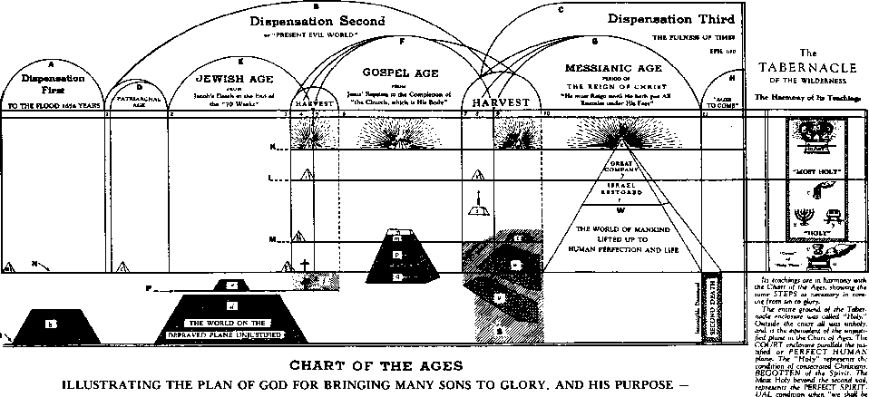
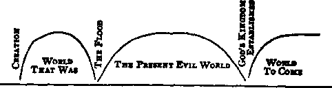
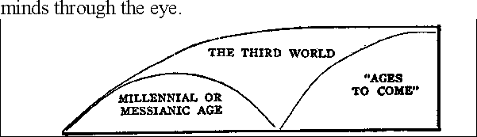

“Write down the vision and make it plain upon tables, that everyone may read it fluently1'
HABAKKUK 2
In regard to an administration of the fulness of the appointed times, to re-unite all things under one head, even under the Anointed One: the things in heaven and the things on earth -- under Him.11
Eph. 1; 10; Diaglott
IN THE
"The Path of the Just is as the Shining Light, That Shineth More and More
Unto the Perfect Day."
SERIES XVI
THE CHART OF
GOD'S PLAN
14,000 EDITION
"In order that now may be made known...the much diversified Wisdom of God, according to a Plan of the Ages, which he formed for the Anointed Jesus our Lord." (Eph. 3:10, 11-Diaglott.)
PUBLISHED BY
LAYMEN'S HOME MISSIONARY MOVEMENT
1156 St. Matthew's Road
P.O. Box 67
Chester Springs, Pennsylvania 19425-0067 1953 and 1996
IN THE INTEREST OF
ALL HIS CONSECRATED SERVANTS THAT FEAR HIM, BOTH SMALL AND GREAT
-AND OF-
"ALL THAT IN EVERY PLACE CALL UPON THE LORD;" "THE HOUSEHOLD OF FAITH,-
- AND OF-
THE GROANING CREATION, TRAVAILING AND WAITING FOR
THE MANIFESTATION OF THE SONS OF GOD,
"To make all see what is the fellowship of the mysteiy, which from the beginning of the world hath been hid in God," "Wherein He hath abounded toward us in all wisdom and prudence, having made known unto us the mysteiy of His will, according to His good pleasure which He hath purposed in Himself; that in the dispensation of the fulness of the times He might gather together in one all things, under
Christ."
Eph. 3:4, 5,9; 1: 8-10.
COPYRIGHTED 1953
By RAYMOND G. JOLLY As Executive Trustee of the Laymen's Home Missionary Movement
REPRINTED 1996
IT IS with joy that we present this book to the Lord's dear people, with the fervent prayer that He may use it to bring rich blessings to all who read and study it. However, only those who have made a careful and prayerful study of the book entitled, The Divine Plan of the Ages, will be prepared properly to understand and appreciate the presentations herein contained. It is hoped, therefore, that the reader will first study this famous "Bible Key," The Divine Plan of the Ages (which we will gladly supply on request), before undertaking a study of this book, which is supplementary to the former, and which treats especially of various details and additional features pertaining to the Chart of the Ages.
In view of the appropriateness of this work to the message of Rev. 19:6-9, now due to be declared, we believe that it is the Lord's will that it be provided in book form as the next in the EPIPHANY STUDIES IN THE SCRIPTURES series, despite the present high cost of book publication, the Lord having graciously provided the needed funds. We wish to acknowledge the able assistance of our dear Bros. August Gohlke and Bernard Hedman, two of Bro. Johnson's special helpers, who during his last illness, and since, helped in preparing the material for publication in book form. Most of the book's material having first appeared in the Author's magazines some years ago, the reader is asked to remember, especially in connections that refer to the development of the Little Flock, the time of trouble, the regathering of Israel, etc., that these things are set forth as viewed when written, even though the flight of time has produced further unfoldings along these lines since then. May God bless this book in its Divinely-intended mission!
Your servant in the Lord, RAYMOND G.
JOLLY.
Philadelphia, PA.
September 22, 1953.
PUBLISHER'S PREFACE
IT IS our pleasure to reprint this masterful presentation of God's Plan and present it to our readers. We should keep in mind, however, that the material was written many years ago, and should be viewed in this light.
1966
BERNARD W. HEDMAN for LHMM
AS A frontispiece of his book, The Divine Plan of the Ages, our beloved Pastor had a wonderful chart which by the Lord's grace he drew up as an exhibition and illustration of God's Plan. We are happy to reproduce it in this volume. In a debate with our Pastor in 1903, Dr. E. L. Eaton presented a chart giving his idea of hades, i.e., that it had two compartments-a Paradise of bliss for the righteous, and a Hell or Tartarus of woe for the wicked. He remarked that our Pastor had drawn up a marvelous chart illustrating his view of God's Plan and that it was the work of a genius, but added with reference to his own chart, that it too was a work of genius, stating additionally that genius consisted of 98% perspiration and 2% inspiration. Our Pastor's reply, pointing to Dr. Eaton's chart, was, "I agree with Dr. Eaton, that his chart is 98% perspiration and 2% inspiration"! The audience, catching the quick wit of our Pastor, fell into an applause which lasted for five minutes, then subsided, and then broke out anew for probably another five minutes; for they saw how his ready wit had completely nonplussed Dr. Eaton. Of our Pastor's chart we would say that it is 100% inspiration, for every detail of it squares with the Bible, as evidenced in his writings.
In the first chapter of this book we have outlined four Discourses on the Chart. These talks will be a part of the message of Rev. 19: 6, and should be prepared in Schools of Prophets or otherwise by brethren able to speak to an audience or who can be so trained. Our purpose is, not to supplant our Pastor's works, especially Vol. 1, but rather to supplement them and to corroborate many of his teachings on God's great Plan. We pray that this book will be a blessing to our readers, and help them to be a blessing to others. And we pray our Heavenly Father to accept this labor of love, intended to glorify Him, to vindicate His character and truth, and to exalt our beloved Lord and Savior Jesus Christ.
Your brother and servant, PAUL S. L. JOHNSON.
Philadelphia, PA.
July 29, 1948.
CHAPTER I
THE CHART OF GOD'S PLAN-ITS GENERALITIES
THE THREE WORLDS. THE THREE AGES OF THE SECOND WORLD.
THE AGES OF THE THIRD WORLD. THE PLANES OF BEING. ... 7
CHAPTER II
THE BIBLE'S WORLDS AND AGES (THEIR PARTICULARS)
THE THREE WORLDS. THE THREE ACES OF THE SECOND WORLD. 59
CHAPTER III
THE BIBLE'S WORLDS AND AGES (THEIR PARTICULARS) (Concluded)
THE THIRD WORLD. THE MILLENNIAL AGE. THE POST-MILLENNIAL
AGES. THE GLORY OF GOD AND THE CHRIST ETERNAL.....133
ITS RELATION TO THE CHART OP THE AGES. TWO HELLS MENTIONED IN THE SCRIPTURES. DERIVATION OF THE WORD. THREE DEFINITIONS STATED AND APPLIED. TEN POSTULATES ON THE FIRST HELL. THE SCRIPTURES EXAMINED........205
CHAPTER V
THE RICH MAN IN HELL-WILL HE EVER COME BACK?
THE LITERAL INTERPRETATION. TWELVE OBJECTIONS NOTED.
THE SYMBOLIC INTERPRETATION. THE RETURN OF THE RICH MAN
PROMISED. PROOFS THAT THE RICH MAN WILL RETURN. ... 235
THE LAKE EIRE SYMBOLIC OF THE SECOND DEATH. SIX THINGS TO BE CAST THEREIN. IT IS THE SOUL THAT IS DESTROYED. TEXTS MENTIONING THE LAKE OF FIRE. THE TWELVE OCCURRENCES OF THE WORD "GEHENNA" EXAMINED. THE PARABLE OF THE SHEEP AND GOATS. SODOM AND GOMORRAH AS AN EXAMPLE OF ETERNAL FIRE. SHEOL SOMETIMES REFERS TO SECOND HELL. 259
THE CHRIST, HEAD AND BODY. MISCONCEPTIONS OF OLD TESTAMENT PEOPLE AND JESUS' DISCIPLES. FIRST REVEALED, LATER MANIFESTED. MEANING OF THE WORD "CHRIST." OTHER SCRIPTURE DESIGNATIONS FOR THE CHRIST. HOW HIDDEN IN MYSTERY. AND FIGURES DURING PAST AGES THE FINISHING OF THE MYSTERY ITS MANIFESTATION TO OTHERS THAN THE SAINTS............................299
CHAPTER VIII
SUMMARIES ON VARIOUS FEATURES OF GOD'S PLAN
THE SIGNIFICANCE OF JESUS' ASCENSION. THE TWO SIN-OFFERINGS. JESUS' WORK IN THE SATISFACTION OF JUSTICE. THE CHURCH'S SHARE IN THE SATISFACTION OF JUSTICE. THE SARAH FEATURES OF THE ABRAHAMIC COVENANT. THE CHURCH WALKING THE NARROW WAY. THE SUFFERINGS OF THE CHURCH. THE GREAT COMPANY. THE FALL OF MAN. THE PERMISSION OF EVIL. THE TWO SALVATIONS. ISRAEL'S RETURN. GLAD TIDINGS. THE BIBLE HARMONIOUS WITH ITSELF. WHY SHOULD WE EXPECT CHRIST TO REIGN OVER THE EARTH? DOES THE BIBLE HOLD OUT HOPE FOR ANY OF THE UNSAVED DEAD? DOES THE BIBLE TEACH A SECOND CHANCE? OUR LORD'S RETURN. THE MILLENNIUM. THE RESURRECTION. RESTITUTION. THE JUDGMENT DAY FOR THE WORLD. THE HIGHWAY OF HOLINESS. THE MEDIATOR OF THE NEW COVENANT. THE NEW COVENANT OPERATIVE EXCLUSIVELY AFTER THE GOSPEL AGE. THY KINGDOM COME. CONSECRATION.......................313
CHAPTER I
THE CHART OF GOD'S PLAN— ITS GENERALITIES
THE THREE WORLDS. THE THREE AGES OF THE SECOND WORLD. THE AGES OR THE THIRD WORLD. THE PLANES OF BEING.
THE Chart of the Ages was made a frontispiece to the first volume of Studies in the Scriptures, and it is described in Chapter 12 of said volume; but when, later on, it was published separately, as a map mounted upon a spring roller (2 feet, 6 in. x 5 feet), requests came in from every quarter for such amplified explanations as would enable friends of the Truth to give comprehensive talks from their wall charts. It was to fill this requirement, and to enable many to tell the good tidings of great joy connectedly and systematically, that our Pastor published outlines for three chart lectures in a booklet entitled, "Three Discourses on The Divine Plan." In this chapter we republish these three, to which we have added a fourth. Many other discourses will profitably follow, and suggestions for some of them will be found in Chapters 10, 11 and 12 of Studies, Vol. 1, Chapter 5 of Vol. 2 and Chapter 8 of this book. After interesting your audience by the discourses on the chart, either sell or lend to them one or more of the Studies or other literature and get them to reading, and follow this up by assistance on points which may seem obscure. Next we advise a weekly gathering of such, as a "Berean Circle for Bible Study." Methods for conducting these very profitable meetings are suggested in Z 1866; 1900; 4886; P '37, p. 143.
DISCOURSE I
Dear friends, we are met together as a company, all interested, I trust, in God's great plan of salvation-The Plan of the Ages. From the fact of your presence here I assume that you are all believers in God, and that you accept the Bible as His Word. We will consider now such portions of that Word as outline the PLAN OF THE AGES. Our talk on the plan of God will be illustrated by this Chart. This Chart is merely designed as an aid to the mind through the eye in grasping the subject.
We believe in the old theology of the Lord and the apostles and prophets. We have no new thing to present to you—no plan or theory of our own; and I do not want you to receive anything that I say simply because I have said it, but because I have shown it to you in the Word of the Lord. Much that I have to say I trust you will recognize as old and familiar truths, while some things will be recognized as truths forgotten or overlooked or never noticed heretofore; but I trust that you will all be ready to accept without equivocation whatever I shall show from the Scriptures to be the Word of the Lord, whatever has been "written for our learning," as the Apostle suggests (Rom. 15: 4). It is in order that we may be "thoroughly furnished" that we are told to "search the Scriptures" (John 5: 39); and if we want to be wise toward God, we want to come as learners and to receive the instruction which God gives us in His Word, which is "able to make us wise unto salvation," with the "wisdom that cometh down from above" (2 Tim. 3: 15; James 3: 17, 18). We want to put on the "whole armor of God" (Eph. 6: 11).
(Point to Chart.) We will now consider some of the features of God's plan as illustrated by this Chart. I want you to dismiss from your minds for the present this lower part of the Chart-all below this upper horizontal line. (Point.) That part of it will be considered at future meetings. Now we want to give our attention to these upper arches and the small ones in them.
We do not approach the subject of the Divine plan from a scientific standpoint. The boasted philosophies of this world are often "falsely so-called," and tend more to confuse the mind than to help it. The plan of God is not abstruse, but plain and simple; and yet it is really a science; it is knowledge from the highest source. The word "science" simply means truth. And
therefore when our Lord said, "Thy Word is truth," it was equivalent to saying, "Thy Word is the science." He also prayed, "Sanctify them through thy truth"—through this science. We therefore invite you to the study of this, the true science—the Plan of the Ages revealed in the Scriptures.
But some may object that they see nothing scientific in the Bible. It is a common saying that "The Bible is an old fiddle upon which any tune can be played"—a Methodist tune, or a Baptist tune, or a Presbyterian tune, or any tune the player may desire. I am sorry to have to say it, dear friends, but it is nevertheless a fact that the Bible, the greatest of all sciences, the testimony of the greatest of all scientists, has sufreered more at the hands of its friends than at the hands of any other class of people. They forgot to "search the Scriptures" and to "rightly divide the word of truth," and went to creed-making, each according to his own liking. From the standpoint of infidelity, it is true that the Bible appears contradictory; but it is so only because of the varied human misrepresentations, and not because it is so in fact. By observing order (Heaven's first Law) the whole Word now opens up to God's people who are hungering and thirsting for it; because God's time for unsealing it has come. Having been thus blessed of God through observing His order in the study of His Word, I come to you as God's servant and yours, bringing you this grace. Prove all things by God's Word, and hold fast that which is good-that which you find to be in accord with the Bible, and that only.
We call attention first to these three upper arches (Pointing to Chart), leaving out these lower ones. These represent dispensations. By dispensation we signify the order or general character of these periods of time—God's course in reference to mankind during a certain time. The manner of His dealing in each of these dispensations is attested by the facts of history. The first dispensation (Point) extends from the creation of Adam to the flood; the second dispensation
(Point) from the flood to the second coming of Christ; and the third dispensation (Point) from the second coming of Christ onward.
But I fancy some one saying, "I thought there was some Second Adventism in this," and therefore I will stop right here to disabuse the mind of any of you of that thought. I am not an Adventist-neither a "Second Adventist" nor a "Seventh Day Adventist." I know there is prejudice on this point. Let me say, however, that I do believe in the second coming of Christ. ALL Christians do! I know that the Roman Catholics believe in it, and the Methodists, and the Presbyterians, and many others. I may not believe in it exactly as they do, or as the Adventists do. Some are what are called Pre-Mill ennialists, and others Post-Millennialists, the former believing that the Lord will come before the Millennium, and the latter that He will come after the Millennium. In my presentation of the Scriptures, you will see that I take a Pre-Millennialist view, and, as I proceed, I will give you my reasons therefore. But do not class me as an "Adventist," with all the peculiarities of Adventism. You will have an opportunity to hear and can then decide for yourselves as to whether or not I present the truth on the subject.
(Returning to the Chart.) This first dispensation is called in the Scriptures "the world that was"; the second dispensation is called "the world that now is" or the "present evil world"; and the third dispensation is called "the world to come." All these "worlds" have reference to the particular order of things that existed within the period designated; i.e., each dispensation or order of things is called a "world." Such use of the word "world" is not common at the present time, but what we want anyway is the thought of the original, whatever the word. Order or dispensation is the thought; "world" is the name used in Scripture.
That first world, the Apostle Peter says, "being overflowed with water, perished." What world?—That order of things or "world" which existed from creation to the flood, and which was terminated by the great deluge, which destroyed not only the whole social order of that time but also the whole world of mankind excepting Noah and his family. What was the then existing order of things? From the Scriptures we find that previous to the flood God permitted the angels to have general supervision of mankind—permitted them, I say. Doubtless the angels, when they saw the condition of sin into which man had fallen, desired to reform him, to help him out of the sin; but the results were the reverse of good; for we read that immediately preceding the flood the thoughts of men were evil, and "only evil continually"', and God took them away as He saw good. We must not, however, suppose that God's plan was a failure during the first dispensation. God was not trying an experiment. It was an experiment for the angels, and one by which they also were to be tried as to their loyalty and faithfulness to God; but God knew all the time that it would be a failure so far as accomplishing the reformation of man was concerned. God's plan was formed "before the foundation of the world"; and so we read that in His plan Christ was the "Lamb slain from the foundation of the world" (Rev. 13: 8); and in the course of these discourses it will be our purpose to show how the plan of redemption has been, and is being accomplished through the slain Lamb of God. The experiment of the angels was a lesson to them, as well as to mankind, who have observed the results of their efforts and who have accordingly been caused to look more carefully for the remedy for sin which God has provided.
That dispensation having come to an end in the destruction of that "world" (or order of things), God carried over in the ark Noah and his family, who had not become corrupt as the rest of the world, and with them began the second dispensation or "world that now is." (Point.)
This second dispensation is not under the control of angels; for it is written that Satan is "the prince of this world." This second dispensation or "world" has been left to man. God is not dealing directly with man, nor interfering directly with his affairs. When I say that it has been left to man to govern himself, I should add that man, having by reason of the fall become very weak, has become peculiarly susceptible to the influence and deceptions of Satan. The Lord said that Satan was a liar from the beginning (John 8: 44); and, being the arch-deceiver, he has deceived all men, who, believing themselves free, have really been his slaves; the only exceptions being those who have been influenced by the Gospel and who have thus come to recognize Satan's power, and to put themselves into the hands of God. Yet even in this, our own favored land, he is "going about as a roaring lion seeking whom he may devour"; and in Asia and Africa, and other uncivilized lands we see him ruling with a high hand, the people being so blinded by superstition that fetish worship and sorcery and other devilments are openly practiced; so much so, that Satan is properly styled, as the Scriptures name him, "the god of this world"-not the god of that "world" (Point to the first "world"), nor of that "world" (Point to third world), but of THIS "world" (Point to second "world").
This is what is meant by "rightly dividing the word of truth." It would not do to apply to "this world" (Point to second "world") the Scriptures which belong to that "world" (Point to first "world"), nor to that "world" (Point to third "world") Scriptures which belong to this "world" (Point to second "world") or to the first "world" (Point); for instance, it would not be proper to say that Satan is the god or prince of the third "world." (Point.) Christ will be "King over all the earth in THAT day," though he is not King over all the earth in this "world." (Point.)
What? Is not Christ the King of this world, the Ruler of this world? How is Satan the god of this world? I reply: The word "god" means "mighty one." Who is the mighty one of this world? Surely not
Christ. I venture to say that if Christ were the God or Prince of this world, it would be a far better world than it is. But no, my friends. He Himself said, "My kingdom is NOT OF THIS WORLD" —this world (Point); and on another occasion He said, "The prince of THIS world [Satan] cometh, and hath nothing in me" (John 18: 36; 14: 30).
But some might suppose that Satan is "the prince of this world" by divine right—that God has given him the power which he possesses; but not so. While God has allowed man to take his own course, and has permitted Satan to become his deceiver, as is written, "The god of this world hath blinded the minds of them that believe not" (2 Cor. 4: 4), it has only been by reason of the depraved condition of men, and their willingness to be deceived, that Satan has succeeded in overpowering them. Satan is a usurper. By reason of man's submission to him he rules as a tyrant; but not by God's authority. When Christ comes He will not have to buy out Satan's Kingdom. Satan never had a right to rule. Why God permitted Satan to exercise such great power over men is a very interesting question, and one which the Scriptures answer very satisfactorily, but we do not go into it at present. We are not now studying the WHY, but the FACT. But when we do come to the study of that question, we will find that although Satan's dominion has been permitted, all the while God's own plan, purposed from the beginning, has been achieving that for which it was sent (Is. 55: 11).
This second dispensation or "world that now is" (Point) is also called by the Apostle Paul "this present evil world." manifestly evil for the above reason—the character of the "world" being determined by the character of the ruler; and Satan being "the prince of this world," and working continually in the hearts of "the children of disobedience" (Eph. 2: 2), the logical result is an evil "world"—an evil order of things. The new dispensation, however (the "world to come"), will not be under the "prince of this world" (Point), nor
under the angels (Point to first "world"), but under Christ. Christ is not now the "governor among the nations," as He will be then (Psa. 22: 28). In THAT day (Point to third world), the prophet Daniel says, "the God of heaven shall set up a kingdom" (Dan. 2: 44). It is for this kingdom that we have long prayed, saying, "Thy Kingdom come, Thy will be done on earth as it is done in heaven."
Notice, further, that while that dispensation (Point) ended with a flood, this dispensation (Point) will end with a "fire." Such is the Apostle Peter's statement—"The heavens and earth which are now (Point) by the same word are kept in store, reserved unto FIRE against the day of judgment and perdition of ungodly men," in which "the ELEMENTS shall melt with fervent heat, . . . wherein the heavens being on FIRE shall be dissolved, the earth also and the works that are therein shall be burned up." Our Adventist friends say that this is a literal fire, but there is nothing in Peter's statement to show whether this fire is literal or symbolic. In order to learn what the Scriptures say on the subject we must "compare scripture with scripture"; and by so doing we will see that it is NOT a literal fire, but a symbolic "fire."
Just to illustrate: you have perhaps heard someone say, "It is getting hotter and hotter betwixt capital and labor!" Yes, the friction is increasing, and soon it will burst into a flame. So we should understand the Apostle Peter's statement, "The ELEMENTS shall melt with fervent heat"—the elements comprising this present "world" or order of things, the present arrangement of society. What are the "elements" that compose society? The rich element and the poor element, the capital and labor elements, political, financial and religious elements. These all shall MELT in this "day of the Lord," as it is elsewhere called.
But some say that such things have always been; that there have always been financial, religious and social troubles, and that those coming will be no difreerent from those that are past. The prophet Daniel, however, did not so express it. He said that the time of trouble which is coming will be such as "never was since there was a nation, even to that same time," and our Lord adds, "No, nor ever shall be" (Dan. 12: 1; Matt. 24: 21). The trouble that is coming will not be an ordinary trouble. When the Word of the Lord says that it will be a trouble such as never was BEFORE and never will be afterward, we may know that it WILL be so. Is there not all about us every indication that this trouble is truly operating now, in which the elements of society shall melt with fervent heat? We are reaching new and peculiar conditions. These peculiar conditions are not found merely in one nation nor in a small corner of a nation. They are world-wide, and are becoming more and more frequent in their recurrence; and the Word of the Lord assures us that before the end all the kingdoms of the world shall be thrown down (Hag. 2: 22; Dan. 2: 44); for the Lord "will judge among the nations" (Ps. 110: 6). This is the day of the Lord's reckoning. It is the day in which it will be said of some, "Ye have heaped treasure together for the last days” (James 5: 3). From the expression one would think that this was written by one living in the present time, and familiar with the trend of events as we see them. But who wrote it? The Apostle James, eighteen hundred years ago. And he goes on to say, "Behold the hire of the laborers who have reaped down your fields, which is of you kept back by fraud, crieth; and the cries of them which have reaped have entered into the ears of the Lord of Sabaoth"; and the prophet says, "They shall cast their silver in the streets and their gold shall be removed: their silver and their gold shall not be able to deliver them in the day of the wrath of the Lord” (Ezek. 7: 19). This (Point to the "harvest" or end of "this world") is the day of the Lord's anger, the "day of vengeance," the day in which He will make manifest His principles of righteousness—in which He will lay judgment "to the line and righteousness to the
plummet" (Is. 28: 17). This is the day for which those who have suffered for righteousness' sake have been told to wait.
In the same connection in which He speaks of this trouble, the Apostle says to the brethren, "Be patient therefore, brethren, unto the coming of the Lord" (James 5: 7); because this is the day in which the Lord will fulfill His promise to His people, saying, "Vengeance is mine; I Will REPAY, saith the Lord" (Rom. 12: 19). So also says the prophet Zephaniah (3: 8, 9) —"Wait ye upon me, saith the LORD ["Be patient therefore, brethren"], until THE DAY that I rise up to the prey; for my determination is to gather the nations [ It was to be an international matter—a worldwide trouble], that I may assemble the kingdoms [bring them nearer together; this has been accomplished by alliances for mutual protection, such as The Triple Alliance, The Triple Entente, The League of Nations, United Nations, etc., and additionally in the field of communication and travel by telegraph, telephone, radio, television, railroad, steamship, airplane, etc.], to pour upon them mine indignation, even all my fierce anger [This began in 1914 with the World War, foretold in Jer. 25: 1538; Joel 3: 9-13, etc.]: for all the earth shall be devoured with the FIRE of My JEALOUSY."
THIS is a peculiar kind of a "fire" which is to devour the earth, and melt the "elements" with fervent heat—the fire of God's jealousy, the fire of God's anger, the fire of His justice. "For THEN," the prophet continues (and this gives us assurance that the fire is not literal, but figurative), "THEN will I turn to the people a pure language, that they may all call upon the name of the LORD, to serve Him with one consent." THEN will be ushered in the "new heavens and earth" which Peter said would follow the dissolving of the present order of things—"the present evil world"; then will have peculiar significance the expression of the Revelator, "and there was no more SEA"; for the present heaven and earth will have passed away (Rev. 21: 1).
What does he mean when he says there shall be no more SEA? Does he refer to the literal sea? No! We must remember that the entire Book of Revelation is a book of symbols, and that many of the Prophets and Psalms employ the same symbolic language. In this figurative language, "heavens" represents the ecclesiastical powers or ruling religious systems. The angels constituted the heavens or spiritual ruling power of the first dispensation (Point); Satan and the systems controlled by Satan, which rule the present evil world, are the present heavens; and Christ and His Bride, the true Church, will constitute the heavens of the future. Concerning this we will have more to say later.
"Earth" signifies organized society, "mountains" signify the governments which are the backbones of society—its exalted representatives; the "sea" represents the restless elements of society, which beat up against it and against the governments or "mountains," and which will finally envelop them in anarchy (Ps. 46: 2). Hence we may understand the Apostle John to mean that when the new heavens and earth are established there will be no more anarchy; or, as the Apostle Peter says, it will be a heavens and earth (or order of things) "wherein dwelleth righteousness." "The Lord will be King over all the earth in that day" (Zech. 14: 9).
Thus while it is shown that the symbolic heavens and earth of this present time shall pass away with a great noise— confusion and trouble—it is also indicated that the literal earth and its literal atmospheric heavens will continue to abide; "for thus saith the Lord that created the heavens, God himself that formed the earth and made it: He hath established it, He created it not in vain, He formed it to be inhabited, I am the Lord, and there is none else" (Is. 45: 18).
Our next discourse will bring out some interesting details respecting the "ages" which have gone to make up this "present evil world," represented by these under arches. (Point.) I trust that already some are helped for all their lives in the matter of "rightly
dividing the word of truth" as it relates to the larger dispensations or "worlds"; and in my next discourse I will apply the same Scriptural rule to the ages, with even grander results. All are cordially invited to be present at the appointed hour.
"Blind unbelief is sure to err, And scan His work in vain;
God is His own interpreter, And He will make it plain."
DISCOURSE II
[Introduce by brief recapitularion of Discourse I, for new hearers, as well as for the refreshment of those who heard it before.]
Now notice these semi-circles. (Point to the ages.) They represent ages. In what we have been saying with reference to the dispensations we have not considered what God is doing, but merely what He has permitted Satan and the angels and mankind in general to do of their own pleasure. But now we will talk of what GOD has been doing, during the same periods, though the world knew it not and does not yet know His purpose. During all this time God has not recognized the world of mankind nor dealt with them, but merely with a little handful of His own people. God lets the world and the devil alone, unless they attempt to thwart or cross His purposes. Then He says, "Hitherto shalt thou come, but no further" (Job 38: 11). But while the world and the devil have been busy, WHAT has God been doing? Has He been like a man of whom our Lord spoke, who began to build a house but had failed to count the cost, and whose neighbors consequently derided him, saying, "This man began to build, and was not able to finish" (Luke 14: 30) ? It would be very peculiar indeed if the Lord did not follow out the wisdom which He suggests to men. We find, however, that God did pursue the course of wisdom, and that not only will He be able to finish His work as He purposed it, but that known unto the Lord are all His works from the beginning of the world. And He declares, "My word shall not return unto me void, but it
shall accomplish that which I please, and it shall prosper in the thing whereunto I sent it" (Is. 55: 11).
Now let us inquire what God's purpose was. Has He been trying to convert the world? If so, He has not succeeded. The first dispensation was evil and only evil continually. The second dispensation has not witnessed the conversion of the world, and by inspiration it is called "the present evil world." Shall we say then that God has been trying to convert the world and has not succeeded? No, for had He made the effort, had that been His plan, He would have succeeded. "The Lord of hosts hath sworn, saying, Surely as I have thought, so shall it come to pass; and as I have purposed, so shall it stand.". "I am God, and there is none else: I am God, and there is none like me, declaring the end from the beginning, and from ancient times the things that are not yet done, saying, My counsel shall stand, and I will do all my pleasure .... Yea, I have spoken it, I will also bring it to pass; I have purposed it, I will also do it" (Is. 14: 24; 46: 9-11).
We conclude, therefore, that God has not been trying to convert the world! This assertion may be new to some of you, but you must admit that if God has been trying He has failed; whereas He says, "All my purposes shall be accomplished." This proves that God has not been attempting to convert the world; but, on the contrary, that if He has been accomplishing what He intended, He must have intended something else.
This first age (Point) is called the "Patriarchal Age," because in it God dealt with certain individuals or patriarchs, ignoring entirely the rest of the world. First He dealt with Abraham. "Now the Lord had said unto Abram, Get thee out of thy country, and from thy father's house, unto a land that I will show thee; and I will make of thee a great nation; and in thee shall all families of the earth be blessed" (Gen. 12: 1-3). He did not select Abraham's father or his uncles or his cousins or his aunts, but Abraham', and although Lot, his nephew, went along, he had no share in the covenant. Abraham waited until his father was dead (for that was the arrangement) before he moved into the land of promise. Well, some may say, that is election. Well, if it is, I cannot help it. That is what the Bible says, and we want to believe it just as the Bible says it.
Then God called Isaac-not his brothers. "In Isaac shall thy seed be called" (Gen. 21: 12). Then Isaac had two sons, Jacob and Esau, and God selected Jacob. "Jacob have I loved, but Esau have I loved less" (Rom. 9: 13). We will not here go into the reason for God's preference for Jacob. That may come in further along.
With the death of Jacob that age came to an end, and single individuals no longer were chosen. How do we know? The facts show it; for at the death of Jacob his twelve sons and all their children were chosen as those to whom the Lord's favor would be shown. His sons were prophetically blessed by Him; and, being recognized as a NATION elected of God, were called "the TWELVE TRIBES of Israel." While Jacob lived God dealt only with him, and did not recognize his children and their families as a nation', but upon his decease His favor passed to the Twelve Tribes of Israel as a nation, and a new age began. You will remember that Jacob's name was changed to Israel, the meaning of the word being "a prince with God." And so began what on this chart we call the "Jewish Age." (Point.) It might have been called the Israelitish Age, but you will see as we proceed a reason for not giving it that title, since the Gospel Church are "Israelites indeed"', and to have called this the Israelitish Age (Point to Jewish Age) would have led to some confusion.
That during this age (Point to Jewish Age) God dealt only with the Jews is clearly taught in the Scriptures; for He said to them on one occasion, "You ONLY have I known (recognized or owned) of all the families of the earth" (Amos 3: 2). The Apostle tells us that all others outside of Israel were "aliens and strangers, having no hope and without God in the world" (Eph. 2: 12).
"What advantage then hath the Jew?" the Apostle Paul inquired; and then he answered his own question—"Much every way. CHIEFLY because that unto them were committed the oracles of God" (Rom. 3: 2). God had a reason for confining His favor to Israel for that long period of over 1,800 years; and at a subsequent meeting we may inquire into these reasons and see how God's purposes were being accomplished. Now we merely note the facts'.
In the end of the Jewish Age Jesus "came unto his own, and his own received him not" (John 1: 11). You see, therefore, that He called the Jews "his own." Their rejection of the Lord was, however, no surprise to God. He had foretold it by the prophets: "He is despised and rejected of men." "We hid as it were our faces from him"; He had "no beauty that we should desire him" (Is. 53: 3, 2). Only a "remnant" received Him, as we read in the eleventh chapter of Romans; and it was to this "remnant" that He gave "liberty" to become "sons of God." SONS of God? Were not those of previous times "sons"? No, only "friends" and "servants." "Moses verily was faithful in all his house as a SERVANT [a house or nation of servants] . . . but Christ as a SON over his own house; whose house are we [the Gospel Church], if we hold fast the confidence and the rejoicing of the hope firm unto the end" (Heb. 3: 5, 6). You remember that Moses was the head or ruler of the house of servants, the Law at Mt. Sinai being given at his hands to the people. He was the mediator of the Law Covenant made with that people, whereas Christ is to be the Mediator of the New and better Covenant; and His glorified Church as His jointheir will share in that mediation and in bringing its benefits to the world. It was after the time of the crucifixion (Point) that God's favor began to extend beyond Israel to all men.
Did God change His plan? Had he become tired of dealing with the Jews only, and, on finding that they rejected Christ, did He conclude to experiment with the remainder of mankind? No; as we said before, God knew before what the outcome of the Jewish Age would be, and He at this time merely turned over a new leaf or took up another feature of His plan. To illustrate this we may suppose that we are looking through a book containing the architect's drawings for a fine building. On one page we see the plans for the cellar, on the next the plans for the first floor, on the next for the second floor, etc. Now it would be very foolish for us to say on looking through the book, "Oh, the architect has changed his plans! Here he has concluded to build a cellar, and then he changed his mind and concluded to build a house, and then he was not satisfied with this plan and drew another one here on the next page." In the same way we may say that God had His plans drawn before any part of His work was begun, though men, not appreciating what they have seen in the plan-book, the Bible, have been in ignorance of the progress of His work, and even of the fact that He has been working at all.
At the first coming of Christ, therefore, we may say that a new leaf was turned in the plan of God, a new order of dealing was begun. For a while Christ confined His ministry to the Jewish people, and for a particular purpose, which we shall see later on. And here again came in the special favor to Israel which had been manifested throughout the Jewish Age. Not only did the Lord confine His ministry to them, saying, "I am not sent but unto the lost sheep of the house of Israel" (Matt. 15: 24), but He would not permit His disciples to go outside of that nation. He said, "Go not into the way of the Gentiles, and into any city of the Samaritans enter ye not" (Matt. 10: 5). This special favor continued to Israel until a few days before the Lord's crucifixion, when He wept over their city, saying, "O Jerusalem, Jerusalem, thou that killest the prophets and stonest them which are sent unto thee, how often would I have gathered thy children together, even as a hen gathereth her chickens under her wings,
and ye would not. Behold, your house is left unto you desolate" (Matt. 23: 37, 38; 24: 1; 26: 1, 2; Luke 19: 41; 13: 34,35).
Yes, indeed, their house has been left unto them desolate. To this day they are all witnesses to its desolation; and some of them are beginning to see that all their national troubles date from the time of their crucifixion of their Messiah; and some of them are now beginning to see this and to turn longing eyes toward Him, their long-rejected Messiah.
Following our Lord's death and resurrection a NEW WORK began. When He died, He did not die for Israel only, but, thank God! also for you and me-Gentiles. Jesus Christ was manifested "that He by the grace of God should taste death for every man" (Heb. 2:9). And from Pentecost the special work of the Gospel Age dates; for the Lord's last words to His disciples were, "Go ye, therefore, and teach ALL nations" (Matt. 28: 19). The Gospel to be taught was indeed "good ridings of great joy to all people"—Jew and Gentile, bond and free, rich and poor, male and female—all people.
But how many have received the gospel message? Has God been attempting to convert the world in this age? If not, what work has He been doing? The Apostle Peter tells us that "God did visit the Gentiles, to take out of them a people for His name" (Acts 15: 14). He did not take all of them, but has been taking out or selecting from among them (selection again, you see) a people to bear HIS NAME.
[Illustration of a gentleman selecting a wife to bear his name-not any woman, nor every woman, but his choice]
[Comparison of the Bride of Christ, said by the Apostle to be "espoused as a chaste virgin."]
Another figure used by the apostles to signify the intimate relationship existing between Christ and those whom He selects to bear His name is that of the "head" and the "body." Christ is "the HEAD over all things to the Church which is His body” (Eph. 1: 22, 23). But not all who name the name of Christ will bear His name and share His glory as "heirs of God and joint-heirs with Jesus Christ." Only the faithful overcomers will be so favored. "To him that overcometh will I grant to sit with me in my throne" (Rom. 8: 17; Rev. 3: 21).
[Refer to the type of Isaac and Rebecca, the latter as the bride becoming the joint-heir with Isaac of all his father's riches. So the Church is to be joint-heir with Christ.]
This (Christ and His Bride bearing His name) is the "SEED of Abraham" to whom pertains the promise made away back here (Point) to Abraham—"In blessing I will bless thee, and in multiplying I will multiply THY SEED as the stars of the heaven and as the sand upon the seashore, and in thy seed shall all the nations of the earth be blessed" (Gen. 22: 17, 18).
The Apostle tells us, in referring to the type of Isaac and Rebecca, that those things were an "allegory"—not that such persons as Isaac and Rebecca did not exist, but that, while those circumstances really transpired, they were typical or representative of the union between Christ and the Church; and that as Isaac was the "seed of promise" through whom a blessing would come, and through whose natural seed part of the promise will be fulfilled, so Christ, as the real seed of Abraham and heir of the promise, becomes the agent through whom all the families of the earth will be blessed. This the Apostle shows in the third chapter of Galatians, verse 16—"and to thy seed, which is Christ”', and if we read down to the 29th verse we will see that all who are Christs (all who are of the people taken out for His name) become joint-heirs with Him in the Abrahamic promise. It reads, "If ye be Christs, then are YE ABRAHAM'S SEED, AND HEIRS according to the promise."
The object of the selection of this seed is the blessing of all the families of the earth; and this will be the work of the incoming Millennial age. (Point.) We have had enough of the devil's kingdom, and we are glad that the time will soon be here when Christ's Kingdom will be fully set up and established in the earth—when He will take unto Himself His great power and reign.
Another figure, used by the Apostle Peter in referring to the Church selected in this age and her close relationship to Christ, is that of "living stones" in God's temple—Christ being the chief corner-stone. The various members of the Church are now being tried and purified, chiseled and polished for a place in that glorious temple. [Compare with Solomon's temple, the preparation of the material beforehand, and its putting together noiselessly, without the sound of a hammer, axe or any tool of iron (1 Peter 2: 4-8; 1 Kings 6: 7). ]
The members of the Church, the "living stones" in the temple, are not joined to Christ one by one throughout the age, but each is prepared and awaits the final putting together, when all the stones are ready, and when Christ receives them to Himself. So the Apostle Paul looked forward to the future for his reward, saying, "Henceforth there is laid up for me a crown of righteousness, which the Lord, the righteous judge, will give me AT THAT DAY" (Point to Millennial Age)—the first age of the new dispensation, at the beginning of which Christ commences His Millennial reign.
Then will come the blessing upon all the families of the earth. " He must reign till He hath put all enemies under His feet" (1 Cor. 15: 25). Hence His coming MUST BE PREMillennial. Were He to wait until all things were put under His feet, and come at the close of the Millennium, this statement would not be true, for there would be nothing left for Him to subdue. One of the first Acts of His reign will be to bind Satan—which is plainly stated in the 20th chapter of Revelation—"I saw a strong angel come down from heaven, having a great chain in his hand; and he laid hold on the dragon, that old serpent, which is the devil and Satan, and bound him a thousand years, that he should deceive the nations no more." Then Christ's reign begins; and all who gain the victory over the beast and his image and the number
of his name, all the overcomers will "live and reign with Christ a thousand years" (Rev. 20: 4).
[Here call attention again to the necessity of "rightly dividing the word of truth," to the meaning of the word Millennium, and to the impropriety of applying passages relating to the Millennial Age or the Jewish Age to the Gospel Age or vice versa. ]
The "god" or "prince" of this world having been, bound, Christ will turn unto the people the "pure language" mentioned by the prophet. Satan will no more be able to "blind their eyes"; but, on the contrary, "the eyes of the blind shall be opened, and the ears of the deaf shall be unstopped"; and "the earth shall be full of the knowledge of the Lord, as the waters cover the sea"; and it will no more be necessary for any man to say to his neighbor, "Know the Lord; for they all shall know me from the least of them to the greatest of them, saith the Lord" (Is. 35: 5; 11: 9; Jer. 31: 34).
The prophet Isaiah overflows with enthusiasm when speaking of that glorious time (Point to Millennial Age), when "the wilderness and the solitary place shall be glad, and the desert shall rejoice and blossom as the rose," etc., etc. (Is. 35).
Beyond the Millennium we know that surely there are several other ages not only one eternal age. The Word of God reveals little beyond the Millennium which is one of the "ages to come," of which the Apostle Paul spoke. Nor will we inquire concerning that time, because "Secret things belong to God; but things which are revealed belong to us and to our children" (Deut. 29: 29).
And now, dear friends, having looked into a part of the plan of God, we would say that doubtless these things will not be appreciated by every one. We cannot expect the worldly-minded to understand or appreciate them, since they are not in the condition of heart which the Lord approves and to which He would reveal Himself. He Himself declares through the Apostle that not many great, not many wise, not many rich, after the course of this world, hath He chosen; but the poor, rich
in faith, hath He chosen to be heirs of the Kingdom. And our Lord thanked the Father because He has "hid these things from the [worldly] wise and prudent, and has revealed them unto babes"-the meek, the humble, those willing to be taught of God through His Word (1 Cor. 1: 26-29; Matt. 11: 25).
In our next discourse we hope to look further into the things which the Lord is revealing to those of His people who have hearing ears and receptive hearts, and which were written by holy men of old, as they were moved by the spirit, expressly for our learning.
The text of our next discourse will be a passage from which I suppose few if any of you have ever heard a discourse; viz., Acts 3: 19-21; and it also will be illustrated by the Chart.
DISCOURSE III
Before entering upon the subject of our discourse at this time, we will briefly recapitulate what we found in the two preceding discourses. We have been looking at the teachings of God's Word, endeavoring to dismiss from our minds all preconceived opinions and prejudices, natural or acquired. We have been endeavoring to find what the Word of God teaches, because we know that God is true and His Word interprets itself.
We found that the world's history is divided into three epochs or dispensations. (Point.) The first dispensation is entirely in the past. It reached from the creation to the flood, and is called by Peter "the world that was." The next, the second dispensation, we found to be mainly in the past, and now nearing its close, and called "the world that now is." We called attention to the significance of the word "world," its common use causing considerable confusion of thought, so that when we speak of the end of the world, the ordinary thought is that the earth upon which we are living will be destroyed. But we found that one world had already passed away, and yet we are on the same earth. I will not go into details on this subject; I merely touch upon it here to refresh your minds. This dispensation,
in the close or harvest of which we are now living, is called "the present evil world"—not because it is entirely evil, nor because it has no good in it, but because evil has predominated. We know there have been many good people, though they were few in comparison with the multitudes of evil-disposed persons.
We also found that the Bible tells us (Point) that there is to be a "world to come," "world without end."
We found that that world (Point) ended with a flood, that this world (Point) is to end with a fire, a time of trouble which we certainly entered in 1914, hence which we have already entered, and which is to be a time of trouble such as "never was since there was a nation." This time of trouble is to have a purging, a purifying effect, consuming the dross—fire fitly representing destruction. Hear the Apostle Peter—"The heavens shall pass away with a great noise, and the elements shall melt with fervent heat; the earth also and the works that are therein shall be burned up . . .. Nevertheless we, according to His promise, look for new heavens and a new earth, wherein dwelleth righteousness" (2 Pet. 3: 10-13).
We saw that the first dispensation was left in the hands of angels, and that their administration proved a failure. We saw that during the second dispensation God has permitted the world to take its own course, to do the best it could for itself, to see how good government it could devise, what arrangements it could make for its comfort, etc., assured in His own mind that their experiments would all end in calamity. We saw that the effect of light and liberty is good if the heart is right. The difficulty is that the hearts of people are not right. The only class of people that can safely be allowed to do as they please are those who are in full accord with God and His principles of love, truth and righteousness. Men are not in this attitude toward God, however. Men are selfish. The "prince of this world" is in command, and therefore all the blessings and light and liberty will work out the wreck of the present institutions. Thus
man will learn the futility of his efforts, just as angels learned the futility of theirs; and then comes God's remedy, "the world to come." The prince of that world (Point) we found will not be Satan, but Christ. Christ will be "King over all the earth in that day" (Point), not this day, though He has the power. Evil prevails now, because God permits it, until it shall accomplish its lessons, and then He will usher in "that day” (Point), the reign of righteousness, the Kingdom. For that Kingdom He has taught us to pray— "Thy Kingdom come, Thy will be done on earth as it is done in heaven." God's people have been waiting and praying for His Kingdom for over eighteen hundred years.
We also considered some things with reference to God's dealings during this second dispensation. We inquired, "Has God been doing anything?" and we found the answer, Yes. During the Patriarchal Age God selected and dealt with Abraham, and made a covenant with him, that in his seed all the families of the earth should be blessed. Then he called Isaac; and at Isaac's death the covenant was confirmed to Jacob. Then when Jacob died a new age was opened, called the Jewish Age, because all the children of Jacob were called as heirs to the promise made to Abraham and confirmed to Isaac and to Jacob. God called them His "peculiar people"; and said, "You only have I known of all the families of the earth"; while others were "without God and having no hope in the world."
At the conclusion of His dealing with the people of Israel another age began. Christ came to His own people (the Jews), and they received Him not. That (Point) was the servant age; but this (Point) is the age of sons. "Moses verily was faithful over all his house [a house of servants], but Christ as a son over His own house, whose house are we [the Church]." Moses was the head over that house. Christ is the Head over all things to the Church which is His body. That house had typical sacrifices, this house has the real sacrifices. Christ came to Fleshly Israel, and only a remnant
received Him; but "as many as received Him, to them gave He liberty to become the sons of God." Christ first offered this privilege of sonship to the Jews, but because of unbelief only a remnant of Israel was gathered into the gospel house of sons, and the remainder of the house of sons is being made up of selections from among all nations—gathered out from all nations.
We called attention to the fact that the election of the Jews was not an election to go to heaven, but to be God's holy nation, His "peculiar people," under the special conditions of the Law Covenant. That was the election of a typical nation, while the election of this age is an individual election, which collectively is the antitypical holy nation and peculiar people. The gospel has been preached among all nations in order to select from them "a people for His name." Altogether they are only a "little flock." Evidently the Lord does not mean all who name the name of Christ; for that would mean at least a hundred million. This "little flock" is not named "Roman Catholic" or "Greek Catholic" or "Episcopalian" or "Methodist" or "Methodist Protestant" or "Unightd Presbyterian"—none of these names were adopted by the Lord. They are all names given by men', none of them are recognized by the Word of God. The members of the "little flock" recognized by God are all the true followers of Christ—Christians. "The Lord knoweth them that are His"—those who in truth and sincerity belong to Christ. They are the "Church of the first born," whose names are "written in heaven." That is the important place to have them written—"written in heaven." Only the truly consecrated are written there, and the names of those who continue faithful will never be blotted out of the book of life (Rev. 3: 5).
Then we considered God's object in making this selection. We saw that He had not changed His plan. It had not been a failure with the Patriarchs, so that He needed to make another plan for the Jews, and again another experiment with the gospel Church. God was
not thus subject to the frailties of men or the machinations of the devil. "Known unto God are all His works from the beginning of the world." "All His purposes shall be accomplished." He has had the same purpose all through the ages, and that purpose will be completed in the Millennial Age.
But what was that purpose? We found that God had made a promise to Abraham, saying, "In thy seed shall all the families of the earth be blessed." Abraham supposed that this seed through whom all the families of the earth would be blessed was Isaac; but no; it was not Isaac. Then Isaac supposed that it was Jacob; but it was not Jacob. And then when Jacob had twelve sons no doubt he began to think that it was through his sons that the blessing would come. There were one hundred and twenty-eight in all of his descendants still living at the time of his death, and out of this number he supposed that God would take his seed. Jacob prophesied concerning the characteristics of each of the twelve families or tribes; but after eighteen hundred years of experience, they did not bless the world, and they were not even ready to be blessed themselves; for though Christ came to them to bless them "His own received Him not."
But God had all this in mind at the beginning; in fact, the Apostle says that these are an allegory. Sarah was representative of the covenant made with Abraham; and when Isaac was promised, God was speaking of a greater seed than Isaac—"which seed is Christ." God meant Christ. Isaac was a type of Christ.
But did God mean that when Christ should come ALL the families of the earth should be blessed? We look about us and ask, Have ALL nations been blessed? And we are obliged to answer, No. It is eighteen hundred years since Christ came, and yet millions have not even heard of Him. Look over into Africa. Have they been blessed? Look over into China. Many of the Chinese in the interior of the country do not even know there has been a war with Japan. Have they ever heard of Christ?
Have they ever been blessed? No ! Where then is the mistake? What did the promise mean?
When God said "Christ," He meant not only the Lord Jesus, but the Christ complete, the Lord Jesus as Head, and the Church as His body. So the Apostle says, "He is the Head over all things to the Church, which is His body." He says, "which seed is Christ," and after reading down a little further to verse 29 of the same chapter (Gal. 3), we find the matter plainly stated, "If ye be Christ's, then are YE Abraham's seed, and heirs according to the promise." So then we see that "Christ" means the entire Church, the Lord Jesus as the Head and the true Church as the body. This is the reason the blessing has not yet reached the world. Until the selection and perfecting of the CHRIST is accomplished, the blessing cannot come. All the "overcomers" will constitute the true Israel of God, the Christ, the seed of Abraham, the "little flock" to whom it is said, "Fear not, little flock, it is your Father's good pleasure to give you the kingdom"—the kingdom for which we have been praying, "the kingdom of God's dear Son." The opportunity to bless all the families of the earth will be given to these and their associates. Let us endeavor so to run the race set before us as to make our calling and election sure. "If we sufreer [with Him], we shall also reign with Him. If we be dead with Him, we shall also live with Him" (2 Tim. 2: 11,12). "He that hath an ear [for spiritual things], let him hear" (Rev. 3: 22).
Concerning the work of the Gospel Age, the manner in which the election has been made, I may have more to say later. Let us see wherein the doctrines of election and free grace can be fully harmonized. The first one elected was the Lord; second, the Apostles; until now (Point to the end of the Gospel Age) the work of election has progressed down to the very "feet" of Christ, His last members, and their helpers. Moses said, "A prophet shall the Lord your God raise up unto you of your brethren, like unto me; him shall ye hear in
all things whatsoever he shall say unto you. And it shall come to pass, that every soul which will not hear that prophet shall be destroyed from among the people" (Deut. 18: 15-19; Acts 3: 22, 23). During the Gospel Age God has been raising up this great Prophet and Lawgiver like unto Moses; and during its Harvest the deliverance of the last members of His body is accomplished; they are made ready to take their places with those previously selected and approved.
The selection of the Church has not been conducted in an arbitrary way, but each member has been chastened, disciplined and tested in faith and character, in order to prepare him for the great work of the future as a member of the Royal Priesthood. Christ is the High Priest, just as Aaron was the head or high priest of the typical priesthood. While on earth, after His anointing at His baptism in Jordan, He was the antitype of Aaron, but now He is the Head of the new order—"the order of Melchisedec." In the Millennium He will be not only Priest, but King; and the Church will be not only priests, but kings. "Blessed and holy is he that hath part in the first resurrection. . . they shall be priests of God and of Christ, and shall reign with Him a thousand years" (Rev. 20: 6; 5: 10).
Has this promise ever been fulfilled? Have the saints ever reigned as kings and priests on the earth? No! The only thing approximating this reign was the reign of the counterfeit, Papacy; that great system which points to its Millennium of a thousand years, during the Dark Ages, and which has more or less deceived the whole world.
Now we come down to the Millennial Age. (Point.) We have seen that the world has not been blessed in the past. What blessing will come to the world during the Millennial Age—after the promised seed is fully manifested? ALL THE BLESSINGS THAT WERE PROMISED TO ABRAHAM. "IN THY SEED SHALL ALL THE FAMILIES OF THE EARTH BE BLESSED."
What do the people need in order to be blessed? They need education, they need enlightenment, they need good government, they need peace, they need many things that they are seeking now but are unable to obtain because of the present unfavorable conditions. Now "the whole creation groaneth and travaileth in pain together, waiting for the manifestation of the sons of God"—for the glad Millennial reign when they shall all be blessed. What a glorious promise! What a blessing it will be to all that are living at that time! That will be the "golden age" of which the poets have sung, the "good time coming" that socialists and others have been longing for and talking about. That will be the time which the Women's Christian Temperance Union has been trying to bring about by destroying the liquor traffic, and which the female suffragists and reformers of various kinds hope to bring about in their way. But though all these human efforts may prosper for a time, yet in the end all these plans will fail, and for a time anarchy will prevail. And what then?
"God is His own interpreter, And He will make it plain."
God knew the end from the beginning, and all along He has been working out His original purpose, meantime permitting various human panaceas to be tried, to let man see that his own efforts to bring about righteousness cannot succeed. Ah! human foresight cannot discern what will be the next step. But God knows the future of His plan as well as the past, and in His Word He offers wisdom from above to all His humble followers. And when men have seen all their plans and experiments end in failure, then they will be willing to look to God, and they will say, "Come, let us go up to the mountain [kingdom] of the Lord; He will teach us of His ways, and we will walk in His paths." And so it is written: "The desire of all nations shall come."
But this is not yet the desire of all nations: first must come the failure of their own panaceas. THEN they will be ready to accept the cure which the Lord has provided.
Ah! someone may say, that will be a blessed time for the fortunate ones who are living then, but what about the unfortunate ones who have died? There are twenty hundred millions of people living today, but few of whom ever heard the name of Jesus; the great mass of the dead never heard of Jesus; they have been dying in ignorance and fear, without God and without hope. A rough estimate is that not less than twenty billions of people have lived on the earth, and every one knows that among them there have been very few saints. During the first dispensation how many righteous people were there? At the time of the flood there were only eight, Noah and his family. Of the rest it is said, "God saw that the wickedness of man was great in the earth, and that every imagination of the thoughts of his heart was only evil continually." During the Patriarchal Age there were only a few righteous persons, only a few with whom God held communion; such as Noah, Abraham, Isaac and Jacob. During the Jewish Age there were not many; for while God called the entire Jewish nation, there were only a few of them, the prophets and a few others such as are mentioned in the eleventh chapter of Hebrews, who were approved of God; and notwithstanding all the instructions of their Law and the special messages of the prophets and the severe discipline through which they as a nation were caused to pass in punishment for their idolatry and other sins, when Christ came only a "remnant" received Him. All the rest were still a "stiff-necked and perverse" generation. And how has it been during the Gospel Age? (Point.) There have not been many saints—only a "little flock." The vast majority have not known God nor desired to know Him.
The question then is, What is to become of the others? What is to become of all who have not been the "friends" or "servants" or "sons" of God by faith in His promises and obedience to Him? What plan has God for the blessing of the others? For we must remember that the promise was, not that too few should be
blessed, but that "ALL THE FAMILIES OF THE EARTH SHALL BE BLESSED." But how? How can the blessing be accomplished? This brings us to our text: [Read impressively.] "TIMES OF REFRESHING SHALL COME FROM THE PRESENCE OF THE LORD; AND HE SHALL SEND JESUS CHRIST, WHICH BEFORE WAS PREACHED UNTO YOU, WHOM THE HEAVEN MUST RETAIN UNTIL THE times of restitution of all things, WHICH GOD HATH SPOKEN BY THE MOUTH OF ALL HIS HOLY PROPHETS SINCE THE WORLD BEGAN."
"He shall send Jesus Christ. " Peter was not here talking about the first coming of Christ. He spoke these words on the day of Pentecost, after the Holy Spirit had been poured out upon the waiting disciples, and ten days after he with others had seen Christ ascend to heaven. He was speaking of His second coming. "God will send Jesus Christ."
Our Lord Himself had promised that He would come a second time, saying, "If I go away, I will come again."
I will not take the time to prove that the Lord is coming a second time. I take it for granted that all here present believe that He will come again. Perhaps only one other doctrine, the doctrine of the ransom, is made as prominent in the Scriptures as this doctrine of the Lord's return. It is also made very prominent in all the creeds of the various denominations. Even Catholics believe in the second coming of Christ. They do not indeed confess that He is coming to bless the world, but rather that He is coming to damn the world. The wonder is that, with such a conception of things, any are willing to pray, "Even so come, Lord Jesus!" The beloved disciple who uttered these words as they are recorded in the Scriptures had no such anticipation. He knew of the time of blessing, and it was for this that he longed, and he knew that it could not come until Christ should come. The coming of Christ has been the hope of the world (though unknown to themselves). It has been the end of the prayers of all the saints. Until the King came, the Kingdom could not come. We have
been "looking for the blessed hope, and the glorious appearing of our Savior Jesus Christ" (Titus 2: 13), "whom the heaven must retain until the times of restitution of all things."
But what does that mean—"the times of restitution of all things"? What does the word "restitution" mean? It means restoring, restoration. What is it that needs restoration? "Adventists" think it means the hills, rocks, trees, etc. But that is not what it means! It is true they bring forward some Scriptures in support of their belief. You will remember that there is one (Is. 40: 4) which says, "Every valley shall be exalted, and every mountain and hill shall be made low." But this is not to be understood literally. These mountains and valleys and hills are symbolic. In symbolic language, "mountains" represent kingdoms; "valleys" mean the lowly or depressed or oppressed classes and conditions of society. Every kingdom and every exalted thing is to be brought low, and every lowly thing is to be exalted. This means the leveling of the social earth, and this leveling is already in progress. The saints have nothing to do with that work. God Himself is so overruling the affairs of men as to bring it about. The present is the lapping time of the two ages (Point), when certain influences of this character are already being felt. The Lord is the Supervisor of the time of trouble; but His consecrated people are not to use "carnal weapons" nor to engage in worldly strife; they are to be separate from the world and its spirit, and to do only the work which God has given them to do, and which we will consider further along in this course. They are to utilize all their talents in preaching the Gospel of the Kingdom.
But, looking all about us, we see that it is not the literal earth that needs restoring. The mountains and hills and valleys are very beautiful, and for those who desire a low country there is plenty of room in the valleys and vast prairies. It is mankind that needs restoring. If we could only make mankind right, we would have a very desirable world. If men's hearts were
right, and if we had perfect men and perfect women, "times of restitution" would not be needed.
But we have not. "By one man's disobedience sin entered into the world, and death by sin." What mankind needs is to be restored to Edenic perfection; and this it is promised will be done. "They shall not hurt nor destroy in all my holy mountain," saith the Lord, when He is "governor among the nations." Christ's ruling among the nations will mean not only the subduing of mankind, but the conquering of Satan and the controlling of all the elements of nature. "In that day" there will be no storms or violent climatic changes. The climate is not at present all that perfect beings might wish; but the One who stilled the storm on Galilee still has power over the elements, and all will be brought into subjection before it can be true that nothing shall hurt or destroy in all God's holy kingdom.
As I said before, the thing most needed is the promised "times of restitution"; but these restitution blessings are not for the Church. Their portion is not with the world. Special promises were made to them (2 Pet. 1: 4). They were to walk in Jesus' footsteps faithfully to the end of their course, if they would become "partakers of the divine nature." The world is to be blessed, not only by Jesus, but also by the Church, who will reign with Him as His join-their. The Lord said, "In my Father's house are many mansions." The Church is promised one of these conditions of blessing—to inhabit one of these mansions. The world under other conditions is to inhabit another of these mansions. Millions, yes, billions, are to have the blessings of restitution—to that which was lost, to that which Adam originally possessed, but the Church was to be tike Him (Christ) after making their "calling and election sure." They were promised the spirit nature, like their Lord and Head. So please keep the Church and the world distinct and separate—the blessing of restitution for the world, but for the Church the likeness and nature of Christ.
The Body of Christ being completed, there will never be another member added. The Gospel Age is the last and only time to become a member of Christ's "body." This thought, of a definite number in the Body of Christ, was illustrated in the person of the High Priest. No one could serve in that capacity who was deformed, who had any deficiency or superfluity of members; for instance, he who was lacking a finger, or who had a finger too many (Lev. 21: 18). So with the completed Christ, there is not one member lacking or one superfluous—only the elect number; for "Known unto the Lord are all His works from the beginning."
But, says one, I don't see that restitution would be such a great blessing. But perhaps you have not thought what a perfect man would be. What is a perfect man? There has never been a perfect man, except our Lord when He was a man, and Adam before the fall. We are all so imperfect that we cannot even understand all the perfection which was in Adam. It is true that Adam did not understand all about electricity, radio, telephone and telegraph and other wonderful inventions of which we have knowledge today; but that was not because he did not have the capacity to understand them. Adam's perfect mental, moral and physical powers were never exercised to the extent of the combined effort of all his multitudinous posterity during six thousand years of effort as seen in the present time. But his individual capacity was greater than that of any of his posterity, who from the effects of the fall have degenerated in other respects as well as in longevity. When Adam comes back to life it will not take him long to understand all about the machinery of our day, and I doubt not that in a short time he could make improvements upon much of it. And the same might be said of every other element of learning and skill.
You all have heard of "lightning calculators," who can add up long columns of figures without effort, or solve in a moment difficult problems which would take ordinary mathematicians an hour. Some of these prodigies are mere children; and none of them can tell how they do it. Yet all these powers must belong to the perfect man.
In music it is the same. Music is a natural gift. Take "Blind Tom," for instance; on every other subject he was an idiot, but he had a keen appreciation of music and was able to repeat any composition which he heard once, even repeating the mistakes of the performer, if any were made. How he did it we cannot tell. No one knows. He was not, however, in the true sense of the word a musician. The great composers and performers of the past three hundred years are illustrious examples of what is possible in musical genius. The perfect man will be no less a musician than were these imperfect men.
Then there have been men noted for oratory, others for logical acumen, others for their gift of poetry. Whatever we find in any branch of human intelligence or learning we may be sure is only a suggestion of what the powers of a perfect man would be, with all those qualities and gifts perfected and combined.
As an orator I might refer to the late Henry Ward Beecher. Not only was he a wonderful speaker, but he had a magnetic power, by which he carried his audience with him, often even against their will. It is related that prior to the Civil War, when secession was running high, he visited Richmond against the wishes of his friends, who feared that if he attempted to speak against slavery he would be mobbed. When he began, his voice could hardly be heard above the tumult; but as he proceeded the audience grew quiet, until finally it broke into applause. Such was his power, and yet his ability in this direction was nothing compared to what the ability of a perfect man would be.
Another power of the human mind which you and I do not possess, in fact, which is very rare, is the control of the lower animals. A gentleman passed through the principal cities of our land some years ago possessed of wonderful powers in this direction. All the
vicious horses of the vicinity were brought to him, and they quailed before him. It was simply a power of mind; and yet we may suppose that Adam was still more gifted, when all the animals passed quietly before him and received their names (Gen. 2: 19).
Some people are gifted with remarkable memory. If they read an article, prose or poem, once, they can repeat it word for word. We know of a gentleman who can repeat any text of the Bible that you call for; or, if you repeat the text, he can tell you the chapter and verse. And yet this is not a miraculous gift; it is simply a human power. And so of all the powers of the human mind. They are only a suggestion as to what they might be when perfected.
The Apostle Peter further answers our query as to what is to be restored. He says it is to be a restoration "of all things SPOKEN by the mouth of all the holy prophets since the world began." Restitution must be quite an important subject if it was foretold by all the holy prophets. Let us see how some of them spoke of it.
Moses was a prophet; did he speak of it? Yes! He not only foretold that Israel would fail to keep their covenant and would be scattered among the nations of the earth and be severely punished for their sins, but he also prophesied that God would gather them again out of all nations and restore them to their own land; that they would again be accepted as God's people; and that they, with all the other families of the earth, would be blessed "in the last rimes." (Point.) Moses also spoke of restitution and of restitution times, in the institution of the "Jubilee" system. In the year of jubilee all the debts of the people were forgiven. If a man had lost his property and was compelled by reason of additional debts to become the servant of another, his term of service could not extend beyond the year of jubilee; and if any man sold a house it could not be for a longer period than until the next jubilee year. Every fiftieth year was a Jubilee or "restitution" year. Thus the Lord
symbolized His purpose that all the earth shall return to its former estate, lost in Eden.
Isaiah, Jeremiah and Ezekiel also spoke of the return of Israel, that they would never more be "plucked up" or "thrown down." David and Isaiah speak of the "wilderness that shall blossom as a rose," of the blind eyes that shall be opened (not merely physical but mental blind eyes), and how all the "solitary places" shall be "glad" because of the Lord's blessing upon the earth, instead of the curse. Then the lame man shall leap as a hart—all the lame, not only the physically lame, but those with any kind of a weakness, physical, mental or moral. It is in the latter sense that the Apostle uses the word "lame" when he says, "Make straight paths for your feet, lest that which is lame be turned out of the way." So all the weaknesses that are the result of inheritance will be healed in that day, for all who will submit themselves obediently to the Great Physician.
All the holy prophets spoke of these "times of restitution," though I have quoted only a few. The Apostle's intimation is that if any spoke not of these times, he was not a prophet—not a holy prophet.
During the past ages, Patriarchal and Jewish, and during this Gospel Age, everything has been getting ready, and in the next age (Point) the "seed of Abraham" will bless all the families of the earth with an opportunity for restitution to all that was lost in Adam.
This restitution will not come to mankind UNCONDITIONALLY! There are conditions-the conditions of the New Covenant. "He that hath the Son hath life; and he that hath not the Son of God hath not life." We will not now consider these conditions. They may prove interesting at a future time.
One of the principal things lost in Adam was life. As a consequence of sin came death. If there were no death, there would be no pain, no sickness, no dying. Every ache and pain which we experience is so much of death working in us—"Dying thou shalt die"; "and so death passed upon all men." Billions of people have lived a few years, and these few, as job says, were "full of trouble." Man that is born of woman is of few days and "full of trouble." And then they die. Nine hundred and ninety-nine out of every thousand is not too great an estimate of the number who never even heard of Christ. And now the question is, How is the blessing to come to them? It is to come by the resurrection. When Paul spoke to the Athenians about resurrection, many of them mocked and said, We will hear you again on this matter. The idea of a resurrection seems absurd to many; and it is absurd, positively ridiculous, as viewed by some. But nevertheless there shall be a resurrection of the dead, both of the just and unjust. "The hour is coming when all that are in the graves shall hear the voice of the Son of God and come forth." An illustration of this fact was given in the case of Lazarus, excepting that because the due time had not yet come he could not be raised up fully, to perfection. We will not now take time to go into the subject; will merely say that when rightly understood, as the Scriptures present it, the doctrine of resurrection is reasonable and worthy of all acceptation. But some may doubtmgly say, It cannot be that God has such a good plan as that! It has seemed as though we, His children, were putting forth more effort than He on behalf of the world; and now you tell us that He has all the while been working out such a glorious plan on behalf of the dead as well as the living. If this be true, we can see why God has been allowing things to run on with such apparent indifference. You say that all the dead are to come forth; is there any Scripture which so declares? Yes, there are Scriptures on the subject. Our Lord said—"All that are in the graves shall hear the voice of the Son of God and come forth"; and on one occasion, when He went into the synagogue, and a copy of the book of Isaiah was handed to Him upon which to comment, He turned to chapter 61 and read, "The spirit of the Lord is upon me, because He hath anointed me to preach the good ridings unto the meek; He hath sent me to bind up the
broken hearted, to proclaim liberty to the captives, and the opening of the prison to them that are bound" (Luke 4: 18; Is. 61: 1). You will notice that He does not say that He is going to bind up all hearts, but only the ''broken'' hearts. There is no balm except for "broken" hearts. And what is meant by the "prison doors"? Did he mean the doors of the jails of Palestine? Did He mean that He would come and set all the convicts free? He certainly could not have meant that. He could not have referred to anything else than the great prison house of death, and the "prisoners of hope" which the great enemy Satan has bound therein. They are "prisoners of hope'' because Christ has purchased them. Under Satan the world has been going down into death; but Christ was manifested in order that He might ''destroy death and him that hath the power of death, that is, the devil." These prisoners in the tomb, prisoners of hope, will all come forth to the privileges and opportunities of the Millennial Age and of coming to perfection and securing eternal life, which will be afforded under the Millennial reign of Christ. (Point.)
In another discourse we may explain Satan's connection with sin and death. But now we merely draw upon the fact that when the Lord says to Satan's captives. "Show yourselves," they will come forth; and they will come forth in order that they may be blessed by Him during His thousand years' reign, during their judgment day. (Point to Millennial Age.) That judgment day will not be a twenty-four hour day, but a thousand years, and during it "all the families of the earth shall be blessed" with full knowledge, and judged according to the use they will make of it.
But now I seem to hear some one say, Isn't that too good to believe? No, it is not; but people have so long been mistaught, that to preach the love and justice and wisdom and power of God is almost to preach an unknown God. The "god of this world" has blinded all; even Christians have had a veil upon their hearts; lo, these many years, the burden of feeling their God
unjust because they could not understand His plan. Many have been driven into infidelity by false teachings, and the spiritual life of many others has been blighted. But now God is lifting the curtain and letting in the light. Now is the time of which it is written, "The wise shall understand"; "The meek will He teach His way"; "It is high time to awake out of sleep"; "Joy cometh in the morning [the resurrection morning; the Millennial morning]"; "The Sun of righteousness shall arise with healing in his beams" dealing implies restoration.
One point more. I wonder if we can find an illustration in the Scriptures proving that people who lived back here (Point to beginning of Jewish and Gospel Ages), or rather that lived further back, here (Point to beginning of Patriarchal Age), are to be restored. I wonder if we can find something about "real wicked people," as some would say. Right here, lest I should be misunderstood, I will explain that we are not preaching a SECOND chance, but we want to find a class of people that has not had an opportunity, that has been in ignorance, without God; a class that has never known God, and hence that could not reject Him; for we believe that those who have known God and then disobeyed wilfully will be punished with everlasting destruction without additional opportunity.
Let us look back until we find a record of a particularly wicked, nation; a nation that was all wicked, and that is now entirely extinct. We will select the Sodomites. They lived at about the time Abraham was called. When Lot, Abraham's nephew, found that his herdsmen could not agree with Abraham's, he moved among the people of the plain, who were called "Sodomites." These people were so wicked that it is said that Lot's righteous soul was vexed from day to day with their unlawful deeds and filthy conversation (2 Pet. 2: 6-8), until finally God delivered Lot and entirely destroyed the city. What evidence have we that they were all destroyed? May not one or two have escaped and become
the founders of a new city and people by that name? We have the Lord's own statement on this point. He says (Luke 17: 29), "The same day that Lot went out of Sodom it rained fire and brimstone from heaven, and destroyed them ALL." There was not one Sodomite left. And yet these Sodomites, wicked as they were, were not as wicked as some who have lived since, and who have sinned against more light, for our Lord, when pronouncing "woe" unto Capernaum and Chorazin and Bethsaida, said, "It shall be more tolerable for the land of Sodom in the day of judgment than for thee." Why? The Lord continues, "For if the mighty works which have been done in you had been done in Sodom, it would have remained until this day" (Matt. 11: 23,24).
The Lord says it will be more tolerable for Sodom in the day of judgment (the Millennium) than for Israel! That means that it will be tolerable for Israel in the day of judgment, but still more tolerable for Sodom. If Sodom would have repented, if it had had the light which Israel had, there is no doubt that many of its people will repent under the light of the judgment day. Remember that the judgment day is the Millennial Age, during which (we have seen) Christ will reign and "all the families of the earth shall be blessed" not only Israel and Sodom, but all the other nations.
Do the Scriptures say anything more with reference to the future of Sodom? Yes, the Lord says very positively that Sodom is to be restored. I will read the statement of the prophet, so there will be no mistake. In the 16th chapter of Ezekiel, the Lord prophesied His blessing upon Israel, and says that Israel was really worse than the surrounding idolatrous nations.
[Read verses 48, 49, 50, in recital of the sins of Sodom, and comment.]
[Read verses 53, 54, and comment the Lord says the Jews will be confounded when they see Sodom and Samaria in the day of judgment. Point to Millennial Age on chart.]
[Read verses 55, 56, and comment—the pride of
Israel in saying, "We have Abraham to our father," and in considering the surrounding nations beneath their notice; the return of all "to their former estate,', etc]
[Read verses 60-63, and comment—the special covenant with Israel made in the days of their youth, their breaking of it, and the blessing which is to come to them under the "everlasting covenant" which He will establish with them in the future; they with all the other nations will be blessed under the "New Covenant"; then all will be ashamed and confounded, when all Sodom with its captives, and all Israel with its captives, have been brought forth from the prison house of death and God is "pacified toward them" for all that they have done.]
Truly our God is a great God, and His plan is a great plan. We do not need to feel afiaid that God's plan is not good. It is good and just and wise, and He is able to finish it well. I rejoice that God is a just God, and that in His wisdom and love He has arranged that the millions who have perished are not to be everlastingly tormented in flames, as so many suppose. Few appreciate that God's mercy endureth forever and that He is "mighty to save" all who come unto Him in His appointed way—through Christ. Thousands have been driven to insanity by thinking of eternal torment, not only for the heathen but for their unconverted friends; and yet there is not a word in the Scriptures to that efreect. The Word of God, when it is properly understood, is all that is lovely, beautiful, grand and harmonious, and it speaks in no uncertain tones, as we have just seen, concerning "the restitution of all things." We have God's own Word for it; and hence IT MUST BE TRUE.
In our next discourse we will consider how the curse of God upon all can justly give place to a blessing upon all, by what arrangement it is that God can be "just and [yet be] the justifier of him that believeth in Jesus." We will see how love and justice harmonize in the Divine dealings.
"Deep in unfatfromable mines Of never-failing skill,
He treasures up His bright designs, And works His sovereign will."
DISCOURSE IV
THE THREE discourses on the upper part of the chart treated the generalities of the top part of the chart, i.e., its Worlds and Ages. Let us now consider generalities on the lower part of the chart. Please notice on the chart the line marked N. (Point to it on the chart.) It stretches across the entire bottom of the chart. That line represents human perfection, either actual or reckoned. In the case of Adam and Jesus, who in the chart are represented on this line, their justification was actual as they came into existence on the human plane; but for the others on this chart resting on line N their justification previous to the Millennial Age is reckoned. So this line N represents both actual and reckoned justification. We might add that for the Millennial World (Point), resting upon that line actual justification (Point) is implied for the end of the Millennium, for the chart represents the world of mankind as a finished work at the end of the Millennium.
It will be noticed that there are a number of pyramids on our chart. (Point to them.) Pyramids in the chart represent perfect beings either actual or reckoned when on the line N. (Point.) It will be noticed that in the beginning of this line under what is called the First Dispensation there is a pyramid; and this pyramid represents Adam in his perfect condition as he came from God—perfect in his physical, mental, moral, religious and artistic faculties. But, alas! Adam remained not long on that plane ofhuman perfection, for shortly after his creation he fell into sin and involved his family by heredity in his fall; and thus the human race is represented in his imperfect human condition by the plane R and the imperfect pyramid marked b. (Point to the plane and to the imperfect pyramid.) In this imperfect pyramid Adam and the imperfect race before the flood are represented in their imperfect condition.
(Point again to the imperfect pyramid.) On that plane of imperfection Adam and his race (Point again to the imperfect pyramid) lived under an experience with evil. We need not go into the details of this experience of evil and why it is permitted, because it is discussed in detail in Chapter III of our book, "The Bible," where also are described twenty-one evil effects of the curse, all of which are represented in the imperfect pyramid marked b. (Point.) It will be noticed that between the first dispensation and the first Age of the second World are two vertical fines marked 1. (Point.) These two lines represent the flood through which the First Dispensation or "world that then was . . . perished" (2 Pet. 3: 6). Please notice under Z), (Point) indicative of the Patriarchal Age there is a perfect pyramid marked c. (Point.) This perfect pyramid represents father Abraham, not actually perfect, for he was like the rest of the race fallen, but reckonedly perfect, justified by faith in God and thus reckonedly lifted up from the plane R (Point), which is the plane of sin and death, to justification, which in Abraham's case was that of faith. (Point to this pyramid.) With Abraham, Isaac and Jacob were likewise by their faith on that same plane, and may be included in Abraham under the pyramid c, in the Patriarchal Age. (Point to pyramid c.) The Patriarchal Age ended at the death of Jacob, represented by line number 2 (Point), which separates the Jewish Age from the Patriarchal Age. During the Patriarchal Age God dealt with patriarchs, with one at a time, on the basis of justification by faith, but with nobody else at that time. (Point to Patriarchal Age.) First at the death of Jacob his descendants became a nation, for in connection with Jacob's death they are spoken of as the twelve tribes of Israel. Throughout the Jewish Age all that were justified by faith reckonedly stood on the plane A, i.e., of justification. It will be noticed that immediately under this plane in the Jewish Age is an imperfect pyramid marked e, (Point) resting on the
plane P (Point), and below it is a larger imperfect pyramid marked d (Point), called, The World On The Depraved Plane, unjustified. The general world is more particularly represented in the pyramid d (Point), without God, without hope in the world, condemned to death and dying, each generation proceeding, on under the curse into the death state. This imperfect pyramid d (Point), as well as the imperfect pyramid b (Point), represents the race in its depraved, dying condition, as well as in the death state. (Point to both imperfect pyramids b, d.) What is represented, one might ask, by the small pyramid marked e ? (Point.) The answer to that question is: This imperfect pyramid represents the Jewish people as a nation typically justified; for it will be noticed that at the end of the plane P (Point.) on which e rests is a cross in a shadow (Point). This cross (Point) represents the sacrifices typical of the sacrifice of The Christ. It was in the faith of these sacrifices that Jews obtained typical justification; not an actual one, not even a reckoned one, though those who were on the plane N had that reckoned justification, but the people as a whole are represented by the imperfect pyramid e. (Point.) They were typically justified through their faith in the typical sacrifices as making atonement for them before God in a typical way; for we read that the "blood of bulls and goats" could actually make nothing perfect; so what the Jews as a whole had was not an actual or a reckoned justification, which is indicated by the plane N (Point), but a typical justification, indicated by plane P (Point), below plane N (Point), the shadowy feature marked/ on plane P, representing the time of trouble at the close of the Jewish Age.
We now come to the end of the Jewish Age. It will be noted that at the top of the chart it is called a Harvest (Point), in connection with which are found the figures 3, 4, 5, 6. The Jewish Age ended with a harvest, as Jesus indicated, saying, "The harvest truly is great, but the laborers are few; pray ye therefore the
Lord of the harvest that he would send forth laborers" (Luke 10: 2). This harvest is indicated between the numbers 3 and 6. It was divided into several parts. 3 represents the time of Jesus' baptism, which began the Jewish Harvest, and 4 the time of His death. (Point in each case to these figures.) 5 represents the beginning of the call of the Gentiles, in the Fall of 36 A. D. And 6 represents the end of the Jewish Harvest, in 69 A. D. Coming back to plane N we notice first there is a perfect pyramid called g. (Point.) This represents our Lord as a perfect human being before His baptism and Spirit-begettal, while the cross within the period between the figures 3 and 5 represents our Lord's death three and a half years after His baptism and Spirit-begettal.
We notice a plane higher up on the chart marked AT, and on that is resting a perfect pyramid marked h. (Point.) This represents our Lord as a new creature during the three and a half years of His ministry from Jordan to Calvary. A little higher up in the chart on the plane marked L we see another pyramid marked i. (Point.) This represents our Lord resurrected from the dead on the Spirit Plane, the exact image of the Father's substance (Heb. 1: 3, R. V.). Still higher up on the chart is a plane marked K and a pyramid that has glory light flowing out of it. This pyramid is marked k. (Point.) It represents our Lord's glorification in office, honor and work, to whom the ministry of the Gospel Age was committed at that time. It will be noted that there is a perfect pyramid with glory light shining from it on plane K marked 1. (Point.) This represents our Lord in glory throughout the Gospel Age. Just below the planes K and L we see an imperfect pyramid divided into four sections, the top marked n. (Point.) Just below it is a part marked m (Point), resting on plane M. Below this part of the imperfect pyramid resting on plane AT is a part marked p. (Point to it.) And below plane N is the lowest part of the imperfect pyramid marked q. (Point.) These four sections of this imperfect pyramid picture the four kinds of hearers of the Lord's Word referred to by Jesus in the parable of the sower that sowed on four different kinds of soil. The part marked n represents the Little Flock, who from a good and honest heart bring forth fruit unto perfection. The part of this imperfect pyramid below the part marked n (Point) represents the class that has not proved thoroughly faithful, who allowed the pursuit of wealth and popularity and the cares of life and its pleasures to divert them from full fidelity to their consecration vows, and this class we call (pointing to it) the Great Company, who as a class rest on the plane of Spirit-begetting M (Point) in this imperfect pyramid. The part of this pyramid marked p (Point) represents those who receive the Word with joy, but in time of persecution fall away. These are the faith-justified who believe for a while and are justified, hence are on plane N (Point); but by and by they fail to maintain their justification because they fail to proceed to consecration, indicated by the line M. (Point.) Below the plane N, indicated by the part of the imperfect pyramid marked q are those whose hearts are like those indicated by the hard road, from whose hearts the Devil takes away the seed of Truth, which they outwardly profess to accept. Individuals of these four classes (Point to each one of the four as indicated in the imperfect pyramid) have lived throughout the Gospel Age.
We have already noted that the Jewish Age ended with a harvest of forty years, the various steps of which are marked by the figures 3, 4, 5 and 6. The 3 indicates the Fall of 29 A. D., when our Lord was Spirit-begotten and the Jewish-Age Harvest began. The 4 represents the time at which He died and was resurrected. The 5 represents the beginning of the call of the Gentiles; while the 6 indicates the-time A. D. 69, when the Jewish Harvest ended. (Point in each case to these and the following figures.)
Corresponding with these days we have the Fall of 1874, indicated by the figure 7, when the Harvest of the Gospel Age began. By 8 is indicated the Spring of 1878. 9 represents the Fall of 1881, when the General call ceased. And 10 represents the period of the end of the reaping in 1914. We notice the letter s which represents the Little Flock in the Harvest, being separated from the Great Company, represented by /, and its gaining its resurrection is indicated by the pyramid r. The pyramid w represents the Christ, Head and Body, glorified. We notice in the shadowy part, under the pyramid w, an imperfect pyramid marked t. (Point in each case.) This represents the Great Company as separate and distinct from the Little Flock, a work that occurs in the Epiphany of the Harvest in the wider sense of that term. For it is in the Epiphany, the extreme end of the Age, that the Great Company is separated from the Little Flock, and is dealt with as such. The Epiphany is the same length as the reaping.
Under the imperfect pyramid t we notice an imperfect pyramid u. (Point.) This imperfect pyramid represents the justified who in the Harvest period, in the wide sense of the word, lose their justification and fall from the plane of justification, as tares, manifested as mere worldlings; while under this pyramid is another imperfect pyramid marked v (Point), separated from the imperfect pyramid u by a break. This bottom part represents the hypocrites, mere professors of Christianity. The shadowy feature at the bottom of the Harvest period represents the Time of Trouble, which is mainly in the Epiphany. It is in this time that the Great Company is separate and distinct from those members of the Little Flock still in the flesh. And it will be in the trouble, the great time of wrath, beginning with World War, phase I, proceeding through World War, phase II, World revolution and World anarchy, when the present order of affairs will be entirely destroyed. This trouble period is represented in the shadowy part of the Harvest section of the chart
and below it. The reaping period and the manifestation period of the Harvest together lasts eighty years; and with it the present order of affairs as represented in present governments, religions and plundering aristocracy will go into utter ruin and never rise again as such; for the trouble is to burn all the symbolic tares represented by the imperfect pyramids u and v (Point) in the shaded part of the Harvest, by their burning as tares. Not a literal burning is meant of literal tares, but a reducing of these classes to what they actually are — worldlings, having no standing as symbolic wheat and being false professors of Christianity.
At the end of the shaded part of the Harvest period, at the end of the great time of trouble, the Millennial Age begins; and in the Millennial Age we find a perfect pyramid, the bottom of which rests upon plane N. The top of the pyramid, represented by v (Point), pictures forth Jesus and the Church His Body in glory, administering to the Millennial Kingdom for the salvation of the non-elect, whom they will lift up to perfection as they obey them. Immediately under the pyramid v (Point) is an imperfect pyramid marked y (Point). This represents the Great Company, described in Rev. 7: 9, 13-17, who will be servants of Christ and the Church, standing before the throne, from the standpoint of the Kingdom as nobles, ministering to Christ and the Church; from the standpoint of the temple, in which the Great Company will be spiritual, as Levites. Immediately under the imperfect pyramid y (Point) is the pyramid z (Point), representing Israel restored. The Millennial Israel will consist of the Ancient Worthies, who will be princes at that time; secondly, the Youthful Worthies, who will also be princes at that time, these two classes being in the earthly phase of the Kingdom. The Israel of that time will also include believing fleshly Israel. Thus by Israel restored we understand three classes to be meant: the Ancient Worthies, the Youthful Worthies and those fleshly Israelites who believe the Abrahamic
promise and remain loyal to God. The unconsecrated faith-justified of the Gospel Age are also shown by z. Under the imperfect pyramid marked by the letter z is an imperfect pyramid marked W. (Point.) This part of the pyramid represents the World of Mankind in general, i.e., those who in this world were the unregenerate and also the reprobate Israelites who were unfaithful to the Covenant and therefore in the Millennial Age will be treated like Gentiles. It will be noted that the imperfect pyramid marked W rests upon the plane N (Point) and this represents the restored world of mankind brought to perfection through obeying Christ and the Church in the "highway of holiness." The whole non-elect world thus awaits a time of blessing with opportunities of being restored to human perfection, given by Christ and the Church. These are the ones whom Adam plunged into the ruin and who by Christ's sacrifice will be given opportunity on condition of obedience to attain perfect humanity, which was lost to them by father Adam. Thus the first Adam and first Eve generated the race in sin and death; and the second Adam and second Eve will regenerate the race in righteousness and life.
At the end of the Millennium we have a shadow called the Second Death. (Point.) At the end of the Millennium just before that shadow we read the words: Incorrigible Destroyed; for those who will not obey Christ and the Church as They ofreer them life on condition of obedience will go into the Second Death. Some of these will be destroyed in the Second Death at the end of 100 years trial, and they being incorrigible will perish forever, as we read in Is. 65: 20; while those who will not obey in the final trial, when Satan is loosed at the end of the Age (Rev. 20: 1-3), will be destroyed in the Second Death, at the end of the Millennium. These are the "goat class" that go into everlasting destruction. Following the Millennial Age will be "Ages to Come," marked on our chart by H (Point). How many of those Ages there will be is not revealed to us; but this much we know of them, that sinlessness will then prevail, and that Christ and His agents will bring new orders of beings into existence and will by their help enable them to conform to God's Law of love, which will insure a clean universe forever; for we are to remember that the whole universe is the property of God, to which He has made Jesus His heir and the Church Jesus' joint-heir. And the Ages to come, following the Millennium, will by Christ and the Church be used to develop their inheritance to perfection, filled with perfect beings, forever rendering praise and glory to God and Christ. Thus God will emerge as complete Victor, having won His battle with evil, having created beings for various planes of being of the elect and non-elect and having introduced them into Ages to come as perfect beings. In those Ages to come Christ and the Church will continue to develop Their inheritance and bring perfect beings into existence in their everlasting harmony with the Law of God; for the last expression of sin will occur in the Little Season, at the end of the Millennium. From then on there will be no more sin.
It will be noticed that at the end of our chart the Tabernacle is presented in our picture (Point). The Court represents the condition of the justified believer, resting as it does upon the plane N of human perfection. The brazen altar u (Point) represents Christ and the Church in Their sacrificing Their humanity as viewed by the justified sacrificers. v, the laver, represents the Bible, particularly in its cleansing office. The Holy is noticed to be even with the plane of Spirit-begettal, i.e., plane M (Point) and here we find three articles in the Holy of the Tabernacle, v stands by the candlestick (Point), which represents the Church in its office of enlightening the brethren, y stands by the table of showbread (Point), which represents the Church in feeding the brethren with the bread of life for their journey to the Kingdom, z by the Golden Altar (Point) represents Christ and the Church as viewed from God's standpoint, comforting and encouraging God's servants, reproving them and supporting them as They hold up Bible passages to them on the golden altar; while the incense, whose burning coals represent the fiery trials of the Christ class, represents the graces that ascend unto God from the sacrificial sufreerers of the Christ class, as prayers to God. Even with the plane L (Point) is the entrance to the Most Holy. Its second vail represents the death of the humanity of the Christ class and this Most Holy represents Their condition as Divine beings in glory, ministering before God. The chest part of the ark represents in its lower part (Point) Christ and the Church. Its containing heavenly Manna represents immortality; the rod that budded represents the Divine fruitfulness of the elect Priesthood, and the tables of the Law represent their harmony with the Law in all particulars. The golden slab that covered the chest part of the ark, i.e., its lid, the mercy seat, represents God in His attribute of justice. The two cherubim represent God in His attributes of love and power; while the glory light shining out from above the ark represents God as the light of the universe shining out in wisdom. The Tabernacle teaches the same as the chart.
O Thou! whose power o'er boundless space presides, Whose voice created, and whose wisdom guides The starry heavens with unerring skill, Where all in harmony obeys Thy will, Thy hand alone can overrule mankind
And order peace in his chaotic mind;
Oh, may Thy kingdom come, and earth be blest With silent confidence and holy rest!
"IT SHALL COME TO PASS IN THE LAST DAYS" ISAIAH 2: 2-4; MICAH 4: 1-4.
Behold, the mountain of the Lord In latter days shall rise
On mountain tops above the hills, And draw the wondering eyes.
To this the joyful nations round, All tribes and tongues, shall flow, To seek the blessings of the Lord, As to His house they go.
The beams that shine from Zion's height Shall lighten every land;
The King who reigns in Salem's towers Shall all the world command.
Among the nations He shall judge, And with His precious Bride, Restore mankind, reward the just, And quell the sinner's pride.
No strife shall rage, nor hostile feuds Disturb those peaceful years;
To plowshares men shall beat their swords, To pruning-hooks their spears.
For man shall love his fellow man And study war no more;
He'll turn his heart unto the Lord, And all his sins deplore.
The dead shall come forth from the tomb, To walk up life's Highway.
The desert as a rose shall bloom, And peace shall come to stay.
CHAPTER II
THE BIBLE'S WORLDS AND AGES (THEIR PARTICULARS)
ITS THREE WORLDS. THE THREE AGES OF THE SECOND WORLD.
THE WORD world in the Bible has as its general meaning the thought of an order or arrangement of affairs. From the standpoint of this general thought the Bible applies the word, world, to a number of things in which the idea of an order or arrangement inheres. Thus it is used Biblically in the sense of (1) the universe (John 17: 5; Acts 17: 24); (2) the earth (John 11: 9; Matt. 26: 13); (3) the human family (John 1: 10, 29; 3: 16); and (4) the order of affairs in the human family (Gal. 6: 14; 1 John 2: 15-17; 5: 4, 5; Jas. 4: 4). As occurring in the subject of this article the word, world, is used in the sense of the fourth definition just given—the order of affairs in the human family; therefore our subject implies three orders of affairs in the human family. In this treatise we desire to describe these in their turn. The first of these worlds was the order of affairs among men before the Flood, called, "the old world" (2 Pet. 2: 5), and "the world that then was" (2 Pet. 3: 6). The second of these worlds is the order of affairs among men from the end of the Flood until Christ's Second Advent and the establishment of God's kingdom, variously called "this world" (John 14: 30), "the present evil world" (Gal. 1: 4), "this present world" (2 Tim. 4: 10; Tit. 2: 12), and "the heavens and the earth which are now" (2 Pet. 3: 7). The third of these worlds will be the order of affairs among men from Christ's Second Advent and the establishment of the kingdom unto all eternity, variously called "the world
to come" (Heb. 2: 5), "world without end" (Is. 45: 17), "new heavens and a new earth" (2 Pet. 3: 13), "the dispensation of the fulness of times" (Eph. 1: 10), etc. These three worlds can probably be made clearest to our minds by the following diagram:
The first world-"the world that then was," "the old world"-was from the creation and fall of man until the flood, lasting 1656 years. It was the order of affairs that prevailed among men especially from the fall into sin and the curse until it was blotted out by the flood in the days of Noah. It was an evil order of affairs, because in it sin, error and death prevailed; but not being so evil as that one which followed, it is not, like the present order of affairs, expressly called the "evil world." "The world that then was," or "the old [evil] world," consisted of two parts: (1) its heavens, and (2) its earth. But when we speak of its heavens and its earth, we are not to be understood as meaning the literal heavens and earth of those days; but are to be understood as meaning figurative or symbolic heavens and earth. But one might ask: "What is the difference between the literal and the figurative heavens and earth?" The literal heavens are, of course, the stellar systems that we see above us on cloudless nights; while the literal earth is the planet on which we live, build our houses and plant our gardens. These literal heavens and this literal earth are used in the Bible in a natural figure to represent symbolic heavens and earth. The following thoughtlikeness underlying these things suggests the use of the heavens in a symbolic sense: As the natural stars give light, so that we
may find our way in the natural night; so teachers of religion are to shed the light of truth on the pathway of sinners, that they may find their way in the night of sin. As, therefore, all of the literal stars constitute the literal heavens, so all of the religious systems and their teachers in any of the Bible's three worlds constitute the heavens of that world. That the Bible speaks of a teaching class or system in the sense of symbolic stars is apparent from many verses, of which we will quote a few: "They that be wise [literally teachers', see margin] shall shine as the brightness of the firmament [the sun]; and they that turn [convert] many to righteousness, as the stars for ever and ever" (Dan. 12: 3). The Christ from the standpoint of giving the world the light of truth during the Millennium is called the Sun of Righteousness and the Sun (Mal. 4: 2; Matt. 13: 43). False teachers are called wandering stars (Jude 13). The special teachers of the Church in her seven epochs are called stars (Rev. 1: 20). The twelve Apostles as the teachers of the entire Church are symbolized by the twelve stars crowning the woman who symbolizes the Church (Rev. 12: 1). And Jesus, from the standpoint of giving the Truth in the dawn of the Millennium, is called the Day Star and the Morning Star (2 Pet. 1: 19; Rev. 22: 16). These passages, proving that religious teachers are symbolic stars, enable us to see how all of the symbolic stars of a world would be the symbolic heavens of that world.
In the Bible, angels—the spirits that God made as His servants (Heb. 1: 14)—are called stars—teachers. In job 38: 7, they are spoken of as the stars that sang together early in human history, rejoicing in God's creation. Lucifer, light— bearer, who later became Satan, was like the morning star—"son of the morning"—and later in unholy ambition sought to mount above [to become supreme over] the other stars—angels (Is. 14: 12, 13). According to these verses, the angels have been teachers—symbolic stars. When?
Evidently they will not be the heavens—the teacher—sin the world to come; for St. Paul expressly says, "Unto the angels hath He [God] not put in subjection the world [or Age] to come" (Heb. 2: 5). Nor are they the religious teachers of "this present world"; for the Lord has made certain men teachers of religion in "this present world," as can readily be seen from Cornelius' experience, to whom an angel was sent to show where a teacher might be found; but the angel was not himself privileged to teach Cornelius the truth unto Salvation; for instead of attempting to teach Cornelius, the angel said to him, "Send... for . . . Peter, who shall tell thee words whereby thou and thy house shall be saved" ( Acts 11: 13, 14). Therefore, not being the symbolic heavens of the second and third worlds, if the angels ever were symbolic stars—teachers of the human family—it must have been before the flood—in the "world that then was," in "the old world," i.e., in the first dispensation.
The angels are expressly spoken of as having been the authorized teachers of the human family, and as having been clothed with power to reward the obedient and punish the disobedient, in the following verse: "For if the word spoken by angels was steadfast, and every transgression and disobedience received a just recompense of reward" (Heb. 2: 2). This passage in the light of the foregoing considerations implies that before the flood the symbolic heavens—the symbolic stars—light or truth bearers—were the angels who were the authorized teachers of the people, rewarding them for obedience and punishing them for disobedience. It is true that the Bible does not give us details as to their administration of affairs; but piecing together the thoughts Scripturally indicated and implied, it seems that they were permitted by the Lord, who foreknew their failure, to seek the uplift of mankind after sin had entered the world, and thus were made the religious teachers—the stars, the symbolic heavens—in "the world that then was." But instead
of success crowning their efforts, matters became worse and worse, until man's wickedness required the punishment of the flood, which was effected by God's causing the canopy of water that enveloped the earth—"the waters above the heavens" or earth's atmosphere—to drop upon the earth in a worldwide deluge.
But not only did mankind steadfastly continue its downward course; but many of the angels were misled into sin in an unauthorized attempt to stem the ride of human wickedness and to restore mankind unto perfection. While the Bible does not give us the details, yet from the facts that it does give us we may properly infer that the following things occurred: Satan, who originated sin among men and angels, seems to have suggested the following thoughts to the angels while they were somewhat discouraged by their failure to uplift fallen man: "Your failure is due to your use of an inadequate remedy for man's sin. He is becoming worse because of hereditary depravity. A pure fountain is indispensable to pure water. If you make the fountain pure, you will have pure water. The race is impure because it comes from an impure fountain through heredity. You have the power to materialize human bodies (Gen. 18: 1, 2; 19: 1; Judg. 6: 11-22; 13: 20; Luke 1: 11-22, 28-38; etc.). Use this power, marry women and raise families; and you will impart your sinlessness to your posterity, and by and by, through a pure heredity, sin will be blotted out of the race." We say that Satan suggested such thoughts, because (1) apart from Satan other angels did not sin until just before the flood (1 Pet. 3: 19, 20; 2 Pet. 2: 4, 5); (2) he led many angels into sin; and (3) the angels sinned by marrying women and raising families (Gen. 6: 2, 4; Jude 6, 7; see American Revised Version), thus leaving their own habitation—their mode of living as spirit beings—and becoming guilty of fornication and going after strange flesh—a different nature from their own; as St. Jude tells us, they in these matters did as the people of Sodom did
later. But, instead of the offspring of these angelic fathers and human mothers being sinless, they seem to have increased the wickedness of the antediluvians (Gen. 6: 4-6). The procedure of the angels in this matter was entirely unauthorized. We may assume that when Satan first made his suggestion, it appealed to all as plausible; but doubtless some of them had doubts as to its propriety, because God had never authorized such a procedure. Some of the angels refused to enter into the suggestion unless Divinely authorized so to do. But there were others that allowed their zeal to reform the race to set aside proper caution; and these, following Satan's suggestion, instead of reforming the race, plunged themselves into sin, and the race into deeper sin. Thus the heavens—the symbolic heavens—of "the old world" became unfit for Divine use as religious leaders and teachers—symbolic stars. What a solemn lesson to us always to find out the Lord's will on everything before attempting it!
Let us briefly look at the symbolic earth before the flood. We understand the symbolic earth of any world to be the organized society of that world. Often the word, earth, is symbolically used in the Bible to mean society. For example, when Jesus said, "Ye are the salt of the earth" (Matt. 5: 13 ), He certainly did not mean that we are literal salt placed in the literal earth to season, nourish and preserve it; but that in human society-the symbolic earth-Christians are a seasoning, nourishing and preserving factor. Evidently Is. 60: 2 does not refer to the literal earth being in gross literal darkness; for if such were the case, it would be dark wherever the sun does not shine on the earth, no matter how many saints were there; and it would be light wherever the sun shines, no matter how many sinners were there. Evidently the thought of the verse is that while society in general would be in the darkness of error, the faithful would be in the light of truth. How apparently does the word earth mean society, in its first use, and the planet on which we live,
in its second use in Gen. 4: 14: "Thou hast driven me out this day from the face of the earth [society]; and from Thy face [favor] shall I be hid; and I shall be a fugitive and a vagabond in the earth [our planet]" ! Again, "the whole earth [human society] was of one language" (Gen. 11: 1). Other illustrations of the symbolic sense—society, as being given to the word, earth, could be cited; but the above are sufficient to prove the point under consideration.
It being established that the symbolic earth of the Scriptures means society, we now remark that the symbolic earth upon which the angels as the symbolic heavens shone before the flood was human society as then constituted. From the fact that the earth was not divided up into private property until in the day of Peleg [divider] after the flood (Gen. 10: 25); from the fact that the first human government was organized by Nimrod (Gen. 10: 10); and from the fact that the first business transaction on record is that of Abraham's purchase of the field and cave of Machpelah (Gen. 23: 3-20), we infer that before the flood there was no private ownership in property, no governments among the people, and no competition in business. In other words, society seemed to be organized on a more or less communistic basis somewhat after the manner of the social organization of the North American Indians. It was this peculiar social arrangement combined with man's increasing selfishness and sinfulness and the greater selfishness and sinfulness of the giant offspring of the angels (Gen. 6: 4) that made the earth—society— "corrupt" (Gen. 6: 5, 6, 11-13) —an expression that cannot be applied to the literal earth. The reader will note that in every use of the word, earth, in the above cited verses it means society. Thus the order of affairs before the flood— the angels in charge of the race and the race organized on a sort of communistic basis—proved to be a failure, as far as concerns the reformation of man from sin and his restoration to his Edenic perfection.
The foregoing discussion proves that both the symbolic heavens—the angels as the teachers of the human family, and the symbolic earth—society organized on somewhat of a communistic basis, became corrupt—unfit for the Lord's further use and tolerance as such. Hence He determined to destroy the world—not the physical, but the symbolic world, consisting, not of the physical, but the symbolic heavens and earth (Gen. 6: 3, 5-13, 17). That the symbolic world is referred to as being destroyed by the flood in 2 Pet. 3:6, and not the literal world, nor the human family, is evident from the fact that we still have the same literal heavens and earth that existed before the flood and that the human family still exists; for had the world, in the sense of the human family, been destroyed by the flood, a new human race would have been created, while the Bible shows that a part of the human race survived the flood. Therefore it was the symbolic world that was destroyed by the flood (Gen. 6: 13; 9: 11), i.e., the order of affairs in which the angels were the teachers of the human family, and in which the human family was socially organized on a somewhat communistic basis, was forever set aside by the flood. Thus ended "the world that then was," "the old world"—not the human family, nor the universe, nor the literal earth, but the order or dispensation of affairs existing in the human family before the flood.
This brings us to the second world or dispensation. We have already noted its names and its duration. Of its character we may say that it is an evil world, even as St. Paul calls it "this present evil world" (Gal. 1: 4). It is an evil world, because Satan, its prince or ruler, is evil (John 12: 31; 14: 30; 16: 11; 2 Cor. 4: 4; Eph. 2: 2; Luke 4: 6). When the Bible calls Satan the prince or the god of this world, it certainly does not mean that he is the prince or god of this world in the sense of the universe or of the literal earth; for Jehovah alone is the Prince and God of such universe and earth. Evidently Satan is the prince or god of this world in the sense of the present evil order of affairs among mankind, as each of the above citations clearly proves. He was not the prince of the first world, though he had more or less influence therein. He being ruler of this present world, it is very manifest why the present order of affairs among mankind is evil—its ruler is evil and desires evil in his empire.
The two parts—the symbolic heavens and the symbolic earth—of this present evil world are discussed in 2 Pet. 3: 7, 10-12, especially with reference to their end. As in the first world, so here the heavens are the powers of spiritual control. The powers of spiritual control in the second world or dispensation are the symbolic stars—the false religious systems and teachers that Satan has since the flood been using to deceive the human family. Every religious system, sect, sectlet or teacher—whether in heathendom or in Christendom—that has been used by Satan since the flood to palm off false doctrines, practices or organizations on mankind, is one of the stars of this present evil world. Truth in doctrine, practice and organization is from God and is given us through His Word (John 17: 17; 2 Tim. 3: 15-17). Error in doctrine, practice and organization is from Satan (John 8: 44; 2 Cor. 4: 4; Rev. 20: 1-3). Consequently false religious teachers, as Satan's mouthpieces, are the symbolic stars in the symbolic heavens of the second world or dispensation (Jude 13). These have deceived the heathen into accepting all sorts of false religions; yea, they have even entered Christendom and introduced doctrines of devils into various sects (2 Thes. 2: 3-9; 1 Tim. 4: 1-3; Rev. 17: 3, 5; 18: 3, 23; 19: 2). So deftly have the fallen angels used such religious bodies and teachers to palm off error, that through them Satan has put light for darkness and darkness for light unto the deception of almost the entire race (Is. 5: 20). Among other false doctrines, these have especially spread such doctrines as the Divine Right of Kings, Aristocrats
and Clergy, and the consciousness of the dead and eternal torment. Satan has exalted to high station, honor and influence such false teachers as best served his purposes, and has advanced in worldly prosperity those who became subject to them; while at the same time he has fiendishly opposed and persecuted the Truth teachers and their supporters both in heathendom and in Christendom.
The light that Satan's stars shed upon the people is of a very delusive kind. It prevents their seeing things aright, even as another expressive Scriptural figure, that of drunkenness, suggests. This delusive light is well illustrated by a phosphorescent light recently invented by scientists—it puts everything into a false position before one's eyes. Near objects are made to seem far away and changed in form, while distant objects appear changed and near at hand, as a result of its peculiar working. Just such symbolic light is emitted by the symbolic stars of the second world's heavens. This is exactly what we should expect in Satan's symbolic heavens; for the prince of the power of the air (Eph. 2: 2) is a Ear and the father of lies, and when he speaketh a he, he speaketh of his own (John 8: 44). Let us beware ofhis false—heavens!
As the symbolic earth of the first world was society organized on a sort of communistic basis, so the earth of the second—the present evil—world is society based on private ownership in property, governmental control in civil affairs and competition in business. All three of these principles are in themselves good, but the selfishness and wickedness of man have led to great abuses in their application, as all history since the flood abundantly attests. These abuses have resulted in society, as now organized, becoming more selfish, corrupt and unjust. As Satan has rewarded his representatives in his symbolic heavens— erroneous religious systems and teachers—so has he also in his symbolic earth advanced his representatives to honor, station, influence and riches, in State and Aristocracy.
As soon as these cease to be serviceable to him, he ruthlessly overthrows them. The rest of mankind he has in his symbolic earth subordinated as "the common laity" to the clergy—the stars of his symbolic heavens—and as subjects to the rulers, and as slaves, serfs or employees to the aristocrats—the great ones of his symbolic earth. This has resulted in the division of mankind into the classes and the masses. There has always been more or less dissatisfaction in the human family with the arrangements of Satan's evil world. Sometimes this dissatisfaction has been among the classes, where envy, covetousness, ambition, etc., have led to much strife and change in Religion, State, Aristocracy and Commonality; and sometimes it has been among the masses, where oppression, want, resentment, etc., have led to strife and change in the same spheres. Surely the evils—religious and social—that the human family have done and sufreered in Satan's order of affairs as a result of his rulership, justify the Scriptures in calling it "this present evil world."
We desire now briefly to examine two sets of passages which would flatly contradict one another unless we apply one set of them to the literal heavens and earth, and the other set of them to the symbolic heavens and earth; for one set of these passages tells us that "the heavens and the earth which are now" will abide forever, while the other set states that "the heavens and the earth which are now" will be destroyed during our Lord's Second Advent to give place to new heavens and a new earth. For example, Gen. 13: 14, 15 pledges Canaan—a part of the literal earth—as an eternal possession to Abraham's descendants. Hence this part at least of the literal earth will be eternal. Ps. 72: 7, 17, by the eternity of Christ, pledges the eternity of the sun and the moon—parts of the literal heavens. Prov. 2: 21 proves that the literal earth will last forever, from the fact that while evil-doers will be cut off from the earth, the righteous will remain there. Eccl. 1: 4 contrasts the transitoriness of the generations
of mankind with the permanence of the earth—the literal earth as the verse implies. Is. 60: 21 shows that the land— hence the literal earth—will be a perpetual inheritance. Jer. 31: 35, 36 pledges Israel's eternity by the eternity of the literal heavens and the literal earth. Amos 9: 14, 15 clearly shows that Israel will inhabit Palestine forever. If these passages are carefully studied, it will be readily recognized that they undoubtedly refer to the literal "heavens and earth which are now" and teach their permanence.
On the other hand, Bible passages just as pointedly teach that "the heavens and the earth which are now" will pass out of existence. Matt. 24: 35 contrasts the transitoriness of the heavens and earth with the permanence of God's Word. Since God's Word is the Truth (John 17: 17), the contrast of Matt. 24: 35 suggests that the heavens and earth there referred to must be erroneous—Satan's false religious systems and teachers and his falsely developed order of society. Thus the contrast of this verse proves that the symbolic heavens and earth are meant in this passage. So understood, it does not contradict the passages quoted above that teach the permanence of the literal heavens and earth. Rev. 20: 11 cannot refer to the literal heavens and earth; for these, having been before the Lord's face for thousands of years, would long ago have passed away, if they were here meant. Here evidently the symbolic heavens are meant. By the Lord's face is meant the Truth—God's Word (Rev. 1: 16; 2 Cor. 4: 6). The Lord's Truth according to Rev. 20: 11 will shine out so brightly that it will annihilate Satan's evil order of affairs—his false religious systems as the symbolic heavens, and his selfish, unjust and corrupt social arrangements as the symbolic earth. This thought is certainly in harmony with Matt. 24: 35, just considered, and with reason; and its fulfilment, we believe, belongs to the very near future. Evidently "the first [former] heaven and the first [former] earth" of Rev. 21: 1 are the symbolic heavens and earth of the present evil world, as the
“new heaven and the new earth" of the same verse refer to Christ and the faithful Church as the new powers of spiritual control (Dan. 12: 3; Matt. 13: 43) and the new society that they will develop, based upon truth, righteousness and love: These will be in the third world or dispensation (2 Pet. 3: 13; Is. 65: 16-25; 66: 22-24; Rev. 21: 2-5).
Rev. 6: 14 interpreted of the literal heaven would teach unthinkable nonsense. Separated by millions of miles of space, how could the literal heavens roll together? On what, as a surface, would they roll? How could they form a scroll? Think of the billions of planets and suns in the universe, most of them much larger than our earth, and then ask yourself the question, How could they be rolled up; and, even if they could be rolled up, what kind of a scroll would they form? At once one sees the folly of attempting to apply Rev. 6: 14 to the literal heavens. But applied to the symbolic heavens, everything is Scriptural, reasonable and factual, as the following will show: In Christendom sectarianism is of two general kinds, Protestant and Catholic. There are many Protestant sects, as all know, and there are a number of Catholic sects, of many of which most Protestants seem to be unaware, e.g., Syrian, Nestorian, Coptic, Greek, Orthodox, Anglican, Roman, etc. We understand Protestant sectarianism to be represented by one roll of the scroll and Catholic sectarianism to be meant by the other roll of the scroll. And what in our rimes suggests a rolling together of the two rolls of the scroll? The efforts at uniting the Protestant sects with one another and the Catholic sects with one another, and at making Protestantism and Catholicism more friendly. These efforts have resulted in the Federation of Churches, which is destined to increase until almost all Protestant sects are in it. On the other hand, unionistic efforts are manifest in the Catholic roll of this symbolic scroll. These are manifest in the high Church party of the Anglican Church making overtures to
Rome for union, in the present efforts of the pope to unight the Greek and the Roman Catholic Churches, etc. Thus each end of the scroll is being rolled up, and both rolls as parts of the one scroll are drawing near to one another, i.e., Protestant and Catholic sects are becoming more and more friendly, though they will never become one body, which fact is symbolized by the passing away of the scroll, while rolled up at both ends, maintaining both rolls intact until it passes away—is destroyed. Should we not rejoice that sectarianism—not Christian people, but sectarian systems—will shortly be destroyed as the symbolic heavens of the present evil world? Every lover of truth and righteousness should rejoice in this.
As viewed above—the distinction between the literal heavens and earth on the one hand and the symbolic heavens and earth on the other hand—the harmony of these two apparently contradictory sets of Scriptures becomes manifest. So far as we know, there is no other Scriptural, reasonable and factual way of harmonizing these Scriptures. It will not do for us, as devout students of the Word, to ignore the presence of these two sets of Scriptures. It is for us, by devout study and by the use of Divinely provided helps (Eph. 4: 11-13), to seek their harmony along Scriptural, reasonable and factual lines, even as the Scriptures exhort us to do: "Study to show thyself approved unto God, a workman that needeth not to be ashamed, rightly dividing the word of truth" (2 Tim. 2: 15; Is. 1: 18). As we have above distinguished between these two lines of passages, we believe that we have rightly divided the word of truth on the permanence and transitoriness of "the heavens and the earth which are now."
Since the world that was destroyed by the flood (2 Pet. 3: 6) was not the literal universe nor the human race, but was the then existing order of affairs-the communistic society under the charge of angels as the powers of spiritual control, since the literal "heavens
and earth which are now" according to the above passages are to last forever, and since the symbolic "heavens and earth which are now" are to be destroyed during Christ's Second Advent, we conclude that "the heavens and the earth which are now," referred to in 2 Pet. 3: 7, 10-12, are the symbolic heavens and earth, and not the literal heavens and earth. We would, therefore, conclude that the fire that is to destroy these heavens and this earth, like the pertinent heavens and earth themselves, will also be symbolic. This symbolic fire, which in its widest sense has been burning since the beginning of the World War in 1914, and which in its narrow sense is still future, we will now proceed to describe.
In the preceding part of this chapter we discussed the Three Worlds of the Bible up to the point treating of the end of the second world, and we have just seen that the symbolic heavens and earth that constitute the second world are to be obliterated by symbolic fire. Those who understand St. Peter (2 Pet. 3: 7-12) to mean the literal heavens and earth insist that the fire of vs. 7, 10-12, is literal. The absurdity of such a view becomes apparent when we remember that most of the elements of the literal earth and heavens are not carbonaceous and therefore cannot burn up. But having already seen that the heavens and earth that are to be destroyed are the symbolic heavens and earth—the present order of affairs based upon more or less of sin, error and selfishness—it is logically to be expected that the fire that will destroy them, in keeping with the symbols used, is figurative. Biblical investigation proves this logical expectation to be true. Fire naturally destroys combustible things, and upon this fact is based the symbolic use of fire in the Bible in the sense of destructive troubles and destruction.
A few passages will show this to be true: The destruction of evil from our characters by tribulations is spoken of as being wrought by fire, which proves that things and processes destructive of evil are meant by the fire (Mal. 3: 2, 3). Again, the wicked in their destruction are spoken of as symbolic stubble with symbolic roots and branches, all to be destroyed by symbolic fire (Mal. 4: 1, 3). Likewise, the symbolic fires of trial, in our times especially, burn up the wood and hay of human error and the stubble of a correspondingly faulty character, in certain ones among God's people (1 Cor. 3: 12-15). Speaking of the destruction that the great tribulation will work upon human society as now organized, the Lord declares, "All the [symbolic] earth [society] shall be devoured with the fire of My jealousy (Zeph. 3: 8). Surely the word, fire, as well as earth, in this passage is symbolic, and means destructive troubles; for the literal earth not being combustible cannot burn up literally. John the Baptist, prophesying of the destruction of the unbelieving Jews as a nation and as God's people, uses the word, chaff, to symbolize them as such, and the word, fire, to symbolize their destructive war with the Romans from 66 to 73 A. D., whereby the symbolic chaff as such would be burned up (Matt. 3: 11, 12). When St. James tells us that the tongue of the wicked is a fire and sets on fire the whole course of nature, he of course does not mean a literal fire; but as the connection shows, he means that such a tongue is destructive in its effects—a symbolic fire; and true enough such tongues caused the World War and will cause the rest of the fire of the day of the Lord. When the apostate church—an organization, a system, not a combustible material thing at all—is spoken of as being burned by fire (Rev. 17: 16), of course a literal burning with a literal fire is not meant; but a consuming destruction is designated. These passages are only a few taken from among many which show that fire is used symbolically in the Scriptures to represent destruction and destructive troubles.
It is just such a fire that is referred to by St. Peter in vs. 7, 10-12 of our text. This fire represents the destructive forces and effects of the Great Tribulation.
As we have repeatedly, shown in our writings, the Great Tribulation consists of five great evils, by which the present evil order of affairs—in reality Satan's empire—will be blotted out. These evils are worldwide war, revolution, anarchy, famine and pestilence. For their destructive nature and effects, in harmony with Scriptural symbols, they are very properly symbolized in the Bible by fire. We have described this symbolic fire together with its kindling and burning somewhat in detail in The Herald of the Epiphany, 1922, pp. 9-13 and in the book on the Millennium, under the subject, The Overthrow Of Satan's Empire. We, therefore, refer our readers to that article for these details and will not give them here. Rather here we will show how the symbolic language of our text, in vs. 7, 10-12, refers to them. In these verses the heavens—powers of spiritual control—and the earth—society—are spoken of as burning until they will melt, and all their elements—constituent parts: Church, State, Aristocracy and Labor—will dissolve because of the fervent heat caused by the friction arising from their hostile rubbing against one another.
In the article above referred to, we showed how the national elements—the various nations—through their national grudges, envies, suspicions, hatred, ambitions, rivalries, fears, covetousnesses, etc., caught on fire which flamed up into the World War. As a result President Wilson, using the same forceful symbols that our text employs, described the nations in war—the bulk of the human family—as "the world on fire" and the spreading war spirit as burning sparks blown about by the winds of strife and setting various other national houses one after another on fire. By the fire of the World War the national, clerical and aristocratic elements began to melt from the fervent heat thus generated. Famine and pestilence were, so to speak, so much more fire added to the fire of war and contributed their share to the melting, until the nations in State, Church and Aristocracy, emerged from the first stage of the fire considerably melted—weakened. Thus national friction resulted in a practically universal war— "the world on fire." But the revolution stage of the Great Tribulation—fire—will be caused by the friction arising from the conservative elements in State, Church and Aristocracy violently rubbing against the radical elements of Society in the field of Labor. This faction will cause a conflagration to burst out, setting every nation on fire within itself. So intensely will this fire of revolution burn, and so widely will it spread that it will burn down every national government on earth together with the religions and the aristocracies of all nations. Famines and pestilences more severe than those of the World War period will add more flames to the fires of revolution, making the conflagration more universal, intense and destructive. A government probably socialistic in character, but certainly under the control of Labor, will arise amid and out of the revolution; but it will last only a few years. Anarchy—the last stage of the trouble involving mankind—assisted by still worse famines and pestilences than the former ones, will like a devouring fire lay hold on this governmental structure with its accompanying social and religious organizations and burn it completely down, not leaving one vestige of Satan's evil heavens and earth in existence.
That the fire of our text is symbolic does not only follow from the fact that the heavens and earth that it devours are symbolic, and from the fact that it consists of worldwide war, revolution, anarchy, famine and pestilence, but also from the numerous other Scriptural figures used to designate the self-same destructive troubles. The following are the chief symbolic designations of these destructive troubles: a battle (Rev. 16: 14; Zeph. 3: 8; Is. 13: 4, 5), Armageddon (Rev. 16: 16), an earthquake (Rev. 16: 18; Heb. 12: 26), a whirlwind and a storm (Nah. 1: 3, 6, 7), a tempest of hail, a destroying storm and a flood of mighty waters (Is. 28: 2; Nah. 1: 4, 5, 8), the besom
[broom] of destruction (Is. 14: 23), a furnace of fire (Matt. 13: 42), a lake of fire (Rev. 19: 20), the supper of the Great God (Rev. 19: 17), and a winepress (Rev. 14: 19). All of these figures expressive of destruction referring to the same thing as the fire of our text, conclusively prove that destruction is symbolized by the fire. Thus through the symbolic fire of the Great Tribulation will Satan's evil order of affairs—his world consisting of its symbolic heavens and earth—be burned up, be completely destroyed. Thus will end never to rise again the second world—this present evil world or order of affairs—with its symbolic heavens and earth, in anticipation of which let us thank and praise God.
But our text in verse 13 and many other Scriptures (Is. 65: 17; 66: 22; Rev. 21: 1) tell us that the present symbolic heavens and earth will give place to new symbolic heavens and earth—new powers of spiritual control and another form of society organized on a new and good basis. This will be in the third world, "the world to come," which will last forever. It will have new heavens or powers of spiritual control—Jesus and His faithful followers (Dan. 12: 3; Mal. 4: 2; Matt. 13: 43; 1 Cor. 15: 41, 42; Rev. 22: 16). In very important and essential respects will the new heavens differ from the old heavens. The new symbolic heavens will shine the pure light of truth with healing effects upon the new symbolic earth of that time, driving away the miasma of ignorance, error, sin and all other effects of the curse, such as sickness, pain, sorrow, sighing, crying, tears, blight, famine, pestilence, death and the grave (Mal. 4: 2; Matt. 13: 43; Is. 65: 17-25; Rev. 21: 1-7; 22: 1-3; Is. 35: 1-10). Jesus and His Church, filled with God's love sufficient for the recovery of the human family, endowed by Divine power and wisdom commensurate to the task of uplifting the race, and permeated with Jehovah's righteousness indispensable to rulers of mankind for the good of their subjects, will have the qualities
needed for the faithful and merciful ministry of curing the ills of the curse and of supplying unto perfection all the needs of the race. Under their benign reign mankind will be restored to human perfection and Edenic conditions, as they obey the righteous, loving and wise arrangements of the new earth instituted by Christ and the Church for and among the whole race, the dead as well as the living (Ps. 22: 29; 86: 10; Is. 29: 18, 24; 35: 10; Rom. 14: 9; Phil. 2: 9-11).
The new earth—the earth of the third world or the world to come—will consist of human society organized on the basis of truth, righteousness and love, as against the erroneous, unjust and selfish arrangements of the present evil earth (Jer. 31: 31-34; Is. 35: 4-10). The nucleus of the new earth will be the Ancient and Youthful Worthies (Joel 2: 28; Dan. 12: 3). Humbled by, and converted to Christ amid Jacob's trouble just at the end of the anarchy stage of the Great Tribulation (Jer. 30: 7-9; Ezek. 38 and 39; Zech. 12: 9-14), Israel, first of all, will rally about these Worthies, accepting the new social arrangements of the Christ at their hands and will be greatly blessed by them. The news of these things will be spread among the Gentiles, exhausted, humbled and made docile by the tribulation, who will desire the same social arrangements established in their midst, and whose desires in these respects will be gratified (Is. 2: 2-4; 19: 23-25; Zech. 8: 20-23; Hag. 2: 7). Through obedience to these social arrangements all Jews and Gentiles alike will be blessed and uplifted until society gradually attains to physical, mental, moral and religious perfection. A brief trial will at the end of the Millennium be put upon the race to test their worthiness of living forever amid those perfect social arrangements; and the unfaithful in that trial will be cut off in the second death —everlasting destruction—(Rev. 20: 7-9; Acts 3: 23; 2 Thes. 1: 9; Ps. 145: 20; Prov. 2: 22), while the faithful in that trial will be privileged to enjoy this new earth forever (Prov. 2: 21; Is. 66: 22; 2 Pet. 3:
13; Ps. 37: 9-11, 29). As a consequence, in the Ages of the endless third world as these follow the Millennium, will the new heavens and the new earth and all in them glorify God (Rev. 5: 13). Thus will God by His plan operating through the three dispensations or worlds of the Bible emerge from His conflict with Satan as complete Victor, having destroyed all evil and all incorrigibly evil beings, and brought the faithful to everlasting perfection, some on various planes of being in heaven as the new heavens and others, perfect human beings, on earth as the new earth wherein righteousness shall dwell forever (2 Pet. 3: 13). What a glorious consummation and devoutly to be desired
Having studied the three worlds of the Bible, it would now be in order to study the Ages of the Second World. The First World was not subdivided into Ages, because from the Fall of Man until the flood there was no variation in the method of the Lord's dealings with man-He left them all under the rulership of the angels as the powers of spiritual control. He did not enter into covenant dealings with any of mankind during that period, though He was pleased to bless, under the limitations of the curse, any who drew near to Him, even as prison officials give trustworthy convicts certain advantages not given to other convicts. In harmony with this principle God showed certain favors, compatible with the curse, to Abel, Enoch and Noah, without making a special covenant with them before the flood, though after making His covenant with Abraham God retroactively included Abel, Enoch and Noah under its gracious provisions (Heb. 11: 4-7, 39, 40). It is because there was neither a covenant nor a variation in covenant operation between God and man from the Fall to the Flood that there were no Ages in the First World. But there have been three variations of covenant operation between God and certain select persons and nations during the Second World or Dispensation, and for this reason there have been three Ages in the Second World-the Patriarchal
Age, the Jewish Age and the Gospel or Christian Age. These Ages as parts of the Second World may be clarified to the mind through the eye by the following diagram
Properly to understand the ways of God toward man during the Second World, it is necessary for us not only to see, as we did above, mankinds condition and course without God and Christ in, and under control of, Satan's evil—the Second—World, but also to see the condition and course of certain elect classes under God's rulership during the same Dispensation. These two standpoints will give us a fuller understanding of the ways of God toward man during the Second World or Dispensation. It is from the viewpoint of the three Ages of this World that we come to see God's dealings with the elect classes; for during these three Ages He dealt on covenant basis with the elect alone. From the standpoint of covenant and persons, the Lord's dealings difreered in three ways during this period; hence as corresponding to these difreerences there are three Ages in the Second World. They difreer especially as follows: In the Patriarchal Age God dealt on covenant basis with certain patriarchs individually—Abraham, Isaac and Jacob—and through them with their families, but with no one else; during the Jewish Age God dealt on covenant basis with the Israelites as a fleshly nation and with no one else; and during the Gospel or Christian Age He has been dealing on covenant basis with the Christian Church—spiritual Israel—as a spiritual nation and with no one else. As these three classes have difreered from one another, so the predominant covenant has been a difreerent one in each
of these Ages. Thus during the Patriarchal Age God dealt with the Patriarchs and their families on the basis of an earthly elective feature of the Abrahamic Covenant; during the Jewish Age, while permitting faithful individuals to enjoy the same provisions of that covenant in a less open way after the Sinaitic Law was given, God openly dealt with fleshly Israel as a nation on the basis of the Mosaic Covenant; while during the Gospel Age God has been dealing with spiritual Israel on the basis of certain spiritual elective features of the Abrahamic Covenant.
Having seen the general difreerences in the Lord's dealings during these Ages, we will now study some of the details of these Ages, considering each one in its chronological order. We will therefore begin with the first of them, the Patriarchal Age. Generally speaking, the Patriarchal Age began at the end of the flood, partly because at that time God made a special covenant with Noah and his descendants never again to destroy the—symbolic—earth with a flood (Gen. 9: 8-17); but specifically speaking, the Patriarchal Age began with the covenant made with Abraham (Gen. 12: 1-5). Because of the retroactive operation of the blessings of the Abrahamic Covenant, they were anticipatorily applied to Noah, and even to Enoch and Abel (Heb. 11: 4-7, 39, 40). It is because of the retroactive efreect of this covenant on Noah, that we are also partly warranted in beginning the Patriarchal Age with the end of the flood. The word patriarchs means first fathers', and it is because Noah, Abraham, Isaac and Jacob were the first fathers of Israel in this period, that we call this period the Patriarchal Age, which we represent by the first semi-circle within the large semi-circle in our diagram. Apart from the covenant never again to destroy the earth with a flood, during this period God did not deal on covenant basis with every human being, i.e., did not extend anticipatorily or otherwise the blessings of the Abrahamic Covenant to everybody living in that time, e.g., to the
Babylonians, the Canaanights, the Egyptians, etc. The Scriptures teach that the Lord let them go their own chosen sinful way, winking at their ignorance ( Acts 17: 23, 30; Rom. 1: 21-25, 28). On the contrary, during that period He dealt on the Abrahamic Covenant basis with Abraham and through him with his family, then with Isaac and through him with his family, and then with Jacob and through him with his family. Thus God's dealings were of an elective character during the Patriarchal Age. And He allowed all the rest of mankind to go their own way, lost under the curse, without doing anything during that time to or for them directly for their salvation.
From this fact we conclude that it was not God's intention to save them or to attempt to save them at that time. This we know to be true; for had it been His will to attempt to save them at that time, He would have made the attempt, which the facts just given and the Scriptures last cited prove He did not do; and if it had been His intention to save them at that time, His intention would have been realized; for all His purposes shall surely come to pass (Is. 46: 10, 11). Therefore we reason that since He did not attempt to save the world at that time, and that since the world was not at that time saved, it evidently was not His purpose at that time to save the world. Rather He let it in general remain without God and without hope, to learn by experience what frightful and detestable task-masters sin, error, death and the grave are, and how desirable deliverance from them is. On the contrary, He confined His salutary works and efforts on behalf of the few patriarchs above mentioned and their families. Therefore His salutary work of that period was demonstratedly of an elective character, confined to a very few persons indeed.
If it was not Jehovah's purpose at that time to save or to attempt to save the world, what then were His purposes during the Patriarchal Age? In reply we would say that He had a variety of purposes, every one of which He realized, just as we should expect a God of perfect wisdom, power, justice and love to do. The first of these purposes was to reveal in a nutshell His glorious plan. This He did in a very terse form by and in making His covenant with Abraham and His Seed (Gen. 12: 1-4; 22: 16-18, etc.). Certain of the blessings referred to in this covenant belonged to Abraham (Gen. 12: 1-4); and certain of them belonged to his Seed (Gen. 22: 16-18). In the latter passage, by the expression, "as the stars of the heaven," the heavenly Seed is meant; and by the expression, "as the sand which is upon the seashore," the earthly Seed is meant. These promises are a summary of the Divine plan; therefore St. Paul calls them the Gospel (Gal. 3: 8, 16, 29). They imply (1) that Abraham and his Seed would be greatly blessed; (2) that they would in due time do a work of blessing to others; and (3) that their work of blessing would include the whole human family. Thus the Abrahamic Covenant is the Bible in a nut shell; and though at the time God made it with Abraham and his Seed He was doing nothing directly to and for the world in the way of salvation, it nevertheless proves that it was His plan sometime to bless all the non-elect race—the dead as well as the living—through Abraham and his Seed with the opportunities of salvation. This covenant, as St. Paul teaches, implies the resurrection of the dead (Acts 26: 6-8). The time for this work of blessing the world with such privileges other Scriptures show us is after all the Elect of all their classes—the earthly and heavenly classes—are complete, i.e., during the Millennium. The first purpose of God during the Patriarchal Age—giving a terse revelation of His plan for human salvation—was thus realized. Given first to Abraham, then to his descendants, it was after more than 430 years by Moses reduced to writing, when the latter wrote the book of Genesis. Let us from this actualized purpose realize that all God's purposes will surely come to pass, and thus doubt Him in nothing.
God had a second purpose during the Patriarchal Age—to furnish many types shadowing forth a great many details of His plan. Thus by Abraham, his three wives, Sarah, Hagar, Keturah, and their children in his relations to them, God shadowed forth Himself and three of His covenants, the New Creaturely, Law and New Covenants, and the children of these covenants—The Christ, fleshly Israel and the saved World—in His relations to them. Again, by Abraham and Isaac in their mutual relations God shadowed forth Himself and the Christ Class in their mutual relations. By Abraham, Lot and Lot's wife in their mutual relations He typed the Little Flock, Great Company and the Second Death Class. Further by Isaac and Rebekah in their espousal and marriage God shadowed forth the espousal and marriage of Jesus and His Faithful. Moreover by Jacob and Esau in their mutual relations God shadowed forth spiritual Israel and fleshly Israel in their mutual relations. By Jacob, Laban, Jacob's four wives and twelve children in their mutual relations God shadowed forth the faithful Christians as servants of the truth, the sectarian leaders of the Gospel Age, four classes of Gospel Age truths and twelve religious movements of the Gospel Age with the twelve classes who took part in them. Finally, by Pharaoh, Joseph, his brethren and the Egyptians God pictured forth Himself, The Christ, their brethren and the world of mankind; and by the salvation that Joseph wrought out for his brethren and the Egyptians God pictured forth the salvation that The Christ will work for His brethren and the world of mankind. According to this, especially from Gen. 12 to the end of that book, God through its narratives furnished us typical representations of a multitude of details in His plan, which He so briefly summed up in Gen. 12: 1-4 and Gen. 22: 16-18. His purpose in furnishing us these typical pictures has been realized—He never fails in any of His purposes.
Jehovah had a third purpose during the Patriarchal Age: the selection of certain persons for Princeship and Leviteship in the earth during the Millennium. This He accomplished by winning to Himself for truth and righteousness Abraham, Isaac, Jacob, Joseph, etc., for such. Let us explain: Before man fell, God foreknowing his sin, planned to redeem and deliver him. This redemptive plan centers in The Christ, the Deliverer. As we have seen, The Christ consists of Jesus and all His faithful footstep followers. These God intends to make Kings and Priests during the Millennium (Rev. 1: 5, 6; 5: 9, 10; 20: 4, 6). Further, Jehovah designs to associate with these Kings and Priests, certain Princes and Levites. In David and Solomon we have the figures of the Great King, Head and Body, and in the princes of their times we have the types of the Millennial princes. In Aaron and his sons we have the type of the Great High Priest and the Under-priests, and in the three groups of Levites— Kohathites, Merarites and Gershonights—we have the types of the three Millennial Levite groups—the Ancient Worthies, the Great Company and the Youthful Worthies. These four groups will constitute the ruling and blessing classes-the Seed of Abraham—during the Millennium. While Jehovah graciously permitted the privilege of princeship anticipatorily to include Abel, Enoch and Noah, it began to operate in a proper sense with the giving of the covenant to Abraham and his Seed. Ps. 45: 16 is a passage that treats of these princes. From Heb. 1: 8, 9 we know that Ps. 45 is a prophecy addressed to our Lord Jesus Christ. He is the one whose "fathers," ancestors, are mentioned in this verse. Instead of [remaining] Thy fathers [they] shall be [come] Thy children. These fathers or ancestors of Jesus according to the flesh were Abraham, Isaac, Jacob, David, etc. According to this passage they are to become His children. How, one asks in surprise, can one become the father of his ancestors? We answer what man cannot do God can
accomplish, as the following will show: A father is a lifegiver. Jesus as the Second Adam (1 Cor. 15: 45-49) will regenerate the obedient of the race in life and righteousness (Matt. 19: 26, 28; Acts 3: 19-21). When He as the Second Adam gives His ancestors life, He will thereby become their Father—Life-giver. Thus we see how He will become the Father of His ancestors. But the passage further says that He will be privileged to make them princes throughout the whole earth. When? After He becomes their Father, i.e., after their resurrection.
There are other passages that treat of the Ancient Worthies. Of these we will cite a few: Is. 1: 26; 32: 1; Luke 13: 28, 29; Heb. 11: 39, 40. In all of these passages the Christ Class as the heavenly, and the Ancient Worthies as the earthly, phase of the kingdom are set forth. In Is. 1: 26 the "judges" are The Christ and the "counselors" are the Ancient Worthies. In Is. 32: 1 the "king" is The Christ and the "princes" are the Ancient Worthies. In Luke 13: 28, 29 those that come from the East, West, North and South are the Christ, and "Abraham, Isaac, Jacob and all the prophets" stand for the Ancient Worthies. The "us" of Heb. 11: 40 refers to the Christ Class, while the "all these" of verse 39—referred to in Heb. 11: 4-38—are the Ancient Worthies. The superiority of the Christ Class over the Ancient Worthies is expressly taught in all except Luke 13: 28, 29, where the matter of rank is not touched upon. In Matt. 11: 11 John the Baptist as the last of the Ancient Worthies (Luke 16: 16; Matt. 11: 12, 13) is described; and though set forth in this verse as one of the very greatest of the Ancient Worthies, he is nevertheless expressly called less—inferior to—than the least one of the Kings who will constitute the kingdom. John expressly calls attention to the fact that he was not of Christ's Bride, rightly esteeming himself as the friend of the Bridegroom whose highest privilege, therefore, was to seek to win the Bride for Christ, and to rejoice in the
measure of success that he attained therein (John 3: 28, 29). The inferiority of the Ancient Worthies to the Christ Class is implied in the term "counselors" in contrast with the term "judges" (Is. 1: 26); in the term "princes" in contrast with the term "king" (Is. 32: 1); in the clause "God having provided some better thing/or us\ (Heb. 11: 40); and in the earthly phase as contrasted with the heavenly phase of the kingdom implied in Gen. 22: 17; Matt. 11: 11-13, etc. During the Old Testament period God was selecting these faithful Ancient Worthies; and He began this work on the basis of certain earthly features of the Abrahamic Covenant which He graciously anticipated on behalf of Abel, Enoch and Noah, though they did not begin to work until Abraham entered the land of Canaan. The above considerations prove that God succeeded during the Patriarchal Age in winning some of the Ancient Worthies for Himself in the interests of truth and righteousness for Princeship and Leviteship in the Millennial Age. Summing up we may say that God's three Patriarchal Age purposes were realized—giving a terse revelation of His plan in the Abrahamic Covenant, giving many typical details of that plan and selecting some of the Ancient Worthies for Millennial Princeship and Leviteship. Thus all His purposes as to the Patriarchal Age came to pass.
The Patriarchal Age lasted 659 years—from the end of the flood until the death of Jacob. The reason that we say that the Patriarchal Age ended at Jacob's death is that from that time on God ceased to deal on covenant basis with only one patriarch at a time and through him with his family; for at the death of Jacob God began to deal on covenant basis with one nation—the twelve tribes of Israel, who at Jacob's death are for the first time called the twelve tribes of Israel, i.e., the nation of Israel (Gen. 49: 28). This change of procedure on God's part brought the Patriarchal Age to an end, and it also introduced the
Jewish Age, so called because the Jews alone were then by God dealt with on covenant basis.
The Jewish Age began at the death of Jacob and lasted unto the death of Jesus—a period of 1845 years. During this Age it was evidently not God's purpose either to attempt to convert or to convert the whole world; for if such had been His purpose, the attempt to do so would have been made, and the attempt would have resulted in the world's conversion. The fact that neither of these things was done of itself proves that neither of these things was during the Jewish Age the Divine purpose, even as the passage cited above proves: "My counsel shall stand; and I will do all My pleasure ... I have spoken it, I will also bring it to pass; I have purposed it, I will also do it" (Is. 46: 10, 11). Let us have done with the God-dishonoring teaching that God's purpose will fail of success because of the opposition of men or devils. Let us rather believe that He is so supremely wise, powerful, just and loving that He will succeed in all His undertakings. Such a faith is as honoring as the other thought is dishonoring to God. There is one other fact that demonstrates completely that during the Jewish Age God neither designed the conversion of the world nor attempted it—the fact that during that Age He ofreered a covenant to no other nation than Israel and entered into no covenant relations with any other nation than Israel; for God directly said to Israel, "You only have I known [recognized as a covenant people] of all the families of the earth" (Amos 3: 2). Since God never ofreers salvation apart from a covenant, and since He then ofreered no covenant to the Gentiles, it follows that He then neither attempted to convert nor designed to convert the Gentile world. In other words, God's dealings during the Jewish Age were, like His dealings during the Patriarchal Age, of an elective character.
If God neither designed nor attempted to convert the world during the Jewish Age, what were His purposes at that time? He had a variety of purposes. Of these we will especially discuss seven: The first of these Divine designs was to give a further revelation of His plan. God's revelatory thoughts were not in their entirety given, instantly, but gradually. From the time He first indicated His purpose to destroy evil through The Christ (Gen. 3: 15) until He gave us the last revelations of the Gospel Age, there was a flight of about 4225 years. The Jewish Age covers with the exception of about the last 70 of these years, 1845 of their last part. And during about 1200 of these 1845 years Jehovah gave by far the largest, though not the clearest, parts of His revelation. These revelations He caused to be reduced to writing and they constitute the 39 books usually called the Old Testament. The revelations constituting the book of Genesis were given before the Jewish Age, but were not committed to writing until the Jewish Age. God's revelations in the Old Testament were given at difreerent times and in difreerent manners (Heb. 1: 1). Sometimes they were given by direct speech, sometimes by visions, tableaux and dreams, sometimes by immediate inspiration, sometimes by typical acts and institutions, and sometimes by covenant arrangements. Very many of these God gave by Moses and the rest of them by other Old Testament prophets and writers.
The reduction of the Old Testament revelations to writing was begun by Moses at Mt. Sinai, 1615 B. C., and was completed by Malachi about 400 B. C. Everything in the Old Testament is revelatory—even its histories, which typed coming features and phases of God's plan. Thus the deliverance of Israel from Pharaoh's power types the deliverance of all who will ever become God's people from Satan's power; the various features of the Law Covenant type the various features of the New Covenant; the journey from the Red Sea to Sinai types certain general features of the Gospel Age; the journey from Sinai to Canaan types especially the Gospel Age experiences of spiritual
Israel while journeying to the heavenly Canaan. Joshua's conquest of Canaan types the Church's present and the world's future conquest of the enemies of truth and righteousness. The book of judges types experiences of God's people in more or less of apostasy and their deliverance therefrom on repentance. Eli and his two sons are used to type the Great Company, and Papal and Protestant sectarianism. Generally speaking, Saul types the nominal people of God, and David, the real people of God, during the Gospel Age. Solomon, generally speaking, types The Christ during the Millennium; while various Gospel Age persons, movements and events are typed by the kings of Israel and Judah, Elijah and Elisha, etc.
The institutions and arrangements of the Mosaic Covenant are a marvelous set of types representing in great detail the institutions and arrangements connected with the New Covenant. Thus Moses as Israel's mediator types The Christ as the world's Mediator; Aaron and his sons type Christ and the Church as Priests. The Levites for Millennial purposes type the Ancient Worthies, the Great Company and the Youthful Worthies; the ten commandments type the Law of justice in the New Covenant; the Sabbaths and the jubilee type the Millennium; the clean foods type the true teachings; the unclean foods type the false teachings; the Most Holy of the tabernacle types the Divine condition of God and The Christ; the Holy types the spirit-begotten condition of The Christ; the Court types the justified condition, and the camp types the condition of the nominal people of God. The atonement sacrifices that Aaron brought represent the "better sacrifices" of Jesus and the Church; while the sacrifices that the people brought type the sacrifices that the world will bring during the Millennium. Every piece of furniture, every vessel, curtain, board, pillar, bar, socket, cord, instrument and service of the tabernacle were "shadows of better things to come." Lack of time and space forbid our going into these details which, D. v., we may do later. But the generalities above given furnish us a clue to the amazing revelations given by God in the Jewish Age. Surely He succeeded during the Jewish Age in accomplishing His purpose of giving a revelation of more details of His plan in the form of types.
God's second design during the Jewish Age was to select a people to be the custodian of His revelations given during that Age. The descendants of Abraham, Isaac and Jacob to whom God gave the Abrahamic Covenant were selected to be such a custodian, even as the Apostle Paul explains, "What advantage then hath the Jew? . . . Much every way; chiefly because that unto them were committed the oracles of God" (Rom. 3: 1, 2). According to this passage the Old Testament, God's Jewish Age written revelation, was committed to Israel as its caretaker and preserver. This was one of the most sacred of all Israel's missions; and while faithful, Israel cared for and preserved these writings, as during the periods of their apostasy they almost lost them, as can be seen, e.g., from the story of finding the Pentateuch in the temple by Hilkiah, the priest, in the days of Josiah (2 Chro. 34: 14-33). Indeed from shortly after the death of Joshua onward, except during times of reformation, Israel was careless of its duties as the custodian of God's oracles until after the exile. Thenceforth they guarded the Old Testament with most jealous care; so that when the time came for making the Gospel Church the custodian of God's oracles, Israel transmitted to the Church the Old Testament entire. This fact proves that God's second Jewish Age purpose was successful.
God's third purpose during the Jewish Age was to demonstrate that none of the fallen race could perfectly keep God's Law, that thus none of them could through keeping the Law gain everlasting life, and that thus all stood in need of a Savior (Rom. 3: 9-28; 7: 5—8: 4; Gal. 2: 16—3: 25). God, knowing that
to keep the Law was the full measure of a perfect man's ability, of course knew that imperfect men could not keep it, because their ability was less than that of a perfect man; but fallen human beings as a rule do not know or believe this to be true. Therefore God designed to prove it by an actual experiment. Accordingly He selected a people— Israel—having the best physical, mental, moral and religious heredity and training among men for such an experiment, gave them the best covenant, country, surroundings, teachers and helps for man's imperfect conditions compatible with the purposes of the experiment, and made them the ofreer of life by the deeds of the Law (Lev. 18: 5; Deut. 30: 15, 19; Rom. 10: 5). He set before them rewards to arouse obedience, and threats to discourage disobedience. After their repeated failures and repentances He as frequently forgave, corrected and gave them further opportunities to demonstrate whether they could keep the Law or not, and thereby gain life or not. This He continued to do for 1647 years, i.e., from Nisan 10, 1615 B. C., to Nisan 10, 33 A. D. And what was the result of the experiment? What God foreknew would be its result—fallen man's failure to keep the Law and to gain life through the works of the Law and thus his need of a Savior to keep it for him and to deliver him from its curse. This failure was not due to the fact that none tried their best to keep it; for such men as Moses, Joshua, Samuel, David, Elijah, Daniel, Ezra, Nehemiah, John the Baptist, etc., certainly made a most noble effort so to do, and thereby staid the increase of depravity in themselves; but their failure to keep the Law perfectly proves that they were fallen, depraved, therefore imperfect, and therefore unable to keep a Law that taxed perfect human powers to their utmost to keep under similar conditions. Hence everyone of these as well as the less faithful demonstrated under the experiment that he was a sinner, that he was guilty before God,
that he could not save himself, and that therefore he needed a Savior. But, one may ask, how does Israel's failure prove that all others would have failed? The answer is simple: Israel being the least fallen of any of the nations, hence closer to human perfection than any other race, and yet failing under the test, those more fallen and imperfect would have done even worse under the trial; and therefore Israel's failure proves that every imperfect man would fail to obey the Law perfectly and thereby fail to gain life by the works of the Law. Israel's repeated failures in this matter wrought in the more faithful among them an earnest longing for a Savior, for whom they looked in the Messiah. Thus we see that Jehovah's third design during the Jewish Age was realized—"He failethnot."
Jehovah's fourth purpose during the Jewish Age was to manifest the righteousness of any one who would fulfill the Law. But none of Adam's fallen race could fulfill it; and after 161years had passed evidencing man's inability to keep the Law, God incarnated the Word—the Logos—caused the Word to become flesh—human (John 1: 14). Ages before, the Word—the Logos—had been created by, and was with, the Father, and had been His Special Representative in the works of creation, providence and revelation (John 1: 1-3; Col. 1: 15-17; Rev. 3: 14). But in the fulness of time He divested Himself of His prehuman nature, office and honor and became a human being, born of the Virgin Mary, but not begotten by a human father (John 1: 14; Phil. 2: 6, 7; 2 Cor. 8: 9; Heb. 2: 9, 14, 16; Gal. 4: 4, 5; Luke 1: 31, 34, 35; Matt. 1: 18-25). Since one's soul, and thus the Adamic sin and sentence, comes from the father, and since God was the Father of the Logos, when the Logos became the child Jesus, He was without sin and its sentence. He was thus born a perfect babe and grew up to perfect manhood—sinless (John 1: 14). This made it possible for Him with His perfect powers
perfectly to fulfill the Law. And He did fulfill its every requirement (Heb 1: 9; Is. 53: 9; Zech. 9: 9; John 8: 46; 14: 30; Acts 3: 14; Rom. 10: 4; 2 Cor. 5: 21; Heb. 4: 15; 7: 26; 1 Pet. 1: 19; 2: 22; 1 John 3: 5). Thereby as a human being He maintained, proved His right to, the Law's reward of everlasting life for the obedient (Lev. 18: 5; Dent. 30: 15, 19; Rom. 10: 5; Gal. 3: 12). Instead, however, of using His right to human life for Himself, He, bearing our penalty, sacrificed this right that the condemned world under certain conditions might obtain it as a gift from God and Himself (Is. 53: 4-6, 8, 10-12; Dan. 9: 26; John 1: 29; 3: 14-17; 6: 51; Rom. 3: 24-26; 4: 25; 5: 6-11; 1 Cor. 15: 3; 2 Cor. 5: 14, 15, 19, 21; Gal. 3: 13; Eph. 5: 2; Col. 1: 14, 20-22; Heb. 2: 9; 9: 14; 1 Pet. 3: 18; 1 John 2: 2; 4: 10). This transaction is sometimes set forth in the Bible as a commercial one in which Adam and his condemned race are represented as bankrupts, in debt to the extent of the right to life and its accompanying life-rights; God, as the creditor requiring the payment of the debt; and Christ, as the friend of the debtor paying his debt by His right to human life and its life-rights as a ransom, a corresponding price, and thus gaining the right to free the debtor (Rom. 5: 15-19; 1 Tim. 2: 4-6; Matt. 20: 28; Acts 20: 28; 1 Cor. 6: 20; 1 Pet. 1: 18, 19; Rev. 5: 9). The involved propositions are simple and clear. By sin Adam forfeited his right to life and his life-rights for himself and race. These were taken from him through death. By righteousness Jesus maintained His right to life and His life-rights; but instead of keeping them for Himself He sacrificed—not forfeited—them through death that He might give them as a purchase price to Divine justice as an absolute equivalent for Adam's forfeited life-rights and right to life. Thus by purchase in harmony with God's design He becomes the possessor of a right to life and its life-rights, which He gives now to the Church imputatively, and which later
He will give to the world actually. And the Law accepting and sanctioning His redemptive work in this way, most gloriously manifests Him as the fulfiller of its righteousness (Rom. 10: 4; 3: 24-26; 1 Cor. 1. 30; Gal. 3: 22; Phil. 3.: 9). Here is our hope; here is our well-spring of life; here is the Law-approved redemption of the lost Adam and his lost race. Praised be our God that the Law so gloriously recognizes Jesus' righteousness! Thus this—the fourth Jewish Age design of the Lord—was gloriously realized.
The fifth design of God during the Jewish Age was the winning of the remaining Ancient Worthies; for not enough of them were won during the Patriarchal Age to supply the required number for their Millennial and post-Millennial work. It is due to this fact that St. Paul in Heb. 11: 22-40 refers to the Jewish Age faithful ones as awaiting the same reward as the previous Ancient Worthies. During the Jewish Age, therefore, those who sought faithfully to keep the Law, in faith embracing the Abrahamic promises and faithfully seeking to serve Jehovah's interests, were accounted among the Ancient Worthies. St. Paul expressly mentions Moses' parents, Moses, Rahab, Gideon, Barak, Samson, Jephtha, David, Samuel and the prophets, also speaking of other faithful souls. Finishing their course they fell asleep to await the completion and glorification of the Church, after which they will receive the promise-the blessings God has provided for them (Heb. 11: 39, 40). From Heb. 11: 22-40 we readily recognize that God's fifth Jewish Age purpose came to pass.
Jehovah had a sixth purpose for the Jewish Age, i.e., gathering at the end of that Age the Israelites indeed through the ministry of Jesus, the Apostles and their coworkers into a new fellowship and making them the nucleus of the Christian Church. This work is Scripturally designated as a harvest work (Matt. 9: 36-38; John 4: 3438; Matt. 3: 12). From this
standpoint Jewry was a wheat field; the sown seed was the Word of Truth, and it produced ripened wheat in the obedient—the Israelites indeed in whom there was no guile (John 1: 47). All through the Jewish Age the sowing and growing went on; and when Christ and the Apostles appeared they preached the kingdom of God; the Israelites indeed, having an affinity for the Word, responded. Thus the sickle was the Word of Truth, Jesus, the Apostles and their co-laborers were the reapers, and the work of winning Israelites for the Lord by the Truth was the reaping. This work began at our Lord's baptism, when He was won as the first ripe grain of wheat in Israel. Jesus, both while in the flesh and after His glorification, was the Chief Reaper. While in the flesh He won above 500 grains of wheat (1 Cor. 15: 6). At Pentecost the work took on a larger phase, thousands being won on that day. The reapers of the Jewish Harvest at Pentecost began their larger work at Jerusalem and by 69 A. D. had not only reaped all the ripe wheat in Palestine, but also in all other countries. The work greatly expanded, persecution only serving to extend it (Acts 8: 14). Shortly the Samaritans and the Gentiles received the Word. Then the Grecian and Roman world was invaded by the soldiers of the Cross, who first searched out the Jews and then later turned to the Gentiles-this was because they were first to reap the plantings of the Jewish Age before sowing the seed for the Gospel Age Harvest. But reaping is not the only phase of harvest work—it is the first of seven. The other six are: sheaving, drying, threshing, winnowing, sifting and gamering. And all of these, like the reaping, have their counterparts in the figurative harvest at the end of the Jewish Age. The sheaving corresponds to the gathering of the Jewish converts into fellowship with like believers; the drying corresponds to their development in grace, knowledge and service; the threshing corresponds to their testing with view to strengthening their characters;
the winnowing corresponds to their separation from outsiders; the sifting corresponds to their separation from the unfaithful and measurably unfaithful; and the garnering corresponds to their transfer into the Church at Pentecost and afterwards. These operations were all performed in the Harvest of the Jewish Age and resulted in gathering out of fleshly Israel all Israelites indeed as the nucleus of spiritual Israel—the Christian Church. Thus we see that Jehovah's sixth Jewish Age purpose succeeded.
The seventh and final purpose of God as to the Jewish Age was to separate those who were not Israelites indeed from those who were, and then figuratively to burn them as symbolic chaff—the refuse of the nation. John the Baptist mentions this phase of the harvest work as accompanying the phase of that work just considered (Matt. 3: 12). He compares our Lord to a winnower who with his fan and shovel thoroughly purges the threshing floor and burns up the chaff. With the fan and shovel of God's Word and providences such a symbolic wind—strife and other troubles—was engendered as separated the chaff—the unfaithful Israelites—from the wheat—the faithful Israelites. The latter were gathered into the garner of the Christian Church by the baptism of the Spirit, and the former were hurled into the destructive war with the Romans, 66-73 A. D., the baptism of fire, whereby they were burned up as chaff—destroyed as a nation and as God's people. Thus the seventh purpose of God—the separation of the unfaithful Israelites from the faithful Israelites, and their destruction as a nation and as God's people—was, like all God's other Jewish Age purposes, successfully realized.
In treating on the baptism of the Spirit and of fire it might be well for us to point out a very common mistake—the thought that these two baptisms are one and the same thing. If we remember that John addressed all Israelites—the faithful and the unfaithful
—when he said, "He will baptize you with the Holy Spirit and with fire," we will be shielded from the error. Of course the baptism of the Spirit was not for the unfaithful, but for the faithful Israelites. Hence the baptism of fire must have been for the unfaithful Israelites as the remaining part of those whom John addressed, else they would have had no baptism at all; whereas John's language, addressed to all Israelites, implies that the baptism would reach all and that therefore the unfaithful Israelites would receive that of fire, as we have explained above. Therefore, while we should pray for an ever increasing measure of the Holy Spirit, let us not pray for the baptism of fire, for thereby we would be praying for a curse to come upon us, even as Israel's baptism by fire was a curse.
In concluding our study of the Jewish Age we note that Jehovah succeeded in His seven Jewish Age purposes— giving the Old Testament revelations in writing, selecting a nation—Israel—to be the custodian of His oracles, demonstrating man's sinfulness, inability to save himself by the works of the Law and his need of a Savior, demonstrating the righteousness of Him that kept the Law, completing the selection of the Ancient Worthies, gathering the Israelites indeed as symbolic wheat into the garner of the Christian Church, and destroying as symbolic chaff the unfaithful Israelites nationally and as God's people.
Above we studied two of the three Ages of the Second World, i.e., the Patriarchal and Jewish Ages. We trust that this study has refreshed and enlightened all of us and has given us zest for the study of the third and most important Age of the Second World, i.e., the Gospel or Christian Age. It is called the Gospel Age, because during it the choicest favors set forth in God's Word operate toward certain people. These favors are good or glad tidings indeed, even as the word gospel means good or glad tidings. There were more or less of good or glad tidings—gospel— given in the preceding Ages; but the message of this Age is preeminently good or glad news; hence by preeminence this Age is called the Gospel Age. It is also proper to call this the Christian Age, because its purposes center in the work toward and of The Christ Class. Its beginning was of a lapping character, i.e., in so far as it covers the period of the development of Jesus as the Head of The Christ and that of reaping the fruitage of the Jewish Age, it lapped into the Jewish Age for 40 years—from Oct. 29 to Oct. 69 A. D. In so far as it covers the period of the call of the Church as the Body of the Christ it began at Pentecost, thus also lapping into the Jewish Age, considered from the standpoint of the Harvest of that Age. As there were these inter-lappings of the Jewish and Gospel Ages, so there has been an inter-lapping of the Gospel and Millennial Ages, just 1845 years subsequent to the corresponding interlappings of the Jewish and Gospel Ages. The main parallel lappings are in the years 29 and 1874, 33 and 1878 and 69 and 1914. And just as special favor was limited to Israel until Oct. A. D. 36, when Cornelius the first Gentile was called, so special favor was limited to denominations of Christendom until Oct. 1881, when special calls went out to not a few outside of all denominations—in the world. Thus the duration of the Gospel Age may be said to be 1845 years, with lappings into the Millennial Age; even as the duration of the Jewish Age may be said to be 1845 years, with lappings into the Gospel Age.
As above in this treatise we studied the purposes of the Patriarchal and Jewish Ages, so herein we would study the purposes of the Gospel Age. On account of the Jewish and Gospel Ages being parallel dispensations, not only are they of equal length in their corresponding time features, but are also related very much to one another as type and antitype and in corresponding events. For this reason there are in the purposes of these two Ages a number of striking similarities, which will be brought out as we proceed. The first purpose of the Gospel Age is very much like the first purpose of the Jewish—the selection of a new custodian of God's oracles. As Fleshly Israel was in the Jewish Age selected to be the custodian of the oracles of God (Rom. 3: 1, 2), so during the Gospel Age Spiritual Israel has been made the custodian of God's oracles. (1 Cor. 4: 1,2; John 17: 8, 14; 2 Tim. 3: 15-17; 2 Pet. 3: 16.) Therefore the Lord not only gave Spiritual Israel the Old Testament Scriptures to guard and preserve, but also did the same with the New Testament Scriptures. Spiritual Israel has not only guarded them in their original languages, but has also translated them into hundreds of other languages, guarding and preserving them therein. And the fact that we who are living in the end of the Gospel Age have these Scriptures, not only not a book, but not even an essential part of a book having been lost, proves that the Lord has succeeded in the first purpose of the Gospel Age—the selection of a new custodian of His oracles—Spiritual Israel, to take care of the entire Bible during the Gospel Age.
Then just as God's second purpose during the Jewish Age was to give revelations additional to those given during the Patriarchal Age, so God's second Gospel Age purpose was to give revelations additional to those given during the Jewish Age. These revelations He began to give by John the Baptist in announcing Messiah's coming, continued to give in the preaching and Acts of Jesus and the Apostles and completed in inspiring and causing to be written the 27 books of the New Testament. These revelations, like the Old Testament ones, were given sometimes by direct speech, sometimes by visions, tableaux and dreams, sometimes by immediate inspiration, sometimes by symbolic Acts and institutions and sometimes by covenant arrangements. They were given in different times, places, manners and circumstances; and it was
nearly a hundred years from their beginning until their completion. When the last book of the Bible was written, the Gospel Age revelation was complete and was completely deposited with Spiritual Israel as its custodian. This revelation centers in The Christ—primarily in the Head and secondarily in the Body. It makes more fully known to us the one supreme God as the originating Creator, Provider, Redeemer, Teacher, Justifier, Sanctifier and Deliverer. It makes more fully known to us the one supreme and only begotten Son of God as God's Special Agent in the works of Creation, Providence, Redemption, Instruction, Justification, Sanctification and Deliverance, begotten by the Father before the world was, incarnated in the Virgin Mary, and, after dying for our sins, resurrected to the Divine nature as the glorified executor of God's Plan. It makes more fully known to us the Holy Spirit of God as the Channel of God's creative, providential, redemptive, instructional, justifying, sanctifying and delivering work.
It makes more fully known to us man in his original, in his fallen and in his restored condition. It makes more fully known to us sin, in its nature, permission, penalty, guilt, atonement and overthrow. It makes more fully known to us the angels, good and bad—their past, present and future. It makes more fully known to us The Church with Christ as the mystery of God in its creation, instruction, justification, sanctification, deliverance, predestination, organization, order, discipline, mission, Law, rest, trial, baptism, passover, earthly privileges and obligations, foes and inheritance. It makes more fully known to us the Worlds, the Ages with their Harvests and the Planes of being in God's plan. As its central theme—the hub of the Divine plan—it makes more fully known to us the ransomsacrifice of Christ with the resultant high calling of the Gospel Age to the Divine Nature, to be received in the first resurrection, and restitution
of mankind to the original perfection in the after resurrection of the Millennial Age, in connection with which it makes more fully known to us the Ancient Worthies, Great Company, Youthful Worthies and Second Death Class, as well as the Second Advent, the Kingdom, final rewards and punishments and God's ultimate triumph over all evil persons, things and principles. In short, it makes more fully known to us the entire plan of God. Most marvelous indeed is the second purpose of the Gospel Age in its sweep of teachings for belief and practice-the whole counsel of God. Our knowing and understanding these things proves that God succeeded in the second Gospel Age purpose, as He succeeds in all His purposes.
As the third purpose of the Jewish Age was to prove that man was unable to save himself by the works of the Law and therefore needed a Savior, so the third purpose of the Gospel Age was to testify that man could be saved by the Gospel, and that Jesus Christ is the Savior of men. That this testimony might be given, Jesus not only Himself preached these things, but prepared others, like the Twelve and the Seventy, etc., who in turn trained others, and these still others, etc., unto the end of the Age, to herald this testimony. In giving this testimony they pointed out the salvation for the Church during the Gospel Age, and the salvation of the World in the Millennial Age (Joel 2: 28, 29: Acts 3: 19-26; 15: 13-18; Rom. 8: 16, 23; 11: 25-33; Gal. 3: 8, 13-16, 29; John 17: 20-23; Eph. 1: 3-12; Rev. 22: 17). In giving this testimony-the testimony of the kingdom-they preached the Gospel and circulated the Bible in every national language of the earth (Matt. 24: 14), as they also reproved the world for sin, righteousness and judgment to come (John 16: 8-11). In harmony with our Lord's charge, they began this testimony at Jerusalem, continued it in Judea and Samaria and completed it unto the ends of the earth. (Matt. 28: 18-20; Mark 16: 16; Luke 24 47-49; Acts 1:8), offering it to every Jew.
As the third purpose of the Jewish Age wrought a sense of guilt and condemnation (Rom. 3: 20; 7: 7-20; Gal. 3: 10), and a deep longing on the part of the faithful Israelites for a Savior (Gal. 3: 22-24; Rom. 7: 21-25); so the third purpose of the Gospel Age is to present the Gospel as the means of salvation which the Law could not work (Rom. 8: 1 -4), and Jesus Christ as the Savior presented in the Gospel. Precious indeed is this evangel; for here is new hope, health and life for the world, and immortality for the Church clarified by Jesus Christ through the Gospel (2 Tim. 1: 10). And as the Jewish Age accomplished its third purpose—in proving all men sinful, unable to save themselves by the works of the Law and needing a Savior, so the Gospel Age has succeeded in its third purpose—preaching in the entire world among every nation the great salvation for the Church during the Gospel Age and the less great salvation for the world during the Millennial Age. Surely all of us have the privilege of praising, thanking and blessing God for the realization of the third purpose of the Gospel Age.
There is a close relationship between the fourth purpose of the Gospel Age and the fourth purpose of the Jewish Age; for as the fourth purpose of the Jewish Age was to reveal the righteousness of Christ, the Law's Fulfiller (Rom. 10: 4), so the fourth purpose of the Gospel Age is to give imputatively the righteousness of Christ, the Law's Fulfiller, to all true believers through faith. To secure this, repentance toward God and faith toward our Lord Jesus were preached throughout the Age, for the forgiveness of sins (Luke 24: 47; Acts 2: 38; 3: 19; 5: 31; 10: 43; 11: 18; 20: 21) and the imputation of Christ's righteousness (Rom. 3: 21-28; 4: 2-8, 22—5: 1; 10: 4; 1 Cor. 1: 30; Gal. 2: 16; 3: 21-24; Phil. 3: 9). In some of these references the expression "the faith of Jesus Christ" is used. It means the faithfulness—righteousness of Jesus Christ. Additionally, among others, the following
passages use the word faith in the sense of faithfulness: Matt. 23: 23; Philemon 5; Rom. 3: 3; 1 Tim. 5: 12; 1: 19. The reception of the righteousness of Christ was conditional, firstly on repentance, which implies knowledge, sorrow, hatred, confession, abandonment, desire for forgiveness, amendment as to sin, and secondly on faith, which as mental appreciation implies knowledge, understanding and assent as to the pertinent things of God and Christ, and which as heart's reliance implies confidence, appropriation and responsiveness as to the pertinent things of God and Christ. Whoever fulfilled these two conditions—repentance and faith as just described— was justified by faith—his faith was the only quality of righteousness in him that God counted as full righteousness, because it laid hold on the righteousness of Christ as its own and acted upon it in all matters.
The justification that one had at such a stage of his experience we might call tentative or partial justification; because it was not full or complete, but was merely temporarily and suppositionally imputed to him to enable him to take advantage of the privilege it gave him to draw closer to God in an acceptable manner for purposes of consecration and Spirit-begettal. He was therefore treated as though the righteousness of Jesus had actually been imputed on his behalf—a thing that actually did not take place until he responded so fully as to consecrate himself to the Lord, when Jesus became his Advocate by actually imputing His righteousness for him, and by actually procuring for him the cancellation of the Adamic sentence and God's imputation of Christ's righteousness to him, things that were only tentatively and suppositionally done before his consecration when he first exercised the required repentance and faith. In distinction from partial or tentative justification, which is experienced before consecration, and in which there is actually no imputation of Christ's merit, we may call that
justification which follows consecration and the actual imputation of Christ's righteousness, vitalized or full justification. In neither case is it produced by our works, but by Christ's righteousness through faith, in the former case tentatively and suppositionally imputed, and in the latter case finally and actually imputed. The former made one available for consecration, the latter for Spirit-begettal. All through the Gospel Age such justification has been going on for those who took the pertinent steps; and in its thus operating throughout the Gospel Age it was fulfilling the fourth purpose of the Gospel Age, giving imputatively Christ's righteousness through faith to all true believers.
As the fifth and chief purpose of the Jewish Age, like the chief purpose of the Patriarchal Age, was the selection of the Ancient Worthies as Millennial Princes and Levites, so the fifth and chief purpose of the Gospel Age has been the selection and development of the Church to become Millennial Kings and Priests. Accordingly, like the Patriarchal and Jewish Ages, the Gospel Age is elective in character, i.e., God has not been seeking during the Gospel Age to save the world, but has been seeking by elective, selective, processes to save the Church, leaving the world to go on its ways unhelped and lost in the Adamic condemnation.
This brings us to the discussion of the centuries-long debated doctrines of predestination, reprobation and election on the one hand, and of free grace on the other hand, and leads us to point out the merits and defects in the teaching of Calvinism on predestination, reprobation and election—championed especially by the Presbyterian, Reformed and Congregational Churches, and of Arminianism on free grace—championed especially by the Lutheran and Methodist Churches. Calvinism, stressing mainly God's sovereignty as exercised by His attribute of power, and subordinately His fore-knowledge as exercised by His attribute of wisdom, teaches that God regardless of all
other considerations, out of His mere pleasure and for His own glory predestinated unchangeably a few individuals of mankind's billions to eternal bliss and predestinated unchangeably the rest—the bulk of humanity — to eternal torment. Arminianism, on the other hand, stressing God's free grace, as exercised mainly by His attribute of love and subordinately by His attribute of justice as related to the Ransom, teaches that God loves all mankind, Christ died for all mankind, and the Holy Spirit works on behalf of all mankind, for salvation. Each of these parries denies the other's opposing doctrines. But there are merits and defects in the doctrinal presentations of each party. Calvinism is right in stressing the operation of the attributes of power and wisdom in predestination, reprobation and election, but wrong in impinging against the operation of Divine love and justice connected with the Ransom in free grace. Arminianism is right in stressing the operation of love and justice in free grace, but wrong in denying God's sovereignty in power and in wisdom operating in predestination, reprobation and election. Calvinism is right in claiming that the Scriptures, reason and facts prove that hitherto predestination, reprobation and election has been operating; while Arminianism is wrong in denying this. On the other hand, Calvinism is wrong in claiming that with the completion of the election God's plan is finished; while Arminianism is wrong in teaching that free grace is now operating toward all men, that God is doing all He can to save everybody — and is failing with the vast majority. Both are wrong in teaching as to the outcome of their views—that very few will ultimately be saved, and that the rest of the earth's billions will be lost in eternal torment—a blasphemous teaching.
The fact that each side quotes large numbers of Scriptures in its favor and against the other ought to convince us that both views contain elements of truth and error. If we reject the errors in each view and combine the elements of truth in each view and apply the elective passages as operating in times prior to the Millennium and the free grace passages as operating during the Millennium, we will have the Scriptural Truth on the subject. On account of the un-Scriptural, unreasonable and unfactual way that Calvinism presents certain features of predestination, election and reprobation, these subjects have become repulsive to thinking people who do not understand them Scripturally. But the Biblical doctrines of predestination, election and reprobation in these phases are far different from the pertinent teachings of our Calvinistic brethren. Calvinism presents these subjects in such ways as shock the moral sentiments implanted in us by God, dishonor the Divine character and darken the Divine plan. With Calvinism we agree that there is a Divine predestination, reprobation and election; but we deny its teachings that predestination and reprobation apply to individuals and affirm that they apply to classes; for as a government, by legal enactment, predetermines that there shall be a national army with so many corps, brigades, regiments, companies, etc., that the officers and privates shall have certain qualities as to age, size, weight, health, intelligence, etc., and predetermines the exclusion of all who have not these requirements without at the time selecting or rejecting one individual for that army, which is done afterwards in connection with the application for a place in the army by the military training of cadets and examination of recruits or drafts; so God before the world began predestinated every feature of His plan, including as one of its features an elect Church as a class, divided into twelve groups, that shall have certain characteristics fitting it for its intended use, without predetermining one individual of the class, at the same time predetermining that none without these qualities should be of this
class (Rom. 8: 28, 29; Eph. 1: 3-11; sometimes, as inverse 4 of this text, the word chosen is used for predestination). This is the Bible teaching on predestination and reprobation and is quite different from their Calvinistic misrepresentations.
Generally, the words, election and to choose, are Biblically used to designate God's act of selecting the elect as individuals during the Gospel Age (Ages after the predestination of the class occurred). Thus we read: "Many are called [justified], but few are chosen [nominated from among the justified for joint-heirship with Christ by Spiritbegetting after their consecration]" (Matt. 20: 16); "Have I not chosen you twelve [when I called you to follow Me]" (John 6: 70; compare 15: 16, 19); "God hath [not had, before the world was] from the beginning [of your acceptance of the Gospel and sanctification of the Spirit] chosen you unto salvation in [while engaged in the Acts of] the sanctification of the Spirit and the belief of the Truth" (2 Thes. 2: 13); "Hath not God chosen the poor of this world rich in faith [people are not rich in faith until after they have and exercise faith; hence the choice came after justifying and sanctifying faith were exercised]?" (Jas. 2: 5; compare with 1 Cor. 1: 26-29); "Those with Him, the called [in justification], chosen [in sanctification] and faithful [in deliverance]" (Rev. 17: 14; compare with 1 Cor. 1: 30). Thus we see that while the predestination or election of the elect classes occurred before the world was made, the selection of the individuals of the elect classes occurs at the time that they respond loyally to God's invitation to become wholly His, even as the officers and privates of our army are selected long after the government decrees by Law that there be an army consisting of officers and privates. And as there is a preliminary and contingent call and selection of these officers and privates, so there is a final selection of these, the cadets by their training and final examination, and the
recruits by their final examinations after their preliminary examination; so our calling and election must be made sure by faithfulness unto death, (2 Pet. 1: 10; Rev. 17: 14), after we have had the preliminary call of justification and preliminary election by Spirit-begetting. And as cadets and recruits who fail under final examination to qualify, long after their preliminary call and examination, are rejected; so those who fail to be faithful are rejected from the finally elect, though they had the preliminary call and election (John6: 70; 17: 12; 1 Cor. 9: 24-27).
The Calvinistic doctrine of the arbitrary predestination of individuals to salvation is accompanied with the doctrine of the arbitrary predestination of all nonelect individuals to eternal torment—their view of reprobation. On the contrary, the Bible doctrine of predestination of the classes and the selection of the individuals is for the very purpose of training the elect to become qualified deliverers of all the non-elect (Ob. 17, 21; Acts 3: 19-21; Rom. 8: 16-23; 11: 25-33; Gal. 3: 8, 16, 29; John 17: 20-23; Eph. 1: 9, 10; Rev. 22: 17). And this is what we should expect from our perfect God. For if we select officials in our elections, not that we may suffer all kinds of evils while they are blessed, but that they may make such legislative, executive and judicial arrangements as will bless us and advance our interests; so God makes His selection of the legislative, executive and judicial officials of His Millennial Kingdom to bless through them all the nonelect. And as all citizens are not selected for legislative, executive and judicial functions in our government, but only certain persons actually or supposedly qualified thereto; so God does not select all mankind for legislative, executive and judicial functions in His Millennial Kingdom (the very idea of election implying the existence of the non-elect), but only certain persons qualified thereto. If we keep in mind the facts
that no individuals are predestinated either to salvation or condemnation, that the preliminary selection of individuals occurs in connection with their favorable response to the justification and sanctification invitations of God, that their final election is conditional on their faithfulness unto death and that the purpose of the predestination of the classes before the world was and the selection of the individuals of those classes while such individuals are in this life is not only that the elect should be blessed, but also that they become the Divine Agents during the Millennium to make free grace operative, i.e., blessing with a favorable opportunity for obtaining salvation all those who in this life were not given an opportunity to be of the elect, and who consequently died as non-elect and lost under the Adamic condemnation; then we will be able to see the glorious and harmonious display of God's perfect wisdom, power, justice and love in the doctrines of predestination, reprobation and election, and in the doctrine of free grace in their relations. Let us thank, praise and worship our God through Jesus Christ our Savior for such a glorious plan!
Let us briefly point out how the Scriptures teach the selection of the Church for the blessing of the world. St. Peter exhorted certain ones to take the steps necessary for them to become the elect seed of Abraham, so that seasons of refreshment and times of restitution of all things may come to the world ( Acts 3: 19-26 R.V.). St. James said that God is now visiting the nations to take "out from them a people [the elect] for His name [character and honor], and that this does not contradict, but is in harmony with the Scriptures which show that afterwards, after the selection of these elect, the Lord's Second Advent will take place and will be for the purpose of blessing all the rest of mankind, the non-elect ( Acts 15: 13-18). St. Paul points out the two classes—the elect and the nonelect—showing that both are awaiting deliverance
and that the world will get its long-awaited deliverance when Christ and the Church as God's Sons, revealed in the glory of the Millennial Kingdom, will reign over the race for its deliverance from the curse (Rom. 8: 17-23). He also shows that blinded Israel will remain in their blindness until the full number of the elect is won, when through the mercy that the elect will show Israel they will be recovered from their blindness and be accepted again into God's favor (Rom. 11: 25-33); and Simeon speaking by the Holy Spirit says this blessing will be for all Israelites who during the Gospel Age stumbled over Christ (Luke 2: 34). St. Paul tells us that Christ and the faithful Church—the elect—are the seed of Abraham (Gal. 3: 8, 16, 29), who, God by an oath promised, will, after their selection is completed, bless all the families, nations and kindreds of the earth (Gen. 22: 16-18; 12: 3; 18: 18;Acts3: 25).
Our Lord Jesus expressly says that He prayed for the perfecting of the Church that (after this perfecting is completed in the Gospel Age, i.e., after the Gospel Age, hence in the Millennial Age) the world might believe and recognize that God has loved the elect Church with the same kind of love that He gave Jesus (John 17: 20-23). St. John tells us that the Bride—the newly married wife—will invite everybody to partake of the favors of God, and since the Church is now Christ's Espoused (2 Cor. 11: 2), and becomes His Bride at the Lord's Second Advent to reign over the earth (Rev. 19: 6-21; 21: 2-22: 5), the blessing of the world is to be in the Millennium after the Gospel Age ends in making the espoused Church ready to become the Bride (Rev. 22: 17). And Joel, inverting the chronological order of the events, shows (Joel 2: 29) that now is the time for pouring out the Holy Spirit for the Elect Church—"the servants and handmaids" and that "afterwards," after the Gospel Age, i.e., during the Millennium, will be the time to pour
out the Holy Spirit "for all flesh," the non-elect. Every one of the above passages proves that now is God's time of blessing the elect, and that the next Age, the Millennium, will be God's time of blessing the nonelect; and most of these passages show that God is now selecting the elect for the very purpose of using them, after their selection is completed and they are glorified with Christ, as His agents under Christ to bless all the non-elect in the Millennium. Therefore, if we apply the elective features of God's plan as operating before the Millennium, and the free grace passages (those that teach God's love, Christ's death and the Spirit's work as becoming operative on behalf of all mankind unto salvation) to the Millennium, the Bible will be found completely harmonious on the doctrines of predestination, reprobation, election and on the principles of free grace.
Believing that our readers would be pleased to have a list of the main Scriptures treating of election and a list of the main Scriptures treating on free grace, we take pleasure in giving them. The following are the main Scriptures treating of election: Is. 42: 1; 65: 9, 15, 22; Amos 3: 2; Matt. 20: 16; 24: 22, 24, 31; Mark 4: 11, 12; Luke 18: 7; John 6: 44; 15: 16; 17: 9; Rom. 8: 28-30, 33; 11: 11, 15, 5, 7, 29; 1 Cor. 1: 26-29; Eph. 1: 4, 5, 12; Col. 3: 12; 1 Thes. 1: 4; 2 Thes. 2: 13; 2 Tim. 2: 10-12; Tit. 1: 1; Jas. 2: 5; 1 Pet. 1: 2; 2: 9; 2 Pet. 1: 10; 2 John 1, 13; Rev. 17: 14. In view of these and other Scriptures let us not deny the Bible doctrine of election, even if it should not agree with some preconceived view of ours on free grace. Rather let us humbly believe that the Bible teaches the doctrine of election and wait upon God in sanctification of the Spirit and belief of the Truth to enable us to harmonize it with the doctrine of free grace. On the other hand, if we believe in election, let us not deny free grace, but in view of the many passages so pointedly teaching free grace—God's love,
Christ's death and the Spirit's work on behalf of all mankind for salvation-let us rather in sanctification of the Spirit and belief of the Truth wait upon God to enable us to harmonize both doctrines, which are beautifully harmonious when viewed as above explained. The following are the main free grace passages of the Bible: Gen. 12: 3; 18: 18; 22: 18; Ps. 2: 8; 22: 27-29; 86: 9; 98: 2, 3; Is. 2: 2; 11: 9; 25: 6; 29: 18, 24; 35: 5, 6, 10; 40: 5; 45: 22, 23; 52: 10; Jer. 31: 34; Joel 2: 28; Ob. 21; Luke 2: 10, 31-34; John 1: 9, 29; 3: 16, 17; 12: 32, 33; 17: 21; Acts 3: 19-26; 15: 15-17; Rom. 5: 18, 19; 8: 19-21; 11: 25-32; Eph. 1: 10, 11; 1 Tim. 2: 4-6; 4: 10; Tit. 2: 11; 3: 4; Heb. 2: 9; 1 John 2: 2; Rev. 15: 4; 22: 17. May the Lord bless to our heads and hearts the consideration of these Scriptures. The doctrines of election and free grace in their mutual relations have greatly perplexed Christians for centuries, but when viewed as above they are most harmonious, soul-satisfying and refreshing, in perfect agreement with each other, and with the Scriptures, reason and all facts so far unfolded, as well as with the character of God, the Ransom of Christ and the work of the Holy Spirit.
Let us linger a little longer in studying the election of the Church to be Christ's Bride and Joint Heir. A very large part of the Bible is devoted to this subject: for Jesus and the Church as God's Anointed are the mystery hidden from ages and generations, but now (during the Gospel Age) made manifest to the saints (Col. 1: 27). This mystery is the chief subject of the Bible, inasmuch as Jesus and the Church are the hero and heroine of the Divine plan, which is truly a most marvelous drama, and inasmuch as Satan and the fallen angels as a company under him are its villain and villainess. The Scriptures treat of Christ and the Church in literal and symbolic passages, therein giving doctrinal, ethical, promissory, hortatory, typical, historical and prophetical thoughts pertaining to them. The figures describing their relations are both beautiful and meaningful. The controllership of Christ and the subordination of the Church to Him are brought out in the figure of the head and the rest of a human body—Jesus the Head and. the Church His Body (Eph. 1: 22, 23). Her dependence on Him for sustenance and fruit-bearing is brought out in the figure of the vine and its branches (John 15: 1-8). So, too, are they a holy spiritual nation in which He is King (1 Pet. 2: 9; Col. 1: 13). They are the seed of Abraham, the Blessers of the world (Gal. 3: 16, 29; Gen. 22: 16-18). They are the Bridegroom and Bride, beloved of One Another (Rev. 19: 6-8). They are the Second Adam and Eve to regenerate the race in righteousness and life (1 Cor. 15: 45; 2 Cor. 11: 2, 3; Eph. 5: 31, 32, 25-30; Matt. 19: 28). In the family of God He is the Firstborn and they are the Afterborns (Rom. 8: 29; Eph. 3: 14, 15). They are God's Elect (Is. 42: 1; Rev. 17: 14). He is the Captain and they are the Soldiers in God's army of truth and righteousness (Heb. 2: 10; Eph. 6: 12-18; 2 Tim. 2: 3, 4). They will be the Kings to rule in righteousness over the world in the Millennium, He being the King of these Kings (Rev. 19: 16; 5: 10; 20: 4, 6). They will be the judges to give the world a trial for life in the judgment Day, He being the Chief Judge (Matt. 25: 31-46; Jer. 23: 5, 6; Matt. 19: 28; 1 Cor. 6: 2). He is the High Priest of their profession and they are Under Priests for the blessing of the world in the next Age (Heb. 3: 1; 1 Pet. 2: 5; Rev. 1: 5, 6). He is the Chief Corner stone and they are the other stones of God's temple wherein man will worship God in the Millennial Age (Eph. 2: 19-22; 1 Pet. 2: 4, 5; Rev. 21: 3-5). She is the New Jerusalem and He with God is its light and temple for the blessing of all mankind in the next Age (Rev. 21: 2, 922: 5). He is the Shepherd and they are the Sheep of God's Flock (John 10: 1-18). He is in God's school the Teacher and they are His Disciples, Pupils (Matt. 23: 8; 16: 24). They ran in the race for the prize, He being the Forerunner (Heb. 6: 20; 12: 1,2.). They were travelers to the Heavenly Country, He going before, leaving them the example to follow His steps (1 Pet. 2: 11, 21). He is the Chief and they are the Under-fishers and reapers of men (Matt. 4: 19; 9: 38; John 4: 34-38). Surely these figures are meaningful and beautiful. Their great variety and nature show the importance of Jesus and the Church in God's plan.
All through the Age the selection of this class has been going on. God has been gathering them out of all nations (Rev. 5: 9), but especially out of the nations of Christendom. They approached God through the steps of "repentance toward God and faith in our Lord Jesus" in justification, and through the steps of deadness to self and the world and aliveness to God in sanctification. They experienced the Spirit's begettal, quickening, growth, strengthening, cleansing, balancing and perfecting. They denied self and the world, studied, spread and practiced God's Word, as well as suffered for it and watched and prayed according to it. Like their Master, they have been unrecognized, despised and rejected of men, accounted and mistreated by the mass of religious people as cranks, fools, madmen, blasphemers and rebels. All this has inured to their development and fitting for the kingdom. The faithful have responded all through the Age until according to the evidences of the signs of the times and the prophetic chronology, the entire elect number was won by the Fall of 1914. Thus God succeeded in realizing the fifth purpose of the Gospel Age.
The sixth purpose of the Gospel Age sets in at the end of this Age, and is the reaping of its ripened fruitage, even as the sixth purpose of the Jewish Age was the reaping of its ripened fruitage. That such a harvest work following the sowing and growing work of the Gospel Age is reasonable to expect, is manifest from
what we see in natural agriculture, and in the parallel work of the Jewish Age and its Harvest. Accordingly quite a few Scriptures treat of the Harvest of the Gospel Age. Jesus in the parable of the sower (Matt. 13: 3-23) set forth the Lord's Gospel-Age work of winning His people, under the figure of an agricultural scene; and in Matt. 13: 24-30, 3643 He enlarged on the thought in the parable of the wheat and tares, stressing especially the two kinds of seed sown and the resultant growth and harvest. Under another figure—the net cast into the sea catching good fish and bad fish, and the selection of the former and rejection and destruction of the latter (Matt. 13: 47-50)—He sets forth a very similar line of thought. Other Scriptures describe the same general work as a gathering of the saints (Ps. 50: 5); a gathering of the Elect from every quarter of the symbolic heavens, i.e., out of every denomination of Christendom (Matt. 24: 31); and as a reaping of the earth by Christ, the Heavenly Reaper (Rev. 14: 14-16).
Just as in the end of the Jewish Age it was the Israelites indeed who were reaped as the ripened grains of wheat (John 1: 47; Matt. 3: 12); so now it is the children of the kingdom who are the ripened wheat (Matt. 13: 38; it is the saints (Ps. 50: 5) and the elect (Matt. 24: 31) that are gathered together. As in the Jewish Harvest Jesus was the Chief Reaper and Fisher of men; so has He been the Chief Reaper and Fisher of men in the Gospel Harvest (Rev. 14: 14-16). As in the Jewish Harvest the Lord's followers were the under-reapers and fishers of men (John 4: 34-38; Matt. 4: 19); so now are the Lord's followers the under-reapers and fishers of men—the human angels or messengers of the Lord (Matt. 13: 39; 24: 31). As in the Jewish Harvest the sickle was the Word of God which the symbolic reapers used in proclaiming the kingdom of God (Matt. 9: 36-10: 7); so now the sharp sickle is the Word of God which the proclaimers of the kingdom of God have been preaching (Rev. 14: 14-16). As then the ripened wheat were brought into the garner of the Christian Church; so now the ripened wheat are being gathered into the Heavenly kingdom (Matt. 13: 30, 43). As in the Jewish Harvest many, as ripened wheat, responded to the symbolic sickle, so now have many done likewise (Matt. 24: 31; Rev. 14: 16). In both Harvests there have been present the six harvest processes other than reaping, such as sheaving, drying, threshing, winnowing, sifting and garnering. The sheaving corresponds to their experiences in being gathered into churches; the drying, to their experiences in growth in knowledge and grace; the threshing, to their experiences in being separated from sin and error; the winnowing, to their experiences in being separated from worldliness; the sifting, to their experiences in being separated from selfishness; and the gathering, to their experiences in being changed from earth to heaven.
The Lord has given much of seasonal truth in order to accelerate the Harvest work. He made this available through suitable literature in the form of tracts, magazines, printed sermons, newspaper articles, booklets, books, etc., so that practically all could find convenient access to the Truth. Moreover, varied agents were used in circulating this literature, such as tract distributors, colporteurs, newspaper circulators and literature loaners. Furthermore, the Lord used many of His people to give the message by word of mouth, like preachers, lecturers, teachers and conversationalists. This work began in the Fall of 1874 through the Lord making clear the first harvest truth—that the Lord would as a spirit being be invisible in His second advent. Hundreds of thousands have been blessed by the work and tens of thousands have participated in it. It occasioned a very earnest study, spread and practice of the Truth (Matt. 25: 6, 7, 10). It was an undenominational movement voluntarily entered
into by those who appreciated its glorious privileges. Its reaping ended by the Fall of 1914, and by Passover 1916 its gleaning and sheaving was completed. Since then only the drying, threshing, winnowing, sifting and gathering processes have been active, which processes, though in a less general sense, were also in evidence between 1874 and 1914andl916.
All the circumstances of the Harvest have been Divinely arranged so that the wheat would be gathered, sheaved, dried, threshed, winnowed, sifted and garnered. To effect the first three of these processes new truths as meat in due season have been given, adapted to the rimes, conditions and needs of the Lord's people. And to effect the fourth, fifth and sixth of these processes, the Lord has permitted all sorts of trials, temptations and pertinent experiences and conditions to come upon the people in what the Bible calls the hour of temptation (Rev. 3: 10). Especially severe have six features of these temptations been. These have been of such characters as to test crucially the hearts and minds of all, especially of the consecrated. In 1878 the first of these began, having as its leading characteristic the denial of the ransom. Among the consecrated it took the form of the direct denial that we are purchased by Jesus as our Substitute. The same ransom-denial is manifest in movements among the unconsecrated, e.g., by Christian Science, Spiritism, Materialism and Evolution. The second general trial time set in 1881, and had as its chief characteristic infidelism. Among the consecrated it led to a denial of the Divine Plan by the substitution of human imaginations for Divine thoughts as the elements of God's Plan. Among the unconsecrated it assumed the forms of Higher Criticism, Rationalism, Agnosticism, Atheism, Deism and Pantheism. These two general lines of error, no-ransomism and infidelism, attacked the Truth, especially as exhibited in the Plan of God, and thus tested the loyalty of the consecrated toward the Truth.
But the other four features of the hour of temptation worked more on the heart's attitude toward righteousness. In 1891 there began a combinationism movement that sought to compromise between truth and error, righteousness and unrighteousness, by ignoring principle in the desire to unight as many as possible in various combinations, the desire for large numbers and not loyalty to principle characterizing the movement. Thus among the consecrated efforts were made, on the one hand, to use worldly methods of spreading, and for policy's sake, on the other hand, to conceal the Truth in order to win larger numbers that could not be won without such methods. Among the unconsecrated it assumed the forms of religious, proletarian, governmental, capitalistic, social, financial and commercial combinationism, regardless of principle. In 1901 reformism began to work as a feature of the hour of temptation. Ignoring God's Millennial arrangements for reforms, this perversion sought among the consecrated to introduce freak views on "women's rights" in the home and Church and the Church's participation in various social and political reforms, usually with the backing of the State, as means of establishing the Millennium. Among the unconsecrated it took the forms of prohibition agitations, crusades against vice and uplift from slum, poverty, disease, etc., conditions, with the thought of introducing Millennial conditions without the Millennial King and Kingdom. Thus external reforms, often enforced by the State, were substituted for converted hearts and minds—a perversion subversive of true godliness.
In 1908 murmursome contradictionism began its activity among the consecrated, seeking to set aside vital Truth teachings on the Sin-offerings, Mediator and Covenants; and among the unconsecrated it expressed itself in contradicting almost every feature of the harvest Truth and work. In 1916 revolutionism appeared among the consecrated, dividing them into their two parts: the Little Flock opposing, and the
Great Company practicing revolutionism. Its spirit is working among the unconsecrated, and will ere long break out in the Great Revolution of Prophecy, which will overthrow the present governmental, capitalistic and ecclesiastical powers.
Amid all these trials the Faithful have stood forth in the Lord's Spirit and on the Lord's side. Faithfully has the Lord ministered to them in this hour of temptation, and gloriously has He been bringing them out of their manifold trials as more than conquerors. And by their toward and untoward experiences, amid which they have demonstrated their loyalty to truth and righteousness, there has been developed in them the Lord's character likeness, which having been completed in them, makes them meet for the Kingdom of God, for which they also suffered (2 Thes. 1: 4, 5). The result was that as each one completed his course, he was granted his change and a glorious place in the Kingdom—he was garnered into the Kingdom of God. Thus when the completed Church appears with Christ in glory, which will be before the end of the Epiphany (Col. 3: 4; 1 Pet. 1: 13), the sixth purpose of the Gospel Age will have been realized.
The seventh purpose of the Gospel Age is to gather the tares in bundles and to cast them into the furnace of fire, even as the seventh purpose of the Jewish Age was to separate the chaff from the wheat and to burn it in unquenchable fire (Matt. 3: 12). Such a purpose as setting in at the end of the Gospel Age is brought to our attention in many of the symbols of the Scriptures. Matt. 13: 30, 41, 42, is a passage to the point, showing us how in the end of the Age the tares—imitation Christians, in reality children of Satan (Matt. 13: 38) who have been developed by the errors of doctrine and practice that Satan sowed—as such will be thrown into the symbolic furnace—the great tribulation, consisting of war, revolution, anarchy, famine and pestilence. These tares were first to be bound in bundles and then cast into the furnace
(Matt. 13: 30). These bundles correspond to the various human combinations—national bundles, like alliances, etc., capitalistic bundles, like trusts, etc., proletarian bundles, like unions, etc., ecclesiastical bundles, like federations, etc., social bundles, like orders, etc., professional bundles, like learned associations, etc. Such a bundling work has been going on especially since 1874. It proceeded so far that the national, and in part capitalistic and ecclesiastical, bundles were begun in 1914 to be cast into the fiery furnace in its war features. The fire and the furnace are no more literal than the tares are literal. The furnace represents the great tribulation and the fire its destructiveness. The symbolic tares will be destroyed in the sense that they, through and amid great troubles, will cease to pose as symbolic wheat; for natural tares, so to speak, pose as wheat—they are imitation wheat. The Christian professions of the symbolic tares will be so grossly belied by their unchristian course in these troubles that, unmasked, they will cease to claim that they are Christians. E.g., who thinks the Kaiser or Hitler a Christian? Their grossly unchristian conduct in the war—the first part of the furnace—has unmasked them, as it has also done with many others.
In Matt. 13: 48-50 under the figure of the fish in the net being sorted, the good and the bad being separated, and the latter cast into the sea, the separation of hypocritical Christians from faithful Christians and the disposal of the former as unfit, are set forth. It gives the same general line of thought as we saw above in connection with the disposal of the tares. In Rev. 14: 17-20 under the figure of a vine and its ripe clusters gathered together and thrust into a winepress, where they are trodden out, we have another representation of the same general line of thought. The vine of the earth is a counterfeit of the vine of God's right hand planting (John 15: 1-8), and as such a counterfeit with all its baleful fruitage it was cast into the first stage of the winepress experience—the World War—in 1914.
The same counterfeit kingdom of God is in its nature and overthrow presented to us in the symbolic heavens and earth being destroyed by fire (2 Pet. 3: 3-12; Zeph. 3: 8; Mal. 4: 1). A similar thought under the representation of an earthquake is brought to our attention in Ps. 46: 1-3, 6-9; Heb. 12: 26, 27 and Rev. 16: 18-20. Under a variety of figures, this experience is described in Ps. 18: 7-15. Ps. 50: 3, 4 describes it as a fire and tempest. Ps. 107: 23-30 and Nah. 1: 3, 6, 7 describes it as a storm at sea and a whirlwind. It is called a battle in Rev. 16: 14; Zeph. 3: 8; Is. 13: 4. It is called a tempest of hail, a destroying storm and a flood of mighty waters in Is. 28: 2; Nah. 1: 4, 5, 8. It is called the besom (broom) of destruction in Is. 14: 23. Thus the Scriptures give us many descriptions of this great destructive trouble into which the unfaithful and false Christians will be cast at the end of the Age, even as the chaff of Israel was treated in the end of the Jewish Age. In the movement to organize every one into something, we recognize the tare bundling as taking place before our very eyes; and in the World War Phases I and II we have seen the beginning of the bundles being cast into the figurative furnace of fire; and thus we see the seventh purpose of the Gospel Age going into realization. Its results will be so to sicken mankind of sin and its concomitants as to prepare them to receive the kingdom of God.
While the seven purposes of the Gospel Age so far considered are similar to the seven purposes of the Jewish Age, for the remaining three Gospel-Age purposes there are no parallels in the Jewish Age. These three purposes, therefore, are new things in their nature in the Plan of God.
The first of these three and thus the eighth purpose of the Gospel Age is the preparation of the Great Company for everlasting life and its future office work. We have in other volumes described the Great Company, and for details we refer our readers to these volumes. Here we will make but a few explanations
respecting them. Nobody was originally called to the Great Company; for we were all called in the one hope of our calling—the Divine nature and joint heirship with Christ (Eph. 4:4). Some of the called—the Little Flock—win out under the terms of the call and become the Bride of Christ (Rev. 19: 6-8); and some make complete ship-wreck, losing everything, including life itself (Heb. 6: 4-9; 10: 26-31; 1 John 5: 16). But there is a class who spot their garments— more or less corrupt their characters (Jude 23; James 5: 20), fail to overcome their fear of the sacrificial death (Heb. 2: 14-15), and thus fail to prove more than conquerors. Yet by the experiences and teachings that the Lord gives them, they are brought to their senses. They repent and cleanse themselves (Rev. 7: 14); and while they lose the prize, they are saved so as by fire—tribulatory experiences (1 Cor. 3: 12-15). While denied the privilege of being of the Bride of Christ, they will be privileged to be her brides-maids (Rev. 19: 9). They will not as the Queen sit in the throne; but as nobles they will stand before it (Rev. 7: 9). They lose the priesthood (Rev. 1: 6; 5: 10; 20: 6); but as Levites they will minister to the Priests and the people (Ezek. 44: 10-16).
All through the Gospel Age there have been individuals who have failed to retain their crowns, but have afterwards repented and been restored to a measure of the Lord's favor (1 Cor. 5: 1-5, 9-11; 2 Cor. 2: 5-11; 1 Tim. 1: 19, 20). But until the Fall of 1914, God did not deal with them as a class, but did deal with them individually. After the last member of the Little Flock was won, then God began to deal with them as a class. The time of trouble, i.e., the Epiphany, is the time assigned by God for their development (Rev. 7: 14; 1 Cor. 3: 12-15; Matt. 7: 26-28). In the Atonement day type (Lev. 16) God represents the Little Flock by the Lord's Goat and the Great Company by Azazel's (Satan's, see Revised Version) Goat (1 Cor. 5: 4, 5). The type shows that
immediately after the Little Flock has in its entirety been atoned for, and this occurred when its last member was accepted by God in Sept. 1914, the Lord caused the dealing with the Great Company to begin; therefore in Sept. 1914 (Lev. 16: 20—22). The confession by Aaron of the wilful sins of Israel over Azazel's Goat types the declaration and explanation by the World's High Priest of the wilful sins of Christendom, which produced the World War in both Phases, in the hearing of the Great Company. This confession lasted nearly two years and two months, i.e., until early in November 1916. The loosing of the Goat types the removal from the Great Company of restraints that hindered their doing what their double-mindedness prompted them to do (James 1: 8). This in the Fall of 1916 was followed by the leading brethren among them revolting against the Lord's teachings and His arrangements for their doing His work. The revolutionism of the leaders, in addition to substituting false teachings and arrangements for the Divinely given ones, consists largely of clericalism—a grasping for power and a lording it over God's heritage (1 Pet. 5:3), and of sectarianism, in which their partisan supporters share—antitypical of Baal worship and Baal kissing (1 Kings 19: 18; Rom. 11: 4, 5) , whose participants cease to be of the very Elect.
These revolutionisms were resisted by the Faithful, on this and the other side of the vail, as antitypical Aaron. Such resistance corresponds to Aaron's leading the goat to the gate of the court preparatory to delivering it to the fit man. Such revolutionism has been increasing in momentum ever since, and would certainly result in setting aside entirely the Harvests truths and the Divinely indicated arrangements for the Great Company's work, if it had not been resisted at every point by the antitypical Aaron. These revolutionisms have become so great, as the evidences of Great Companyship (Ps. 107: 10, 11), that the Priesthood has withdrawn priestly, but not brotherly, fellowship from such revolutionists and their partisan supporters (1 Cor. 5: 9-13). Such withdrawal of priestly fellowship antitypes Aaron's putting Azazel's Goat outside the gate and into the fit man's hands. As Azazel's Goat— typical of the humanity of the Great Company—passes out of the gate, their new creatures come out of the antitypical Holy and enter the antitypical Court—they as new creatures cease to be Priest and become Levites. We understand the fit man to represent unfavorable experiences and persecuting people that cooperate in destroying the Great Company's fleshly minds by bringing much sufreering upon them. Amid these experiences they act so out of harmony with truth and righteousness as to necessitate the Priesthood's withdrawing all brotherly help and favor from them. This is done as the antitypical fit man lets them go into the antitypical wilderness—isolation from God's people. Their falling into Azazel's hands follows quickly upon the Priesthood's withdrawal of all brotherly help and favor; and in his hands they are being led into such excesses of revolutionism as will eventually make it undeniable even by themselves that they have been wrong in their whole course. Their experiences in Azazel's hands will be so sad that ultimately, like the prodigal son, they will with the destruction of their fleshly minds and works, be led to repent and return to the Father's favor—but as members of the Great Company.
After their cleansing and their recognition of their place in God's Plan, they will take a very prominent and fruitful part in proclaiming the Kingdom and the preparation, completion and qualities of the Bride (Rev. 19: 6-8). They will be invited to prepare themselves for brides-maids at the marriage supper of the Lamb, at which they will be the honored guests (Rev. 19: 9). One of the great works that they will succeed in accomplishing is the conversion of Israel to Christ (Cant. 5: 8-6: 1) , this work coming to its completion in the time of the second phase of Jacob's trouble
(Jer. 30: 4-24; Zech. 12: 9-14). Another of their great works will be to stir up in the Gentile world a deep and widespread longing for the Kingdom. A still greater work of theirs will be their winning many for Youthful Worthiship and their helping one another to truth and righteousness. After their cleansing, theirs will indeed be a very fruitful work for the Lord. The Lord will be merciful and forgiving toward them, helping them to right themselves before Him. In Num. 8: 5-26, among others, they are typically set forth from a variety of standpoints by the Levites. After their faithful cleansing of themselves and their faithful service of God's Plan after the End of the Epiphany, the time of trouble (Rev. 7: 14), they as a class will experience their change of nature. They will become spirit beings of a lower nature, however, than the Divine (Ps. 45: 14, 15; 1 Cor. 5: 5; Rev. 19: 9; 7: 17). Their Millennial service will, from the standpoint of the Kingdom, be that of noblemen (Rev. 7: 9), and, from the standpoint of the temple, will be that of Levites (Rev. 7: 15) —Merarite Levites, according to the Tabernacle picture in Numbers 3 and 4. In the privileges of their position, they will no more grieve at their loss of the high calling, and will be abundantly blessed (Rev. 7: 16, 17). From the above discussion we see that the Lord is now engaged in the first stages of their development as a class, and that He will ultimately complete them as a class for His glory, thus succeeding in His eighth Gospel-Age purpose.
The ninth purpose of the Gospel Age is the selection of a consecrated class for Youthful Worthies. We have in Epiphany Vol. 4 given a general description of this class, and refer our readers to it, and here will stress such lines of thought as are not emphasized there, omitting those lines of thought there stressed. Their name is suggested by the age contrast in Joel 2: 28 between the "old men"—the Ancient Worthies, and the "young men"—the Youthful Worthies. We have shown elsewhere that the Jewish and the Gospel Ages
with their harvests, as parallel dispensations, are of equal length and of similar events. Thus the time from the death of Jacob to the death of Jesus, the respective heads of fleshly and of spiritual Israel, was 1845 years, and the time from the call of the Gentiles (Cornelius, etc.), Oct. 36, to Oct. 1881 was also 1845 years. The call of Cornelius ended the exclusive favor to natural Israel; and the call that went out in Oct. 1881 ended the exclusive favor to spiritual Israel, which was brought about by the call of people outside of the churches as well as in the churches. Let no one, from this statement, understand us to mean that nobody was any longer called to Bride-ship with Christ after 1881; for such a special call was extended to individuals in and out of the churches until the full number of the Elect in Sept. 1914 was fixedly complete, even as the call of Cornelius and other Gentiles in Oct. 36 did not exclude individual Jews from the call thereafter, though it ended Israel's exclusive favor. But we do mean that as the fulness of the Gentiles probationarily came in by the Spring of 1878 (Rom. 11: 25), and as some of them fell away from their steadfastness by Oct. 1881, only such a number of subsequent respondents to the invitation to consecrate could be Spirit-begotten as were needed to take the crowns lost by those who fell away from their steadfastness. But hundreds of thousands consecrated, while only a few thousand crowns were available, and thus there were more consecrators than available crowns. For the surplus consecrators the Lord has provided Youthful Worthies. Therefore ever since 1881 those surplus consecrators have been forming a new class in God's Plan. And as since just after mid-September 1914 the fulness of Gentiles fixedly came in, i.e., since the full number of those who would prove faithful came in by that time, it follows that all consecrators since that time are probationarily Youthful Worthies. For a few years yet this class will be forming and developing.
To some of them it has been a keen disappointment to learn that they are too late to obtain Little Flockship. However when the matter is rightly considered, they will recognize that they have not been unjustly treated, rather that they have been graciously treated. The following thoughts will, we trust, help to clarify the situation. God does not owe the Divine nature to anyone; therefore to offer it to any one is an act of grace, favor, and not of justice, debt. Hence if this favor is not offered to certain ones, no injustice is done them. Furthermore, since the Divine class is a limited number—144,000, according to the book of Revelation—it is evident that a time must come when that number would be complete, and of necessity no others could be henceforth called to it. Thus in some generation the call to the Divine nature would have to cease, which means that no more could be called to it in that and in subsequent generations. It might therefore happen in one generation as well as in any other. And no one excluded would have a right to complain, since the call is not owed to him. It has actually come to pass that the call has ended in our generation; but if any of us should be too late for it, we would have no more right to complain than the Millennial people would have a right to complain that they will not be offered the Divine nature, or that a dog or any other animal lower than human would have the right to complain at not having been made human. The Creator reserves to Himself the right of making beings of various natures and is in debt to nobody to make him of another nature, since it is of grace that He favors any animate thing with existence as such (Rom. 9: 20, 21). Finally, in offering the surplus consecrators Youthful Worthies, God is giving them the highest favor now available; for He thereby is offering them the "better resurrection" to human perfection at the beginning of the Millennium and princeship throughout the Millennium, as well as to a spirit nature and a heavenly home, honors and reward in the end of the Millennium—things that He will not offer to
the world in the Millennium at all. Thus they are greatly favored. Rather than complaining and giving up because they cannot have the Divine nature and joint-heirship with Christ, let them praise God that they are so highly favored as they are, and earnestly endeavor to carry out their consecration to the Lord.
To overcome and be meet for their glorious Millennial inheritance, it will be necessary for them to be faithful, which implies that they be and remain dead to self and the world and alive to God. They should faithfully study, spread and practice God's Word, as well as watch, pray and suffer according to God's Word. It is their highest privilege now to be associated in fellowship and service with the Epiphany Truth people, though the majority of them are associated with groups of the uncleansed Great Company. With the latter's errors of doctrine and practice this part of them are more or less contaminated and hindered; but with them they will later be freed from these, and make decidedly more advancement than they now do, handicapped by these errors. Among other untruths, they have imbibed from their Great Company associates the thought that the call to the Divine nature is yet open, and that they participate therein. This means a terrible disappointment to them, when they learn the truth on this subject. Those associated in the light of the Epiphany Truth on this point will not have to experience that future disappointment, as also their work will not have to be largely "burned by fire," as will be the case with a large part of the work of those Youthful Worthies now mingling with uncleansed Levites. More and more such persons are being won for the Lord; and the humble, honest and good among men should be lovingly invited to consecrate in harmony with Rom. 12: 1 and Prov. 23: 26. These facts prove that God is realizing His ninth Gospel-Age purpose.
The tenth and final Divine purpose of the Gospel Age is Israel's conversion to Christ and return to
Palestine as a nation. From the fact that the Great Company, while in the flesh, will be the instruments of Israel's conversion (Cant. 5: 6-6: 1), from the fact that the latter's conversion occurs in the time of trouble—Jacob's trouble (Zech. 12: 9-14) and from the fact that it was to be gradually wrought onward from the time the fulness of the Gentiles probationally would come in—the Spring of 1878 (Rom. 11: 25), we infer that Israel's national conversion is pre-millennial, and therefore a work of the Parousia and Epiphany of our Lord. In 1878 both aspects of the tenth purpose of the Gospel Age—Israel's conversion to Christ and return to Palestine as a nation—had their beginnings. In April 1878, Delitzch's Hebrew translation of the New Testament began its work among the Jews, and in June 1878 the Berlin Congress of Nations made Israel's return to, and favorable conditions in, Palestine a matter of international Law. From that time forward new agencies, movements and events have set in, with powerful results toward accomplishing these two ends. In 1878 Jewish prejudice against Christ seemed unchangeably fixed. Now the average Jew considers Jesus one of the greatest of Israel's prophets and His sayings are quoted with enthusiasm in Jewish pulpits, seminaries and social circles. Besides this, there are now probably 100,000 Jews who openly profess faith in Christ as Israel's Messiah and man's Savior. Coincidentally and increasingly Israelites are returning to Palestine, especially as a result of special privileges extended them since the War, Phase I, which served to accelerate the movement of Israel to Palestine by rooting them up from their European fromes and by making many of them fromeless. America's immigration restrictions have tended and increasingly tend to turn them toward Palestine, where about a million of them already are. Britain has been forced to remove its restrictions on their return. As they increasingly return, they will quickly build up the country and make it enormously wealthy, which will excite the covetousness
of the anarchistic remnants of European, Asiatic and African nations (Ezek. 38: 10-13, 1-9, 14—39: 29). These will bring upon them Jacob's trouble, Phase II (Jer. 30: 4-8) —the last dregs of Israel's cup of woe. But our Lord will give them such a signal deliverance (Ezek. 38: 18—39: 29), which will be foretold to them by the Great Company, whose teachings and preachings will then sink so deep into Israel's heart, that as one man they will turn to the Lord (Zech. 12: 9-13); and the Holy Land will thenceforth be indisputably theirs. Thus as a nation in their home land, converted to Christ, they will be the nucleus of the world of mankind, fitted for and waiting to receive the earthly phase of the Millennial Kingdom which first is to be set up in their midst. Thus will the Lord with His tenth Gospel-Age purpose complete the purposes of the Gospel Age-the greatest of the three Ages of the Second World—and open the door of the Millennial Age, with the Priests, the three classes of Levites and a humbled race ready for restitution ( Acts 3: 19-21).
There is a song now singing, Catch but its sweet beginning And you will still its notes prolong:
Forever, ever learning, Yet never quite discerning The deep, full meaning of that song!
It tells of love undying, Before which grief is flying, Like mists swept by the sun along!
Oh! how earth's sorrow leaveth The heart that now receiveth The holy music of that song!
A BETTER DAY AT HAND
In clouds of trouble Jesus comes
With thousands of His saints, to reign;
The nations march with flags and drums,
The battle-fields are strewn with slain: They gather at the trumpet's call And 'neath God's iron rod they fall.
The "present evil world" doth flee, For God has risen to the prey;
The fire of His jealousy
Devours the earth in this dark day.
The heavens shake; the mountains bow— Beneath God's mighty earthquake now.
The drunken earth reels to and fro
And staggers oft before its fall;
In anger God deals blow on blow
To scourge the wicked, one and all, Wfrom neither plagues nor mercies move To fear His wrath or court His love.
And Satan now is being bound—
His darkness flees before the light.
No peace within his realm is found,
Where right is wrong and wrong is right. The earth is struggling in dismay, While longing for a better day.
God's prophecies, fulfilling fast,
Bespeak His Kingdom now at hand.
Deliverance has come at last,
With death to sin and Satan's band.
So, hail the day of man's release!
For Jesus reigns! The Prince of Peace!
With Satan bound a thousand years,
The Spirit and the Bride say,
Come. And God shall wipe away all tears, Restore to man his Eden home,
The curse of sin and death remove, And prove to man that God is LOVE!
THE BIBLE'S WORLDS AND AGES (THEIR PARTICULARS) (Concluded)
THE THIRD WORLD. THE MILLENNIAL AGE. THE POST-MILLENNIAL AGES. THE GLORY OF GOD AND THE CHRIST ETERNAL.
HAVING discussed in the previous chapter, The Bible's Worlds and The Three Ages of the Second World, we will now take up for discussion the first Age of the Third World—the Millennial Age. As we diagrammed the three worlds and the three Ages of the Second World, we will also diagram the Third World and its Ages, particularly the Millennial Age, that the subject may become clearer to our
The words, Millennial and Millennium, as such do not occur in the Bible. But the idea underlying them is taught in many Scriptures. The word, millennium, is a Latin word, and as such is an adjective meaning thousand-yeared. In Latin it is combined with the noun, regnum—Kingdom. The expression, regnum millennium, in Latin, therefore, means thousand-yeared kingdom. We have taken the Latin adjective, millennium, bodily into English, and use it, not as an adjective, but as a noun, in the sense of the thousand-yeared period in which Christ and His Faithful will reign over the earth and mankind. That they are thus to reign is taught in very many Scriptures, of which we will cite a comparatively few: Gen. 22: 18; Ps. 2: 8; 22: 27-29; 72; Dan. 2: 44, 45; 7: 13, 14, 22, 27; Is. 2: 1-4; 9: 6, 7; 11: 6-11; 25: 6-9; 32: 1; 35: 4-10; Jer. 23: 5, 6; 33: 14-16; Ezek. 37: 23-25; Amos 9: 14, 15; Joel 2: 28, 29,32; Mic. 4: 1-4; Ob. 21; Zeph. 3: 8, 9; Hag. 2: 7; Zech. 8: 20-23; Mal. 4: 1-3; Matt. 6: 10; 19: 28; 25: 32; Luke 2: 31, 32; 12: 32; 22: 29, 30; John 18: 36; Acts 1: 6, 7: 3: 19-21; 15: 16, 17; Rom. 8: 17; 14: 9; 1 Cor. 15: 21-28; Phil. 2: 8-11; 2 Tim. 2: 10-12; 4: 1; Jas. 2: 5; Rev. 1: 5, 6; 2: 26, 27; 3: 21; 5: 9, 10; 11: 15; 20: 4-9. It will greatly benefit our readers to look up and study these references. In the last citation in verses 4, 6 and 7, it is directly stated that the reign of Christ and the Church on the earth will last 1000 years. The same thing is implied in the frequently occurring names, "the day of the Lord," "the day of God," "that day," etc., applied to the Millennium, because 1000 of our years make one day with the Lord (Ps. 90: 4; 2 Pet. 3: 8). Thus we see that while the words, Millennium and Millennial, as such do not occur in the Bible, yet the idea underlying them occurs there very frequently.
The Millennial Age follows the last Age of the Second World—the Gospel Age, and is, therefore, the first Age of the Third World or Dispensation. As above shown, it will be the first thousand years of the Third World. It will be followed by "Ages to come," as shown in the above diagram. How many of such Ages there will be we do not know; because the Bible does not indicate it. It does, however, show that the Third World will be endless, calling it "world without end" (Is. 45: 17), "the dispensation of the fulness of times" (Eph. 1: 10) and "the Ages of the Ages" (Rev. 11: 15; 22: 5, Revised Version). Apart, therefore, from its first Age—the Millennium—we know very little about the Third World, except that its many Ages will be periods of bliss, progress and perfection, with every creature in heaven and earth in harmony
with God and His Christ. The Millennium is to be the Age of transition from present woe, imperfection and degradation to the bliss, progress and perfection of the following Ages of the Ages. God's revealed Plan closes with the Millennium and the conditions it will introduce. And since it has not pleased the Lord to reveal more than this to us of those Ages following the Millennium, we are content to abide by His good pleasure, knowing that, if faithful, we will in due time be fully informed respecting them.
Elsewhere we have emphasized various features of the Millennium into which we will not here enter. The main object of this chapter will be to show the Divine purposes with respect to the Millennium. Of these we will point out especially ten. The first of these purposes is to deliver the human race from the curse into which father Adam plunged it. Certainly the Bible teaches that mankind is under a curse on account of Adam's sin (Gen. 3: 16-19; Rom. 5: 12-21; 8: 19, 20, 22; 1 Cor. 15: 21, 22). This curse affects man physically, mentally, morally and religiously. The curse strikes man physically through the imperfect condition of the earth and its climate (Gen. 3: 17-19). The hard labor and long hours required to gain sustenance from the imperfect earth conspire to break man down physically. The extremes of heat and cold reduce his vitality and undermine his health. The soil and air laden with germs take their toll of human health and life. Earthquakes, volcanoes, tidal waves, storms, accidents, wars, famines and pestilences, make heavy inroads on human health and life. Man's ignorance and unkindness to fellow-man are large contributing factors to his physical woes. The hereditary effects of these evils from generation to generation have greatly decreased man's physical energy, health, endurance and length of life, as well as have reduced the ability and scope of his physical faculties. Thus instead of man's mastering physical nature, physical
nature has mastered man, in the end depriving him of life itself, usually after much suffering on his part.
So, too, has the imperfect condition of the earth dwarfed man's mental powers. Compelled by the scant reward yielded by the imperfect earth to hard toil to devote an overweening amount of time and strength to gain the means of preserving his physical being, man has devoted too much time to planning for the welfare of his body, and has had but little time to develop his intellect—his perceptive, reproductive and reasoning powers by using them to study the higher things of life. Hence ignorance has been widespread since the fall. Error, too, has stunted, blunted and depraved his intellectual powers, so that very few have even fairly accurate powers to perceive, remember and reason on the higher and nobler things; and none can by his unaided mental powers arrive at absolute truth in physical, mental, moral and religious respects, especially in the last named respect (Eph. 4: 17, 18).
The imperfect earth has also reacted on man's moral powers. Its scanty returns for hard toil occasions man's desire to rid himself of as much toil as possible in order to escape its resultant weariness and other inconveniences. This in turn has produced an abnormal selfishness that exhibits itself in imposing burdens on others that self may be relieved. This has resulted in the physically and mentally stronger taking advantage of others to the latter's exploitation. From these conditions and practices have arisen covetousness, luxuriousness, hypocrisy, strife, hatred, theft, disloyalty, indolence, self-exaltation, vanity of man toward his fellow-man, etc. Out of these evil roots have sprung, as unholy plants and trees, kingcraft, priestcraft and aristocraft. Wars, revolutions, conspiracies, mutinies, murders, etc., have been the natural fruitage grown on such plants and trees. The family life, the social life, the business life, the political life and the religious life have all been poisoned by partaking of such fruitage (Rom. 1: 28-32).
And worst of all, earth's imperfection has reacted unfavorably on man religiously. It has occasioned many to disuse the religious senses altogether, thereby atrophizing their highest powers. It has made others exercise a selfish use of their religious organs, thereby making them the ministers of selfishness and thus producing depravity in them. To others it has suggested demoniacal ideas of God, and thus has depraved them to the extent of their yielding to such ideas. It has made it all the easier for Satan to give man wrong religious views, and thus, by his blotting Truth from men's minds and filling them with religiously degrading ideas, it has occasioned man to turn away from the Creator, and to worship the creature with correspondingly increased depravity. Therefore, apart from the Divine revelation, the imperfect earth has ministered to the increased religious depravity—ancient and modern— seen on all hands where the God of the Bible is not recognized and worshiped (Rom. 1: 18-25).
From these innumerable degradations and evils, with which man is burdened and overburdened, there is great need of relief. By his own powers man can no more raise himself above them than one can raise himself from the earth by pulling at his boot straps. This is evident from human experience for over 6000 years, and has been demonstrated by God as an object lesson through Israel during the Jewish Age. Man's extremity has thus become God's opportunity. He has laid help upon One that is mighty and has chosen One from among the people—even the Christ, Head and Body for this purpose. His time to accomplish this relief is the Millennial Age; and His agency therefore is the Millennial Kingdom. At that time the curse will be taken from the earth and it will be made like Eden (Is. 61: 4; 35: 1, 2; Ezek. 36: 35). Satan will be bound and spirited away from the earth, and thus will no longer be able to tempt the people, and the Christ shall hold full sway, influencing the people to righteousness (Rev. 20: 1-3; Ps. 72: 8). Error shall be
banished from the earth and Truth will everywhere wave her scepter (Is. 25: 7; 11: 9). Sin will be dethroned, and righteousness will be enthroned (Is. 25: 7; 62: 12). The human race will be released from the sentence to death and be given the opportunity to obtain full liberty in every respect (Rom. 8: 21). Human sorrow will give way to universal joy (Is. 35: 10). War will cease and peace will reign everywhere (Is. 2: 4; 9: 7). The righteous shall no more be persecuted, but exalted everywhere for their righteousness (Is. 25: 8; 72: 7). The wicked will no more be exalted, but will be abased and striped for reformation (Mal. 3: 15; Is. 26: 9; Ps. 37: 35, 36). False religions will be no more; and the one true religion everywhere will be accepted (Is. 65: 15; 60: 14, 15; Zeph. 3: 9). Oppressive governments shall be no more; and the fostering government of the Christ will bless and help all (Is. 60: 12; Ps. 72: 12-14). People will no more labor in vain and produce troublesome works; but everyone will prosper in his undertakings (Is. 65: 23; 60: 17). There will then be no exploitation and poverty, but everyone will enjoy unmolested his own possessions (Is. 65: 22; Mic. 4: 4). The removal of the above evils and the bestowal of the above blessings will relieve the race from its curse-derived needs. Thus we see that the Millennial reign of Christ is intended to relieve the race of all its present needs coming upon it through the curse.
The second purpose of the Millennial Age is to exalt the righteous of all four classes—the Little Flock, Great Company, Ancient Worthies and Youthful Worthies. The righteous have not been exalted in the present evil World, which has been the period when Satan has rewarded his servants and oppressed his opponents (Mal. 3: 15). Rather they, especially the Little Flock, have now had their time of trouble and abasement (Matt. 5: 10-12; Mark 13: 9; John 15: 18, 19; 16: 1, 2; 2 Tim. 2: 9-2; 3: 12). It has pleased the Lord to require of them as the proof of their loyalty steadfastness in truth, righteousness and love amid troubles, sufferings and trials of all kinds. Satan has buffeted them. The world has hated them. The flesh has tormented them. False religions have persecuted them. Civil powers have tortured them. Friends have forsaken them. Relatives have betrayed them. False brethren have burdened them. They have been exposed to fire, water, pit, scourge, rack, thumbscrew, Spanish boots, the kissing Virgin, filth, vermin, pulley, knife, awl, pincer, hook, rope, chain, cross, wild beast, sword, spear, javelin, bullet, powder, poison cup, dungeon, etc., etc., in the effort to make them disloyal. The Faithful have faced these horrors with unflinching faith, unconquerable hope, invincible love and undeviatmg obedience, and have come off more than conquerors through Him that loved them. Therefore, as God's witness they have stood firm for truth, righteousness and love, amid a crooked and perverse generation, among whom they have shone as lights in the world. They did their utmost even unto the supreme sacrifice in demonstration of devotion to God and His cause in the world against all odds. They having glorified God in the world, He in turn has arranged for their glorification with highest triumph, honor, riches, power, position, office and success, and the time for this is the Millennium and afterwards.
In a less pronounced sense has He arranged for the exaltation of the Ancient Worthies, Great Company and Youthful Worthies; because their trial has been less crucial, their devotion less signal and their characters less developed. Nevertheless, as righteous persons these have ultimately stood for truth and righteousness while Satan makes such a stand disadvantageous in earthly ways. These will be exalted to Princeship and Leviteship, while the former will be exalted to Kingship and Priesthood. Moreover the faithful Little Flock will in joint-heirship with Christ have the Divine nature with its immortality. As such they will with Christ be the highest of all God's creatures, heirs
of God in power, honor, wealth, authority, office, work and success, having as their Millennial work the uplift of mankind from the curse to human perfection and the transformation of the earth into Paradise, and as their postMillennial work the creation and perfection of various orders of beings in the planets throughout the universe, as their eternal occupation in developing their inheritance. The Great Company as spirit beings from the outstart of the Millennium, and the Ancient and Youthful Worthies as men during, and as spirit beings after, the Millennium will cooperate under and with the Christ in all these marvelous works. Surely these triumphs, held in reservation for the righteous (1 Cor. 2: 9), will a million fold compensate their sufferings borne in this life while undergoing their trial. The Scriptures describe in most glowing terms these triumphs, especially those of the Little Flock. The long list of passages quoted in the second paragraph of this chapter gives but a few samples of these. Whole chapters are devoted to this subject, such as Ps. 72; Is. 35; 60; 62; Jer. 31; Ezek. 47; 48; Zech. 14; Matt. 25; Rev. 20; 21; 22. Indeed if all the passages hearing thereon were gathered together, they would make a fair sized book taking 70 hours of average reading to finish. "Looking back they'll praise the way God has led them day by day." Surely this second purpose of the Millennial Age is a very worthy one!
The third purpose of the Millennial Age is to destroy Satan's Empire, which occurs in the dawn of the Millennium. We will give details thereon in our book on the Millennium, to which we refer our readers. Here we will give a brief summary. Satan has dominion over the human race now (Gal. 1: 4; John 12: 31; 14: 30; 16: 11; 2 Cor. 4: 4; Eph. 2: 1, 2), as well as over the fallen angels (Matt. 12: 24; Eph. 6: 11, 12). This rulership he has used unto the depravity of all his subjects—human and angelic. His empire has an invisible higher phase—the fallen angels as joint
rulers under him—and a visible phase—the governmental, religious and aristocratic representatives of him among men. By this kingdom in its two phases he has been ruling over the race, especially since the flood. He has foisted the earthly phase of his kingdom on mankind mainly through deceiving the race into believing six false doctrines, the first three being the fundamental and the other three the supporting errors of his Empire: the Divine Right of the Kings, the Divine Right of the Clergy, the Divine Right of the Aristocracy, the Consciousness of the Dead, the Transformation of the Dead into Spirits, and Eternal Torture of those oppositional to, and Eternal Bliss of those submissive to, his order of affairs. Belief in these six doctrines has, of course, made mankind in general submit to the order of affairs that he desired among men.
His empire has been the kingdom of darkness, in which, through sin, selfishness, worldliness, ignorance and error, he has terribly tyrannized over the human family unto its degradation—physical, mental, moral and religious. All through this dark night mankind has been weeping because of the woes of the curse, increased by Satanic power (Ps. 30: 5; Rom. 8: 22). Pharaoh oppressing the Israelites in Egypt is a Divinely intended type picturing forth Satan's oppressing the people in his Empire. God's sending Moses to deliver Israel from Egypt types God's sending Christ in His Second Advent to deliver the human family from Satan's Empire. And Moses delivering Israel from Egypt, through the influence of the ten plagues, types our Lord's delivering the people from Satan's Empire through the power of ten antitypical plagues. We are now living in the midst of the last of these plagues, and by the time it is over, Satan's Empire will be no more, and mankind will be free from his tyranny. The primary agency in accomplishing the overthrow of Satan's Empire is the Glorified Christ, Head and Body. The means that they are using is religious and secular truths by which the three foundation and three supporting errors of Satan's Empire are being undermined, which will result in the collapse of the entire house of Satan—the kingdom of darkness.
The pertinent secular and religious truths are being accepted in various ways by the different classes of mankind, each class seizing hold of that phase of it which appeals to it. The saintly are appealed to mainly by the religious truths, and the worldly mainly by the secular truths. The latter class makes a selfish use of the secular truths, and this causes them to subdivide according to their selfish cravings into two groups: the Conservatives and the Radicals. So greatly did this division threaten Satan's Empire in its present form that, to avert its total remodeling, he sought to divert the two classes in every nation from their mutual antagonism by putting them unitedly in each nation or group of nations against these same classes united in other nations or groups of nations. Thus he developed two rival alliances in Europe, and by their threats against one another, he sought to keep the conflict between the Conservatives and Radicals in each nation from breaking out. But when he saw that the flood of Truth that the Lord was pouring out on all nations was more and more shaking his hold on the human race, as a desperate gamble to prevent a universal revolution of the Radicals against the Conservatives from breaking out and overthrowing the form in which his Empire existed, he manipulated matters in a way that brought about the World War, Phase I. In each group of the allianced nations he made both classes solid for that war and for one another by spreading the delusion that their national existence was imperiled by the other group of nations, and thus both classes in each group of the allianced nations united to defend their supposedly imperiled national existence.
Little concern did it give Satan that that war would cost directly and indirectly 50,000,000 human lives, if thereby his Empire might remain intact! Little did it trouble him that 30,000,000 would be wounded and that the productive energy of 1,500,000,000 human beings was diverted from useful to destructive channels, if thereby his kingdom in its present form could be saved! Little did it grieve him that famine, pestilence, sorrow, trouble and unbounded hatreds would ruin much of the human family, if his own ends could be gained! Therefore, he threw down the dice, and lost! The effect of that war has been an eye opener to the people through the light that the Lord has been shedding upon its every phase, and upon its resultant peace. Consequently there are greater separations and deeper hostilities between the Radicals and Conservatives than before the World War, Phase I. All sorts of blunders committed by the Conservatives as the war's aftermath have added fuel to the already hotly burning fires. More blunders will be made by the Conservatives and more light on them will be shed by our Lord, to the increased dissatisfaction of the Radicals with the present order of affairs, until their sense of wrong and consequent resentment at the present order of affairs will know no bounds and will be assuaged by no promises. In World War, Phase II, Satan sought to dictatorize the World to prevent a World Revolution. In this he failed, bringing it all the nearer. As suddenly as the World War in both Phases came, so suddenly will the World Revolution inaugurated by the Radicals break out (1 Thes. 5: 2, 3). In the symbols of Revelation (16: 18-20) and other Biblical books, this coming World Revolution is described as a symbolic earthquake which will destroy the symbolic islands (republics) and mountains (kingdoms) in one universal groan, crash and break-up of the symbolic earth (society). Worse famines and pestilences than those that accompanied the World War will come during the Revolution. Its destructiveness of human life, property, comfort and health will be even greater than that of the World War (Jer. 25: 29-33). And its end will witness the overthrow of every governmental, religious and aristocratic system on earth.
Again Satan will attempt to gain control and will erect an order of affairs in which his present forms of government, religion and aristocracy will be absent. Instead, a socialistic form of government will prevail, and a perverted form of the religious Truth and work which the Lord has been giving since 1874 will through a certain so-called channel between God and man be made the popular religion after the Revolution. This form of government is symbolized by the ten horns of the beast (Rev. 17: 11); and this form of religion is typed by Dinah, Jacob's daughter, while his 12 sons type the 12 sectarian denominations of Christendom, which will go down in the Revolution. Such a socialistic form of government will preclude the existence of an aristocracy as such, though doubtless the heroes of socialism will in effect be much like an aristocracy at that time. But that form of society will be short lived. Before many years the Lord's lightning flashes of truth will bare the dark things that will then be practiced, and as a result, in utter despair the dissatisfied will arise against it and tear it down in a wild orgy of anarchy, which will burn up every vestige of Satan's Empire. That frenzy of anarchy will be more destructive than the aberrations of the Revolution, and its accompanying famines and pestilences will be sorer than those of the Revolution. Its effects will be felt even in Palestine in the last wave of anguish that, as the second phase of "Jacob's trouble," is to sweep over regathered Israel. As a result of its fevered ragings in the time of trouble, the race will be utterly exhausted and prostrate. It will come to the borders of the Millennial kingdom like a shipwrecked, storm tossed and wave beaten prisoner, who finally by his extreme effort and the waves' violence reaches the shore exhausted and prostrate, to find himself free in a good country, whereas he had expected to reach one of more or less restraint and oppression.
The trouble of the great tribulation surpasses human powers of description adequately to set forth; but it will prove a blessing in disguise, for it will under the Lord's manipulation forever free the human family from Satan's Empire—that kingdom of darkness which so wickedly and cruelly has oppressed and depraved the human family. It will also mellow the proud and wilful hearts of men, making them receptive of the arrangement of the Millennial kingdom, which otherwise their pride and wilfulness would make unbearable to them. And best of all, it will usher in "the kingdom of our Lord and of His Christ; and He shall reign for ever and ever." Thus the third purpose of the Millennial Age—the overthrow of Satan's Empire, freeing mankind from the tyranny of the great oppressor—is a consummation devoutly to be desired.
The three purposes of the Millennial Age so far considered give a general view of God's object with reference to that Age. There are additionally special objects that God will secure through the operation of His Millennial Kingdom. One of these—the fourth purpose of the Millennial Age—is dispensing justice to mankind. Hitherto justice has not generally prevailed among mankind. Rather the period of the curse has been largely occupied by Satan's empire, in which the proud have been advanced, the wicked have been exalted, and the tempters of God have been set up in high places. This has been so, because it was conducive to Satan's purposes to have it so. Facts undeniably prove that justice—supreme love for God and equal love for man— has not generally during the era of sin prevailed. These facts meet us on all sides and phases of human life.
If we look into family life, how frequently the just relations of man and wife, of parents and children, of brethren and brethren, have been sinned against in the reign of selfishness! Unhappy marriages, abounding divorces, mistraining and non-training of children, widespread disrespect for, distrust of, and disobedience to, parents, and frequent gross disregard of the needs of one's flesh and blood, one and all prove the
general lack of justice in the family relation. Selfish ambition, frequent usurpations and crushing tyranny in rulers, ruthless and devastating wars of conquest, oppression of nationals and subject nations, favoritism toward classes as against the masses, corruption in executives, legislators and judges and their agents, unhealthy politics, extravagance in administration, waste in pomp and show, dishonesty in diplomacy, crookedness in treaty matters, and all around self-assertiveness are a few of the particulars that prove the general lack of justice in statecraft. None the less has wickedness marked the aristocratic and the capitalistic world. Financial jugglery, technicalities, beating the Law, harmful adulterations, unfair competition, selfish propaganda, exploitation of, and lording it over, the poor, the lowly and labor, glaring misappropriation and misuse of funds, financial dishonesty, illegal uses of money, widespread cormption of officials, patent dodging of taxes, and a rampant riot of financial anarchy are a few of the proofs of the widespread prevalence of injustice in financial, manufacturing and business circles. The labor world is replete with evidence of the preponderance of injustice now. Riots, strikes, incendiarisms, boycotts, class antagonisms, exorbitant wage demands, partial responsibility for high cost of living, disregard of Laws, of injunctions and of the rights of the public in matters of strikes and wage raises, and frequent Lawless outbreaks, are sore spots of injustice in the labor world. In the religious world injustice toward God and man is manifest in false religious beliefs, practices and worship, in atheism, deism, materialism, pantheism, rationalism, infidelism, evolutionism, higher criticism, modernism, superstition, clericalism, priestcraft, formalism, sectarianism, secularism, traditionism, creedism and indifreerentism. And in the social world injustice has been in the ascendancy. This can be seen in class consciousness, hostility and exclusiveness, in the erection of social barriers, in contrasted conditions of the poor and the
rich, in the vicious and criminal classes, in casts and clans, in slavery and serfdom, in polyandry, polygamy, alcoholism, drugism and harlotry, and in gambling.
During past ages more or less efforts have been put forth to right at least some of these wrongs; and doubtless after much struggling some success has attended these efforts. But these partial successes have not undone the previously committed wrongs, nor have they succeeded in putting aside multitudes of others. Thus there remain in the book of justice many debts that have never been paid, and others but partially paid. Indeed as long as Satan rules the world, wrong—attenuated only to the extent that necessity compels—will be triumphant. But an all-just Creator cannot forever permit justice and truth to fall in the street and wrong and error eternally to triumph. There must come a time when the scales of justice will be balanced. Since it cannot come while Satan is in control of human affairs, our only hope for it will be after his empire is overthrown. And, true enough, it is after his baleful reign will be over that righteousness will be enthroned, and every one shall bow to its sceptre, even as it is written: "When thy judgments are [abroad] in the earth, the inhabitants of the world will learn righteousness" (Is. 26: 9). This happy condition the Scriptures assure us will be during Christ's reign over the earth: "Behold, the days come, saith the Lord, that I will raise unto David a righteous Branch [Christ]; and a king [Christ] shall reign and prosper, and shall execute judgment [truth] and Justice in the earth" (Jer. 23: 5). In that day people will have to give an account of the deeds that they have done under Satan's reign. They will also have to undo the wrongs done, as well as give the antitypical 20% additional (Num. 5: 7).
The husbands and wives, the parents and children, and the brethren who have wronged one another will have to make these wrongs good. The rulers who have misruled their subjects, and the subjects who have
misconducted themselves toward their rulers will have to undo their wrongs. The employers and masters who have injured their employees and slaves, and the employees and slaves who have injured their employers and masters will have to right these wrongs. The thief, the murderer, the seducer, the cheat, the despoiler will one and all have to face their victims, acknowledge and apologize for their wrongs and make full restitution, plus the antitypical 20%. The judges of those days will be infallible and impeccable, therefore not subject to the deceptions and corruptions that now frequently cause justice to miscarry. Those who have long groaned without deliverance under the iron heel of the oppressor will at that time find a deliverer, powerful, responsive and dependable (Ps. 72: 4, 12-14). He will be a sure defender of the defenseless, a reliable helper of the helpless and an ever ready friend of the friendless. Hope shall no more flee, and despair will no more enter the heart of the poor and needy, while the proud oppressor, Satan, will be crushed.
Not only will the wrongs of the present then be righted, but also the unrewarded good of the present will then be recompensed. Then the cup of cold water given in the name of a disciple will receive its recognition and reward from the Christ class, who may in this life not have been able to make return for the kindness received (Matt. 10: 42). Then good husbands and wives, fathers and mothers, children and brethren will receive the fruitage of their good deeds. Then will good rulers and good citizens, good employers and good employees, good philanthropists and reformers, good friends and neighbors receive the fruition of the good works of the present. It will then be demonstrated that no good was in vain.
But the kingdom will do more than render justice for the deeds of the present life; it will also execute justice for the deeds then done. No good deed performed at that time will fail of its reward. From the benevolent hearts and beneficent hands of the Christ
will flow an abundance of rewards in physical, mental, moral and religious blessings upon everyone who in that day shall practice good. Indeed, the blessing of restitution—the physical, mental, moral and religious uplifts unto human perfection—that the kingdom is intended to work toward mankind will in a very large measure be the Lord's rewards for well doing. Thus the more the people do good in that day, the more will they experience the uplifting influences of the kingdom, until, as their response will be complete, their uplift unto physical, mental, moral and religious perfection will be complete, and that amid the Edenic conditions of bliss which Paradise Restored will afford. All this will be due to justice rewarding the good of that Divinely-predestinated day.
On the other hand, even-handed justice will mete out deserved and immediate punishment on even the attempt to do wrong. While there will be the fullest liberty accorded each one, unhindered by inconductive conditions, to exercise the freedom of doing right—to bless himself and others—there will be no liberty whatever permitted anybody to do external wrong to others during the Millennial times; for such a liberty would oppress and harm others; and the promise is that none shall hurt or destroy in the kingdom (Is. 65: 25). Christ and the Church, being everywhere present and knowing the intents of all hearts, will immediately intervene between the determination to do wrong and its execution, preventing the realization of the wrong determined, by sudden and efficient punishment. In that day the tongue that attempts to slander or curse a neighbor will sufferer paralysis or some other hindering affliction before the slanderous or cursing determination will be able to clothe itself in words. The hand uplifted to strike a neighbor will sink paralyzed or otherwise helpless at the would-be smiter's side. The pick-pockets hand will likely become helpless in his neighbor's pocket. The feet that would lend themselves to run into wrong-doing will, enfeebled in
some way, fail to take the contemplated steps. Why? Because, when the judgments [punishments] of the Lord are [abroad] in the earth, the inhabitants of the world will learn righteousness. How long would the would-be slanderer and blasphemer practice slander and cursing, if each attempt thereat—frustrated from execution—should meet with a summary punishment, like paralysis of, or some other form of silencing, the tongue? How long would the would-be striker seek to smite his neighbor, the would-be kicker seek to kick his neighbor, the would-be pickpocket seek to go through his neighbor's pocket, if the attempt could not be consummated and the ofreending member incapacitated from activity on the spot? A few experiences of such quick unerring judgments from the Lord would teach such better. Yea, when the judgments of the Lord are in the earth, the inhabitants of the world shall learn righteousness. Certainly the fourth purpose of the kingdom—the dispensing of justice to mankind—is a very desirable and worthy one, and is one of the things that makes the Millennial kingdom "the desire of all nations"— that for which all nations long, and which they will eventually receive (Hag. 2: 7).
The fifth object of the Millennial Age is to restrain and finally destroy all evil and introduce and make triumphant all good. Certainly during Satan's empire evil, instead of being restrained and destroyed, has been encouraged and multiplied. Every feature of the curse has increased. The earth has under the curse been beset with all sorts of disorders in nature. Satan and fallen angels have dominated conditions, and have made them subservient to their baleful purposes. Sin and error have abounded on all hands with corrupting and devastating effects. Sighs and groans and cries have made hideous and horrible the night of sin and death. Sickness, pain and sufferings have become the normal lot of fallen man. Wars and rumors of wars have been the almost uninterrupted experience of the race. Dying conditions have stalked
about, putting their palsying hand upon every member of the human family. Evil doers and deceivers have been exalted and rewarded as Satan's allies and helpers. Right doers and truth lovers have been oppressed and persecuted as his enemies. Toil has ground down the weary race, and vain labor has rewarded his usual efforts. Oppression has laid its heavy hand on the bulk of the human family. Frequently large numbers of mankind have been made homeless and exiles. And finally death has swallowed up one generation of the sin-cursed race after another. Such have been the concomitants of Satan's rule; and the reign of the Prince of Peace is intended to set aside these and introduce the opposite conditions.
The two requisites to set these evil conditions aside are the cancellation of the Adamic sentence from the race and the binding and imprisoning of Satan, the executor of that sentence. These two things accomplished, the way will be paved for the overthrow of their effects and the introduction of their opposite good. The merit of Christ's ransom-sacrifice will early in the Millennium be applied on behalf of the race, for the satisfaction of Divine justice as to the Adamic sin; and with this sin made good, the resultant sentence will be cancelled, and man will be placed in a position for deliverance from the effects of the sentence. But as long as Satan can deceive the race by error and entice mankind by sin, the present evil conditions will not be removed, and good conditions cannot supplant them. Therefore, the Lord has designed the binding of Satan and afterward his imprisonment during the Millennial Age. This is set forth in the symbols of Rev. 20: 1-3. The powerful angel there referred to is the Christ class in glory. The chain in his hand represents secular and religious truth that the glorified Christ has been spreading among mankind since 1874. This truth had by 1914 so far bound Satan that he could no longer deceive and lead at his will the race, by his kingdom's three foundation errors—Divine right of Kings,
Divine right of Clergy and Divine right of Aristocrats—and by its three supporting errors—the consciousness of the dead, the transubstantiation of human into spirit beings at death, and their bliss or torment while dead. But the chain of truth will further restrain his efforts to deceive on others lines, and finally will so completely bind him as to make it impossible for him further to deceive the race. How so? When the glorified Christ will flood the earth with the truth that exposes all of Satan's errors, these errors will no longer deceive, and thus Satan will be completely bound. Thus seen, his binding is recognized to be a gradual one, beginning in 1874 and ending some years yet in the future. His imprisoning represents his restraint from access to the race. This will probably be accomplished by his being spirited away to, and confined in, such a distant place in the universe as will permit him neither to come in contact with, nor to see mankind in the Millennium.
The sentence and the executor of the sentence being removed from mankind, it will become a comparatively easy task for the kingdom to restrain and destroy the present evil conditions and to introduce and perfect good conditions. As we saw in the preceding portion of this chapter, the imperfect condition of the earth and its imperfect climate furnished the conditions conducive to the execution of the death sentence—physical, mental, moral and religious depravity even unto the death state. So this imperfect climate and these imperfect earth-conditions must be removed. The extremes of heat and cold will give way to milder climatic conditions. The earth's righting on its axis and certain changes in the warm and cold ocean currents will doubtless be among the Divinely arranged methods of effecting these desirable climatic conditions. Through giving light on the nature, causes and cure of all diseases, the Lord will banish sickness from the earth. Through applying some at present unknown, or but little understood forces of nature to enriching the soil, the earth will be made as fruitful as Eden
(Is. 61: 4; 35: 1, 2; Ezek. 36: 35). Through giving the truth on all subjects, error will be banished from the earth and the race will have in the truth a most powerful weapon for physical, mental, moral and religious uplift. By the power of such truth, the people will not only learn the undesirableness of wickedness and the desirableness of righteousness, but will also be given the ability to eschew the former and practice the latter (Is. 25: 7; 11: 9; 62: 12). The uplifting effects of restitution will so fill the hearts of men with joy as to encourage and make it easy for them to forsake evil and do right (Is. 35: 10). These things, as well as the past experiences with the evils of war and strife, will encourage the nations to live in peace, and the individuals to live in brotherly love (Micah 4: 1-3). The immediate punishment for attempted wrong and the immediate reward for doing good will help men to cease from evil things and conditions, and to come into harmony with good things and conditions (Is. 26: 9; Ps. 37: 35, 36). The cutting off of the irreformable in the second death, after a hundred years of misused opportunities for reformation, will diminish wrong and increase good (Is. 65: 20). The suppression of all false religions and religious teachings, and the enthroning of the one true religion, teaching a mind-uplifting and heartupbuilding faith, will contribute mightily to overthrow evil and introduce and perfect good (Is. 65: 15; 60: 14, 15). The absence of all oppressive governments and the presence and controllership of a mild fostering government, all wise, just, loving and powerful in its arrangements, and seeking and effecting the true prosperity of the people, will mightily co-operate to restrain and destroy everything evil and to introduce every good and perfect thing (Is. 60: 12; Ps. 72: 12-14). Delivered from landlordism and possessing their own homes and a sufficiency of land free from all encumbrances, the people will be kept from worry for the supply of their needs, and will be helped to peace and contentment
(Is. 65: 22; Micah 4: 4). Freed from the drudgery of labor and the pinch, of scarcity and poverty, prospering in their undertakings, and enjoying the fruit of their work, which will likely be no more than necessary to furnish the body with sufficient exercise to make it healthful and to function normally, the people will be freed from conditions now producing selfishness: and exploitation, and will have time for the cultivation of the heart in grace and the mind in religious and secular knowledge, which will make a society of the highest order (Is. 65: 23; 60: 17). The deliverance of the human family from ignorance and partial knowledge and giving them a perfect knowledge of all scientific branches, will bring the earth under the perfect dominion of man, resulting in his becoming most prolific in time and distance abridging and labor saving devices, such as will make the inventions of our times seem crude indeed (Ps. 90: 17). Under such conditions, public sentiment will be averse to evil and responsive to good; and this fact will assist toward destroying evil and introducing and perfecting good.
These conditions will certainly be conducive to the reformation of even the weakest and most depraved of the human family. Why is it that most people now practice injustice, and that easily? Why is it that very few people now practice the golden rule? Is it not because the conditions now prevailing in human society make it easy and more or less profitable to do wrong, and hard and more or less unprofitable to do right? Evidently this is why many travel the broad road to destruction, and but few find and still fewer travel the narrow way of life (Matt. 7: 13, 14). But when in the Millennial Age the highway of holiness—a public road to salvation, thrown open and made free to all —is made accessible by removing the allurements to evil and the obstacles to righteousness, and by making it desirable and profitable to practice right, matters will be thoroughly changed. Present conditions have their uses: (1) in affording the Elect the opportunity
of proving exceptional devotion to truth and righteousness by holding up the former and practicing the latter amid and in spite of the allurements to wrong and the obstacles to right, and thus demonstrating their fitness to be the deliverers of the race in harmony with truth and righteousness; and (2) in teaching the race the utter unprofitableness and undesirableness of evil by an experience of its bad nature and terrible effects. But these two purposes having been accomplished, the one in preparing the kingdom's rulers, the other in preparing in their prospective subjects a sense of the need of the kingdom's help, the Lord will set aside the present evil conditions and introduce the good conditions of the Millennium, to enable "whosoever will" of the lost human race to avail themselves of the kingdom's reformatory and uplifting powers. Those who have found the present conditions too hard for them to overcome in order to practice righteousness will find the conditions of the Millennium easy enough for them to use for success in their efforts at reformation.
Most eloquently and beautifully does the prophet describe those easy, encouraging and helpful conditions: "Then the eyes of the [mentally] blind shall be opened, and the ears of the [religiously] deaf shall be unstopped. Then shall the [morally] lame leap [make vigorous progress in righteousness] as an hart, and the tongue of the dumb [who cannot now speak forth God's truth] sing [tell the grand harmony of truth]: for in the wilderness shall waters [truth] break out, and streams [of God's Word] in the desert. . . . And an highway shall be there, even a way [of salvation], and it shall be called the way of holiness. The unclean [those who will not reform] shall not pass over it; but it shall be for those [who desire to reform]: the wayfaring men, though [they were] fools [the most ignorant in this life], shall not err therein. No lion [of vice, or of depraved public sentiment, or of degrading institutions] shall be there, nor shall any ravenous beast [oppressive government, religion or
trust] go up thereon; it shall not be found there; but the redeemed [those of the purchased race who will avail themselves of the deliverance then ofreered freely to all] shall walk there. And the ransomed [those of the fallen race bought by Jesus' blood and gaining deliverance as they obey the kingdom regulations] of the Lord shall return [from the tomb and from sin's alienation], and come to Zion [Jesus and the Church, as the religious government, enlightening the world] with songs and everlasting joy upon their heads. They shall obtain joy and gladness and sorrow and sighing shall flee away" (Is. 35: 5, 6, 8-10). The conditions described in this and other Scriptures are of such a character as will guarantee the reformation and restitution of "whosoever will." Let us rejoice and be glad in the elective salvations of the Bible! And let us also be glad for the salutary conditions that the Millennium will bring for the deliverance of the non-elect.
We trust that all have been blessed by the study of the five purposes of the Millennial Age we have considered so far. To fix them more firmly in our minds, let us enumerate them: (1) to relieve the needs of the race, (2) to exalt the righteous, (3) to overthrow Satan's empire, (4) to dispense justice to mankind and (5) to restrain evil and spread good. We now proceed to discuss a sixth purpose of that Age, viz., to make possible to all the saving grace of God, the redemptive death of Christ and the salutary work of the Holy Spirit. The Bible clearly teaches God's love, Christ's death and the Spirit's work, not only for the Church, but also for the entire world of mankind, for salvation. We will quote and where necessary briefly explain a few passages that prove this proposition. The Christmas message is one of these passages: "Behold, I bring you good tidings of great joy, which shall be to all people', for unto you is born this day in the city of David a Saviour, which is Christ the Lord" (Luke 2: 10, 11). Here the birth of the Savior is set forth as ultimately bringing joy to all people, which of course did not occur to all people in this life. Another passage: Jesus Christ "was the true Light, which lighteth every man that cometh into the world" (John 1: 9). Here we are expressly taught that all are to be enlightened by our Lord; nor has this been done to everyone in this life. Again, "This child is set for the fall and rising again of many in Israel" (Luke 2: 30-34). Here those Israelites who stumbled over Christ are spoken of as to be lifted up from their stumbled condition—a work of the Holy Spirit; yet it has not been done to them in this life. Again, "Behold the Lamb of God which taketh away the sin of the world" (John 1: 29). Here Christ is directly spoken of as the one who will remove the Adamic sin, take away the death sentence of the race; but as yet He has not done this, though by His death He has provided its merit.
In this connection we may well quote John 3: 16, 17, which has appropriately been called the Gospel in a nut shell: "God so loved the world, that He gave His only begotten Son, that whosoever believeth in Him should not perish, but have everlasting life; for God sent not His Son into the world to condemn the world but that the world through Him might be saved [from the Adamic condemnation]." Here God's love, Christ's death and the Spirit's work, for salvation on behalf of the world are clearly set forth; but as yet the world has not gotten the benefit of them. In John 12: 32, 33, Jesus' death is set forth as the meritorious cause whereby all men will be favorably influenced toward Him by the Spirit: "And I, if I be lifted up from the earth, will draw all men unto Me. This He said, signifying what death He should die"; but all have not in this life been drawn to Him. St. Paul tells us clearly in Rom. 5: 18, 19 that Christ died in order to deliver the race from the condemnation into which it was involved by Adam, and that this deliverance will be realized: "As by the offence of one [Adam] judgment [the sentence] came upon all men to condemnation; even so by the righteousness of One [Christ] the free gift shall
come [the future tense in the parallel expression of the next verse shows that the italicized word came should give place to the words shall come, seeing that the italicized words here as everywhere else in the Bible are lacking in the original Greek] upon all men unto [for the purpose of ] justification of life', for as by one man's disobedience the many were made sinners [through heredity], so by the obedience of One shall the many be made righteous [of the Adamic sin]"; but manifestly this has not yet happened to all. Very clearly does 1 Tim. 2: 4-6 prove God's love, Christ's death and the Spirit's work for all men unto salvation: God "will [literally, willeth to] have all men to be saved [not eternally, but from the Adamic sin and condemnation; this shows God's love to all] and to come unto the knowledge of the Truth [this shows the Spirit's work for all]; for there is one God, and one Mediator between God and men, the man Christ Jesus, who gave Himself a ransom for all [this shows Christ's death for all], to be testified [the Spirit's work] in due times [the Greek word is plural, times, or seasons, referring to the Gospel Age and the Millennial Age as the periods for giving the testimony]."
1 Tim. 4: 10 calls God the Savior of all men, especially of believers: "We trust in the living God, who is the Savior of all men, especially of those that believe." The faith class win the special salvation and all the others the salvation from the Adamic sin and condemnation, according to this and other passages. Titus 2: 11 is to the same effect: "The grace [love] of God hath appeared, bringing salvation for all men" (Amer. Rev. Ver.) , in His gift of Jesus for man's salvation. Jesus' death for all is clearly taught in Heb. 2: 9, which states that Jesus was made a perfect human being like perfect Adam "that by the grace of God He should taste death for every man.” In 1 John 2: 2 it is expressly taught that He is the satisfaction to Divine justice for both the Church and the World: "He is the propitiation for our [the Church's] sins; and not
for ours only, but also for the sins of the whole world." The Spirit's call to all mankind for salvation is expressly affirmed in Rev. 22: 17: "The Spirit and the Bride say, Come. And let him that heareth say, Come. And let him that is athirst come. And whosoever will, let him take the water of life freely."
The above passages clearly teach the propositions: (1) God's love for all men unto salvation; (2) Christ's death for all men unto salvation; and (3) the Spirit's work for all men unto salvation. They are some of the main New Testament Scriptures on this subject. But there are many Old Testament Scriptures on the same subject. We will cite some of these without quoting or commenting on them: Gen. 12: 3; 18: 18; 22: 18; Ps. 2: 8; 22: 27-29; 86: 9; 98: 2, 3, Is. 2: 2; 11: 9; 25: 6; 29: 18, 24; 35: 5, 6, 10; 40: 5; 45: 22, 23; 52: 10; Jer. 31: 34; Ob. 21; etc., etc., etc. Our dear readers will do well to look up these Scriptures and satisfy themselves on the subject from personal investigation. We consider that the above Scriptural proof of these propositions is conclusive and satisfying.
But experience demonstrates that all men have not been given the opportunity in this life to benefit from these three great favors. Most people have died without ever hearing of them, let alone deriving thereftom their intended blessing. This is manifest from many facts. All the heathen who died before Christ came, and almost all of them who have died since He came, never heard of God's love for them unto salvation, of Christ's death for them unto salvation, and of the Spirit's work for them unto salvation, and therefore never benefited therefrom; for there is no salvation possible apart from hearing and accepting the Gospel. Many hold that these as a result have been condemned unto eternal torment; and they even affirm of those of them who died before Christ came and of the majority of the Jews who died before Christ came, that though He later died for them, yet they will never get any benefit thereftom, but that at the time of Christ's death
for them they were hopelessly lost in eternal torment. From such a standpoint, what possible purpose could He have had in dying for them, if beforehand they were irretrievably lost? But not only the vast majority of the heathen never heard of these three favors; but many others likewise have died in the same condition. Three-fourths of the human family died in infancy, and therefore never derived the blessings of these favors. Many others died in childhood, not enjoying these blessings. Untold numbers of insane persons lacked them also; while Judaism and Mohammedanism have blinded many other billions to these favors. Sectarianism has darkened these subjects so that still other billions have been so confused on these matters as to have gotten but little of the intended blessings therefrom. Thus we see that the vast majority of the race died in ignorance of the only name under heaven whereby we must be saved, if saved at all (Acts 4: 12).
Therefore, in this life they had no opportunity of obtaining the blessings that these three favors vouchsafe every human being. Nor can they obtain these blessings while dead; for the Scriptures expressly teach that in death there is no change or reformation, or opportunity of salvation: "In the place where the tree falleth, there shall it be" (Eccl. 11: 3). There is no change in the death state for the good reason that "there is no work, nor device, nor knowledge, nor wisdom in the grave" (Eccl. 9: 10). It being a condition in which nothing is known, seen, felt, done, received, or endured (Eccl. 9: 5, 6) , there can be no change there. Consequently, for the billions who have died without Christ, without hope and without God in the world, as strangers from the covenants of promise (Eph. 2: 12) , in ignorance or confusion as to the only name whereby salvation is possible, if they are to have an opportunity at all to obtain the benefits of God's grace for all, Christ's death for all and the Spirit's work for all, in order to their salvation, this must be after they are awakened from the dead—during our
Lord's Second Advent and the Judgment Day, i.e., during the Millennium. And it is to make possible to the billions of earth's non-elect, who died without having had such an opportunity, that God must have made some kind of arrangement such as we believe the Millennial kingdom will be, in order to give all a fair chance for gaining everlasting life.
Let us not be misunderstood; we are not advocating a second chance. Emphatically we say that the Bible does not teach a second chance for the individuals of the human race. Aside from the fact that they lost their first chance collectively in Adam, they would not have an individual chance at all unless that chance, wrecked by Adam before his descendants were born, would be followed by another chance, which would be the first chance for the individuals of the human race to gain salvation. But while we do not teach a second chance for the individuals of the human race, apart from Adam and Eve, we do not teach less than one chance for each individual. The difficulty with those who seek to make the above teaching opprobrious by calling it a second chance is that they do not teach even one individual chance for everybody. They claim that whoever did not have an opportunity to obtain salvation in this life will get none at all. Therefore they teach that the overwhelming majority of the race will never get a chance at all, despite the Biblical teachings that God's love, Christ's death and the Spirit's work are for all men in order to salvation! And to them this means that these untold billions are at death handed over to fire-proof or otherwise tortureproof devils for eternal torment! Theirs is the opprobrious doctrine, not ours. We teach, according to Scripture, but one individual chance for all Adam's descendants. We further teach according to the Bible that a small number of the race, the Church of the Firstborn, gets that chance in this life, that all who make shipwreck of the present opportunity to gain life are everlastingly lost, and that all others are debarred from the present
salvation, because they lack the necessary kind of faith to qualify them for probationary membership in Christ's Bride. We also teach according to the Bible that all the rest —the non-elect—will get their chance—their first individual, not their second individual, chance—after the elect Bride is completed and unightd in the heavenly marriage with her glorious Bridegroom, our Lord Jesus Christ. Unless some such arrangement should prevail, it would be impossible for the practical application of God's love, Christ's death and the Spirit's work, to all for salvation. And God is too practical, as well as too wise, just, loving and powerful, not to have arranged a feasible way of realizing for all an opportunity for those whom He in the present fife excluded from the opportunity of the elective salvation with the express purpose of giving them one later (Rom. 11: 30-32). Such an opportunity we must all recognize is fair and godlike; and therefore is certainly to be expected from God's love, Christs death and the Spirit's work for all men unto salvation. Thus the sixth purpose of the Millennial Age will be realized—making possible an opportunity of salvation for all through God's love, Christ's death and the Spirit's work. This opens the door of hope.
Having by the preceding point shown that something like the Millennial Age is necessary in order to make possible to all an opportunity for salvation, designed by God's love, Christ's death and the Spirit's work, we now proceed to discuss the seventh object of the Millennial Age—that the Millennium will actually give such an opportunity to everybody who in this life was excluded from the opportunity of the elective salvation—the only one now operating. In our book on the Millennium we have set forth ten reasons buttressed by many Scriptures in proof of the proposition that there is hope in the Millennium for those of the unsaved dead who in this life had no chance for the elective salvation. For details we refer our readers to that discussion. Here we will give the points briefly without comment, but on each one we will cite some pertinent Bible proofs: (1) God's oath-bound promise (Gen. 12: 3; 18: 18; 22: 18; Is. 60: 14, 15; 29: 18, 24; Luke 2: 10, 34); (2) the Ransom (John 1: 29; 12: 32, 33; Rom. 5: 18, 19; 14; 9; Phil. 2: 6-11; 1 Tim. 2: 4-6); (3) the fact that all sins, apart from unpardonable sins, not forgiven in this life, will be forgiven in the next life (Mark 3: 28, 29; Matt. 12: 32, 33); (4) God's perfect character as related to man's reformability under easier conditions than now prevail (Rev. 15:3, 4); (5) the purpose of the Church's selection (Rom. 11: 25-33; Acts 15: 14-18; Gal. 3: 8, 16, 29); (6) the Biblically taught twofold experience for the non-elect: one in this life with evil, the other in the next life with good (Rom. 8: 20, 21; 11: 32; Ps. 90: 11-17); (7) Biblically prophesied facts (Ezek. 16: 46-63); (8) the official names of Jesus and the Church (Ob. 21; Rev. 20: 6; Ps. 22: 30, 31; Deut. 18: 15-18; Is. 9: 6; 66: 10-14; Rom. 8: 23; Gen. 22: 18); (9) the things constituting an opportunity for salvation Scripturally taught as coming to all (Rom. 5: 19; 1 Tim. 2: 4; John 12: 32; Phil. 2: 9-11; Joel 2: 28; Is. 35: 8); and (10) the Millennial removal of the curse (Rev. 21: 3-5; 22: 121; Hos. 13: 14; 1 Cor. 15: 24-26, 54-57). In H. E. '20, 28, 29, two other reasons for the same thought are given: (1) the object of our Lord's return ( Acts 3: 19-21; 15: 14-17); and (2) the object of His reign (Dan. 7: 13, 14, 18, 22, 27; Ps. 72: 1-19; 22: 27-29).
We would here briefly give nine other reasons for the same truth. The Bible teaches that not a few of those who had no chance of obtaining the elective salvation will make a favorable response in the Millennium to the offer of salvation then prevailing. This is directly taught in Is. 35: 5, 9, 10; Ezek. 16: 46-63. The Bible teaches that many of the dead will submit themselves to the kingdom arrangements when these are established in the earth (Ps. 22: 27-29; 1 Cor. 15: 21-26; Rom. 14: 9; Is. 45: 22, 23; Phil. 2: 8-11; Ps. 86: 9). The Bible teaching that the Millennial Age and the Judgment Day are identical proves the same thing; for it proves that in the judgment Day only those things will be done which are to be done in the Millennium. The following passages prove the identity of the Millennium and the Judgment Day: 2 Tim. 4: 1; Luke 22: 29, 30; Matt. 19: 28; Ob. 21; Jer. 23: 5, 6; 33: 14-16; Is. 32: 1; Ps. 72: 14. All the dead, we know, will be raised early in the judgment Day (John 5: 28, 29; 11: 24; Rev. 20: 11, 12). Consequently all the dead will be raised early in the Millennium. In the Millennium all will be helped unto salvation; therefore in the judgment Day all will be helped unto salvation. This truth is also evident from the Bible teaching that the word resurrection as applied to mankind means a restanding from the fallen condition unto the perfection of God's image ( Acts 26: 23, 24; Luke 20: 31-37; Phil. 3: 11,7-10; Acts 24: 15; 23: 6; 26: 6-8). This fact implies an opportunity of salvation for unjust ones in the Millennium, as St. Paul says that not only will the just be resurrected—perfected—but also unjust ones (Acts 24: 15). The Bible teaching of two ways of salvation—a private one for the Elect, called the narrow way (Matt. 7: 13, 14) and a public one for the non-elect, called the highway (Is. 35: 8), proves the same doctrine. The connection (Is. 35: 5, 9, 10) shows that this highway will be for certain of the unsaved dead; and the whole chapter proves that it describes the Millennial Age. The Bible also proves it by the teaching that the world is now having such an experience with the nature and efreects of evil as will make sin abhorrent to them, when in contrast they learn by experience the nature and efreects of righteousness (Rom. 8: 19-22; 11: 30-32; Ps. 90: 11-17). The doctrine of restitution—a return of mankind to Adam's original perfection—which is to operate in the Millennium, proves that the Millennium is for the blessing of the non-elect with opportunities of salvation ( Acts 3: 19-21; Rev. 21: 3-5; 22: 1-3). The Bible further demonstrates it by the teaching that the free grace
salvation will operate after the elective salvation is completed (Acts 15: 14-16; 3: 19-21; John 17: 21-23; Rom. 8: 19-23) , even as the Millennium, the time for its operation, follows the Gospel Age, with its elective salvation now operating. And the Bible finally proves it by the teaching that ultimately all God's works will honor Him (Num. 14: 21; Ps. 76: 10; Rev. 5: 13). This can only be when His glorious attributes operating in the outworking of His Plan will fully demonstrate His works and character to be and to have been harmonious—a fact that requires a full fair opportunity of salvation for everybody. Thus we have presented twenty-one reasons with Scriptural proof, demonstrating that one of the objects of the Millennial Age —its seventh object—is actually to give an opportunity of salvation to all mankind, if they did not have the opportunity of gaining the elective salvation now.
When this matter is understood it clarifies God's past and present dealings with the children of men. The Bible becomes in its light a book harmonious with itself, with God's character, Christ's Ransom, the Holy Spirit's work, man's needs and with facts. It indeed is thereby demonstrated to be the depository of God's marvelous Plan of the Ages, as well as the glorious expression of His adorable character. He thus becomes loved by us with "love Divine all love excelling," and with "joy of heaven to earth come down." Let us worship, praise and adore Him, all whose works praise [reflect credit upon] Him. "Great and marvelous are Thy works, Lord God Almighty; just and true are Thy ways, Thou King of saints. Who shall not fear Thee, O, Lord, and glorify Thy name? for Thou only art holy; for all nations shall come and worship before Thee; for Thy righteous Acts (Amer. Rev. Ver.) have been made manifest!" (Rev. 15: 3, 4).
Hitherto we have studied seven purposes of the Millennial Age: (1) to relieve the needs of the race; (2) to exalt the righteous; (3) to overthrow Satan's Empire; (4) to dispense justice to mankind;
(5) to restrain evil and spread good; (6) to make possible to all the benefits of Christ's death; and (7) to give the nonelect world an opportunity to obtain salvation. We trust that the discussion of these seven objects of the Millennial Age has refreshed the hearts and enlightened the intellects of our dear readers unto the profit of all. We trust yet to discuss three other objects of the Millennium, the first of which is to minister restitution to all the willing and obedient of mankind. The seven purposes hitherto discussed logically lead up to this as the eighth purpose of the Millennial Age, which we will now consider.
The word restitution means a return to an original state. It, therefore, implies three things: (1) an original state; (2) a leaving or a loss of that original state; and (3) a restoration to that original state. If man is considered as the object of restitution, these three things imply: (1) man's primeval perfection in the image and likeness of God, as he came forth from the creative hand of Jehovah (Gen. 1: 26-28; Eccl. 7: 29; Col. 3: 10; Eph. 4: 23, 24; Ps. 8: 6); (2) his fall through sin under the curse into physical, mental, moral and religious imperfection and into subjection to his unruly kingdom, both evils eventuating in his death (Rom. 5: 12-21; 8: 19-22); and (3) his uplift out of death, out of subjection to his unruly kingdom and out of his physical, mental, moral and religious imperfection unto perfection in the image and likeness of God, as he originally was when he came forth from the creative hand of God (Acts 3:19-21; Rom. 8: 20, 21; Matt. 19: 28; Rev. 21: 4, 5; 22: 1-3). To bring about the happy efreects implied in the word restitution is thus the eighth object of the Millennial Age. In the first part of this chapter we set forth man as the subject of the curse in physical, mental, moral and religious imperfection, controlled to his injury by his disordered kingdom, and sinking into the death state as a result of these evils. We have hitherto had little to say of man's original perfection. On this we will
mention a few things helpful to a better appreciation of what is meant by a return to the original state.
It is the Scriptural teaching that man was originally perfect as God's completed creation (Deut. 32: 4; Eccl. 7: 29), and as such was the image and likeness of God (Gen. 1: 26-28). By God's image in man, we understand man's perfection, physical, mental, moral and religious to be meant. The image of God in man, especially in its mental, moral and religious respects, consists of his being an intelligent creature endowed with righteousness and holiness (Col. 3: 10; Eph. 4: 23, 24). As to intellect, this implies perfect perceptive, remembering and reasoning faculties; and as to heart, it implies faculties capable of perfect and supreme love to God, of perfect, equal love to fellowman, and of all related good qualities. Corresponding to such mental, moral and religious faculties are perfect physical faculties. Such a being would perfectly perceive whatever would come under the survey and would belong to the sphere of his mental faculties, would remember every impression made on his brain, and would reason deeply, sharply and correctly on everything coming within the compass of human ratiocination. Such a being would have perfectly the faculties through which faith, hope, self-control, patience, piety, brotherly love and charity operate, as well as have perfectly the faculties through which all other graces work. Such a being would have perfect symmetry, balance, beauty, strength, health, adaptability and co-ordination in all his bodily members and functions. Thus, as the image of God, he would be perfect physically, mentally, morally and religiously; and as God's likeness, he would be the ruler of the earth and its creatures, as well as of those Laws of nature which would be necessary for him to use as the ruler of the earth and its creatures. Thus were Adam and Eve originally, and thus shall the restored man be when the Millennial Age shall have accomplished on him its eighth purpose, which is glorious indeed.
To accomplish this purpose, the seven preceding purposes must come to pass: The needs of the race must be relieved, if man is to obtain restitution. The righteous, consisting of the Church as the Millennial Kings and Priests, of the Ancient and Youthful Worthies and the Great Company as the Millennial Aristocrats and Levites, must be exalted in order that the deliverers of mankind may be on hand with the means of accomplishing the work of deliverance. Satan's Empire must be overthrown in order that the Millennial Kingdom may have full and free sway to accomplish its purpose in undoing all of Satan's works, power and influence. Justice must be dispensed in order that right may triumph as against wrong, and thus furnish a proper preventive to anti-restitution work and efreects, and a proper support to restitution work and efreects. Similarly, evil must be restrained that restitution be not hindered; and good must be spread that restitution may be furthered. So, too, conditions must be made possible for the offer of the benefits of Christ's death to be made available to all, or restitution could not be possible to all. And, finally, a chance of obtaining salvation must be given to all in order that all might have a chance to gain restitution. Thus it is seen that the seven preceding purposes are the indispensable forerunners of an opportunity of getting restitution. The mutual relation of these Millennial purposes is a strong evidence of their truth, especially of the truth of its eighth purpose.
The reasonableness of expecting restitution lies in the salient features of God's plan. We are all witnesses in our own persons of the curse as the opposite of the original perfection. The Scriptures are the witness that Adam was originally the image and likeness of God, and that through sin he forfeited these for himself and his unborn race (Rom. 5: 12-19). The Scriptures are likewise the witness that as an offset of Adam's sin and penalty, Jesus provides the ransom that mankind might obtain restitution (1 Tim. 2: 4-6;
Rom. 5: 15-19; Acts 3: 19-21). That which Adam forfeited for himself and his race—the image and likeness of God and existence—Jesus by right of purchase—the ransom—acquires for Adam and his race. The ransom is, therefore, the hub of the whole wheel of salvation. It is at once the payment of the original forfeiture and the guarantee of restitution. "The Son of Man came to seek and to save that which was lost"—the image and likeness of God—and in due time He will surely succeed in His mission—restoring the willing and obedient to the original perfection, the image of God, as well as to the original rulership over Paradise—the restored earth—the likeness of God.
The means whereby the Kingdom of God will work restitution will be Christ's right to life and life-rights sacrificed—not forfeited—by Him on behalf of Adam and his race. The right to life—the privilege of perfect existence in harmony with the Divine Law—and the life-rights—the privileges of perfect environment, frome, food, air, water, fellowship with God and man, dominion over the earth, its atmosphere and its creatures, etc.—that Christ sacrificed, were exactly the equivalents of that which Adam forfeited for himself and his race. Therefore, Christ's sacrifice of them for Adam and his race guarantees their restoration— restitution—to all the willing and obedient of the human family. These are now by faith imputed to the Church in order that she may join her Lord in sacrificing them for God's service, that like our Lord she may be glorified in the Divine nature, and with Him in that nature minister them to the willing and obedient of the world in the Millennial Age. Thus she as His Joint-heir and Bride will be privileged to share with Him in ofreering restitution to the world.
The condition on which restitution—the right to human life and the human life rights—will be ofreered to Adam and his race is faith and obedience—not the faith that the Church now exercises as she walks by faith and not by sight; but the faith that believes
demonstrable evidence. Nor will the world's obedience by which it may attain restitution be the same as that of the Church now. Perfect obedience in our present imperfect state is not possible. God is pleased to accept the Church's spirit of obedience supplemented by Christs righteousness as perfection. But in the next Age, while for the time being the Mediator will make allowance for human weaknesses, obedience will be required to be as nearly perfect as can be rendered; and under the gradual impartation of restitution, as one thus obeys, the powers of obedience will gradually increase until he will become perfect, when perfect obedience will have to be rendered. Thus with perfect external obedience perfect external restitution will come; and with perfect internal and external obedience perfect internal and external restitution will come. Accordingly, the next Age, unlike the present one, which is a faith dispensation, will be a works dispensation, though faith based on sight will then be active.
The instrumentality that the Kingdom will use to effect restitution will be the Word of God—the Divine Truth— not only the Truth as is now contained in the Bible, but also that contained in additional revelations to be given in connection with the making of the New Covenant. The Word will then as now be spirit and life. Laden with the right to life and the life-rights that go with that right, the Word will indeed be the leaves of life's tree, ministering healing from the curse to all who truly partake of, and submit to, it (Rev. 22: 1-3; Ezek. 36: 25-29; 47: 1-12; Jer. 31: 33, 34). These truths will treat of religious and secular matters. They will show the people what to believe, and what not to believe, what to do, and what not to do, in secular and religious respects. It will be in great abundance, covering the whole earth even as the waters of the sea cover the great deep (Is. 11: 9). It will clarify the heads and refresh the hearts of all (Is. 35: 6-10). It will empower the people to render obedience by its inherent 'reasonableness and its stimulating
strength. No wonder that it will heal the nations as well as enlighten them. It will be adapted to the ends of restitution, and will secure them.
How glad we are to know that torture forever will not to be the portion of Adam's lost race! How much gladder we are to know that opportunities of obtaining restitution await those children of Adam who were excluded from the opportunities of the present elective salvations ! Mark how St. Peter describes the glories of restitution in Acts 3: 19-25: "Times of refreshing [the human family under the curse is like burnt and mown grass (Ps. 72: 6; 90: 5, 6); but a refreshing from this condition will come through Christ's reign] shall come from the presence [face, favor; Num. 6: 25, 26] of the Lord; and He shall send Jesus Christ [in His Second Advent to establish the Millennial Kingdom], who before was preached unto you, whom the heavens must receive [retain; His Second Advent cannot occur] until the times of restitution of all things [every feature of the Divine image and likeness lost through the fall], which God hath spoken by the mouth of all His holy prophets since the world began [in the Old Testament books from Gen. 3: 15 onward God has foretold the complete return of every feature of the lost Divine image and likeness to the obedient of the human family, the offer of it to be made to all, but its full accomplishments to be wrought in the responsive only. Then St. Peter proceeds to prove his statement that from the beginning these blessings of restitution were promised for the Millennium]; for Moses truly said unto the fathers: A Prophet [Christ, the Head, and the Church, His Body] shall the Lord your God raise up unto you of your brethren [a prophet consisting of brethren; therefore a multitudinous prophet], like unto me [as the antitype is like its type. The Christ as Mediator and Prophet will be the antitype of Moses as mediator and prophet]; Him shall ye hear [listen to and obey, as the conditions of obtaining restitution] in all things "whatsoever He shall say unto
you. And it shall come to pass that every soul which will not hear that Prophet shall [not obtain the fulness of restitution, but] be destroyed [not preserved in eternal torment] from among the people [who will obey and thus obtain restitution]. Yea, and all the prophets from Samuel and those that follow after, as many as have spoken, have likewise foretold of these days [of refreshing and restitution, i.e., the Millennial Age], Ye are the children of the prophets, and of the covenant which God made with our fathers, saying unto Abraham [in the oath-bound covenant], And in thy seed [Jesus, the Head of the Church, His Body (Gal. 3: 16, 29) ] shall all the kindreds of the earth [the nonelect world] be blessed [with restitution opportunities (Gen. 12: 3; 18: 18; 22: 18; 26: 4; 28: 14; Gal. 3: 8) ]." Thus St. Peter gives a marked testimony on restitution opportunities as being opened up to the nonelect world— dead and living—during Christ's reign.
Above and in numerous other places we have given a large number of testimonies on this subject from other Biblical writers and speakers. All of these witness, with one harmonious and powerful voice, that the Millennial Age will bring, and is intended to bring, to the non-elect, dead and living, the privileges and opportunities of restitution. The first three chapters of the Bible treat of the original paradise, the image and likeness of God, and their possession and loss; and the last three chapters of the Bible treat of the image and likeness of God, the new paradise, and their restoration and possession. And between these six chapters the Bible is vocal with the glorious message of restitution. The patriarchs spoke of, and hoped for it. The Mosaic Law prefigured it; the Biblical histories typed it; the prophets apostrophized it; the Israelites longed and prayed for it; the Apostles and their fellows proclaimed it; the Lord Jesus by His death guaranteed it; and Jehovah by His oath and promise unchangeably pledged it. It is as sure as the promises of God, as effective as the death of Christ, as extensible as the non-elect dead and living, as comprehensive as the desire of all nations, as curative as the defects of the curse, and as far reaching as the needs of the race. It has been the burden of the Church's prayer— "Thy Kingdom come"—the purpose of the sacrifice of Christ and the Church and of the ministries of the Ancient and Youthful Worthies and the Great Company, and the goal toward which all human history tends. Every devout heart longs and prays for it, every human need requires it, and every hope of the race is bound up in it. Blessed hope for the world, glorious relief from all woe, efficient medicine for the curse, and eternal support of righteousness, life and blessedness! O, holy restitution, third born child of God's saving grace, we hail thee and the glad day that ushers in thy longed-for coming, forwards thy heavenly work, and crowns thy enduring triumphs.
We now come in our discussion of the Millennial Age to its ninth purpose, which is to test the human family as to its fitness or unfitness for everlasting life. The eight preceding purposes of that Age lead up to and are contributory to its ninth purpose. The needs of the human race are to be relieved in order that they may be in a condition to qualify for such a test. The righteous are to be exalted to position of rulership and blessing, to raise the race to a condition to make such a test feasible. Satan's empire must be overthrown in order to make way for a set of conditions preliminary to such a test. Justice must be dispensed in order to pave the way for such a test. Evil must be restrained; otherwise people could not be fitted for such a test. Good must be spread to encourage mankind to develop characters that will be suitable for such a test. Without conditions being created to make Christ's merit possible to come to everybody, the foundation for such a test would be lacking and the test impossible. Unless all the non-elect— living and dead—were given an opportunity to obtain salvation, they could not be helpfully reached by such a test. And unless restitution were offered to all and ministered to the responsively obedient, it would be vain to test them; for they could not under test qualify for everlasting life. Thus we see that all eight preceding purposes of the Millennium are antecedent and conditional to, and necessary for, a test for everlasting life. They thus lead up to it.
That the tests applied will be in harmony with wisdom, justice, love and power, is manifest from the fact that they who are to do the testing are Jesus and His faithful Church, as God's vice-gerental judges. The Scriptures repeatedly assure us that these are to be the Millennial judges of mankind. This, among other passages, is taught in the following: 2 Tim. 4: 1; Acts 17: 31; Matt. 19: 28; Ob. 21; Jer. 23: 5, 6; 33: 14-16; Matt. 25: 31-46. The fact that the very ones who shall father and mother the human race, rule over them as Kings, bless them as Priests, teach them as the great Prophet, and make the New Covenant with them as the Mediator, guarantees that the test will be in every way good. And the fact that in this transaction they will be God's Vicegerent, sufficiently evidences that they will apply the test according to God's Law, which they will have written in human hearts and minds through restitution processes. That they will in the final test require absolute perfection flows from, and is justified by, the fact that they will previously have enabled all to measure up to such perfection.
The testing time will be the Millennium in its widest sense, in which the little season at its close is included. (Rev. 20: 7.) This implies that there will be two periods of testing— the Millennium in its narrow sense as distinct from the little season, and the little season itself. Throughout the Millennium proper, as well as during the little season, we are to look for these tests. In a variety of ways they will be applied; and there will be a great difference between those of the Millennium proper and those in its closing little season.
One passage that implies these differences is Is. 65: 20. Speaking of the post-millennial conditions in Is. 65: 17-25, Jehovah in verse 20 brings to our attention two classes who will no longer exist, calling any representative of the first of these, an infant of days, and of the second of these, an old man who has not filled his days, i.e., with good works. Let us quote and in brackets explain this passage: "There shall be no more [these shall no longer exist] an infant of days [later in this verse He calls anyone of this class the lad who dies accursed as a sinner an hundred years old], nor an old man that hath not filled his [Millennial] days [with good works]; for the child [the infant of days] shall die an hundred years old, even the sinner being an hundred years old shall be accursed [because he would not even externally reform his wicked course]." The infant of days, we accordingly understand, means those who during the Millennium absolutely refuse to obey even outwardly the external arrangements of the Kingdom.
Among such will doubtless be many of the Scribes and Pharisees of the Jewish and Gospel Age Harvests (Matt. 23: 33) who have through their sins, especially against God's Truth, so greatly undermined their characters as to make it in some cases impossible for the Millennial arrangements to reform them. The old men who do not fill their Millennial days with good works, are those who at the end of the Millennium—in the little season—will be found unworthy of fife, and thus be put into the Second Death. Thus, post-millennially these classes will no longer exist. From these facts we conclude that all will be given at least an hundred years' opportunity to reform. Those who refuse to reform even externally, will be put to death at the end of the hundred years' trial, and thus end their trial for life in complete failure, a longer trial in their case being useless, because of their irreformability. And we further conclude from these facts that those who will reform, even if it be only in external respects
without doing heartily the good works that they should do, will live throughout the thousand years; but as old men, destitute of a Divinely pleasing character, they will in the little season be deceived into sin and then made to perish. To keep these two classes in mind will better enable us to understand the Millennial tests.
We are now prepared to study more advantageously the Millennial and post-millennial tests. In both times the test will be along the Unes of obedience to God's will to the extent of ability. Only in this degree will these lines of obedience difreer: During the Millennium the ability of none being perfect, none will be required to render perfect obedience, but only such obedience as one is able to render will be required of each one. In the little season all will be required to render perfect obedience to God's will, because their abilities will then be perfect. Force during the Millennium will be used to compel external obedience to the external kingdom arrangements, resulting in the Second Death in those who refuse externally to reform; but no force, of course, will be used to make one obey in his heart—to secure internal or heart obedience; for that would defeat God's purpose, which is to secure for everlasting life those who from free will and a heart-harmony with the principles of truth and righteousness refrain from sin and do God's will. God's will for mankind is that they develop the graces of faith, hope, self-control, patience, piety, brotherly love, charity, etc., unto perfection. Especially is it His will that they develop supreme love to Him and equal love for one another. These qualities, especially love for God with all the heart, mind, soul and strength, and for the neighbor as one's self—duty love—are the lines along which the Millennial people will be tested for everlasting life. This difreers from the tests of the Church, who must be faithful in trials of sacrificial love unto death.
The occasions for standing such tests will be furnished by the kingdom conditions among men. If we keep in mind the condition of the non-elect world— living and dead—at that time, we will be able readily to see that there will be plenty of occasions furnished by human needs to test people as to their loyalty to the principles of truth and righteousness. For those who will be brought back from the dead will be in character just as they were when they left this life. And those who will live through the time of trouble whereby the Millennium will be introduced, will be quite sinful though much subdued by the trouble through which they will have passed. Consequently, all will be in need of ridding themselves of sin and error and of cultivating righteousness and truth. Those who see their fellows in such need will immediately be put on test as to whether lovingly and obediently they will take advantage of the opportunities to minister to them, to deliver them from sin and error, and to lead them into truth and righteousness, or whether selfishly they will try to get and keep for themselves all the good they can, and let their fellows live on unhelped by them. Additionally, the strict demands of the Kingdom along the lines of right external living—for then none will be allowed to injure in any way his fellow man—will be galling indeed on those who have developed characters in this life along the lines of disregard of others' rights, of lust, covetousness, slander, deceit, exploitation, oppression, murder, over-reaching, cheating, etc. When they face their victims, they will have to undo the evils they did them in this life; and they will also be compelled to refrain from further practice of such conduct. Thus we see that the occasions of doing good, of undoing the evils of the present life, and of refraining from similar evils then, will from different standpoints and in varying ways become tests on the characters of all in that great day. And, as we saw above, some will break down under the tests that require external obediences to the kingdom arrangements, and as a result will die the Second Death at one hundred years of age. Others will stand the external tests, but will fail to stand the internal ones,
in doing good to their fellows. Still others will prove faithful internally amid the opportunities of doing good, and externally amid the demands of obedience to the Kingdom's external arrangements. These latter two classes will remain alive throughout the thousand years and will reach perfection: the former in their faculties, the latter in their faculties and in their characters, and will be ready for a final test.
The tempting agency of the tests will during the Millennium not be the devil and his demon associates, who now tempt us amid our tests; for they will be removed far away from the earth, and will be confined in the symbolic bottomless pit, which seems to be error, which indeed has no foundation or bottom. Consequently, these during the Millennium will not understand the Millennial truths and blessings, and will thus be unable to come in contact with the race during the Millennium (Rev. 20: 3), and accordingly will not be able to tempt them. Nor will the world, either institutionally or individually, then be a source of temptation, as it now is to us; for the world institutionally as now existing will then be no more, since the great tribulation will completely destroy it; and nobody will then in any wise be allowed to tempt or take individually any advantage of his neighbor. Consequently, the tempting agency of that time, amid its tests, can be nothing else than one's fallen flesh, against which he will be required to wage a valiant fight, if he would be a Millennial overcomer. We can from this, among other things, readily see that the Millennial world of mankind will have a much easier time to overcome than the elect classes of this time have had. This, however, is more than equalized by the fact that the faithful Elect will receive far greater rewards for their obedience under harder—the premillennial—circumstances, than will the faithful non-elect for their obedience under easier—the Millennial— conditions. But though the conditions of that time will be easier than
those of the present, they will have to be met faithfully, if one would overcome amid them.
Apart from the testings that will come along the lines of external obedience to the external Laws and arrangements of the Kingdom, the testing circumstances are remarkably described in Matt. 25: 31-45, in the parable of the Sheep and Goats. That this parable applies to the Millennium is apparent from its first verse, which describes conditions immediately following the Second Advent and Christ's taking His seat on His glorious throne—the Mediatorial Kingdom. Mankind's being separated into sheep and goats will constitute the thousand years' work of the Christ. The sheep placed to the right represent the righteous of that time—those who will then reform—coming more and more into the Lord's favor through their doing good from the heart, until at the end of the thousand years they will be completely in His favor—fully on the right hand, which represents full favor. The goats placed on the left hand represent those who externally reform during the Millennium, but who neglect to do good from the heart— the old men who have not filled their days with good—and who as a result fall more and more into the Lord's disfavor, until at the end of the Millennium they will be in His complete disfavor, fully on His left hand.
That those who are found in the King's full favor are in such favor because of the good they will have done, is evident from verses 24-40. The language describing their good deeds, of course, is parabolic, just as their being sheep is parabolic. We will quote these verses and briefly expound them in bracketed comments: "Come unto Me [as fully qualified brethren of Mine] ye blessed of My Father [who has blessed you with perfection and is now about to bless you with everlasting paradisaic life] inherit the kingdom [of paradise restored] prepared for you [by God] from the foundation of the earth [note that the Elect's kingdom was prepared from before the foundation of the earth (Eph. 1: 4, 5) ]; for I was [in the restitution class, as "My least brethren" (the literal translation; see Rotherham, Young, the Revised Versions, etc., Christs greater brethren in ascending scale being the Angels, Youthful Worthies, Great Company, Ancient Worthies and Little Flock; consequently the least brethren are the Millennial faithful) ] hungered [for the Word of God as the bread of life] and ye gave Me meat [in My least brethren, by unselfishly teaching Me in them that Word of God], I was thirsty [for the living waters of Truth in My least brethren] and ye gave [it to] Me [as the real] drink. I was a stranger [in My least brethren to the Millennial covenant of promise] and ye took Me in [into fellowship with you in this covenant, by giving Me in My least brethren the necessary help and encouragement]; I was naked [through sin and selfishness I was destitute of righteousness in My least brethren] and ye clothed Me [with righteousness, by unselfishly teaching Me what to do and what not to do, how to do and how not to do, and by encouraging Me in My least brethren to give up sin and practice righteousness]; I was [in My least brethren sin] sick and ye visited Me [with the leaves of the tree of life (Rev. 22: 2) which healed Me, in My least brethren, from all My sin sickness]; I was in [the] prison [of the tomb] and ye visited Me [by offering for Me in My least brethren the prayer of faith for My recovery in them from the prison of the tomb, and by promising to serve Me in them, if I would bring them back from the dead, which promise ye fulfilled in all sincerity]."
The explanations just given cover in principle verses 37-45, which need, therefore, no further explanation, except to say that whereas the righteous are shown to have spent the thousand years in unselfish help of their fellows, the others selfishly neglected so to do. It will be noted that Jesus does not accuse them of sins of commission, but only of sins of omission. These sins of omission prove that they will not love
God supremely, and their neighbor as themselves; therefore will be unfit to live forever among characters that love God supremely, and their neighbor as themselves. Nor will they be fit for everlasting life at all; for such fife can be had in God's clean universe by the righteous only. It will also be noted that Jesus will consider the good done to His least brethren—the restitution class—as done to Himself, as He will also consider the good that was not done to His least brethren as the good that was not done to Himself (verses 40, 45). This is right, because they will all be one with Him in the Spirit of the Lord; hence to do or leave undone unto them is to do or leave undone unto Him, even as He says.
The final test—that during the little season—is briefly described in Rev. 20: 7-9, to which we will now devote some attention. Here we are told that Satan is loosed from his prison at the end of the thousand years. Understanding the bottomless pit to mean error; and Satan's being imprisoned therein to mean that the Lord will leave Him during the Millennium in all the erroneous views that he has had up to its beginning, and will not let him understand the true Millennial teachings, works and conditions; we would understand Satan's loosing from his prison to mean the Lord's permitting him to learn the Millennial teachings, works and conditions after the Millennium is over, and removing such restraints from him as would prevent his tempting mankind, the Divine purpose in permitting the temptation being the final test of all as to fitness or unfitness for eternal paradisaic life. God does not design that everlasting life be enjoyed by any creature unless he is of a character which guarantees that he would use it and its accompanying privileges in harmony with the Lord's will, and to the profit of others and himself unto God's glory. This design is wise, just and loving, inasmuch as it conserves the rights and happiness of all concerned; just as is His design to destroy all whose characters guarantee that they will
use life and its accompanying privileges in disharmony with the Lord's will and to the injury of others and of themselves unto the dishonor of God. To bring out in unanswerable demonstration the quality of everybody's character, God will use the only infallible method adapted to this purpose—test each one as to his heart's attitude toward the Divine Law under pressure of temptation. Such we know was His method with Adam, and thus with the race in him. Such has also been His method with the angels, Jesus, the Church and the Great Company. And such will also be His method with all other free moral agents. Its reasonableness lies on the surface; for God, the unobligated giver of life everlasting, has the right to impose conditions in harmony with which His gift may be received and enjoyed, even as any other unobligated giver has such a right. And to ofreer the gift on condition that it be used in harmony with the Giver's will, which will is that it be used in the best interests of all concerned, is the acme of reasonableness. And to guarantee that this conditional gift will be so used, a test that will forever demonstrate the real intentions of all as to their use of the gift will be applied, which is also a reasonable procedure. Thus we recognize the propriety of God's testing all as to fitness or unfitness for everlasting life.
Satan's intention (Rev. 20: 8) is not to test them for such a purpose, but rather to deceive them, and again bring them under his control, as they were in this life, in the hope that he may for ages rule over them again. His going to the four quarters of the earth for tempting purposes seems to mean that he will seek to deceive the human family as it will then be socially organized in four classes: the Ancient Worthies, the Youthful Worthies, the Jews and the Gentiles. Those among these whom he will deceive are Gog and Magog— those Jews and Gentiles who as the old man will during the Millennium not have filled their days with good works. According to this, none of the Ancient Worthies and
Youthful Worthies will likely give way to the temptations, though sorely tried in them. The battle here referred to is one of principle, not of physical warfare. Great numbers will be involved in it on Satan's side, according to this verse. Their going up on the breadth of the earth (verse 9) implies that these deceived ones will make a most thorough and universal effort to bring all the others of mankind to their side. They are spoken of as compassing the camp of the saints about, and the beloved city. Ordinarily we would understand the expression, the beloved city, to mean the New Jerusalem—the Bride of Christ (Rev. 21: 2, 9, 10, etc.); but such is evidently not its meaning here, for the reason that Christ and the Church will then be invisible spirit beings (1 Tim. 6: 16; 1 John3: 2), and human beings therefore could not surround and attack them. Who then can be meant by the expression, the beloved city? We answer: A representative of a country or of an official is frequently called that country or official in governmental matters. Thus, ambassadors frequently are so called. So it is true in Biblical usage. Note how the Angel of the Lord calls himself the Lord, and that because he was God's representative and mouthpiece in Gen. 22: 11, 12, 15-18. The same principle or usage is seen in Ex. 3: 2-6 and elsewhere in the Bible. Therefore, we understand the beloved city in Rev. 20: 9 to mean the Ancient Worthies, who will be on earth the visible and chief representatives of the invisible Christ, Head and Body, during the Millennium. Certainly they could be encompassed by the old men class, the goat class, the Gog and Magog class, at the end of the Millennium. For the same reason above given, we could also not understand the camp of the saints to mean invisible Bride; and since it is something separate and distinct from the beloved city, we are warranted in understanding it to mean the Youthful Worthies, as the Millennial army of Truth and righteousness for Christ and the Church; hence they are well called the camp of the saints.
From the fact that the old men, the symbolic goats and symbolic Gog and Magog—various names for the wicked in the little season—attack the Youthful and Ancient Worthies in their official positions, during the little season, we infer that the former will rebel against the rulership of the latter. How could persons, so generously treated as these will be during the Millennium by the Ancient and Youthful Worthies be brought to rebel against their benefactors? We reply that since in heart they will be selfish, their selfishness can be manipulated through deception by Satan into wronging their benefactors, even as history and the Bible abundantly testify has hitherto been the case. How will this deception be successfully worked by Satan? Several facts will help us to visualize this matter: Let us first of all remember that as the Jewish and Gospel Ages ended by time stages lapping into their succeeding Ages, we may reasonably infer that the Millennium will so do; otherwise we could not claim for Christ and the Church a full 1,000 years' reign. The lapping began in 1874, reached other stages in 1878, 1881, 1914, and will still reach other stages at various dates before the Kingdom will be fully set up on this side the vail, which will be some years hence. Other facts that will help us to understand the mode of operation on the part of the deception, are Satan's subtlety and the deceivableness of selfish hearts. With these three facts in mind, we may readily see how the deception might work. In our book, The Millennium, we have proven that our Lord's invisible Return set in, in Oct. 1874. A thousand years onward will bring us to Oct. 2874, when the Millennium will begin to lap into the next Age. Then other lappings will set in, corresponding to those of the Gospel Age lapping into the Millennium, like 1878, 1881, 1914, etc., as above indicated. As the first stage of Satan's binding began in Oct. 1874, so the first stage of his loosing will probably begin Oct. 2874. Probably for 314 years he will be studying the situation, and thus be coming out of
the bottomless pit—error as respects the Millennial teachings, works and conditions. As in April 1878 Christ first began to use His great power Millennially, though, without using it, He had had it before; so Satan in April 2878 will probably begin to work off his deception planned between 2874 and 2878 after studying the situation. He will through his demon associates probably spread the following thought which will appeal to the selfish: "The thousand years ended in Oct. 2874. You were promised the Kingdom for your own direct administration at their end. But now several years have passed and the Ancient and Youthful Worthies are not giving it to you. They do not intend to give it to you. Selfishly they seek to retain it, so as to lord it over you. Will you stand for it?"
This appeal will meet no response in those who from the heart Millennially turned to and served the Lord. They would reason something like this: "Well, what if they do not deliver the Kingdom to us at once? What is the difference anyway? Look at the good they have done for us; for they ministered restitution blessings to us. We are so supremely blessed now through their unselfish ministries, whereas we were in woe unspeakable before they took hold of things, that we are content to wait as long as will please the Lord before the Kingdom is ours personally. Our love, appreciation and gratitude make us content with their retaining the power; and we will not turn a hand over to take it from them." We may be sure as the years pass on that Satan will make varied changes in his appeals to seduce them from their loyalty; but the faithful will overcome him in every temptation; because their characters will have been made perfect through their good conduct during the Millennium.
But not so would the temptation be met by those who failed to develop a righteous and good character during the Millennium, in spite of their external obedience to the kingdom arrangements. Satan's appeal would be met with responsiveness by their selfish
hearts. At first his suggestion would be a matter of study to them. Then as days, weeks and months increase into years, and these in turn into decades, their selfish characteristics being variously appealed to by the subtle deceiver, they would give way to him; and the more selfish would first talk of the Ancient and Youthful Worthies as usurping their rights. This talk would presently become an agitation that would find increasing responsiveness from selfish hearts, until worldwide all of this class would get together to take some concerted action, perhaps first by a petition for the delivery of the Kingdom to them being sent by them to the Worthies. Whatever form it might take, it will at the behest of Christ and the Church be refused. This refusal will lead the evil ones to more and more pressing demands, until all of them will be in open revolt to take the power from the Worthies by force. While we know of no Scripture which teaches that these will in their revolt murder the Ancient and Youthful Worthies, and therefore should not teach it dogmatically, yet from the fact that all of the Worthies, though perfect, will die at about the same time, and thereupon get a spirit nature for everlasting heavenly existence, we can readily see that they will probably be murdered by the wicked; though the Lord is abundantly able to give them their change through another exit from this earth. But whatever the form of sin the wicked will commit against the Worthies, the visible representatives and soldiers of the invisible Christ, Head and Body, one thing is certain: they will—led on by Satan—become under the final test guilty of demonstrable and open sin, and thus prove themselves unworthy of enjoying forever the gift of life conditional in such enjoyment on sinlessness. Thus the test will demonstrate the righteous as worthy of life and the unrighteous as unworthy of life. Thus, the ninth purpose of the Millennial Age will reach its completion.
The final—the tenth—purpose of the Millennium will be the passing of a God-honoring decision on the whole tested world: life everlasting for the faithful, and death everlasting for the unfaithful. Everywhere the literal Scriptures teach these two outcomes of the final trial. We have given in summary a number of lists of literal Scriptures which show that death—extinction—will be the fate of the symbolic goats, even as Is. 65: 20 tells us that the old men shall be no more. Please see H. E. '20, 36. To this agree all the symbols of the Bible, e.g., Matt. 25: 46, which tells the outcome for both classes: "These shall go away into everlasting punishment; but the righteous into life eternal." Some people understand the first clause of this passage to teach eternal torment! But be it noted that it contains not one word teaching torment. What is the punishment of sin? The Bible in its literal passages declares it to be death. "The wages of sin is death." "The soul that sinneth it shall die." "Every soul that will not hear that prophet shall be destroyed." (Rom. 6: 23; Ezek. 18: 4, 20; Acts 3: 23.) Hence death is the punishment for sin; make it eternal and we will have eternal punishment, but not eternal torment. The antithesis in Matt. 25: 46 beautifully proves this thought. The word translated punishment is kolasis, meaning literally a cutting off. The wicked, therefore, go into an everlasting cutting off. From what? The antithesis of the following clause ("the righteous into eternal life") implies that it is a cutting off from life, i.e., death. The expression as to the goats, "Depart from Me, ye cursed, into everlasting fires [these must be symbolic, as the goats are symbolic, in keeping with the figure], prepared for the devil and his angels," proves the same thing; for the Bible plainly teaches that Satan's final fate is annihilation. (Heb. 2: 14.) These goats, according to Matt. 25: 41, share the same final fate as Satan. So, too, Rev. 20: 9 shows under the symbol of fire that extinction will be the fate of those deceived into sin in the little season:
"Fire [destruction; fire destroys every combustible thing cast into it, and is thus used in the Bible as a symbol of destruction] came down from God out of heaven and devoured [it accordingly did not preserve them in any sense, let alone in torment] them."
The decision as to the Millennial righteous is everlasting life in the earth as their inheritance. (Matt. 25: 34, 46.) This is as truly taught of the restitution class as it is truly taught that the faithful of the present time will inherit the heavens. The following passages are sufficient in proof: Is. 65: 17; 66: 22; 2 Pet. 3: 13; Rev. 21: 1; Ps. 37: 3, 9, 16, 32; Prov. 2: 21; Is. 60: 21;Ezek. 37: 25; Amos 9: 14, 15.
That these two decisions and their execution are Godhonoring is manifest from a little thought. Whatever honors God must be an expression of wisdom, power, justice and love, the four main Divine attributes. Anything contrary to these is dishonoring to God. Briefly would we show how the outcome of these decisions is Divinely honoring. This is true first as respects the destruction of the wicked. There is wisdom in the destruction of the incorrigible, inasmuch as their continued existence could serve no useful purpose, either for themselves, or for their fellows, or for God. There is justice in their annihilation, because, since they refuse to use the gift of life in harmony with the condition upon which its continuance was offered, it should be taken away from them. There is love in their annihilation, because their continued existence would be a curse to themselves, an injury and unhappiness to the righteous and a dishonor to God, as well as a making of sin eternal in its operation. There is power in their destruction—the power that will extirpate every evil word, work, thing and person. On the other hand, the Divine wisdom, justice, love and power express themselves harmoniously in giving everlasting life to the righteous. Wisdom preserves them forever, because their continuance will be useful to themselves; to their fellows and to God.
Justice is satisfied to give them eternal life, because they heartily fulfill the condition upon which it was offered them. There is love in preserving them forever; because, being in harmony with good principles, their continued existence will further the operation of those good principles in appreciation, sympathy and service. And power, too, will be manifest in their living forever; for it will furnish them all the conditions, means and privileges to sustain their existence forever. Thus as in every other feature of God's plan there is a manifestation and a harmonious coordination of the Divine wisdom, justice, love and power, so in the final decisions and their execution toward the incorrigible and toward the righteous, the same glorious attributes of Jehovah manifest themselves individually, and also collectively in perfect unison, harmony, beauty and practicability. Thus all His work will reflect credit upon Him, even as the Psalmist sings: "All Thy works shall praise Thee! Yea, all Thy works shall praise Thee." Therefore, praise God from whom all blessings flow. Praise Him all creatures here below. Praise Him above, ye heavenly host.
So far we have taken in the general sweep of God's plan. It will be recalled that heretofore we have discussed the three Worlds of the Bible and the three Ages of the second World. Here we have discussed the Millennial Age, which is the first Age of the third World. The three Worlds, as we have seen, may also be called Dispensations. God's plan sweeps through three general Dispensations, two of which are divided into various Ages. The Millennial Age, as stated above, is the first Age of the third World or Dispensation. There will be Ages following the Millennial Age, according to the Scriptures, though their number is not revealed to us. The Bible has given us very little information respecting the Ages following the Millennium and its little season. Yet there are certain general statements therein contained from which the general character of those periods is made known to us; in this
connection we can, therefore, point out the general conditions only, being unable to give the details, inasmuch as these are a part of the secret things that belong to the Lord our God, and are not among the revealed things that belong to us.
We have just stated that we are ignorant of the number of Ages that will follow the Millennium. That there will be Ages thereafter is apparent from various Scripture passages; for example, we repeatedly read in the Greek of the Millennium as being the Age of the Ages, that is, the first of many Ages. Again in Eph. 2: 7, we read, "That in the ages to come, He might show the exceeding riches of His grace. . . through Christ Jesus." These passages accordingly prove that there will be a plurality of Ages, unrevealed as to number, in the third World or Dispensation. The character of these Ages will be perfection. No more will sin, sorrow, woe, or any other element of the curse blight this earth and its inhabitants! Nor will evil ever blight the inhabitants of any other planet. Accordingly, there will be a perfect universe in the Ages following the Millennium. The third World or Dispensation is eternal, and the reason for this lies on the surface— perfection being its quality, there will be no need for a further operation of a plan of God to unfold itself against sin through dispensational changes until it comes to completion, God's full plan with reference to man's redemption having come to a completion at the end of the little season with which the Millennium closes. With these few remarks, we leave the subject of the third dispensation as such, and will discuss certain phases of the classes that will exist in them.
Let us consider the eternal state of the human family. In studying the tenth purpose of the Millennium we saw how the incorrigibly wicked will be blotted out of existence— "they shall be as though they never had been." We also saw that the righteous of the human family will be given the inheritance of this earth forever. (Prov. 2: 21, 22. ) ' The earth that they will
inherit will be the same planet as that on which we live, but the planet itself will be so changed as to become Paradise. These changes in the earth will be wrought during the Millennium, at the end of which, the whole earth will be in the same state of perfection as was the Garden of Eden when it was the primeval abode of the human family. It is very difficult for us to imagine what a perfect earth would be. If we imagine a combination of the most beautiful scenery, the most beautiful landscape gardening, and the most tasteful public, home and park improvements that we have ever seen, we would have a faint idea of how the earth will look in the Ages to come. Some of us have had the privilege of seeing the gardens of Mr. Busch in Pasadena, Calif. It is considered from the standpoint of artistic taste in landscape gardening, sunken gardens, Lawn improvements, luxuriant and choice vegetation, magnificent floral designs and specimens of horticulture, unequalled by anything else on this earth; but Mr. Busch's gardens have been prepared by imperfect men, whose tastes and abilities, therefore, fall short of perfection. Moreover, they have had an imperfect climate and imperfect earth materials to deal with, and accordingly could not bring anything to perfection.
Thus, the supreme efforts of fallen men at landscape gardening, Lawn culture, park decoration, garden production, etc., fall short of perfection, and therefore far short of what the new earth will present to the admiring view of a perfected race. Beautiful flowers and shrubbery will adorn the Lawns, stately and noble trees will yield their shades, verdant, velvety grass kept in most exquisite taste will beautify private grounds and public roads and parks. Fruits and flowers will attain a perfection beyond our present powers of comprehension. Everyone will have his own home tastefully arranged and decorated, and his own Lawn and garden most exquisitely kept. Variety of taste will display itself in an abundance of beauty, harmony and utility that will ever gladden the eye, refresh the mind, and yield rich increase to supply human needs. So thoroughly will the understanding of soil culture be had at that time, and so abundant will the inventions, laid under contribution for human convenience, then be, that only about as much physical work will be required to supply man's needs from the willing earth as would be necessary to give him the physical exercise required for the healthful upkeep of his body. (Ezek. 34: 27; 36: 29, 30.) Many crops will come to maturity in a season on the same plot of ground. The extreme rigor of our present winters, and the intense heat of our present summers will alike be absent, though there will be a succession of spring, summer, autumn and winter forever on this earth. (Gen. 8: 22.) Through the righting of this earth on its axis, and possibly through other natural means, the climate of the earth will become ideal for health, comfort and convenience. No weeds, no thorns, no briars, no thistles, nor anything else that mars will be found in the earth; and man's mind will find eternal pleasure in varying fruits, flowers and other products that this earth will bring forth with greatest profusion for his convenience, comfort and enjoyment. His fromes will be models of convenience, beauty, comfort and utility.
The inventions of those times will be so wonderful as to make the work of caring for the home, farm, garden, factory, etc., take up a small part of man's time. The inventions, ever increasing, ever more elaborate and intricate, will decrease labor, and thus afford the human family more time for study, refreshment, diversion and pleasure. Indeed, this earth will be a Paradise, in which every good thing will be blended in perfection, and every evil thing will be absent. Even the animal creation will be perfectly subject to man at that time. (Is. 35: 1, 2, 5, 6; 65: 17-25.) Yea, man will have perfect control of the Laws of nature in so far as he may need so to do.
As to man's condition in that time, we may, in the first place, say that according to the Scriptures, when the resurrection processes have been completed, sex distinctions will have passed out of existence. (Luke 20: 34-36.) All will become males in the sense in which Adam was a male before Eve was separated from him. The organ of love for the opposite sex will no longer be a component part of the brain. God, undoubtedly in wisdom, placed this organ at the base of the brain in order that it could dry up, or in some other way be removed from the human brain without any injury to man's well-being. There will, of course, be no longer need of sex distinctions, because the race, having been raised to perfection, and the earth being filled with perfect sinless human beings, there will be no further need of propagation of the species. The good qualities that now exist in both sexes will all be perfected and unightd harmoniously in each individual, even as was the case with Adam before Eve was separated from him.
The social organization in the Ages to come is not revealed to us, but the fact that the Bible teaches us that all on earth will be Kings (Rev. 21: 24), even as Adam was in the beginning the King of the earth, and the further fact that the equality implied in all being Kings, combined with the idea of convenience, would seem to imply that the Government would probably be of a socialistic, democratic character— certain members of the race being elected by the others to carry on such governmental functions as will be necessary for the maintenance of an orderly operation and progress of things among mankind. Further than this we are unable to say what the character of the social organization of that time will be; but we do know that it will be sinless; for it will be based upon the principles of wisdom, justice, love and power, even as St. Peter tells us that in the new earth righteousness shall dwell.—2 Pet. 3: 13.
Mankind themselves will be perfect—perfect in all their faculties and perfect in their characters. Therefore among other things, physical perfection will prevail
No more will human bodies be worn and tom by the thousands of diseases that now prey upon our physical frames. The full elixir of life will course through the veins of the race. Vitality, abundant and undiminished, will fill their nerves and blood. Vigor, strength, and robustness will mark everyone. Unfailing health, keen powers of enjoyment and strength that will rival Samson's will belong to all. Beauty of form and symmetry of figure will be universal, marking as they will every human being. Nothing within man, nor in the earth, air, climate, food, etc., will contribute to imperfection as now is the case, but man's knowledge will enable him to use everything in the earth for the maintenance of his perfection in physical as well as in other respects.
Men will be mentally perfect at that time. Memories that are unfailing, perceptive powers that are all embracing, reasoning powers that are precise, logical and inerrant will be his to have and to enjoy forever. The imagination will be brilliant and well controlled. The sense of humor, of the beautiful and of the sublime will mark man's state of mind and accomplishment of works. Eloquence and oratory will prevail in everyone. Man's inventive powers will exceed an Edison's by a millionfold. Man's depth of thought will make an Aristotle or a Plato seem like a child. In literary attainments his power of making poetry will cause Shakespeare to seem a mere novice in comparison; and in prose, the stately periods of a Macauley will seem amateurish in contrast. Bach and Beethoven will seem to have been mere beginners in the art of music in comparison with the attainments of perfect humanity along that line. Painters and sculptors, like Phidias, Praxitiles, Michael Angelo and Raphael, will seem to be mere tyros in comparison with the painters and sculptors in the Ages to come, when all will be perfect in these arts. There will be but one language at that time, since we know that the existence of various languages is a part of the curse (Gen. 11: 1-9)
which shall be no more (Rev. 22: 3); but that one language whatever it may be will be rich in vocabulary, flexible in use, and capable of expressing the most delicate shades of thought and sentiment. Everything about man from the intellectual standpoint will be an expression of the highest and purest taste, comfort and convenience. From an intellectual standpoint there will be nothing to mar; and the human intellect in those days will explore fields of knowledge and science of which we, in our most elaborate imagination, can form no adequate idea.
From a moral standpoint man will be perfect. Then there will be nothing of hatred, anger, contentiousness, malice, evil surmising, covetousness, hypocrisy, gluttony, drunkenness, unchastity, unfaithfulness, indifreerence, pride, cowardice, ostentatiousness, or laziness, among the children of men. In their place the opposite graces will shine forth it all their beauty, loveliness and attractiveness. Every human heart will radiate peace, joy, friendliness, kindness and charity. Every eye will be love-lit; all lips will be wreathed in smiles; all faces will be the expression of benevolence and generosity; all tones of the voice, all expressions of the face and all gestures of the hands and other parts of the body will alike tell the glad story that love for man as for self is indelibly written in the hearts of everybody; and what a glorious world to live in will that be, in which everybody loves everybody else, in which everybody is kind, polite, considerate and helpful to everybody else, and in which everyone trusts, respects, and honors everyone else. Surely in these respects—in man's relationship to his fellows—a fountain of joy and peace will ever be bubbling up with its waters of refreshment, gladdening the hearts of all beholders and participants.
Man will be perfect religiously. No more will unbelief and despair, no more will impulsiveness and impatience, no more will impiety and idolatry mar the relations between God and man. Every heart will be
an altar yielding the sweetest perfume of the graces Godward. God will be man's supremest delight. Union and communion with Him will be man's highest privilege and joy; Heaven with smiles of benediction shall show its pleasure on these holy exercises of men, and will return the spirit of fellowship in ever-increasing and abounding pleasure to man's further joy and delight. No more will God be dreaded, though reverence toward Him will fill all hearts. A perpetual song of praise, like a holy incense will ever ascend heavenward, and will be received with acceptableness before the throne of God. What a wonderful world this will be! Nothing to mar, nothing to blight, nothing to harm, nothing to hurt anyone in all that holy realm; the blending of everything good, happifying and useful, characterizing its every arrangement, its every activity and its every purpose. (Is. 65: 25.) No wonder that it is called the desire of all nations in the Word of truth.
We now look away from the perfected earth and human race to the condition of the several classes in the new Heavens. First of all, we think of the Bride of Christ. Here again we must say the Bible does not give us details of their activities in the Ages following the Millennial Age, and its little season. It does, however, tell us of their condition. It tells us they will be Divine in nature—immortal, having life in themselves, and as such independent of any external condition for its preservation. The Bible shows us that they will have access to God's presence at all times, that they will be, under Christ, God's Vicegerent throughout the universe. The Scriptures assure us they will be the heirs of God and joint-heirs with Christ, that in their spirit bodies they will be able to dash through millions of miles of space as quick as thought, no material substance being an impediment to their progress, even as Christ passed through the closed door into the upper room in His resurrection body. Pain, sickness, weariness, hunger, thirst, sorrow and trouble will no more
be theirs. The highest honors of the universe will be laid at their feet. Angels, principalities, powers, thrones and dominions, and every other creature will be subject to their rulership. The Scriptures give us a hint at least of their future occupation; for it says of them that they will serve God and will reign forever and ever. (Rev. 22: 3, 5.) The Scriptures further tell us that in the Ages to come God will show forth His exceeding varied wisdom by Christ and the Church. (Eph. 2: 7.) The Scriptures still further assure us that with Christ they are the heirs of the universe, God's possession; and an heritage is of course to be developed. (Rom. 8: 17.) If God formed not the earth in vain but created it to be inhabited, we must from the combination of thoughts just set forth conclude that in the Ages following the Millennium God will be constantly evolving plans for the creation of new orders of beings in the worlds about us, and will use Christ and the Church as His honored Agents to bring these orders of beings into existence, and to develop them unto perfection.
As evidenced in this earth and its creatures, God loves variety; and from this we may conclude that out of the profound depths of His inventive powers, He will be constantly planning new orders of beings whose creation and perfection will be committed to the charge of Christ and the Church. So will they create them as to adapt them to inhabit the worlds about us, and this will result in an ever-increasing number of planets becoming inhabited with new orders of beings, all of which shall show forth in their perfect bodies, minds and hearts the glory of God in its expressions of perfect wisdom, justice, love and power. We used to think that if we went to Heaven, we would spend eternity sitting on benches and playing literal golden harps. How dull and stupid such an eternity would be; but how eminently useful, practical, joyful and fruitful will such an eternity be for Christ and the Church as described above !
As we have shown in our writings, there are three elect classes in God's plan other than the Little Flock, i.e. the Great Company, the Ancient and Youthful Worthies. The Great Company consists of those who, during the Gospel Age, have failed to qualify for Bride-ship with Christ, but who, nevertheless, have proven or will prove worthy of. everlasting life. These will be awakened as spirit beings in time to be Bridesmaids at the marriage supper of the Lamb. The Bible does not definitely tell us just what order of spirit nature will be theirs, except that it implies that they will not have immortality—the Divine nature—inasmuch as Christ will always lead them to the fountain of Life. (Rev. 7: 17.) They will be incorruptible and spiritual, but not immortal, i.e. their nature will be spiritual, but lower than the Divine. Since the nature which Christ had before He came into the world has now no possessors, it is quite likely that the Great Company will be given that nature, but nothing so far as we know is stated on this subject in the Bible; and therefore it is not for us to teach it as a doctrine. The Great Company will not only assist Christ and the Church during the Millennium; but there is Scriptural reason for believing that since they also are servants of God, they will also serve Him forever, and that under the direction of Christ and the Church. This would imply that they will in a subordinate manner cooperate with Christ and the Church in bringing into existence the new orders of beings that Jehovah designs shall be created in the Ages to come.
There are two other elect classes—the Ancient and Youthful Worthies. These the Bible teaches will also be made spirit beings, and that at the end of the Millennial Age. During the Millennium, the Ancient and Youthful Worthies will be perfect human beings, and as such will be the visible representatives of Christ and the Church among mankind in Kingdom matters—"Princes in all the Earth" (Ps. 45: 16); but the Bible indicates that at the end of the Millennium they will be given a change of nature from human to spirit beings. The following reasons are a brief summary of arguments
in proof of this statement. Since all on earth will be equals, were the Worthies to remain on earth, they would forever be degraded from being the Millennial superiors to being the Post-Millennial equals of the human family; but such degradation is not to be expected for those who will have served God so faithfully before and during the Millennium. On the contrary, the Divine Attributes, appreciating such faithful and exemplary service, will reward them more highly than they will reward the faithful of the world at the end of the Millennium; hence we would expect that they will be elevated in office and changed in nature, i.e., made spirit beings. This is also implied in the fact that they are among the firstborns whose names—character, nature and office—are written in Heaven—are heavenly, spiritual (Heb. 12: 23); also in the fact that they will be antitypical Levites, and as such will have no inheritance in the land; hence their inheritance—nature, office, home—will be heavenly. The location of the priests and the three groups of Levites, two of whom type the Ancient and Youthful Worthies, and the third of whom types the Great Company, about the tabernacle as separate and distinct from the twelve tribes in the Camp, who represent the reconciled world at the end of the Millennium, would prove that they will be made spirit beings. The further fact that the inferior gives tithes to the superior (Heb. 9: 1-10) proves that these antitypical Levites, receiving antitypical tithes from the antitypical twelve tribes of Israel will be forever their superiors; and hence will not have an inheritance in this earth, where all will be equals, i.e., they will not remain human, but will be made spirit beings. The Ancient Worthies are undoubtedly the "beloved city" and the Youthful Worthies are undoubtedly the "Camp of the Saints" in Rev. 20: 9, who, for their loyalty in withstanding the attack there described, will be rewarded with spirit existence. These reasons imply a change of nature for the Ancient and Youthful Worthies, i.e., they will cease being human beings and living on this
earth, and will become spirit beings and live in Heaven. Just as we are unable to state definitely what the nature of the Great Company will be on the spirit plane, so are we unable definitely to state what nature on the spirit plane will be possessed by the Ancient and Youthful Worthies. All three of these groups of antitypical Levites may be on the same plane as spirit beings, and possibly on that plane of being in which our Lord was before He became flesh; for it is reasonable to believe that it will again have occupants. Again it is possible that they will be on three different planes of spirit being. If this proves true, we would anticipate that the Ancient Worthies would have the highest of the three natures, the Great Company the next, and the Youthful Worthies the next; but as said above, the Scriptures being silent on this matter, we must not teach it as a matter of faith. For the same reason that the Great Company will cooperate with Christ and the Church in bringing new orders of beings into existence in the planets and worlds about us, would we say that the Ancient and Youthful Worthies will cooperate in the same work; for they are also included in the expression "His servants shall serve him." Thus there will be a grand hereafter on the spirit plane for these three lower elect classes in God's plan, serving in common cooperation under the Christ, Head and Body.
There is another class of beings connected with the redemptive work of Christ who will exist in the Ages to come. We refer to those of the fallen angels who will reform. The Scriptures teach that through the preaching of Christ and the Church during the Gospel Age an opportunity of probation has been furnished the fallen angels (Eph. 3: 8-10); and the Scriptures connect this probation with the sacrificial work of Christ, as we read in Col. 1: 20: "Having made peace through the blood of the Cross, by Him to reconcile all things unto Himself; by Him, I say, whether they be things in earth [human beings] or things in Heaven [fallen angels]." Thus reconciliation for the fallen angels is
set forth as a feature of Christ's redemptive work in this passage, as in Eph. 3: 8-10 we are told that through the teachings of Jesus and the Church they will have gotten all the enlightenment needed to put them on probation for life. The Scriptures further assure us that the crisis of their trial is at the present time, which is Scripturally spoken of as the Epiphany; for they, together with the new creatures are the living—those not under the death sentence—who are judged at His appearing. The Greek word translated appearing in 2 Tim. 4: 1 is the Greek word from which our English word Epiphany is derived. Accordingly by the time the Epiphany is over, the decision upon the fallen angels will have been passed. The repentant and reforming ones among them will have been reconciled to God, and will again be admitted into His favor and presence, while the impenitent ones, with Satan, will be imprisoned in the bottomless pit for the thousand years. Emerging from it, and with Satan seeking to deceive the world into sin, they will be hurled into eternal destruction at the end of the little season. Presumably the reformed fallen angels will be given a service to perform for the Lord somewhat like that of those angels who did not fall. On this subject, however, we must also say the Bible tells almost nothing, and therefore we can with definightness say almost nothing on this head.
Our Lord is another one of the beings who will be active in the Ages to come. Forever will He be seated at the right hand of God—that is, forever will He enjoy Jehovah's chief favor and exercise His chief power; for Jehovah shall do all things through Him; even as is written: "All things are of the Father... by the Son" (I Cor. 8: 6). He will be God's almighty Vicegerent, in whose hands will he all the resources of the universe for operation. All of the plans that the Father will evolve will primarily be committed to the hands of the Son for execution; and He will subdivide the carrying out of these plans with His Bride; for He will forever be the Head of the Church and
the Director of all her works; even as it pleases God to seat the Son at His own right hand to all eternity; and as it will also please the Father to seat the Church at Christ's right hand through all eternity.
Now we come to the climax of all those who shall be active in the Ages to come: The great Jehovah Himself, supreme above all, through all, and in all. While He will have as His Vicegerent, the Christ, Head and Body, to all eternity, He will forever occupy the place of supremacy; for of Him, and to Him, and for Him are all things." He will have the final honor of bringing unto perfection His illimitable works of creation in all their wondrousness, profusion and variety, and shall forever be acclaimed by every creature in the heavens and earth as supreme—"all in all." Forever will His marvelous wisdom, justice, love and power work out new plans for new activities to be carried out by His chosen Vicegerent—the Christ, Head and Body—cooperated with by the Ancient and Youthful Worthies and the Great Company, as well as subordinately helped by the angels in their various orders. As Age rolls on to Age with everincreasing orders of beings created and made perfect, and each order yielding honor unto God and unto the Lamb, the universal chorus of praise, worship and adoration with the music of the spheres will break as the sweetest of anthems upon Jehovah's ears and find acceptableness in His heart forever!
All Glory be to the Father, and, under Him, to the Son in the one Spirit of God permeating all the free moral agents of God's universe! The Revelator, in enraptured vision, tells us in Rev. 5: 13 of a universal anthem that shall roll from planet to planet, from world to world, in an ever-increasing crescendo of praise unto Him that sitteth upon the throne and unto the Lamb forever and ever. "Then heard I every created thing in Heaven and on earth, even such as had been in the sea [the sin rebellious race—Lawless like the sea], praising God and saying, Blessing and honor and glory and power be unto him that sitteth on the throne and unto
the Lamb forever and ever"; and we who are privileged to see beforehand the glorious consummation of all of Jehovah's purposes may now bow before, adore, worship and praise God and the Lamb, who are worthy of all praise, worship, adoration, devotion, honor, appreciation and thanksgiving forever and ever!
Let us envision the various participants in this hallelujah choirs that will last forever and ever. The Little Flock as the chief singers in this choirs will march, with measured step and wondrously harmonious song up to the throne of God and the Lamb, and there at Their feet lay their trophies. These will be immediately followed by the Ancient and Youthful Worthies and the Great Company, singing as best they can, but not so ably as the Little Flock, their anthem of praise, and laying their trophies at the feet of Jehovah and the Lamb. Then will follow the noble companies of the angels, both those who never fell and those who will arise from their fallen state, yielding their melody of praise unto God and the Lamb, and laying their trophies at Their feet. Then will come the redeemed and perfected human race, singing as best they can the praises of God and the Lamb, and laying their trophies at Their feet; and then in endless succession new orders of beings that will be brought into existence in the Ages to come will, one after another, approach with their praises unto God and the Lamb, and lay their trophies at Their feet; and thus will God and the Lamb triumph endlessly in the victories that they will have achieved, and shall achieve throughout the Ages to come. What melody, what joy, what perfection, what fruitage, will result from Jehovah and Christ emerging from Their conflict with Satan as complete victors, glorified, and loved and praised and worshiped and adored because of Their glorious persons, holy characters, marvelous plans and great works! Oh! let us now, though enfeebled by the infirmities of imperfection, seek to yield unto God and the Lamb all the praise, majesty and glory that we are capable of rendering,
and look forward with joy and hope to the faultless melody of praise that shall be universally sung to God and the Lamb ! And what is this melody, this universal song of praise? It is the credit that perfect bodies, perfect minds, perfect hearts, perfect planets and perfect worlds will reflect upon God and Christ as the perfectly created expressions of Their glorious persons, holy characters, wondrous plans and great works! Praise now and forever and ever be unto Him that sitteth upon the throne and unto the Lamb! And let every created thing eternally respond. Amen!
Guide me, O thou great Jehovah, Pilgrim through this barren land;
I am weak, but thou art mighty;
Hold me with thy powerful hand.
Bread of heaven,
Feed me till I want no more.
Open now the crystal fountain, Whence the healing streams do flow;
Let the fiery, cloudy pillar,
Lead me all my journey through.
Strong Deliverer,
Be thou still my strength and shield As I'm in the time of trouble,
Bid my faith in thee increase,
While the thousands round are falling, Keep me, keep in perfect peace.
Refuge! Fortress!
Thou hast set thy love on me.
CHAPTER IV
THE FIRST HELL OF THE BIBLE
ITS RELATION TO THE CHART OF THE AGES. TWO HELLS MENTIONED IN THE SCRIPTURES. DERIVATION OF THE WORD. THREE DEFINITIONS STATED AND APPLIED. TEN POSTULATES ON THE FIRST HELL. THE SCRIPTURES EXAMINED.
HAVING given many details on the perfect and sinless Adam, symbolized by the perfect pyramid a on plane V, in E Vol. 2, Creation, pp. 477-538, and elsewhere, we will not discuss him further here. Also, many details have been given, both in the Studies in the Scriptures and the Epiphany Studies, on Abraham and the other patriarchs (perfect pyramid c on plane TV)- Furthermore, we have treated in detail on fallen Adam and his imperfect race before the flood (pyramid b on plane 2?); the World on the Depraved Plane-Unjustified (pyramid d on plane R—E Vol. 12, The Bible, pp. 112-118, 228-269) and in the death state (Life-Death-Heredfter, both in the text and in the Appendix, etc.). However, since the condition of man under the curse, in the death state, etc., is such an important one, we are giving additional details on it in this and the following two chapters. In this chapter we give such details on pyramids b and d, especially as these apply also to all who go into the condition of Adamic death. In the next chapter we will give a few details relating to the Jewish nation, Fleshly Israel, in their condition of favor, typical justification (pyramid a on plane P), the Gentiles unjustified (pyramid d on plane R), the Jewish nation being cast off in their time of trouble (f on plane P), their loss of the Lord's special favor during the Gospel Age and their return to His special favor and their land, preparatory to their being converted and exalted to be the chief nation on earth during the Millennium, (imperfect pyramid z). In Chapter 6 we will discuss the condition illustrated by
the shadow marked "Second Death," the destruction of the incorrigibly wicked.
The long and much debated subject, "The Hell of the Bible," is worthy of careful study. Some who have denied that there is a hell may be somewhat surprised to learn that two hells are mentioned in the Scriptures. This is very evident from Rev. 20: 13, 14, where we read that "death and hell were cast into the lake of fire." Almost all Bible scholars agree that the lake of fire means hell. How then could one hell be cast into another (the lake of fire), if there were only one hell? The passage plainly refers to two separate hells. The thought of one hell being cast into another and there still being only one hell would be as illogical as the story of the snake that began to swallow itself, beginning at its tail and continuing to swallow itself until it finally disappeared down its own throat!
The Hebrew and Greek words from which our English word hell is translated also demonstrate that there are two Bible hells. The word hell occurs 31 times in the Old Testament and in every case it is translated from the Hebrew word sheol. Sheol is also translated by the English word grave 31 times and by the English word pit 3 times in the Common, or Authorized Version. That sheol conveys the idea of two hells is evident from many Old Testament Scriptures. We will quote two that clearly show this: "For thou wilt not leave my soul in hell; neither wilt thou suffer thine Holy One to see corruption" (Ps. 16: 10). Sheol is used here to denote the first hell—a condition from which recovery is possible. However, job 7: 9 shows that sheol is used also to denote the second hell—a condition from which recovery is impossible: "As the cloud is consumed and vanisheth away; so he that goeth down to the grave shall come up no more." As we progress, we will find this thought brought more clearly to our attention.
The Greek word hades occurs 11 times in the New Testament; 10 times it is translated by the English word hell and once it is translated by the English word grave. From the connections and circumstances in which these 11 uses occur, we can readily see that the Greek word hades designate a condition from which recovery is possible. It corresponds to the Hebrew word sheol in respect to the first hell. This is manifest from the fact that the Apostles used the Greek word hades to correspond to the Hebrew word sheol when they quoted from the Old Testament, e.g., Acts 2: 27; 1 Cor. 15: 54, 55, being quoted from Ps. 16: 10; Is. 25: 8 and Hos. 13: 14. That a recovery from the hades condition is possible is manifest from an examination of a few of the Scriptures in which it occurs: Acts 2: 27; Rev. 1: 18; 20: 13. Hence the Greek word hades denotes the first hell of the Bible.
The Greek word gehenna occurs 12 times in the New Testament and is likewise translated hell. Gehenna is the Greek form for the Hebrew "Valley of Hinnom," which lay just outside Jerusalem and served the purpose of a sewage and garbage burner to that city. How appropriate that it should be used to illustrate final and complete destruction (for a more complete explanation of hades, sheol and gehenna, please see Life—Death—Hereafter, Chap. 5). The word hell occurs once in the New Testament translated from the Greek word tartaroo, but there refers to the restrained condition of the evil angels, hence we will not discuss it here (for a detailed explanation, see our book, Life—Death—Hereafter, Chap. 6).
There are three commonly held views on hell: (1) Hell is a great abyss of fire and terrors, where the wicked are tortured eternally. (2) Hell is a place of two compartments, one of which is the same as that mentioned above for the wicked, the second, called paradise, being a place of bliss for the righteous, where Jesus, the thief on the cross and others allegedly went at death. (3) The first and second hells are conditions of unconsciousness, oblivion, or destruction, and not places at all. According to this view the term
first hell is used to denote a condition of oblivion, unconsciousness, which all of Adam's posterity enter at death as a result of his fall into sin and from which there is hope of recovery through a resurrection; and the term second hell is used to denote the utter annihilation of those who commit totally wilful sins against the full light of Truth, a condition from which no hope of recovery is indicated.
The best method we know of by which to determine the correct view is to examine the Scriptures which relate to hell and see which of the three above definitions fits best in all cases. If any of the definitions fits in one case but contradicts in other cases, or fits in a number of cases but contradicts in still others, it cannot be the correct view. But if one of these definitions fits in every case, then we can rest assured that we have the true definition. This is the plan we desire to pursue in this study.
In examining the following occurrences of the words sheol and hades the reader is also urged to note what would be the sense of each passage, if the word sheol or hades were translated in each case, hell fire, place of torment or place of bliss, and then also to note whether the translation would be thoroughly smooth and consistent with the context if it were rendered oblivion. We will group the Scriptures pertaining to the first hell under separate headings, to help us more clearly to present and understand the subject, and make the pertinent applications with the three definitions as we go along. In the Scripture quotations we have left the words sheol and hades untranslated, as they are in the Rev. Ver., or have indicated where they appear, so that all may clearly see which words were used in the Hebrew and Greek texts.
Let us note, first of all, Ps. 55: 15 (Rev. Ver.), which indicates that the evil go into the first hell. Righteous David, a man after God's own heart, prays: "Let death come suddenly upon them, let them go down alive into sheol; for wickedness is in their dwelling."
If hell is a place of torture, no righteous man would pray such a prayer, for it would show that he did not have the proper love for his enemies (Matt. 5: 44). Nor would his prayer be proper if we take the second view of hell mentioned above, for it also would place the wicked in the torture part of hell. Only if we view it from the third standpoint mentioned above, i.e., that hell is a condition of unconsciousness, oblivion, could such a prayer be proper, and then only in certain especially wicked cases, like that of Nero, who murdered his mother and one of his wives, and burned Christians as torches in his garden, while mocking their groans. The sooner such wicked ones die, the better it is for them and everyone else concerned. The same remark would apply to Hitler, who gassed seven million Poles and five million Jews, as well as killed numerous other people in his heroic (?) conquests. The sooner he would have died, the better it would have been for the whole world, as well as for himself when he comes back in the resurrection.
In 1 Kings 2: 6, 9 David gives command to Solomon with respect to the wicked general Joab, who not only treacherously murdered two righteous generals, but also tried to deprive Solomon of the succession to the throne of Israel. He says: "Do therefore according to thy wisdom, and let not his hoar head go down to the grave [sheol] in peace. Now therefore hold him not guiltless: for thou art a wise man, and knowest what thou oughtest to do unto him; but his hoar head bring thou down to the grave [sheol] with blood." Thus David indicates that this wicked man would go to sheol when he died. We could not think that God would take such a man to a place of bliss. Only the first and third definitions could be used here, and the third fits by far the best, for David, a man after God's own heart, gave this command.
Next let us note some Scriptures that indicate that the good, as well as the evil, go to the first hell. In Gen. 37: 35, we read, "All his [Jacob's] sons and all
his daughters rose up to comfort him; but he refused to be comforted; for he said, I will go down into sheol unto my son mourning. Thus his father wept for him." Of course, the righteous Jacob would not have expected to go to a place of torture. He shows us that it was sorrow suffered in this life that was leading him toward the death state and would finally bring him there; therefore, those sorrows could not have led him to a paradise portion of hell, for he would have been joyous at the prospect of joining Joseph in bliss! Only the third definition fits here, for if Jacob expected to go to a condition of unconsciousness, he would be sad indeed at the prospect of going there and being with his son Joseph. Hence his father wept for him. Again, Jacob said, speaking of Benjamin, "My son shall not go down with you [the brothers who wanted to take him down to Egypt]; for his brother is dead. . . then shall ye bring down my gray hairs with sorrow to sheol" (Gen. 42: 38 see also the same expression in 44: 29, 31). Here again the first definition does not fit, for .righteous Jacob would not have gone to eternal torture; nor is a place of bliss meant, for then he would not have spoken of the sorrows of approaching sheol as awaiting him. Only the third definition fits here, viz., that sheol is a condition of unconsciousness, into which Jacob expected to go when he died.
The good man job (Job 14: 13), prays, "O that thou wouldest hide me in sheol, that thou wouldest keep me secret, until thy wrath be past, that thou wouldest appoint me a set time, and remember me!" Certainly he did not pray to go to a place of torture. Nor did he pray to go to a condition of bliss, where he would have many companions, for he expected to be kept secret, and we know that he loved companionship too much to be happy if he were alone. He evidently wanted to be hidden in the isolation of the death state (sheol), a condition of unconsciousness, until the wrath of God resting upon the human family was past, and then he expected to be awakened and brought back to life. So only the third definition fits in this verse. Next we consider job 17: 13, "If I wait, the grave [sheol] is mine house: I have made my bed in the darkness." Job, of course, did not expect to go to torment; and if he had expected to go to bliss, he would not have called it darkness. Accordingly, oblivion, unconsciousness, is the only definition that fits here. Here Job shows that he must wait until the resurrection day, and that until then he would be in sheol, the death state, as his house, and it would be in darkness, in an unconscious condition. Accordingly, there would be no torment there, nor would there be any bliss.
Our next passage is Ps. 16: 10, "For thou wilt not leave my soul in hell [sheol]; neither wilt thou suffer thine Holy One to see corruption." See also Acts 2: 27, 31. David is speaking here of our Lord Jesus in the spirit of prophecy. Jesus' soul was in hell for parts of three days. God had given Him not only the promise of an awakening from the dead, out of hell (hades, sheol), but He also promised Him that He would not allow His flesh to corrupt, which was a comfort to Him amid His condition of sufreering. It is unthinkable that Jesus would be in a place of torture, hence the first definition is ruled out immediately. Nor was he in an alleged part of hell, a condition of bliss known as paradise, for as is pointed out in the book, Life—Death— Hereafter (p. 194), there are only three paradises revealed in the Scriptures: (1) the Garden of Eden (Gen. 2: 8); (2) the whole earth during the Millennium (Ezek. 36: 35, 36); and (3) God's abode (Rev. 2: 7); the first two were not in existence when Jesus died on the cross, and He did not go to the third until 40 days later (Acts 1: 3, 9; Heb. 9: 24). Hence the third definition of hell is the only one that fits here, for Jesus was in oblivion, in unconsciousness (1 Thes. 4: 14), during parts of three days.
Some advance as proof that Jesus was in paradise between His death and resurrection the passage in Luke 23: 42, 43: "And he [the dying thief] said unto Jesus, Lord, remember me when thou comest into thy kingdom. And Jesus said unto him, Verily I say unto thee, Today shalt thou be with me in paradise." Let us notice, in seeking the proper understanding of this passage, what the thief asked for, viz., that when Jesus would come into His kingdom, Jesus would remember him. And as Jesus did not in that day come into His kingdom, and is not yet come into His kingdom, He did not promise that the thief would be with Him in paradise on that day. On the contrary, Jesus made him on that day a promise, a promise that was not fulfilled that day, but which will be fulfilled when Jesus turns the whole earth into a paradise. Then the dying thief will be with Jesus in paradise, and undoubtedly he will prove an overcomer of that time. As is pointed out in detail in Life— Death—Hereafter, pages 192-196, Luke 23: 43 is improperly punctuated in the Authorized Version and hence gives a wrong thought. The sentence should be punctuated as follows: "Verily I say unto thee today, Thou shalt be with me in paradise [when paradise is restored]."
Ps. 86: 13: "Great is thy mercy toward me: thou hast delivered my soul from the lowest hell [sheol]." No mention is made here of David's being in torture, nor would any likely think such was the case. The second definition cannot apply here, for David would not be praising the Lord for delivering him from a place of bliss in sheol. The third definition fits best here. We may not improperly consider that David here is personating our Lord Jesus, as he does in many of his Psalms. The world of mankind goes into a temporary sleep at death, from which there will be an awakening; but because Jesus was a substitute for the sinner (Adam), His death must have meant the extreme penalty of sin, from which the Father in His grace and power raised Him. Thus the
words, "lowest hell," would have a peculiar applicability in His case.
Is. 38: 10: "I said in the cutting off of my days, I shall go to the gates of the grave [sheol]: I am deprived of the residue of my years." The good king Hezekiah is speaking here. He was apparently being cut off from life before his full days were completed, and therefore he says of this premature cutting off, "I shall go to the gates of the grave," i.e., I shall go through the sufreerings that will bring me to sheol. "I am deprived of the residue of my years," i.e., I am dying prematurely. Being a good king, Hezekiah was not indicating that he expected to go to a hell of torment, hence the first definition does not fit here. Nor does the second fit very well. But the third fits best of all. Hezekiah in his illness realized that he was about to go down into the condition of oblivion or unconsciousness, and our Lord very graciously delivered him. Our third definition seems definitely to fit best with all of the Scriptures we have examined in this second set. All of these Scriptures show us that the good also go to hell.
Next let us consider a set of passages which mention things which put people into the first hell. 1 Cor. 15: 55, 56, indicates that sin does so: "O death, where is thy sting? O hades, where is thy victory? The sting of death is sin." Since this passage is a quotation from Hos. 13: 14, it will be commented on later in another connection.
Death also puts people into hell. On this we quote 2 Sam. 22: 6 and Ps. 18: 5, which read alike, "The cords of sheol were round about me; the snares of death came upon me" (Rev. Ver.). We have here what is known as a comparative parallelism. In Hebrew poetry, rhyme of thought is used (instead of rhyme of words, as in English), the same thought being repeated, but in different words. Hence the last clause of this text has the same meaning as the first. The first above-mentioned definition of hell does not fit here, for David did not expect to go to a place of torture when he died; nor would he have been in sorrow, if he expected to go to the paradise part of a hell of two compartments. The third definition, unconsciousness, oblivion, is the only one that fits here, and that in harmony with the parallel thought, "the snares of death." The sorrows leading to it were experienced by David.
Again, trouble puts one into the first hell. We quote first Ps. 88: 3: "For my soul is full of troubles: and my life draweth nigh unto the grave [sheol]." Here again the first and second definitions of hell do not fit, for the same reasons given under the preceding text. The expression, "my life draweth nigh unto the grave [sheol]," is the parallel of the expression, "for my soul is full of troubles"; hence they both mean the same thing, according to the parallelism of the Hebrew poetry. Jonah 2: 2: "I [Jonah] cried by reason of mine affliction unto the Lord, and He heard me; out of the belly of hell [sheol] cried I, and thou heardest my voice." Certainly, Jonah was not in a place of eternal torture. Certainly he was not in a place of bliss, for he would not have been afflicted there. He was in the belly of the great fish; and he would have been in oblivion, destruction, death, had he not been delivered from it. In it he indeed suffered a great deal, but he was delivered in due time, without having entered the death state; and he tells us God heard his voice. The third definition fits best in this passage.
Again, in Ps. 116: 3 we are told that pain brings one to the first hell: "The sorrows of death compassed me, and the pains of hell [sheol] gat hold upon me; I found trouble and sorrow." Here again, by "the sorrows of death" and the parallel expression "the pains of hell [sheol]," David, the man after God's own heart, would not have meant that he expected to go to a place of torture in hell, nor that he expected to go to a place of bliss, for there would have been
no pain there; but understanding the parallelism, the same thought repeated in different words, the third definition fits this passage. He spoke of such pains as bring one to the death state of unconsciousness; and they parallel the thought of the sorrows of death which compassed him about. Surely he found trouble and sorrow, as the passage adds.
Our fourth set of Scriptures indicates that hell is entered at death and left at the awakening of the dead. 1 Sam. 2: 6: "The Lord killeth, and maketh alive: he bringeth down to sheol, and bringeth up." Here we have a double parallelism. The Lord killeth is paralleled with bringing down to the grave (sheol); and he maketh alive is paralleled with his bringing up. This double parallelism shows that hell is the opposite of life: that therefore there is no consciousness, torment or bliss in sheol; that those who are there are dead, and that they will remain there until they are brought back from the tomb, in the resurrection day. This verse shows that hell is entered at death and left at the awakening of the dead. The next four passages show only how it is entered. Job 17: 16: "They shall go down to the bars of the pit [sheol], when our rest together is in the dust." Job is speaking of those that go into sheol, here translated pit. They will go down to sheol and be confined there, and will be there at the same time Job is resting together with them in the dust; not, therefore, in a place of torment; not, therefore, in a place of bliss; but simply in an unconscious state. Hence only the third definition fits here.
Prov. 7: 27: "Her house is the way to hell' [sheol], going down to the chambers of death." Here also we have a parallelism. The harlot's house is a way by which some bring themselves down to sheol more quickly, by which they go down to the chambers of death. Therefore, there is no bliss in sheol; there is no torment there. The only definition that fits in this case is unconsciousness. Prov. 5: 5 contains a very similar thought. Speaking of the harlot, Solomon says,
"Her feet go down to death; her steps take hold on hell [sheol]." Since the thought here is very similar to Prov. 7: 27, we will make no applications. Prov. 9: 18: "But he knoweth not that the dead are there; and that her guests are in the depths of sheol." Here again, the simple, who frequent the harlot's place for unchaste purposes, are said not to realize that in God's sight the others who are there are as though they were already dead, that her guests are as in the depths of hell. No torment or bliss is indicated in this passage. It simply shows us that these are already as though they were in the depths of sheol, in the deep condition of the unconscious state of the dead.
Jesus' experience in this connection is given in Acts 2: 2532: "For David speaketh concerning him, I foresaw the LORD [Jehovah] always before my face, for he is on my right hand [Jesus always put God before others; He always gave God the chief place in His heart, mind, soul and strength], that I should not be moved [Jesus would not be moved from His steadfastness to God and His cause, nor would He permit anything to take Him out of God's favor or His own calling]: Therefore did my heart rejoice, and my tongue was glad; moreover also my flesh shall rest in hope [safety is a better translation; betach, which means safety, is the corresponding Hebrew word in Ps. 16: 9 (see Rev. Ver.), from which St. Peter is quoting here]: Because thou wilt not leave my soul in hell [hades—Jesus overcame by carrying out His consecrated course even unto death and the Father gave Him the great joy of raising Him up from the dead. He is now set down with the Father on His throne, even as was promised], neither wilt thou suffer thine Holy One to see corruption [God gave Him this additional comforting assurance in respect to His humanity]. Thou hast made known to me the ways of life [by God teaching Him from His Word of Truth He was enabled while in the flesh to know the ways of life, e.g., the High Calling was opened to His understanding as one way to life]; thou shalt make me full of joy with thy countenance [God's favor filled Him with joy, not only while He was in the flesh, but after He was raised from the dead, for God's countenance represents God's favor]."
"Men and brethren," St. Peter adds (Acts 2: 29-32), "Let me freely speak unto you of the patriarch David, that he is both dead and buried, and his sepulchre is with us unto this day. Therefore being a prophet, and knowing that God had sworn with an oath to him, that of the fruit of his loins, according to the flesh, he would raise up Christ to sit on his throne; He, seeing this beforehand, spake of the resurrection of Christ, that his soul was not left in hell [hades], neither his flesh did see corruption. This Jesus hath God raised up, whereof we all are witnesses." The twelve Apostles witnessed to this fact continually in their ministry and thus demonstrated that God fulfilled His promise to Jesus while He was in the flesh, and in His resurrection experience, and in His experience in glory forever and ever. For this let us praise and thank our God, forever and ever! The part of this passage which mentions hades is quoted from Ps. 16: 10, which we have already considered above, hence we will not repeat the application of the three definitions here. This passage very clearly shows that hell is entered at death and left at the awakening of the dead. Job 14: 13, already examined in our second set of Scriptures, likewise shows the same thing. All of the Scriptures in this fourth set clearly indicate that, of the three views on hell, the view that hell is an unconscious condition fits them by far the best.
Our fifth series of texts indicates that hell is the opposite of life. Many of the foregoing passages also show this. Additionally, we now submit the following: Job 21: 13: "They spend their days in wealth, and in a moment go down to the grave [sheol]." The prosperous course of some who are not the Lord's
people is described here, and the days in which they live are contrasted with sheol, here translated grave. Thus sheol is shown to be the opposite of life. Therefore only the third definition fits here. Ps. 30: 3: "O Lord, thou hast brought up [delivered] my soul from sheol: thou hast kept me alive, that I should not go down to the pit." This text shows that to be kept out of sheol means to be kept alive. Therefore, sheol must be a condition in which there is no life, if to be kept from it is to be kept alive. Since this is the case, the first and second definitions cannot fit; there could be no torture or bliss there. Again, Ps. 89: 48 gives a similar thought: "What man is he that liveth, and shall not see death? shall he deliver his soul from the hand of the grave [sheol]?" Here the Psalmist shows that all who are living will experience death, and that death is the opposite of life. His question, "Shall he deliver his soul from the hand [power] of sheol ?" shows that to be alive is not to experience death; and that to be in sheol is to be in death. And if one is dead, utterly unconscious, he cannot be in torture or bliss. Therefore, the third definition is the only one that fits in this verse. Again, in Rev. 6: 8 (Diaglott), we read: "And I saw, and behold a pale horse, and one was sitting on him whose name was Death, and Hades followed after him; and there was given to him authority over the fourth part of the earth, to kill with sword, and with famine, and with death, and by the wild beasts of the earth." The language here, as in the rest of the book of Revelation, is highly symbolic. The one on the pale horse is death, and hell immediately follows; so when one dies he immediately passes into hades. Since death introduces one to hades or sheol, there can be neither torture nor bliss there, hence the third definition is the only one that fits here. The three texts in this set show that there is no life in sheol, or hades, that it is an unconscious condition and that therefore there
can be no bliss, nor torture there. Hell is the opposite of life.
We come now to a sixth set of passages, which describe conditions existing in hell. We have already examined job 14: 13 arid Job 17: 13 in our second set of Scriptures, showing that the good, as well as the evil, go to the first hell. These texts also indicate conditions existing in hell: the first, a condition of being hidden, kept in secret; and the second, a condition of being in darkness. Hence the first two definitions could not fit here: for secrecy in a hidden condition and darkness could not fit a place of torture or of bliss. Only the third definition-a condition of oblivion-fits here. In Ps. 6: 5 we read the following: "For in death there is no remembrance of thee: in the grave [sheol] who will give thee thanks?" David, a righteous man, of course would not go to a torture place; and if there were a place of bliss in sheol and he were in it, he would be thanking God; but being in death (Acts 2: 29) unable to remember God, the highest Being in existence, and in sheol unable to give Him thanks, David must be in the condition of unconsciousness, where he will remain until he is awakened in the resurrection. Only the third definition fits here.
In Ps. 31: 17 we read: "Let me not be ashamed, O Lord, for I have called upon thee: let the wicked be ashamed, and let them be silent in the grave [sheol]." Here David, a righteous man, prays that the wicked be silent in sheol. If any of the wicked were in torture there, they would not be very silent, but would be crying terribly. And, being wicked, they, of course, would not be fit for a place of bliss in sheol. Therefore, only the third definition fits this passage, for there can be no hope for truth or anything else of knowledge, hence no recovery from a condition of shame, while one is in the death state. Eccl. 9: 10: "Whatsoever thy hand findeth to do, do it with thy might; for there is no work, nor device, nor knowledge, nor wisdom in the grave [sheol], whither thou goest." This text refers to the soul, for it is the real person. In sheol it can do nothing, for it goes where no work is done, no plan is made, no knowledge is had, and no wisdom (tactful and hopeful use of true knowledge in bringing about good results) exists. Surely such a condition could not be descriptive of a conscious state! It must represent unconsciousness, oblivion, and that being the case, there could be no torture there. Thus the soul goes where it cannot hope for the truth or anything else. It is in a condition of oblivion, from which it will be brought back when Christ establishes His glorious Kingdom.
Similarly, in Is. 38: 18, 19 the good king Hezekiah says: "For the grave [sheol] cannot praise thee, death can not celebrate thee; they that go down into the pit cannot hope for thy truth. The living, the living, he shall praise thee, as I do this day." He believed he was going to die, hence prayed earnestly for prolonged life, giving as his reason that those in sheol, the death state, cannot celebrate Jehovah, nor can they hope for His truth. This clearly indicates that sheol is a condition of utter unconsciousness, hence there could not be any bliss or torment there.
Let us examine another set of Scriptures, our seventh, which shows that sheol and hades are paralleled with destruction, but never with preservation in bliss or torment. Job 26: 6: "Hell [sheol] is naked before him, and destruction hath no covering." Here again we have a Hebrew parallelism. It parallels hell (sheol) with destruction; therefore there can be no torment there, nor can there be any bliss. Since sheol is paralleled with destruction, the third definition is the one that fits here. Some who would like to have us forget the true meaning of the simple word destruction claim that destruction means preservation; but the Scriptures do not so indicate. Again, Prov. 15: 11: "Hell [sheol] and destruction are before the Lord: how much more then the hearts of the children of men?" Here again hell is associated with destruction;
therefore, there is neither torment nor bliss there. The only definition that will fit this passage is the third one, i.e., oblivion. In Prov. 27: 20, we read: "Hell [sheol] and destruction are never full; so the eyes of man are never satisfied." Just as the covetous are never satisfied with what they succeed in getting, so hell, which is here paralleled with destruction, is never satisfied, can never be filled. It continues to have room for more to come. Since hell and destruction are here shown to parallel each other, hell cannot be a condition of torment, or a condition of bliss. Hence from all these passages the conclusion is very obvious, viz., that hell must be a condition of destruction, of oblivion, because it is coupled, not with preservation in torment or in bliss, but with destruction.
Our eighth set of passages indicates that sheol destroys those who enter it. We first quote Deut. 32: 22: "For a fire is kindled in mine anger, and shall burn unto the lowest hell [sheol], and shall consume the earth with her increase, and set on fire the foundations of the mountains." Here certainly is a mention of fire, but not of literal fire. The entire context shows that it is the fire of God's jealousy, the destruction of His wrath, and the statement follows, "They shall be burnt with hunger, and devoured with burning heat and with bitter destruction. . . The sword without, and terror within, shall destroy." That fire is used to represent God's anger is also shown in Jer. 15: 14; 17: 4; Lam. 4: 11; Ezek. 21: 31; Zeph. 3: 8; Heb. 12: 29. We are not left to conjecture respecting how this prophecy was fulfilled; for St. Paul, speaking under the inspiration of the Holy Spirit (Rom. 10: 19; 11), refers to Deut. 32 and applies it to fleshly Israel, and to the trouble which came upon them as a nation, when they rejected Jesus, and in turn were themselves rejected of the Lord (Matt. 23: 38). St. Paul declares that wrath came upon them to the uttermost (1 Thes. 2: 16). Divine anger burned against them and continued to burn against them, until, as a people, they
had sufreered to the uttermost for their national sins. However, this time of wrath will be followed by Divine blessing (Deut. 32: 36—43; Rom. 11: 26, 27). Thus after this passage is properly explained, we can readily see that it does not teach that sheol is a place of torture or bliss, but is in harmony with the thought that sheol is a condition of oblivion.
Job 24: 19: "Drought and heat consume the snow waters: so does the grave [sheol] those which have sinned." Just as drought and heat cause the snow waters to evaporate, so sheol destroys those who have sinned—all mankind, especially evil-doers, who hasten their own death; and if they are destroyed (not preserved), they cannot be tortured, they cannot be in bliss; the only definition that fits here is unconsciousness. Ps. 49: 14: "Like sheep they are laid in sheol; death shall feed on them; and the upright shall have dominion over them in the morning; and their beauty shall consume in sheol from their dwelling." Here again, we find a similar description given. We are told that just as sheep are laid away in sheol (here translated the grave), so when death feeds on men, they cease to be conscious. They will not be in bliss nor in torture, any more than sheep will be in bliss or in torture. The third definition, oblivion, .unconsciousness, is the only one of the three that fits in this passage. The upright are Christ and the Church; and, in the Millennial morning, they will take charge of the kingdom over the world, including those who are in sheol, when as kings and priests they will be put into places of authority and bless the children of men. The beauty of such as go into sheol from their earthly dwelling place is consumed, i.e., exists no more. They, therefore, are neither in torment nor in bliss, for according to this passage they are destroyed, consumed. Ps. 141: 7: "Our bones are scattered at the grave's [sheol's] mouth, as when one cutteth and cleaveth wood upon the earth." Thus the various conditions that bring some into the death state are here
spoken of as scattering their bones at the grave's mouth, whereby they are broken to pieces, brought down to destruction, just like a tree is cut down and split up and destroyed. There is nothing here favorable to the thought of sheol being a condition of torment or bliss. Only our third definition fits here.
Prov. 1: 10-12: "My son, if sinners entice thee, consent thou not. If they say, Come with us, let us lay wait for blood, let us lurk privily for the innocent without cause, let us swallow them up alive as the grave [sheol], and whole, as those that go down into the pit." This purports to be the language of murderers, who would destroy their victims quickly, and have them lost from sight, just as the death state swallows up and destroys those who go into it. Neither torment nor bliss in sheol is indicated by anything in this connection. The figure used clearly indicates the third definition—unconsciousness, oblivion. Prov. 30: 15, 16: "There are three things that are never satisfied, yea, four things say not, It is enough: The grave [sheol], the barren womb, the earth that is not filled with water, and the fire that saith not, It is enough." Sheol, as the condition of unconsciousness, oblivion, is never satisfied, because it is never full; it cannot be overcrowded; it destroys all who enter it.
In Cant. 8: 6 we read: "Jealousy is cruel as the grave [sheol]: the coals thereof are coals of fire, which hath a most vehement flame." Jealousy in its cruelty destroys the happiness of those against whom it exercises itself and frequently also destroys their lives, just as sheol does to those who go into it. And, keeping up the figure, jealousy's coals are like the evils of the curse that bring one down to sheol. They are coals of fire, i.e., destructive things, for fire destroys, it does not preserve. This seems clearly to indicate that sheol, according to this passage, is a relentless destroyer. Consequently there is no torment there, and there is no bliss there, only the condition of unconsciousness from which the dead will be raised.
Is. 5: 14: "Therefore hell [sheol] hath enlarged herself, and opened her mouth without measure; and their glory, and their multitude, and their pomp, and he that rejoiceth, shall descend into it." The loss of prestige, and the ignominy and dishonor upon Israel, are described here. This prophecy has been largely fulfilled. However, during this great time of trouble (Matt. 24: 21) additional millions have perished from the earth. Israel, together with her glory and pomp, has obviously not gone into a place of bliss or torment, but into a condition of unconsciousness or oblivion.
Is. 57: 9: "Thou didst debase thyself even unto sheol," i.e., Israel destroyed itself as a nation, even as sheol destroys those who go into it. Consequently there is no torment there, there is no bliss there. All who go there are in an unconscious state. Hence our third definition is the only one that fits this passage. Hab. 2: 5 reads: "Yea also, because he transgresseth by wine, he is a proud man, neither keepeth at home, who enlargeth his desire as hell [sheol], and is as death, and cannot be satisfied, but gathereth unto him all nations, and heapeth unto him all people." Here Antichrist is described. He continues to enlarge his desire, which is never satisfied, even as sheol is never satisfied. He is as death to those who come under his dominion. He gathers to him all nations and heapeth unto him all people for their destruction. His covetousness is like death in that it never has enough. Here again is a passage that does not fit the idea of sheol as a place of torment or bliss, for sheol here is paralleled with death, the condition of unconsciousness.
We now present our ninth set of texts, which shows that material things (houses, weapons, cities, etc.) go to sheol before the Judgment Day. We first quote Num. 16: 30-33: "But if the Lord make a new thing, and the earth open her mouth, and swallow them up, with all that appertain unto them, and they go down quick into the pit [sheol]; then ye shall understand that these men have provoked the LORD. And it came to pass, as
he had made an end of speaking all these words, that the ground clave asunder that was under them: and the earth opened her mouth, and swallowed them up, and their houses, and all the men that appertained unto Korah, and all their goods. They, and all that appertained to them, went down alive into the pit [sheol], and the earth closed upon them: and they perished from among the congregation." Here we find that material things (houses, goods, etc.), as well as people, are said to have gone down into sheol (the pit); but this could not mean that such material things went into a place of bliss or torment; it simply means that they were destroyed. Korah and his band, with their houses and belongings, all going to sheol, clearly demonstrates that there is no torment there, nor any bliss, but that it is a condition of oblivion. Only the third definition fits here.
Next we consider Is. 14: 9, 11, where we have a statement made primarily with respect to Satan and his coming destruction at the end of the Millennium, and secondarily with respect to Antichrist, his chief representative on earth, or, from a still broader viewpoint (which we will consider here), with respect to Great Babylon, the symbolic "golden city" (v. 4), mother and daughters (Rev. 17: 4, 5), representing a great corrupt religious system which has been illicitly unightd with the governments of earth (Rev. 17: 2; 18: 3). "Hell [sheol] from beneath is moved for thee to meet thee at thy coming." Symbolic Babylon thus awaits her final fate; she is to be swallowed up; as a stone cast into the sea, utterly lost sight of and forgotten (Rev. 18: 21), she will go into sheol, oblivion, at the end of the Gospel Age, before the Judgment Day. This great system has had great pomp, but this shall be "brought down to the grave [sheol]; and the noise of thy viols [her theories will also be brought to naught]; the worm is spread under thee, and the worms cover thee [surely Babylon, a great system—a material thing—with her pomp and the noise of her viols is not here described as coming to a place of eternal torment or
bliss, but rather into oblivion, non-existence, the worm being a symbol of destruction]." Thus only the third definition fits here.
In Ezek. 31: 15-17, in figurative language, we again have a description of the utter overthrow of Great Babylon (see Berean Comments), including also some attendant circumstances. "In the day when he [Great Babylon, the Assyrian (v. 3)—the symbolic tree whose height was exalted above all the trees of the field (all the other organizations of the world, v. 5); under whose shadow— protection—dwelt all great nations—v. 6] went down to the grave [sheol] I caused a mourning [for the great city as it goes down (Rev. 18: 11-19), not into eternal torment or bliss, but into oblivion, for God has appointed it unto destruction]: I covered the deep for him [for destroying Great Babylon God will give her destroyers protection], and I restrained the floods thereof, and the great waters were stayed: and I caused Lebanon to mourn for him [here those who are counterfeitedly the righteous (Lebanon means white) are indicated as mourning at Babylon's destruction], and all the trees of the field [the great ones of this world] fainted for him. I made the nations to shake at the sound of his fall, when I cast him down to hell [sheol] with them that descend into the pit. . . They also went down into hell [sheol] with him unto them that be slain with the sword." Thus again we have a description of a system, a material thing, going into sheol before the Judgment Day. Obviously, for the same reasons given in the preceding paragraph, only the third definition fits here.
In Ezek. 32: 21, 27 we read, "The strong among the mighty [the mighty nations which perished previously] shall speak to him [Egypt] out of the midst of hell [sheol] with them that help him: they are gone down, they lie uncircumcised, slain by the sword. And they shall not he with the mighty that are fallen of the uncircumcised, which are gone down to hell [sheol] with their weapons of war: and they have laid their swords under
their heads, but their iniquities shall be upon their bones." Here the passing of the nation of Egypt (symbolic of the Satan system of this present evil world) into oblivion, with all the material things that belonged to it, is forecast; and other strong nations which went down into oblivion prior to the fall of Egypt are represented as speaking to Egypt in respect to its fall. Thus we say that history tells us certain things—that history repeats her lessons. Some of these are said to have gone down to sheol with their weapons of war. Surely we would not think that weapons would go down to a place of torment or to a place of bliss; but weapons (material things) can indeed go down into oblivion. We thank the Lord that no provision has been made for their restoration, in the glorious Age to come, when Immanuel shall have established His Kingdom, for the positive promise is, "He maketh wars to cease unto the ends of the earth" (Ps. 46: 9).
In Matt. 11: 23 we read: "And thou, Capernaum, which art exalted unto heaven, shalt be brought down to hell [hades]: for if the mighty works, which have been done in thee, had been done in Sodom, it would have remained until this day." The first and second definitions of hell cannot apply to the material things which constituted the city of Capernaum; hence let us examine this text in the light of the third definition.
The city Capernaum, and all that it contained, though exalted by Jesus' presence, preaching and bestowment of blessings, was utterly brought down to oblivion, and even the place where it stood is now a matter of dispute. If Sodom had had all the blessings that Capernaum had it would not have been brought down to oblivion; it would have remained until Christ's day. Thus Jesus indicated that the material things which constituted Capernaum were allotted to go into oblivion. Luke 10: 15 is a parallel passage to Matt. 11: 23, hence the same explanation applies.
We now proceed to our, tenth set of texts, which indicates that the first hell will be destroyed by the awakening of the dead. Ps. 49: 15: "But God will redeem my soul from the power of the grave [sheol]; for he shall receive me." David here indicates that he expected some day to go into the power of the grave, into the death state, but he had the assurance that God would take him out of sheol and give him another life in the glorious kingdom that Jesus will, with His Church, His Bride, establish for the bringing of the human family out of the tomb. Thus sheol will be destroyed so far as David is concerned when he is awakened from the dead. The good man David did not expect to go to a place of torment, hence the first definition does not fit here; nor is there any indication that the second applies, for nothing is stated to indicate that he expected to go to a place of bliss when he died. The third fits in with the connection, for he is speaking of his soul being redeemed from the grave, which is an unconscious condition(Eccl. 9: 5, 6, 10).
In Hos. 13: 14 we read: "I will ransom them from the power of the grave [sheol]; I will redeem them from death: O death, I will be thy plagues; O grave [sheol], I will be thy destruction: repentance [a change of procedure on God's part] shall be hid from mine eyes." On account of the Adamic sin, as well as their own sins, the whole human family has been going down into sheol; but in this wonderful passage God clearly promises that He will annihilate the first hell by the awakening of the dead. Evidently no place of torment or bliss is indicated here, for the power of sheol is neither such as will torment people, nor give them bliss; rather, it is the power which brings them into the condition of oblivion (Eccl. 9: 5, 6, 10). If sheol were a place of bliss, why should God promise to ransom any from it? If sheol were a place of torment, all of us would have to admit that it will not endure forever, for this text says God is going to destroy it. He has made provision for its destruction by giving His only begotten and well-beloved Son, our Lord Jesus Christ, to be the ransom-price to offset the death penalty that is
against the whole human family through Adam's sin. So God by the merit of Jesus' sacrifice ransoms mankind from the power of sheol (the death state) and redeems them from death (the dying process). During the Millennial Age, He will, by resuscitating all who are dead in Adam, destroy sheol (the Adamic death state); and, by the operation of the restitution process through the ministry of the Christ, He will plague death (the Adamic dying process) into nonexistence, overthrowing every power that it has had over the children of men. Repentance shall be hid from God's eyes, i.e., He will not change His purpose in this matter, but will surely fulfill it according to His Word. It is apparent that only the third definition fits the connection here.
The following two texts indicate that the first hell is destroyed as respects the Church by their being awakened from the dead. In Matt. 16: 18 we read: "I say also unto thee, That thou art Peter, and upon this rock [the confession that Peter had made, that Jesus was the Christ, the Son of the living God] I will build my church; and the gates of hell [hades] shall not prevail against it." Because the Church is built upon this foundation, the gates of hades (the death state) shall not prevail against it. Jesus will not allow the Church's entering the death state to prevail in victory over it, but gives it the glorious victory that comes when He raises it as His Body from the dead in the dawning of the Millennial day. Jesus also will not let their entering the death state prevail over the Great Company, the Ancient Worthies and the Youthful Worthies, who are likewise built upon this foundation, but will destroy it so far as they are concerned when He raises them from the dead. Surely this text could not refer to a blissful place. If we were to take this text disconnectedly, the definition of hell as a place of torture might fit; but if we take it in harmony with the other Scriptures which mention the words sheol and hades, and the plan of God as a whole as explained above, how much more fitting is the third definition!
1 Cor. 15: 54-57 also indicates that the Church escapes the hold of death and hades and that it is thus destroyed so far as they are concerned, by their awakening from the dead. Additionally, it shows that after the Church has attained to its reward, then death (the dying process) and hades (the death state) will be destroyed insofar as the world of mankind in general is concerned, by their being raised from the dead. We will quote this text with some bracketed comments: " So when this corruptible [person—of the Church class, as the preceding verses show] shall have put on incorruption [a decay-proof condition], and this mortal [person] shall have put on immortality [a death-proof condition—a condition existing only in the Divine nature], then [hence after the Church's glorification] shall be brought to pass the saying that is written [it is alluded to in Hos. 13: 14, as mentioned above, and also in Is. 25: 8], Death is swallowed up in victory. O death [the dying process], where is thy sting? O grave [hades, the death state], where is thy victory [death and hell seem to have triumphed over the Church during the Gospel Age, but this is only seemingly so, for God in the dawning of the Millennial Age raises up the Church to live forever in glory, immortality and incorruptibility, never again to come under the conditions of the curse, never again to experience dying or the death state, never again to cease being immortal and incorruptible, resplendent in the glories of the Divine nature (2 Pet. 1: 4) in heaven] ? The sting of death is sin [sin is a serpent that bites all mankind with its poisonous fangs and thus stings them to death; it has been doing so to the Church, as faithfully they have been giving up their human all in sacrificial death on behalf of the human race. Thus they have been following in Jesus' footsteps—not that there is any merit in their sacrifice—no, it is all in Jesus' sacrifice, through which alone they are able to offer up sacrifices acceptable unto God. The Church is not considered by God as dying on behalf of their own sins, but rather as
dying with Jesus and sharing in His sufferings on behalf of humanity]; and the strength of sin [thus to sting to death] is the Law [God's Law, written in man's perfect nature by creation. The wages of sin is death; but the gift of God is eternal life through Jesus Christ our Lord (Rom. 6: 23). The death penalty for sin will continue to hold mankind in its power until the merit of Jesus, applied for mankind's purging, puts it away. After sacrificing with Jesus on behalf of God's plan, the Church, joined with Him in the Divine nature, will ultimately, as part of the Seed of Abraham, assist in blessing through the merit of the Sin-offering all the families of the earth. Thus gradually the Adamic dying process and the Adamic death state will no longer have the victory over the human family (Rev. 20: 14). As I Cor. 15: 26 puts it, Adamic death will be destroyed as the last enemy]. But thanks be to God, which giveth us the victory [over sin, death, hell and every other evil thing] through our Lord Jesus Christ." All will agree that the first definition does not fit here, for surely the Church does not go to a place of torment; nor can it refer to a place of bliss in hades, for why then should any thank God for the victory over it? Our third definition is the only one that fits.
Rev. 1: 18: "lam he that liveth, and was dead; and, behold, I am alive forevermore, Amen; and have the keys of hell [hades] and of death." This text shows that so far as Jesus was concerned, when He was resurrected from the death condition, hell was destroyed—He was alive forevermore and death had no more dominion over him (Rom. 6: 9). As we read in Acts 2: 29, His soul was not left in hades; God raised Him from the dead on the third day. Crowned with glory, honor and immortality, Jesus is now beyond the power of hell and death, having become the primary Seed of Abraham (Gal. 3: 16); the Church is a secondary part of that Seed (Gal. 3: 29). By sacrificially laying down His life unto death as man's Redeemer, Jesus gained the power (the keys) of opening the death state
(hades) and of undoing the dying process (death). He will eventually release the prisoners from the prison-house of death (Is. 42: 7; 61: 1; comp. Luke 4: 18). This is to be accomplished for mankind in the Millennial Age, when Jesus applies the merit of His glorious ransom sacrifice on behalf of the children of men. He first unlocks the death state as far as the Church is concerned, so that they as His Bride, sharers with Him of the Divine nature, may, as a part of the Seed of Abraham, assist in the blessing work. Surely hades here cannot refer to a place of eternal torment, for these words are given as an encouragement ("Fear not"— v. 17) to God's people; nor would hades as a paradise of bliss be in harmony with this setting; obviously the third definition is the correct one.
Rev. 20: 13, 14 likewise indicates clearly the destruction of the first hell by the awakening of the dead: "And the sea gave up the dead which were in it; and death and hell [hades] delivered up the dead which were in them; and they were judged every man according to their works. And death and hell [hades] were cast into the lake of fire. This [lake of fire] is the second death." The sea here represents the restless condition of fallen mankind in rebellion against God. It will give up its dead in the sense that those in it, dead in trespasses and sins (Eph. 2: 1), will be surrendered from the condition of rebellion against God into the controllership of the Christ (Head and Body) in the Millennial Age. When the time comes that Jesus will have applied the merit of His sacrifice at Calvary on behalf of the whole human family, they will by the awakening of the dead be delivered from hades, the Adamic death state—hell (the first hell) will be emptied of its occupants and thus destroyed, cast into the lake of fire (the second hell), which is the second death—utter and complete annihilation. And, through the Millennial work of the Christ, by means of the restitution process (Acts 3: 21), mankind will be given the opportunity of being delivered from death, the Adamic dying
process. Thus it also will be cast into the lake of fire—utter and eternal annihilation. As the race of mankind obey or disobey the Lord's will for them as expressed in the righteous and benevolent Laws of the Kingdom, they will be judged accordingly. Those who will not obey even outwardly will die at the end of 100 years (Is. 65: 20); those who outwardly conform, but who selfishly use the blessings of the New Covenant instead of filling their days with good, will be destroyed at the end of the 1000 years (Matt. 25: 41-46); those, however, who heartily obey will by their works be fitted for life eternal (Matt. 25: 34-40). It is unreasonable to think that a place of bliss in hades would be annihilated by God; and if hades were a place of torment, this text by mentioning its utter destruction shows that it would not exist eternally. Hence the third definition is shown to be the only one that fits the connection.
The following three texts indicate God's omniscience, omnipresence and omnipotence. Because God has these qualities, He can and will bring the dead back from the tomb, thus completely destroying the first hell. Job 11:8: "It is as high as heaven; what canst thou do? deeper than hell [sheol]; what canst thou know?" God's wisdom is here brought to our attention; it is inscrutable to humanity in general. As a supposed illustration of man's utter lack of knowledge of God, Zophar, Job's mistaken comforter, refers to sheol, and compares the two: as there is no knowledge in sheol (Eccl. 9: 10), so equally he claims there can be no knowledge of the Divine wisdom and plan. The contrast with heaven indicates that sheol does not here refer to a place of bliss; nor is there anything to indicate a place of torment. Hence the third definition fits very well.
Ps. 139: 8: "If I ascend up into heaven, thou art there: if I make my bed in hell [sheol], behold, thou art there." Here God's omnipresence and the activity of His power, omnipotence, are set forth. The Psalmist has the assurance that if he would go to heaven, to God's abode, he would find God there in His great
power and glory; if he should make his bed in sheol, the condition of the grave, God would be there in His great power and bring him back in the resurrection. God will accomplish this through His exalted Son, who is great David's greater Son, our Lord Jesus, and through His exalted Bride with Him, when He will bring back the dead. The first and second definitions do not fit here; only the third fits.
Amos 9: 2: "Though they dig into hell [sheol], thence shall mine hand take them; though they climb up to heaven, thence will I bring them down." In this strongly figurative language, the Lord declares the completeness of His power and control over mankind, referring in particular to Israel. Neither as a nation, nor as individuals, could they escape God's judgments. Though they exalt themselves unto the heavens, they shall be humbled (vs. 9, 10); and though they go down into death nationally or individually, still all of God's promises, and threats as well, shall be fulfilled. He will bring them up; He will restore them to their promised land, as indicated in the succeeding verses, e.g., vs. 11, 14, 15. God's hand, our Lord Jesus, together with His Bride, will be the power whereby He will bring back Israel, as well as mankind in general, from sheol. Glorious indeed will be the result, when sheol will be emptied of all that are in it, and when the dying process will be no more, when the glorious Christ, Bridegroom and Bride, will reign in blessing over the children of men! Certainly the first definition of hell cannot fit here, for who would think of digging his way into eternal torment? Nor would it very well refer to sheol as a place of bliss, for why would God's hand take them from there in order to re-establish them upon their land (v. 15)? Only the third definition fits here.
O Lord, I would cleanse my way,
Giving heed to Thy Holy Word, Then tell of Thy, wonderful love To those who have never heard.
CHAPTER V
THE RICH MAN IN HELL—WILL HE EVER COME BACK?
THE LITERAL INTERPRETATION. TWELVE OBJECTIONS NOTED. THE SYMBOLIC INTERPRETATION. THE RETURN OF THE RICH MAN PROMISED. PROOFS THAT THE RICH MAN WILL RETURN.
UNDER the subject, "The First Hell of the Bible," we have examined in considerable detail the use of the Hebrew word sheol in the Old Testament, as applied to the first hell, and the use of the Greek word hades in the New Testament, which always refers to the first hell. By applying the three commonly-used definitions of hell we have found that the only one that fits in every case is that which defines hell as a condition of oblivion, unconsciousness. But our study of the first hell would not be complete without a consideration of the parable of the rich man and Lazarus, where also the word hades is found. We realize that many base their thought of hell being a place of torment on this parable, as recorded in Luke 16: 19-31. Let us, therefore, carefully consider this passage.
Those who hold to the literal interpretation teach that there was a rich man who lived very luxuriously; and there was also a beggar, named Lazarus, who was very hungry and lay at the rich man's gate, desiring to be fed with the crumbs which fell from the rich man's table. Lazarus died and was carried by angels into Abraham's bosom, supposedly in heaven; then the rich man also died and went to hades (hell), where he suffered torment, while seeing Lazarus afar off in Abraham's bosom; whereupon he cried to Abraham to have mercy on him and to send Lazarus, so that the latter might dip the tip of his finger in water and cool his tongue, thus alleviating his torment. Abraham denied his petition, on the ground that he had received good things in
this life while Lazarus received evil things, and that it is impossible for any to cross a great gulf fixed between the rich man and Lazarus. The rich man then asked that his five brethren be notified, lest they also come into the place of torment. Abraham denied this petition also, saying that they had Moses and the prophets, whom they should hear. The rich man pleaded that if one rose from the dead and went to them, they would repent, but Abraham said that if they believed not Moses and the prophets, they would not be persuaded, though one rose from the dead.
Against the literal interpretation of this parable there are at least twelve Scriptural, logical and factual objections. First, the literal interpretation is contrary to God's character, which is described, e.g., in Jer. 9: 24: "But let him that glorieth glory in this, that he understandeth and knoweth me, that I am the LORD [Jehovah], which exerciseth [a function of power] lovingkindness [love], judgment [wisdom] and righteousness [justice] in the earth; for in these things [power, love, wisdom and justice] I delight, saith the LORD." Other Scriptures also show God's great attributes, e.g., Ezek. 1: 5-14; Rev. 4: 6, 7 (eagle—wisdom; lion—power; bullock—justice; human face—love); Job 37: 23; Deut. 32: 4, etc. The literal interpretation is contrary to God's wisdom: for wisdom devises plans by which useful ends are attained; and surely there is no useful purpose in keeping the rich man eternally in a place of torment. It is contrary to His justice, for justice demanded the forfeiture of man's life for sin (Gen. 2: 17), for "the wages of sin is death" (Rom. 6: 23), and of God it is said (Ps. 145: 20): "all the wicked will he destroy." Therefore, it would be an infraction of God's justice for Him to preserve the wicked and eternally torture them. Also it violates God's love. Surely anyone who properly appreciates God's love could not believe that He would eternally torture His creatures without doing anything for their relief.
It would also violate God's power, which is composed of self-control and patience. Power is executory in function and carries out God's plans, which are intended to bless the human race (Gen. 12: 1-3); it can operate only in harmony with wisdom, justice and love. Tormenting the rich man would therefore not be a proper exercise of God's power; it would be more like an exercise of the devil's power. Therefore the literal interpretation of this parable is in direct opposition to the various features of God's character.
The literal interpretation of the parable is also contrary to the ransom, which is clearly taught, e.g., in 1 Cor. 15: 3. St. Paul there declares that the epitome of the Gospel, which he had also received, and which he first of all declared to the Corinthians, was that Christ died (not suffered eternal torture) for our sins according to the (Old Testament) Scriptures. One of these is Is. 53: 4-12. Since this prophecy so vividly and graphically portrays our Lord's sufferings and death as our ransom, we will quote the entire passage and give some bracketed comments: "Surely he hath bome our griefs [being made our Sin-offering, He took our infirmities upon Himself, and thus provided for our deliverance from the penalty for them], and carried our sorrows [He endured such sorrows in His perfect humanity as we had to endure]: yet we did esteem him stricken, smitten of God, and afflicted [many esteemed Him stricken, smitten of God, and afflicted for His own sins, but such was not the case, for He, as the ransom sacrifice, suffered for the sins of others]. But he was wounded for our transgressions [the five wounds (the four nails—two in His hands and two in His feet—and the spear thrust), these He endured for our transgressions], he was bruised for our iniquities [when He took our place, and suffered our punishment in our stead, that He might thus redeem us]: The chastisement of our peace was upon him [this was necessary to make peace between God and us; He bore it for us as
our Sin-offering]; and with his stripes we are healed [thus the whole world of mankind will get healing from His having endured the penalty for them],
"All we like sheep have gone astray [foolish, like sheep, we were lost in transgression and sin and thus all of us went astray]; we have turned every one to his own way [we became very, very selfish indeed]; and the LORD hath laid upon him the iniquity of us all [the punishment of our sins was made to rest upon Him, and thus He became our ransom]. He was oppressed [they took away His rights], and he was afflicted, yet he opened not His mouth [not one murmur escaped Him, as He, as our substitute, endured faithfully unto the end the suffering of the cross and the dying process for us]; He is brought as a lamb to the slaughter, and as a sheep before her shearers is dumb, so he openeth not his mouth [not one complaint came from Him, just as with the innocent lamb which is led to the slaughter]. He was taken from prison and from judgment [prison means restraint; the scribes and Pharisees, also the Sanhedrin, had Him in restraint; and His judgment was in Pilate's judgment hall—from these He was taken]: and who shall declare his generation? for he was cut off out of the land of the living [without being a father; thus no one could declare any generation as coming from Him]: for the transgression of my people was he stricken [it was for the sins of the whole human family that Jesus was stricken]. And he made his grave with the wicked, and with the rich in his death [He was buried just as though He were a wicked man, in the tomb of Joseph of Arimathaea, who, we know, was a rich man]; because he had done no violence [against God's Word or God's Law], neither was any deceit in his mouth [He never taught any error; He was pure in His teaching; He was pure in His life, absolutely without any fault of any kind in these ways]. Yet it pleased the LORD to bruise him [God was not pleased in the sense that He delighted to see Him suffer, but He was willing that His plan should be carried out in the ransom
sacrifice, which resulted in His being bruised]; he hath put Him to grief [God put Him to grief in the sense that He gave Him the privilege of laying down His life sacrificially for the whole human family]: when thou shalt make his soul [His human being] an offering for sin, he shall see his seed [He will experience having descendants (Is. 65: 23; Ps. 45: 16), though He had none during His human life], he shall prolong his days [He will continue the days of His seed, giving them everlasting life], and the pleasure of the LORD shall prosper in his hand [He will accomplish all God's good purposes, not only in respect to this earth, but in respect to the many universes of God, as age succeeds on age, and as He carries out God's future purposes. In all these things He will prosper and accomplish God's good will],
"He shall see of the travail of his soul, and shall be satisfied [as He looks over the sufferings through which He passed, He will be satisfied when He sees the glorious fruitage, not only for Himself, but especially for His Father, then, secondly, for the Church and the other three elect classes, then for the human family; and after that in the ages of eternity as they come one after another, He will see that His sufferings were not in vain; He will be more than satisfied for what He will have done]: by his knowledge shall my righteous servant justify many [His hold on the Truth enabled Him to sacrifice unto death, so that He might bring justification, first to the Church, and then later on to the world of mankind in the Millennial Age, as they obey]; for he shall bear their iniquities [His having bome their iniquities as a punishment for their sin, made it possible for these glorious results to come]. Therefore will I divide him a portion with the great [God is the great One who will let Him sit on His throne and reign as Vicegerent throughout all eternity, carrying out His plan], and he [Christ] shall divide the spoil with the strong [the strong are, first, the Little Flock, second, the Great Company, third, the
Ancient and Youthful Worthies. In other words, the elect will be those with whom He will divide the human family as a spoil that He obtained at Calvary, and they will be associated with Him in the ages to come, throughout all eternity, in efreecting what God wants done]; because he hath poured out his soul unto death [He laid down His life sacrificially, faithfully, without sin, unto death]: and he was numbered with the transgressors [He was counted as a transgressor by the Sanhedrin, and even Pilate was persuaded into acting toward Him as though He were one]; and he bare the sin of many [He as the ransom-price bore the sin of Adam and his race], and made intercession for the transgressors [first, as High Priest, He intercedes for the Church in this life; then, in the next Age, He, with the cooperation of His Bride, will intercede for the world of mankind; and then to all eternity, He will carry out God's plan by His good works]."
How clearly this prophecy shows that our Lord would bear our penalty (which is death—Gen. 2: 17; Rom. 6: 23—not eternal life in torment), pouring out His soul unto death). The literal interpretation of the parable of the rich man and Lazarus would indicate that men suffer torture after death as the penalty for their sins; but since our Lord suffered our penalty for us, as the ransom, the corresponding price (1 Tim. 2: 6), and since it was death that constituted that penalty, we see how contrary to the ransom the literal interpretation of the parable really is. Furthermore, the literal interpretation would not provide for the rich man or for Lazarus a trial for life as guaranteed for them at Calvary's cross, at the time of which trial Jesus would make intercession for them as transgressors. None can enter into eternal bliss without Jesus' ransom merit either imputed or applied for him subsequent to Calvary (Acts 4: 12). Else why did Christ die for sin? He by the grace of God tasted death for every man (Heb. 2: 9; 1 Tim. 4: 10; 1 John 2: 2). Therefore the condemnation of a literal rich man to eternal torment before
Christ's death would totally ignore God's provision of a ransom for all (1 Tim. 2: 6), including the rich man.
A third objection to the literal interpretation is that it is contrary to the Bible view of hell. In the last chapter we took up as our fifth series of texts those which prove that hell is the opposite of life. Hence we will not repeat them here. We also took up many texts which prove that hell is an unconscious condition. Both of these lines of thought, which give the Bible view of hell, contradict the literal interpretation of this parable. We will now give some additional Scripture proofs which indicate clearly that death is an unconscious condition.
Job 14: 21 is a passage to the point, speaking of a dead father: "His sons come to honor, and he knoweth it not; they are brought low, but he perceiveth it not of them." The dead father knows nothing pertaining to his children; therefore he could not be conscious. He knows not when they are honored, nor when they are disgraced, brought low. He is in utter unconsciousness.
Ps. 115: 17: "The dead praise not the LORD, neither any that go down into silence." This passage could not indicate torture after death, for those who go down into death are indicated as going into silence, hence would not be groaning in. eternal agonies. Nor could it refer to a paradise of bliss, for those in bliss would be praising the Lord, which the dead cannot do. Therefore they that go down into silence, the death state, are utterly unconscious.
Ps. 146: 3, 4: "Put not your trust in princes, nor in the son of man... His breath goeth forth, he returneth to his earth; in that very day his thoughts perish." Our trust is to be in God and Christ—in no one else. The reason we are not to trust in princes or man is because when their breath goeth forth, they return to the earth, and in that very day their thoughts perish. They cease to think, they become unconscious. Therefore they could not be in torment, nor in bliss.
Eccl. 9: 5, 6: "For the living know that they shall die: but the dead know not anything, neither have they any more a reward; for the memory of them is [very largely] forgotten. Also their love, and their hatred, and their envy, is now perished; neither have they any more a portion [a part] for ever [Hebrew, olam. a long, indefinight period] in that which is done under the sun." The living know at least this much—that they must die, under the Adamic curse, which they often accentuate by their own sins. But the dead know not anything—they are utterly unconscious in the death state. This disproves the idea that they are in torment or in bliss, for if in torment they would know it; if in bliss they would know it. Neither have they any more a reward. If they were either in heaven or in a place of torment, they would have as a reward for their wickedness, punishment, or they would have as a reward for righteousness, bliss. Therefore the death state is an unconscious condition. The text adds: "Their love, their hatred and their envy are now perished." The dead have ceased to love, to hate, and to envy. We may be sure that the righteous would continue to love if they were in a paradise of bliss, and that the wicked would continue to hate if still conscious—they would hate God for tormenting them and envy those in bliss. Therefore hell must be a condition of unconsciousness.
Is. 63: 16 also proves that the dead are unconscious: "Doubtless thou art our father, though Abraham be ignorant of us, and Israel [Jacob] acknowledge us not." This passage shows that Abraham and Jacob were in death, unconscious, at the time Isaiah wrote these words, hence they were ignorant concerning their descendants. Thus the literal Abraham could not have literally spoken to a literal rich man in the parable, for he was dead and knew nothing.
While on the subject, let us mark well that the Scriptures given above clearly contradict the doctrine of Spiritism, which claims that our dead friends and relatives have communicarion with us. About 95% of spiritistic phenomena is sleight-of-hand trickery, in which the so-called medium has a fraudulent part, but there is perhaps 5% of it that is genuinely spiritistic. It is not the spirits of the dead which talk with the living in the seances, as the Spiritists claim, but demons who pretend they are dead friends and relatives. They know the secrets of our lives; and by reading our thoughts they learn things we think no one except ourselves and our dead friends and relatives knew anything about. They are ever ready to use this knowledge to try to convince us, if we will listen to them, that they are those dead friends and relatives speaking to us in spiritistic seances. Unless we understand the truth pertaining to death being an unconscious condition, we are liable to be led into this great delusion of the adversary, and to come under his control.
The Bible also uses the figure of sleep to depict the condition of death, for when one is in a deep, dreamless sleep, he is oblivious or unconscious of all that transpires about him. In Dan. 12: 2 we read: "And many of them that sleep in the dust of the earth shall awake, some to everlasting life, and some to shame and everlasting contempt." Here the dead are mentioned as sleeping in the dust of the earth, but in due time, when Messiah comes to reign over the earth, they are awakened. They are therefore unconscious while in the death state, and are neither in torment nor in bliss. The good are said to come back to life (hence were not living until the resurrection), and the wicked to lasting shame and contempt.
Another Scripture showing that the death state, likened to a deep sleep, is an unconscious condition is John 11: 11: "He saith unto them, Our friend Lazarus sleepeth; but I go, that I may awake him out of sleep." Jesus figuratively used sleep to describe the death state of His friend, Lazarus of Bethany. The disciples, misunderstanding Him, took Him to mean that Lazarus was improving (John 11: 12, 13). Jesus then said plainly, "Lazarus is dead" (John 11: 14). "I go, that I may awake him out of sleep." On arriving at Bethany, Martha was the first to hear of His coming and ran out
to meet Him, saying, "Lord, if thou hadst been here, my brother had not died." Lazarus, the friend of Jesus, of course would not go to torment, for he was a good man. Hence, according to those who hold to the literal interpretation of the parable of the rich man in hell, this Lazarus would have been in heaven; and Jesus, lifting up His eyes and seeing His friend Lazarus among the blessed, but noticing Mary's and Martha's grief, would have said somewhat as follows: "Lazarus, come down; your sisters are so grieved, I cannot let you enjoy the bliss of heaven at the expense of their grief, but must bring you down again to this sin-cursed earth to comfort your sisters." Did Jesus say any such thing? Surely not!
Nor did He look down as it were into the depths of earth and say, "O Lazarus, I see you in torment down there and I cannot stand the sight of it any longer. T ell the devils to lay aside their pitchforks and let you come up. I must awaken you out of that terrible torture." He did not say, Lazarus, come up! Nor did He say, Lazarus, come down! But He did say, "Lazarus, come forth! And he that was dead [not he that was really alive, not he that was conscious, not he that was in torment, not he that was in bliss, but he that was dead] came forth, bound hand and foot with grave clothes," according to the Jewish custom. "Jesus saith unto them, Loose him, and let him go," which accordingly was done. Thus Lazarus was really dead; he was in the unconscious sleep of death, from whence he came forth at Jesus' mighty command and was presented alive to his astonished sisters. He had no stories to tell of what had transpired during the four days that he was dead. He could not tell of the glories of heaven, of how God and the angels looked. Nor did he have any stories to tell of fire-proof devils with horns, cloven hoofs, forked tails and forked tongues, having pitchforks with asbestos handles. He knew nothing of such nightmares, which were invented during the Dark Ages. He was really dead; and "the dead know not anything." Jesus awakened him from the unconscious sleep of death. Many who heard of this miracle were made to believe in Jesus, where formerly they had not believed. So we see that this miracle brought glory to God and blessing to Mary, Martha and Lazarus, as well as to others.
Similarly we read of Stephen, the first Christian martyr, in Acts 7: 60: "And he kneeled down, and cried with a loud voice, Lord, lay not this sin to their charge. And when he had said this, he fell asleep." He is not mentioned as going to a place of woe, nor to a paradise, but simply as falling asleep, in the unconscious state of death. In Acts 13: 36 St. Paul says, "For David, after he had served his own generation by the will of God, fell on sleep, and was laid unto his fathers, and saw corruption." He did not mention David going to heaven (Acts 2: 34), but simply as having fallen asleep in death. Some may think this contradicts Ps. 16: 10, but we must remember that there David was speaking prophetically of Jesus, as we indicated when examining Ps. 16: 10 and Acts 2: 25-32 under the first hell of the Bible. Note also 1 Cor. 15: 18, 20: "Then they also which are fallen asleep in Christ are perished. But now is Christ risen from the dead and become the firstfruits of them that slept." According to this passage, Jesus had been asleep while in the death state. If He had not been raised from the dead, then those who had fallen asleep in Christ were perished, and would remain in the perished condition, which certainly is not one of sleeping in torment or of bliss. The above Scriptures clearly teach that the death state (hell) is a condition of unconsciousness, oblivion, likened to sleep in the Scriptures. Other texts could be mentioned, but we trust that the above will suffice to show that this is indeed a valid objection against giving a literal interpretation to the parable under discussion.
Our fourth argument against the thought that the parable of Lazarus and the rich man is to be interpreted literally is: The doctrine taught by a literal interpretation is based on Satan's original lie (John 8: 44).
God had said to Adam (Gen. 2: 17): "But of the tree of the knowledge of good and evil, thou shalt not eat of it: for in the day that thou eatest thereof thou shalt surely die." Satan had the impudence to contradict God to the face, saying to Adam and Eve, primarily to Eve (Gen. 3: 4, 5): "Ye shall not surely die, for God doth know that... ye shall be as gods, knowing good and evil." Satan's words implied, You shall not surely, really, die; actually you will live on, but you will change your mode of existence. Instead of remaining human beings, you will be changed into spirit beings (gods); if you do as you are told to do, you will experience bliss, in that changed mode of existence, but if not, you will know evil, i.e., be tormented. Thus it is on Satan's original lie that this terrible doctrine is based; and this original lie is certainly contrary to the Bible doctrine that the dead are unconscious. It is the great falsehood with which Satan has deceived practically the whole world; only a few have escaped it. Since the literal interpretation of the parable of Lazarus and the rich man is based upon this lie, we reject it as untrue.
Our fifth argument is as follows: The literal interpretation of Lazarus and the rich man is wrong because it is contrary to the method of parabolic interpretation. Parables are to be interpreted as parables and not as literal stories, e.g., when Jesus spoke of the four kinds of soil (Matt. 13: 3-23), He had no reference to literal soil, but to four kinds of hearts into which the Word of the Lord is sown. E.g., those by the wayside are those whose hearts are hard, who do not accept the Truth, but allow the birds of the air, the demons and false teachers, to come and take the Truth out of their hearts. Again, the parable of the wheat and the tares (Matt. 13: 24-30) shows that parables cannot be treated literally. It was not literal wheat, nor literal tares, that were sown, but symbolic wheat, God's true people, and symbolic tares, counterfeit Christians. Similarly, the parable of Lazarus and the rich man should be
interpreted as a parable. The literal application contradicts the proper method of parabolic interpretation.
In the sixth place, the literal interpretation of the parable of Lazarus and the rich man teaches a wrong method of condemnation, for there is nothing evil said of the rich man. It is not a sin to be rich; God Himself is very rich. It is not wrong to fare sumptuously under healthful conditions. There is nothing wrong in wearing purple and fine linen, nor in feeding scraps to a beggar, which the rich man impliedly did, else the beggar would have gone elsewhere. If such things bring one into eternal torture, then we are all bound for it. We had better get rid of our purple and fine linens and never eat a good square meal. Obviously, the literal is the wrong method of interpretation.
In the seventh place, the literal interpretation teaches a wrong method of salvation. There is nothing good said of Lazarus. There is nothing virtuous in being hungry. There is nothing good in lying as a beggar at a rich man's gate and wanting to be fed with the crumbs that fall from his table. There is nothing good in having sores or in letting dogs lick one's sores. If that is the way to gain salvation, the thing for us to do is to become beggars, to sit at the gate of some rich man's house, to be hungry and want him to give us the crumbs that fall from his table, and to let dogs lick our sores. Hence the literal interpretation teaches a wrong method of salvation.
Our eighth point against the literal interpretation is that it teaches impossibilities and absurdities. If we consider Abraham's bosom as literal, how many beggars would it hold? Or consider Lazarus dipping his finger into water: Would it be possible for water to remain on the tip of his finger, if it were brought into the presence of that flame? The rich man would need more than just a drop of water to cool his tongue, if he were to be relieved from torture in literal fire. He might better call for an ocean of water to put out the flames of hell; yet even that would pass off into steam
before it could ever reach him in the unquenchable literal fires of hell as generally pictured by burning-hell enthusiasts. Another impossibility and absurdity that we might consider is the great gulf fixed. If this is interpreted as a literal gulf it is impossible and absurd to suppose that "they [in bliss] which would pass from hence [from their blissful condition] to you cannot." Who, to the name of common sense, would wish to pass from bliss into eternal torture ? ! ! ! Also, how could a literal gulf prevent spirit beings, especially the mighty angels, from passing over it? How absurd is the literal interpretation!
Again, its literal interpretation is contrary to its advocates' view of the soul. This is our ninth point against it. Those who advocate this doctrine of eternal torment in hell (hades, sheol), claim that the soul is not made up of parts. They hold that the soul is invisible, microscopic, infinitesimal and indivisible, that it has no interior or exterior, and that you can put a billion of them into a nutshell. They have even weighed the body before and after death and have pronounced the "departed soul" to be without weight. But all this contradicts their view of the parable, because, according to this view, the rich man had parts in which he was tormented, and the poor man had parts that were resting against Abraham's bosom. Therefore we see that their advocacy of the literal interpretation of this parable is contrary to their own view of the soul.
Furthermore, as a tenth point against the literal interpretation of the parable of Lazarus and the rich man, we give the object of God's Plan. That object is a three-fold one: to glorify God, to glorify Christ, and to bring blessings to the children of men in harmony with God's arrangements. But if God begins to torment people as soon as they die, it would be a disgrace, instead of being a glory to Him. It would violate every one of God's four attributes: wisdom, justice, love and power, as we saw under our first point. Likewise, it would disgrace Christ as God's Agent in all of God's
arrangements. It would prevent the carrying out of God's Plan, particularly the blessing of the children of men, first the Church, then the Great Company, then the Ancient and Youthful Worthies as the other elect classes, and then the non-elect in due time, for in Abraham's Seed "shall all the nations of the earth be blessed" (Gen. 22: 18).
We bring an eleventh objection against the literal interpretation: It makes Abraham a falsifier, for you remember Abraham is said to have told the rich man that his five brothers had Moses and the prophets and that if they would not hear them, neither would they be persuaded, though one rose from the dead. The Bible tells us that many people who did not previously believe the preaching of Jesus and of the Apostles did so when they found out that Peter raised Dorcas from the dead (Acts 9: 42). Likewise some believed when they found out that Jesus raised Lazarus from the dead (John 11: 45 ). Therefore Abraham would have falsified in these two cases, if this statement were applied literally; it would make him a liar. Therefore let us reject this literal interpretation, for it is a misrepresentation of God's Plan.
Our twelfth objection to the literal interpretation of the parable of the rich man and Lazarus is that such an interpretation is contrary to the context (Luke 16: 14-18). The scribes and Pharisees were the religious teachers under the Mosaic dispensation in Christ's day; therefore Jesus told the people to obey what was taught them out of Moses' Law (Matt. 23: 2, 3). But these religious teachers despised our Lord Jesus, who was sent by God as the greatest of all teachers; and He, knowing how they felt toward Him, and how they acted as the mouthpieces of Moses, said unto them (v. 15), "Ye are they which justify yourselves before men." They wanted to be counted righteous before the children of men, while actually their hearts were an abomination in the sight of God, because they were full of wickedness, instead of showing
humility, a quality that God requires in teachers of His Law. Then Jesus continued, saying (v. 16), "The Law and the prophets were until John [i.e., they prevailed until the ministry of John, who was selected to introduce the Messiah]: since that time the kingdom of God is preached, and every man presseth into it," i.e., since then a new dispensation, viz., the Gospel Age, had begun and every one wishing to become a part of that kingdom of God was pressing into it. Then Jesus added, "It is easier for heaven and earth to pass away than one tittle of the Law to fail." Even the least parts of the Law could not fail; God Himself had made that Law, and God never makes a failure in anything He attempts (Is. 14: 27).
Then Jesus added a very unique marital statement, "Whosoever putteth away his wife, and marrieth another, committeth adultery; and whosoever marrieth her that is put away from her husband committeth adultery." Why did Jesus use this expression? If we turn to Rom. 7: 1-6, we find that St. Paul indicates that if any of the Jews during the Gospel Age would give up Moses and become associated with any other religion than Christianity (e.g., Mohammedanism), thus forsaking the Law and not joining Jesus Christ, who became the end of the Law for righteousness to those who believe (Rom. 10: 4), he would become a part of the symbolic wife that was committing adultery by marrying another than Christ. But by his becoming part of Christ's Bride he would not become a part of the symbolic adulterous woman, but would be doing a thing that was Divinely arranged and Divinely sanctioned (v. 4), since Jesus had fulfilled the Law, nailing it to the cross (Col. 2: 14). This helps us to understand that Jesus used this parable to illustrate a change of dispensation from the Law Covenant to the Gospel-Age Covenant of Grace, which was ministered to by Jesus, the Apostles and the other brethren, whom God throughout the Age has been using as mouthpieces to declare the unsearchable riches of Christ. Thus the context
proves that the literal interpretation of the parable of Lazarus and the rich man is certainly improper, for it would make the context inapplicable and the parable a misfit.
Having set forth 12 valid objections to the literal interpretation of this parable, we are now ready to consider the symbolic interpretation. By the rich man we understand the Jewish nation, Fleshly Israel, to be meant: before he died, Fleshly Israel during the Jewish Age; after he died, Fleshly Israel during the Gospel Age. This nation was by God given a promise of becoming a kingdom of priests (Ex. 19: 5, 6), if they would be loyal to their covenant relationship; and this is symbolized by their wearing linen and purple garments, symbolic of priesthood and kingship. They fared sumptuously on the Law and the prophets, which God gave, not to the Gentiles, but to them (Rom. 3: 1, 2). The death of the rich man pictures Israel ceasing to be God's people, at the time they rejected Christ. They were cast off from being God's people (Matt. 23: 38), but not forever, for as St. Paul tells us, they will be received (in the Millennial Age) again as His people (Rom. 11: 7-15, 25-31) . But during the Gospel Age, as a nation and as God's people, they have been cast off, this being represented in the death of the rich man and in his being consigned to hades, hell, oblivion.
Lazarus, the beggar, represents the God-fearing ones among the Gentiles, who, during the Jewish Age, like Lazarus at the rich man's gate, were longing to be filled with crumbs of truth and favor that fell from the rich man's table. Frequently they received such crumbs (Josh. 2: 14; 1 Kg. 10: 3, 13; 2 Kg. 5: 9, 10; Dan. 2: 47; Mark 7: 25-30). The dogs that licked Lazarus' sores represented the heathen philosophers, like Socrates, Plato, Aristotle, etc., who by their philosophies tried to heal the human family of their sin-cursed faults, lacks and blemishes, but were unable to do so. The death of the beggar represents the Gentiles ceasing to be "aliens from the commonwealth [the polity] of
Israel, and strangers from the covenants of promise [up to this time given to Israel only], having no hope and without God in the world," but now "made nigh by the blood of Christ" and reconciled to God (Eph. 2: 12, 13). They were carried by the angels (messengers—Jesus, the Apostles and those who were God's mouthpieces after their days) into Abraham's bosom, which represented fatherhood. Thus they were made children of God and came into His favor, for Abraham here represents God (Rom. 4: 11-17).
To the symbolisms of death and burial used to illustrate the dissolution of Israel as a nation and their burial or hiding among the other nations, our Lord added a further figure— "In hell [hades, the condition of oblivion into which the Jews as a nation entered] he lifted up his eyes, being in torments, and seeth Abraham afar off." The Lord thus shows that great sufferings or "torments" would be added to the Jews after their national dissolution and burial among other peoples dead in trespasses and sins. His seeing Abraham afar off with Lazarus in His bosom represents the Jewish nation recognizing that God was no longer favoring them as formerly, and their recognizing the Gentiles brought nigh, into sonship through Christ. The rich man cried for mercy and longed for Lazarus (it was from the professed Christians that the Jews expected mercy) to dip the tip of his finger (to render comforting service, however slight) in water (the water of God's Word—John 15: 3; Eph. 5: 26) and cool his tongue (give him a message from God to declare). His pleading for himself some easing of his torment represents how the Jewish people have prayed to God that He might free them from some of the miseries which they have had during the many centuries of the Gospel Age, for they have been persecuted relentlessly by all classes, including professed Christians. Their prayerbook shows that they prayed that God would deliver them from their great sufferings during the Gospel Age.
Abraham made a two-fold answer to the rich man (vs. 25, 26). This represents first, God's addressing the Jews, calling them "son" (for they were children of the Law Covenant) and telling them that their torments have been the penalties attached to their violations of that Covenant (Lev. 26). Second, He told them that there was a great gulf fixed between them and the Christians, caused by the difference between the Gospel Church and the Jew, viz., Christ. This was impassable from one side to the other; for without coming through Christ no one could become a child of God; and no true child of God would violate God's arrangements for the Gospel Age by giving the Jews the comfort that would come to them from the Gospel, without their accepting Christ. Thus neither God nor those who were with Him, the Lazarus class, could help to relieve the Jews as such, from their trouble.
Since they could not get help for themselves, the Jews prayed that help be sent to their brethren. The two tribes that returned from captivity in Babylon, viz., Judah and Benjamin, are in this parable represented by the rich man; hence his five brethren would represent the ten tribes that were dispersed and never did return, except for a few individuals, from their Assyrian captivity. These are often spoken of as "the ten lost tribes of Israel." Now the Jews during the Gospel Age have been praying that God would send someone to help these ten tribes. Abraham truthfully replied that they had Moses and the prophets, and that they should hear them. Only the twelve tribes of Israel had been given Moses and the prophets; hence it is obvious that the reference here is to the remaining ten tribes, usually spoken of as "the ten lost tribes."
But the Jews put their request in another form—If one were to come from the dead, from the figurative death of sin, from which the Lazarus class came (Eph. 2: 1; Col. 2: 12, 13: 3: 1), and would testify to them, they would believe. God's answer was that if they would not believe Moses and the prophets, which the ten, as
well as the two tribes, had received, neither would they repent before the preaching of one who would come from the symbolic death from which the Gentiles during the Gospel Age had come, since they had become children of God. Thus we find that the two-fold answer of Abraham was Divinely pleasing, and was therefore in harmony with God's Plan. For more details see the book entitled, Life— Death—Hereafter.
Having proved that this, like all other parables, cannot be interpreted literally, and having given the symbolic interpretation, which, we see, harmonizes with the context and fully illustrates the truth already stated by Jesus, we now come to another question in connection with our subject. Will the rich man ever come back from hades? On this we desire to consider a number of Scriptures. First we will take Jer. 16: 14-16, which requires some explanation to make its thoughts clear. We know that Israel used to swear by God as having delivered them out of the land of Egypt, for they say, "The LORD liveth, that brought up tire children of Israel out of the land of Egypt," referring to the Exodus. But in the future they shall say, "The LORD liveth, that brought up the children of Israel from the land of the north [Russia], and from all the lands whither He had driven them [all of the European, Asiatic and African lands where the Israelites have been scattered during the Gospel Age]." God also promises that He will bring them back to the land of Palestine, and we see that prophecy now being fulfilled before our eyes. They have regained their national polity and are recognized as a free nation. "Behold, I will send for many fishers, saith the LORD, and they shall fish them." The fishers are those who ofreered the attractive bait of Zionism to the Jews to draw them, as symbolic fish, to the land of Israel. Then God said, "And after will I send for many hunters, and they shall hunt them from every mountain [every kingdom], and from every hill [every republic or limited monarchy], and out of the holes of the rocks [from every
institution that has given them protection during the time of their dispersion]." These hunters have driven their prey before them, unmercifully slaughtering them. E.g., the Germans, through Hitler, punished the Jews as no people had ever before been punished. He gassed about five million Jews; he put them into concentration camps and terribly abused them, causing many of them to die. However, we are not to think that only the Germans mistreated the Jews. Beginning with Russia in 1881, and with Romanian, Austria and Poland later on, one nation after another has persecuted the Jews, like hunters driving helpless and hopeless prey before them, to seek their destruction. This has been done in harmony with the Lord's plan to cause the Jews to return to their native land as He restores favor to them.
Ezek. 36: 24-38 also indicates that the symbolic rich man, the Jewish nation, will return from the "hades" condition, national oblivion. These verses refer, not only to their present returning to their land, but more especially to their condition in the Millennial Age. Ezek. 37: 21-25 also reveals that the Lord will restore complete favor to natural Israel. God commanded His Gospel-Age people to give Israel this message in the end of the Age. The fulfilment of these verses is in the Millennial Age, for at that time the Jewish nation will be reunightd in one kingdom under the antitypical David—Christ and the Church. Furthermore, Amos 9: 14, 15 very clearly proves our point, viz., that Israel (the rich man) will return from the "hades" condition of national dissolution and will again enjoy God's special favor and inhabit their land. This will transpire in its fulness after the Lord has raised up again the tabernacle of David (v. 11; Acts 15: 16), in the Millennial Age.
Note also Luke 2: 34: "Simeon blessed them [i.e., Joseph and Mary], and said unto Mary his [Jesus'] mother, Behold, this child is set for the fall and rising again of many in Israel; and for a sign which shall be spoken against." Here Simeon, while making a prophecy to Mary respecting our Lord Jesus, said that He would
be an occasion of stumbling to Israel, that many would fall, but that they would (in the Millennial Age) be raised up again by Him, who will be their Savior and their Lord and give them the Millennial earth for a frome. All through the Gospel Age He was a sign spoken against by the Jews, for they rejected Him, seeing no beauty in Him that they should desire Him.
Ezek. 16:46-63 also shows that the rich man (the Jewish nation) will not remain in hell. Israel is compared with Samaria and Sodom as sisters, and pronounced the most blameworthy (vs. 46-52) because she sinned against greater light. Samaria, the elder sister, with her daughters, stands for the ten-tribed kingdom of the north, with those under her as her daughters. In the days of Omri, king of Israel, the city of Samaria became the capital of the Northern kingdom, so that the city-name was extended to the entire country. Sodom and her daughters stand for the nation and her tributaries which were destroyed by fire and brimstone in the days of Lot. Continuing, the Lord says, "When I shall bring again their captivity, the captivity of Sodom and her daughters, and the captivity of Samaria and her daughters, then will I bring again the captivity of thy captives [the captivity referred to here can be none other than their captivity in death; for these were then in death. Christ comes to open the doors of the grave, and set at liberty the captives—Is. 61: 1; Zech. 9: 11 ] in the midst of them: that thou mayest bear thine own shame, and mayest be confounded in all that thou hast done, in that thou art a comfort unto them [the two-tribed kingdom, by its greater iniquities, as shown repeatedly in this chapter, was a comfort to these others and thus encouraged them in their sins, which God, of course, greatly rebuked]. When thy sisters, Sodom and her daughters, shall return to their former estate, and Samaria and her daughters shall return to their former estate, then thou and thy daughters shall return to your former estate [all will get restitution, perfect life and Edenic conditions, such as Adam and
Eve had before they fell into sin. This restitution is made possible by Jesus' ransom sacrifice]. For thy sister Sodom was not mentioned by thy mouth in the day of thy pride, before thy wickedness was discovered, as at the time of thy reproach of the daughters of Syria, and all that are round about her, the daughters of the Philistines, which despised thee round about. Thou hast bome thy lewdness and thine abomination, saith the LORD [therefore God in His justice sent them the punishment that was due to come to them],
"For thus saith the Lord God; I will even deal with thee as thou hast done, which hast despised the oath in breaking the covenant [they despised the oath that they made at Mt. Sinai], Nevertheless, I will remember my covenant with thee in the days of thy youth, and I will establish unto thee an everlasting covenant [here God promises that the covenant that He made with the Jewish nation in the days of their youth, when He assured them that He would make of them a kingdom of priests, if they would be obedient (Ex. 19: 5, 6), though broken by them, had not been forgotten by Him], Then thou shalt remember thy ways, and be ashamed, when thou shalt receive thy sisters, thine elder and thy younger: and I will give them unto thee for daughters [they will come to Israel, the fleshly seed of Abraham, for restitution blessings], but not by thy covenant [not by the Law Covenant made with Israel at Mt. Sinai], And I will establish my covenant with thee; and thou shalt know that I am the LORD."
That covenant God will establish with Fleshly Israel when they will have returned unto God with their whole hearts, as they will, according to the prophecies. God will be theirs forever; He will establish the covenant that they may know Him and "remember, and be confounded, and never open their mouth any more because of their shame, when God will be pacified toward them for all the iniquities they have done." This will be due to the Abrahamic Covenant of God in both of its aspects, the heavenly and the earthly, toward the two seeds; and it will be due to the glorious work that Jesus and the Church will perform on behalf, not only of Sodom and Gomorrah, and the other cities of the plains, but also on behalf of the ten-tribed kingdom of the north in their great iniquities. God will have mercy upon them and bless them all. Thus He will give them what will be for their good, and will glorify Himself, and Christ, whose merit will be made efficacious for them in the Millennium.
The above texts prove conclusively that the nation of Israel will be returned to God's favor and to their land. (Others could be mentioned, e.g., Rom. 11.) Thus the symbolic rich man of the parable will come back from hades in God's due time. When expounded according to its proper symbolic interpretation, this parable gives a wonderful picture of the dealings of God with the Jews and Gentiles.
Thus we conclude our lengthy examination of all the Scriptures which use the Hebrew word sheol as referring to the first hell, and also all of the texts which use the Greek word hades, which always refers to the first hell. We trust that the application of the three commonly used definitions of the word hell to these texts has proved to the unbiased reader that the united testimony of the Scriptures from Genesis to Revelation is overwhelmingly in favor of the definition of hell as a condition of oblivion or unconsciousness. We trust that all honest readers will be enabled by this examination to see that the teaching that the first hell is a place of eternal, conscious sufreering is not taught in the Scriptures, but rather contradicts many of the plain statements of the Scriptures and the ransom, and also upholds Satan's great first lie, "Ye shall not surely die." It is time that all recognize that this caricature of God, which makes Him appear as worse than the devil, originated not with God and His Word of Truth, but rather with Satan and the creeds of the Dark Ages, at a time when men considered it proper to burn one another at the stake in the name of God and religion.
THE SECOND HELL OF THE BIBLE
THE LAKE OF FIRE SYMBOLIC OF THE SECOND DEATH. SIX THINGS TO BE CAST THEREIN. IT IS THE SOUL THAT IS DESTROYED. TEXTS MENTIONING THE LAKE OF FIRE. THE TWELVE OCCURRENCES OF THE WORD "GEHENNA" EXAMINED. THE PARABLE OP THE SHEEP AND GOATS. SODOM AND GOMORRAH AS AN EXAMPLE OF ETERNAL FIRE. SHEOL SOMETIMES REFERS TO SECOND HELL.
WE HAVE seen that the words sheol and hades, as used to describe the first hell, do not refer to (1) a place of torment, nor to (2) a place of two compartments, one being of bliss for the righteous and the other of torture for the wicked; rather we found that they refer to (3) the unconscious condition of the first death—oblivion—to which all were sentenced as a result of Adam's sin, and from which a recovery is promised in the resurrection. This being true, we recognize that when all the dead in Adam are awakened from the unconscious condition of death, the first hell will be entirely destroyed (Rev. 20: 13, 14). The statement of verse 14, "death and hell were cast into the lake of fire," plainly refers to another, a second hell; for how could hell be cast into the lake of fire (which almost all Bible scholars agree means hell) if there were only one hell? This second hell is the Second Death (Rev. 20: 14; 21: 8), brought on by individual totally wilful sin. It is the condition of utter, complete and eternal annihilation. While Jesus, by paying the ransom-price for Adam and his race, guarantees to all a resurrection from the first hell (Hosea 13: 14; John 5: 28, 29; Acts 24: 15; 1 Cor. 15: 22; Rev. 20: 13), there is no provision for a return of any from the second hell, for Christ "dieth no more," according to the Scriptures (Rom. 6: 9; Heb. 10: 26); and thus those who fully sin away their grace have no hope of eternal life, seeing their sin would require a re-crucifixion of the Son of God as
their individual ransom-price (Heb. 6: 4-6). Thus their destruction is utter, complete and eternal annihilation—the second hell, from which there is no resurrection. On our Chart this second hell, or Second Death, is indicated for the wicked who die at the end of the Millennial Age in the shaded portion marked "Second Death," below the plane N.
The second hell is mentioned in the Scriptures in at least five difreerent ways: (1) the lake of fire; (2) gehenna, (3) everlasting fire; (4) eternal fire; (5) sheol. We will treat of them in this order, and consider the pertinent Scriptures.
Since all of the occurrences of the expression, "lake of fire," are in a figurative book (Rev. 19: 20; 20: 10, 14, 15; 21: 8; in three of these passages "brimstone" is added to "lake of fire"), we regard it as a figurative expression. That Revelation is a figurative book is indicated in Rev. 1: 1: "The Revelation of Jesus Christ, which God gave unto him, to show unto his servants things which must shortly come to pass; and he sent and signified it by his angel unto his servant John." Here Jesus is represented as giving a revelation, which is contained in the book that we call the Book of Revelation. He sent it to His servant, i.e., His consecrated servant class: primarily, the Little Flock, and secondarily, the crown-losers, during the Gospel Age, and the Great Company and Youthful Worthies at the end of the Gospel Age after the Little Flock has left the earth; and it will be a revelation for the Ancient and Youthful Worthies during the Millennial Age. That it tells in signs and symbols things that were shortly (from God's standpoint) to come to pass is shown by the use of the word signified, sign-i-fied, i.e., told figuratively, in signs and symbols. Among other things, the book of Revelation portrays in signs, symbols, the final disposal of evil and the incorrigibly wicked—their utter, complete and eternal annihilation. This is pictured by their being hurled into the lake of fire, which is the Second Death. The addition of brimstone intensifies the symbol, for the
fumes of fire and brimstone were the deadliest destructive agents known to the ancients. The combination of these symbols still more positively portrays utter, complete and eternal annihilation.
The use of symbolic language is quite common in our times, and fire is frequently used as a symbol for destruction. Shakespeare once said, "Where two raging fires meet together, they do consume the thing that feeds their fury." In 1914, the president of the Unightd States, in referring to the war in Europe, said, "The world is on fire"; and like a great conflagration it spread from nation to nation, bringing destruction.
We find that many other Scriptures, aside from Revelation, likewise use fire as a symbol for destruction. Mal. 4: 1 reads: "For, behold, the day cometh, that shall burn as an oven; and all the proud, yea, and all that do wickedly, shall be stubble: and the day that cometh shall burn them up, saith the LORD of hosts, that it shall leave them neither root nor branch." The day here mentioned is the great day of Jehovah's wrath, in which, by the three phases of the great Time of Trouble—the World War, World Revolution and World Anarchy (the symbolic wind, earthquake and fire of 1 Kings 19: 11, 12)—destruction will be heaped upon the present order of affairs. This is indicated figuratively by its "burning as an oven." The proud, the great ones of this present evil world, who are under Satan's domination, shall figuratively be burned, as stubble, so that there will be neither root nor branch left for further development.
Heb. 12: 29: "For our God is a consuming fire." To the wicked of the Gospel Age, who "turn away from him" (v. 25), by becoming Ransom-deniers, Sin-ofreering-deniers and destroyers of the Holy Spirit in their hearts (Heb. 6: 46; 10: 26-29), God will indeed be as a consuming fire; for He will utterly and eternally annihilate them, just as a literal fire destroys what is put into it.
Matt. 3: 10-12: "And now [in the harvest of the Jewish Age] also the axe [God's severe judgment] is laid unto the root of the trees [the Israelites, who had their root in their connection with the Law Covenant; and upon this connection God's severe judgment came]: therefore every tree which bringeth not forth good fruit is hewn down, and cast into the fire [the Jews who had not brought forth the proper fruitage were then cast off as God's people, and were subjected to the terrible destructive troubles which came upon them], I [John] indeed baptize you with water unto repentance [his baptism symbolized repentance, a cleansing from sins against the Law Covenant, and coming into harmony with the Law]: but he [Jesus] that cometh after me is mightier than I, whose shoes I am not worthy to bear [John 1: 27: "whose shoe's latchet I am not worthy to unloose"]: he shall baptize you [the whole nation of Israel] with the Holy Spirit, and with fire [the faithful Israelites were given the baptism of the Holy Spirit at Pentecost; afterward the fire, the destructive trouble, came upon the wicked, apostate Israelites in the terrible war with the Romans that destroyed them as a nation and scattered them among all other nations]: Whose fan [the Truth] is in his hand, and he will thoroughly purge his floor, and gather his wheat into the garner [the true Israelites, the wheat, were gathered into the garner, the Christian Church]; but he will burn up the chaff with unquenchable fire [Fleshly Israel as a nation was wicked, and the destructive trouble (1 Thes. 2: 16) was allowed to burn against them without being extinguished, until it had finished its course of destruction]."
Also Jas. 3: 6: "The tongue is a fire, a world of iniquity: so is the tongue among our members, that it defileth the whole body, and setteth on fire the course of nature; and it is set on fire of hell [gehenna]." Here, in strong, symbolic language, St. James points out the great and bad influence of an evil tongue —a tongue set on fire (figuratively) by Gehenna, which, as we shall see later, also pictures the second hell. The tongue is so set among our members that if it is not ruled properly it defiles the whole body: everything
in a person—his character, work, honor, office, position, relation to others, etc.—is defiled by a wicked tongue; it injures all with whom it comes in contact, and is destructive in the extreme, for if not controlled, it brings all those who when on trial for life allow it to have free course, who become wilfully wicked, into the Second Death. Teachers of error, who repudiate the main teachings of the Bible, have such tongues, which are a destructive agency, pictured here by a fire.
Other passages could be mentioned to prove that the Scriptures frequently use fire as a symbol of destruction, e.g., Lam. 4: 11; Zeph. 3: 8, 9; Rom. 12: 20. However, those quoted above should suffice to prove the point, and give us a further Scriptural reason for considering the expression, "lake of fire," as figuratively designating destruction—utter, complete and eternal annihilation. Moreover, this is proved also by the teachings of the literal passages of the Bible concerning the fate of all six things which are mentioned as being cast into the lake of fire. These six things are Satan, the Beast, the False Prophet, death, hell and incorrigible sinners. We will consider each separately:
(1) The Devil. That he will be cast into the lake of fire is indicated in Rev. 20: 10. Let us now compare with this passage several literal passages which clearly indicate his final fate. Heb. 2: 14: "Forasmuch then as the children [the children of God, as the preceding verses show] are partakers of flesh and blood [human nature], he also himself likewise took part of the same [human nature, though He was without sin, without contamination from the Adamic condemnation]; that through death he might destroy [the Greek word katargeo used here means to annihilate, as a study of its use in other passages reveals (Rom. 6: 6; 1 Cor. 13: 8; 15: 24, 26; 2 Cor. 3: 7, 11, 13, 14; 2 Thes. 2: 8; 2 Tim. 1: 10) ] him that hath the power of death [God has permitted Satan as an executioner to inflict the death penalty on the human race], that is, the devil [including his works (1 John 3: 8)]."
Is. 27: 1: "In that day [the Millennial day] the LORD with his sore and great and strong sword [the Truth] shall punish leviathan the piercing serpent [Satan], even leviathan that crooked serpent; and he shall slay the dragon [the civil powers of Satan's empire] that is in the sea." Here again Satan's destruction, his utter annihilation, is set forth, along with the destruction of the civil powers of his empire. It is accomplished by our Lord through the Truth. Ps. 72: 4: "He shall judge the poor of the people, he shall save the children of the needy, and shall break in pieces the oppressor." Jesus will judge the poor, the humble, first in the sense of teaching, indoctrinating them; secondly, testing them according to the teachings given; thirdly, giving them stripes for their reformation when they fail to make proper progress; and, finally, passing upon them the sentence that their response will merit. All mankind are the children of the needy; Satan is the great oppressor of the human family, and as such he has used many oppressive institutions. However, this passage shows that he will be broken in pieces, utterly, completely and eternally destroyed. Thus literal passages indicate Satan's final destruction.
(2) The Beast, symbolic of the great Antichrist, is also to be cast into the "lake of fire" (Rev. 19: 20; 20: 10). The true Christ consists of Jesus, the Head, and the Church, which is His Body. The great Antichrist consists of a counterfeit Christ: the papacy as its head and the hierarchy as its body. This is styled "the mystery of iniquity" (2 Thes. 2: 7). It began to work in its first faint beginnings and activities in the unholy ambition of certain leaders among the brethren in the Apostles' day. In this great system have been fulfilled the prophetic descriptions of the Antichrist as given in Daniel and Revelation, as well as in 2 Thes. 2: 7-9. In this literal passage its final fate is described (v. 8): "And then shall that Wicked [one] be revealed, whom the Lord shall consume with the spirit of his mouth [the Truth], and shall destroy with the brightness
of his coming [presence]." That Wicked One is the great Antichrist. His revealing took place in the papacy's being manifested as the supreme religious and civil ruler, beginning in 539 and 799 A.D. respectively. Antichrist's consuming was produced by the influence of the secular and religious Truth ("the spirit of his mouth"—the teachings of our Lord's mouthpieces as derived from the Bible, the Truth—John 17: 17) which began in the reformation by individuals and progressed through the reformation by sects. More and more the secular and religious control of the Antichrist over the people was broken by the refutation of its theories. The destroying, or annihilating process, set in with the Parousia (and continues in the Epiphany) by the bright shining of our Lord's presence causing such additional secular and religious truth to be unfolded as will cause the destruction of the Antichrist in Armageddon.
(3) The False Prophet is likewise to be cast into the lake of fire (Rev. 19: 20; 20: 10). From a comparison of Rev. 19: 20 and 16: 13 with Rev. 13: 11-17 we gather that the false prophet and the image of the beast are identical. After the image begins to speak it sets forth false teachings, which makes it the false prophet. We understand that federated Sectarian Protestantism is the image of the beast, the false prophet. A literal passage which describes its destruction is Is. 8: 9-12: "Associate yourselves, O ye people, and ye shall be broken in pieces; and give ear, all ye of far countries [here a worldwide agitation to join in a federation is described]: gird yourselves [prepare yourselves to be strong and mighty], and ye shall be broken in pieces [your federation will be broken up in the Time of Trouble];. . . Take counsel together, and it shall come to nought; speak the word [of confederacy], and it shall not stand: for God is with us. For the LORD spake thus to me with a strong hand [the mighty Word of God], and instructed me that I should not walk in the [federating] way of this people, saying, Say ye not, A confederacy [we hear much
agitation in our days for a further federation of Protestant sects. We are not to join in this federation in any way, for God here indicates it will be utterly annihilated], to all them to whom this people shall say, A confederacy; neither fear ye their fear [the things they fear], nor be afraid [of their threats]." Accordingly, we understand this passage to be a prophecy of the development and utter annihilation of the federative movement, which movement began in 1846 with the formation of the Evangelical Alliance, progressed in the assembling of the World Congress of Religions in 1893, and has since developed further in world-wide activities, resulting in an increasingly federated sectarian Protestantism.
(4) Death is to be cast into the lake of fire (Rev. 20: 13, 14). While discussing "The First Hell of the Bible," we gave many literal passages, e.g., Hos. 13: 14; Is. 25: 8, which prove that death, i.e., the dying process, is to be utterly annihilated by the restitution process. Other literal passages proving death's destruction could be mentioned. In 1 Cor. 15: 26 we read "The last enemy that shall be destroyed is death." It is evident that St. Paul is here referring to the Adamic dying process and death state, for he says in vs. 21-23, "Since by man came death, by man came [shall come] also the resurrection of the dead. For as all in Adam die, even so all in Christ shall be made alive. But every man in his own order: Christ the firstfruits [literally, a first fruit, shall be made alive. We understand the Church, the Body of Christ, to be meant here; for Jesus, the Head, is mentioned in v. 20, and St. Paul was speaking about 25 years after Jesus' resurrection], afterward they that are [become] Christ's at his coming [during His presence, in the Millennial Age, in which all who will reform will gain the right to five forever]."
Rev. 21:4: "And God shall wipe away all tears from their eyes; and there shall be no more death, neither sorrow, nor crying, neither shall there be any more pain: for the former things are passed away." This
text refers to post-Millennial conditions for those found worthy of life. During the Millennial Age, God by the operation and blessings of the Kingdom in connection with the New Covenant will wipe away the tears that the dying process brought upon the whole human family; there will be no more dying after that glorious Millennial Age and its Little Season will have ended and everlasting life will have been given to the faithful; the people will no longer cry under sorrow, as they have cried under the curse; nor will they experience pain any longer, for the former things will have passed away. And—blessed be God !—all things will for ever and ever remain in full perfection for those found faithful during the Millennial Age. We praise God that the things of the curse will all have passed away. Thus death, cast into the lake of fire (Rev. 20: 13, 14), is to be destroyed.
(5) The first Hell is also to be cast into the lake of fire (Rev. 20: 13, 14). In our study on "The First Hell of the Bible," we have already examined the literal passages, such as Hos. 13: 14; 1 Cor. 15: 54-57, etc., which show that the first hell will be utterly and eternally annihilated by the awakening of the dead, hence we will not repeat them here.
(6) Incorrigible sinners will be cast into the lake of fire (Rev. 20: 15; 21: 8). Many literal passages show that these will be destroyed—utterly, completely and eternally annihilated. Job 31: 3 reads: "Is not destruction to the wicked? and a strange punishment to the workers of iniquity?" Ps. 9: 5: "Thou hast rebuked the heathen, thou hast destroyed the wicked, thou hast put out their name forever and ever." Those who during and at the end of the Millennial Age will not have properly submitted to the righteous Laws and corrections of the Kingdom will die, either as the accursed at 100 years of age (Is. 65: 20), or as those who have not filled their days with good, in connection with Satan's temptation of mankind in the Little Season. As is the case with Satan, all of these will be cast nut of God's memory; He will put out their names for
ever and ever; they shall never return again, for He will utterly annihilate them.
Ps. 37: 38: "But the transgressors shall be destroyed together: the end [the future: the Hebrew word here (achareth), among other things, means/w/z/re (Deut. 32: 20, 29—prophecy of faithless Israelites; Jer. 31: 17; Ps. 73: 17) ] of the wicked shall be cut off." The transgressors are those who violate the New Covenant, the Millennial-Age Covenant. They are of two classes according to Is. 65: 20— those who die accursed at the age of 100, and those who do not fill their years with good, but selfishly use the opportunities of the Millennial Age for their own aggrandizement. According to this passage their state of destruction will never end: for their future will be cut off. Ps. 92: 7: "When the wicked spring as the grass, and when all the workers of iniquity do flourish; it is that they shall be destroyed for ever." The thought here is very similar to the preceding passage.
Ps. 145: 20: "The LORD preserveth all them that love him: but all the wicked will he destroy." Here the continuance of the righteous is contrasted with the destruction of the wicked, which therefore will last eternally. Those who teach the eternal torment theory would interpret this passage somewhat like this: The Lord preserves all that love Him, i.e., He continues them in everlasting life; but all the wicked will He destroy, which means to preserve in everlasting torment in fire and brimstone, in the charge of devils with pitchforks. What a twisting! What a great perversion of the meaning of the word destroy, for they make it mean the very opposite, i.e., to preserve! God will not preserve, but will utterly destroy, annihilate, the wicked, so that they will never again come into existence. "They shall be as though they had not been" (Obad. 16).
Is. 1: 28: "And the destruction of the transgressors and of the sinners shall be together, and they that forsake the LORD shall be consumed." This corroborates the thought of the previous passages. 1 Cor. 3: 17: "If any man [any new creature] defile the temple of God, him shall God destroy; for the temple of God is holy, which temple ye are." God's temple is the Christ, Head and Body. Jesus, the Head, is the chief cornerstone (Eph. 2: 20), the Church being represented by the other stones (1 Pet. 2: 5) in the temple. To defile this temple means to teach and lead it into sin, error, selfishness and worldliness. If any new creature attempts to do that—and thus defiles the temple of God—him will God destroy. In 2 Pet. 2: 1 we read of these, "false teachers among you, who privily shall bring in damnable heresies, even denying the Lord that bought them, and bring upon themselves swift destruction."
Rom. 8: 6: "To be carnally minded is death." If those who are on trial for life cease to walk in Jesus' footsteps, and go back to living after the flesh, finally proving incorrigible, they will die the Second Death. Obviously this text refers, not to the Adamic, but to the Second Death. Notice that St. Paul addressed these words "to all that be in Rome, . . . called to be saints" (Rom. 1: 7). Since he wrote this epistle to saints, who had already passed from (the first, or Adamic) death to life (1 John 3: 14) and not to the world of mankind in general, who are under the Adamic curse, he must in Rom. 8: 6 have been referring to the Second Death. This statement seems clearly to refer to the utter, complete and eternal annihilation which will come to any new creature who lives after the flesh, as v. 13 shows.
The translation of this verse in the A.V. is not very clear, for it can lead one to infer that the death (which comes as a result of sin—Rom. 6: 23) consists, solely and only, in being carnally minded. The Greek word sarx, rendered carnal in Rom. 8: 6, occurs 139 times in the New Testament, and only twice is it blindly rendered carnal (in Rom. 8: 6 and Heb. 9: 10). It is generally translated /SWz, in the A.V., as in vs. 1, 3, 4, 5, 8, 9, 12 and 13 of Rom. 8. Other translations of Rom. 8: 6, e.g., Rotherham's, the Diaglott and the American Revised Version, also render sarx by the word flesh. It
does not mean sinful at all, nor sinful flesh; it means flesh, simply and only, and is used in reference to Adam and Eve before they sinned (1 Cor. 6: 16), as well as afterward; and 25 times it refers to our Lord's flesh, which was perfect, spotless, without blemish (see John 1: 14; 6: 51-56; Heb. 10: 20; 1 Tim. 3: 16) . Therefore, in Rom. 8: 6, "carnally minded" signifies merely the mind or will of the flesh. The sense of this verse is not difficult to discern if it be read in connection with the chain of discourse (Chap. 7: 18—8: 15) of which it forms a part. St. Paul well knew that the saints, as well as all mankind, had fallen flesh with which to battle; but more than this, the saints had to mortify (v. 13) those tastes and desires of the flesh which are right and proper for the natural man to enjoy, even as Jesus (who never had any fallen flesh to combat) had to overcome the inclinations of His flesh whenever they tended to interfere with His doing God's will, in order to gain life eternal as a new creature, thus avoiding the Second Death. Thus we see clearly that the death mentioned in Rom. 8: 6 is not the Adamic death, but the Second Death.
Another literal passage which mentions the utter destruction of incorrigible sinners is Phil. 3: 19: "Whose end is destruction, whose God is their belly, and whose glory is in their shame, who mind earthly things." Some who once were the Lord's people are mentioned here; instead of continuing faithful to God in consecration, in deadness to self and the world and aliveness to God, wholly devoted to Him, they make their belly their God, and boast of the sins they have committed, glorying in their shame. They have fallen through minding earthly things, not setting their affections on things above, where Christ is at the right hand of God. By not following the example of Jesus and the faithful in their earthly life, by striving for and minding the things of this earth—its riches, its power, its offices, etc., by failing to keep their consecration to God faithfully to the end, these lose out in their calling and are utterly destroyed.
2 Thes. 1: 9: "Who shall be punished with everlasting destruction horn the presence of the Lord and from the glory of his power." St. Paul is here speaking of those who are now on trial for life and reject the Truth, proving unfaithful to it. These are of two classes (v. 8), "them that know not God"—those new creatures in Babylon who never came into the Truth but rejected it and its Spirit—and those "who obey not the gospel of our Lord Jesus Christ"— those in the Truth who rebel against it (Eph. 5: 6). In the Millennium there will also be two similar classes—those who die at the age of 100 (who "know not God") and those who die at the end of that Age ("who obey not the gospel").
1 Tim. 6: 9: "But they that will be rich fall into temptation and a snare, and into many foolish and hurtful lusts [harmful desires], which drown men in destruction and perdition." If those who are consecrated to God and on trial for life do not seek "first [primarily] the kingdom of God and his righteousness" (Matt. 6: 33), but set their affections on the riches of this world, they will eventually be led into destruction, perdition, annihilation, the Second Death.
2 Pet. 2: 12: "But these, as natural brute beasts, made to be taken and destroyed, speak evil of the things they understand not; and shall utterly perish in their own corruption." St. Peter here wrote of Second Deathers, comparing them to natural brute beasts. They spoke evil of things they did not understand—the Truth as due which each of the 49 star-members gave in his own time. They spoke evil of and contradicted the latter whenever they could. Not only did they fail to understand these servants of God, but in their wrong course they showed themselves utterly unworthy of being favored by God with eternal life. St. Peter further describes these (vs. 20-22) saying, "The latter end is worse with them than the beginning. For it had been better for them not to have known the way of righteousness, than, after they have known it, to turn from the holy commandment delivered unto
them ... the sow that was washed to her wallowing in the mire." These will be utterly destroyed in their own corruption. How clearly these literal passages show that the fate of the incorrigible sinners is utter, complete and eternal annihilation! By comparison they show that the lake of fire is a symbol of destruction.
Some wrongly conclude that the destruction of the incorrigible mentioned in the above passages is the destruction of their bodies, but not the destruction of their souls, which, it is claimed, live on in a place of torment— the lake of fire and brimstone. That they are wrong in their conclusions is shown by many Scriptures which mention the destruction of souls. We will quote a number of these: Ps. 35: 17: "Lord, how long wilt thou look on? rescue my soul from their destructions." Ps. 40: 14: "Let them be ashamed and confounded together that seek after my soul to destroy it; let them be driven backward and put to shame that wish me evil." In both of these texts David is the speaker. He realized that if they were to take his life it would mean the destruction of his soul. David is sometimes used as a type of Jesus and the Church, who also have experienced the persecutions of those who have sought after them to destroy them.
Prov. 6: 32: "But whoso committeth adultery with a woman lacketh understanding: he that doeth it destroyeth his own soul." In committing adultery, thus violating the marriage relation, a great lack of understanding is manifested, whether it be on the man's or on the woman's part. By thus sinning, one destroys his own soul, i.e., brings himself down into the death state more quickly. If such fail to reform in this life, or during the trial in the next Age, they will be utterly annihilated.
Ezek. 22: 27: "Her princes in the midst thereof are like wolves ravening the prey, to shed blood, and to destroy souls, to get dishonest gain." These princes are the leaders in Christendom—ecclesiastical, political, financial, social. They will be utterly destroyed, even
as they have sought the destruction of other souls, if they finally prove incorrigible.
Matt. 10: 28: "And fear not them which kill the body, but are not able to kill the soul [the right to live again]: but rather fear him which is able to destroy both soul and body in hell [gehenna]." At most the wicked can kill the body; they can not have any power against our right to a resurrection, as guaranteed by the merit of Jesus. We are rather to fear (in the sense of reverence) the one who is able to destroy both soul and body in gehenna. which, as we shall see, also symbolizes utter, complete and eternal annihilation.
Acts 3: 23: "And it shall come to pass, that every soul, which will not hear [obey] that prophet, shall be destroyed from among the people." St. Peter quotes here from Deut. 18: 19. This great prophet is the Christ, Head and Body, who will be the teacher to the world in the Millennial Age. All will be given an opportunity to understand His teachings and to obey them. Some, however, will refuse to obey him, and, after a trial of 100 years (Is. 65: 20), they will be destroyed. Others, who obey outwardly, but refuse to hear Him from their hearts, will continue until the end of the Millennial Age. Because of living selfishly, without fruitage to God, instead of properly using the opportunities of the Millennial Age, they, as the old men who will not have filled their days with good, will succumb to Satan's temptations and be destroyed from among the people. This passage teaches very clearly that the incorrigible sinners will be destroyed. Mark well also that it is every disobedient soul that is to be destroyed.
Jas. 5: 20: "Let him know, that he which converteth the sinner from the error of his way shall save a soul from death, and shall hide a multitude of sins." St. James plainly shows here that if the sinner does not turn from the error of his way it will eventually mean death to his soul, destruction to his entire being, in the Second Death. Thus the Lord has given us abundant literal Scripture testimony proving that the incorrigible
sinners will eventually be utterly and eternally annihilated, and that this includes the entire soul, not merely the body.
Other literal Scriptures show us that the wicked are consumed, e.g., Job 4: 9: "By the blast of God they perish, and by the breath of his nostrils are they consumed." Also, Ps. 104: 35: "Let the sinners be consumed out of the earth, and let the wicked be no more [italics ours]." This includes the soul (Is. 10: 18). Others use the term devour. Is. 1: 20; Heb. 10: 26-28. This also includes souls (Ezek. 22: 25). Furthermore, they are mentioned as perishing'. Job 6: 15, 18; Ps. 49: 12; 73: 27; Prov. 11: 10; 28: 28. This includes the soul (Matt. 16: 25, 26—the Greek word for soul is here translated life). Lest any should seek to pervert the meaning of perishing, the Scriptures indicate clearly what is meant by perishing. See Ps. 37: 20; Matt. 8: 25, 32; Luke 11: 50, 51; 13: 33; John 3: 16. The incorrigible sinners are cut off'. Ps. 37: 9, 22, 34, 38. This also includes the soul (Lev. 22: 3; Num. 15: 30). Thus they go into eternal annihilation, non-existence (Job 6: 15-18; Ps. 37: 10, 36).
Surely the above list of passages should convince any unbiased reader that the literal passages of the Bible clearly teach the destruction of incorrigible sinners. Thus we have three compelling reasons for concluding that the expression, "lake of fire," in Rev. 19: 20; 20: 10, 14, 15; 21: 8 is figurative: (1) It occurs only in a figurative book; (2) fire is used very often, both in common usage and in the Scriptures, as a symbol of destruction; (3) literal passages of the Bible teach that the fate of all six things mentioned as being cast into the lake of fire is destruction.
Points (2) and (3), especially (3), also enable us to understand clearly how we should interpret the figurative statements concerning the second hell; for if the literal statements of the Bible show that the fate of all things cast into the lake of fire is utter, complete and eternal annihilation, surely the figurative statements used in describing their fate must mean the
same thing. It is difficult to see how any, in spite of all this evidence to the contrary, can honestly hold to the Dark-Age views on hell, and insist that death means life in torment. We fear that some are not entirely honest with the Lord and themselves in this matter, and are suppressing the Truth concerning the death state, hell, etc. They will have much to answer for, because they have magnified the penalty of sin in such a way as to make God appear worse than the devil.
Let us now examine the passages in which the expression, "lake of fire," occurs. Since in "The First Hell of the Bible" we discussed Rev. 20: 14, we need not repeat it here. Rev. 20: 15: "And whosoever was not found written in the book of life was cast into the lake of fire." To be found written in the book of life (which in the Millennial Age will be the New Covenant) here means to have a character which is in harmony with its arrangements, teachings, spirit and work. But whoever will not be found in perfect harmony with the New Covenant teachings, etc., at the end of the Millennium, will be cast into utter, complete and eternal annihilation, symbolized by being cast into the lake of fire.
Rev. 21: 8: "But the fearfill, and unbelieving, and the abominable, and murderers, and whoremongers, and sorcerers, and idolaters, and all liars, shall have their part in the lake which burneth with fire and brimstone: which is the second death." The Revelator is mentioning various wrong characteristics which will be manifested by the incorrigible sinners in the Millennial Age, particularly at its end. The fearful are those who will not allow the spirit of love, which casts out fear (1 John 4: 18), to control them; the unbelieving, those who will not trust the arrangements of God for gaining everlasting life (Heb. 11: 6); the abominable, those who because of their wickedness will be an abhorrence to God (Rev. 21: 27); the murderers will be those who hate their brethren (1 John 3: 15), as well as those who will seek literally to murder the Ancient and Y outhful Worthies at the end of the
Millennium (Rev. 20: 8, 9); the whoremongers, those who will be symbolic adulterers and fornicators (Ps. 73: 27; Eph. 5:5), who will adhere to and bring the errors of the nominal church over into the Millennium; the sorcerers, the special propagandists of error (Rev. 18: 23); the idolaters, those who make idols of whomever and whatever they possess, or of friends, fellows, or recollections of the past life under sin (Col. 3: 5, 6; 1 Cor. 6: 9, 10); the liars, those teaching false doctrines (John 8: 44; 1 John 2: 22); all of these will "have their part in the lake which burneth with fire and brimstone."
It will be noted that this symbolic lake of fire is called "the second death." This destruction or death is called the Second Death in contradistinction to the first or Adamic death, and not to signify that everything which goes into it dies a second time. For instance, death (the Adamic dying process) and hades (the Adamic death state) are to be cast into it (Rev. 20: 14); but in no sense were they ever previously destroyed. Therefore this lake is defined as the Second Death in view of the fact that for the wicked humans it is indeed their second death, their first death having been in Adam (1 Cor. 15: 22) . Only certain humans die a second time: the incorrigibly wicked after a full and fair chance to gain life. Some die the Second Death in this Age; others will die the Second Death in the next Age (in the widest sense of that term, which includes the Millennium and its Little Season). But some might object: How can we say that some die the Second Death in this life, since they die but once? We reply, The Bible teaches that all have died once—legally—in Adam (Rom. 5.15). The Bible calls certain persons, "twice dead" (Jude 12)— sifters, who were given the opportunity of gaining the elective salvation, and who made complete failure in their trial for it. These are among those who in this Age died the Second Death. In Adam God regarded them as dead (Rom. 5: 15), which is their first death; but by Christ they have been justified out of that death into
life (John 5: 24, 25; 3: 36). But, sinning away the grace of God, they exhaust their share in the merit of Christ, and Christ dying no more (Rom. 6: 9) and, therefore, there remaining no more a sacrifice for their sin (Heb. 10: 26), they come under a second death sentence and thus die the Second Death—eternal annihilation.
The first death state would be eternal annihilation, if it were not for Christ's ransom sacrifice, which gave Him the power to put away the Adamic death process and the Adamic death state (Rev. 1: 18). The difreerence between the first and the second death states is not in their nature considered in itself, but is in their relation to Christ's ransom and God's consequent way of regarding and treating those in them. Had Christ not provided the ransom, Adam and his race would remain in the death state eternally extinct. But the ransom merit gives Jesus the right to bring the race out of extinction into life again (Ps. 90: 3; Rev. 1: 18); and this right He will exercise after, in the Millennium, He makes His second appearance in the antitypical Holy of Holies with the ransom blood, which appearance will be on behalf of the world, as He has therewith made His first appearance there for the Church during this Age. It is that ransom merit that guarantees another life for the world, and for this reason, and for no other reason, does God reckon all the Adamically dead as alive,—"for unto Him [in His reckoning] all live," and hence will be raised out of the death state (Luke 20: 37, 38). Therefore, speaking legally from the Divine reckoning, the Scriptures tell of the martyr deaths of the saints as not killing their souls (Matt. 10: 28), because by Christ's merit they have the right to live again. But for the Second Death no ransom is provided; and as God's Law is that the wages of sin is death, not temporal but eternal, and as no ransom is provided for the Second Death to end its eternity, as is done for the first death, the Second Death is eternal—"these shall be punished with everlasting ["perpetual," not age-lasting] destruction"
(2 Thes. 1:9). But the first death state is called destruction, not everlasting destruction (Ps. 90: 3), because the ransom merit, and nothing else, makes that destruction temporal.
Rev. 19: 20: "And the beast was taken, and with him the false prophet that wrought miracles before him, with which he deceived them that had received the mark of the beast, and them that worshiped his image. These both were cast alive into a lake of fire burning with brimstone." Here we have a symbolic description of the destruction—utter, complete and eternal annihilation—of the papacy and Sectarian Protestantism. In other Scriptures other symbols are used, e.g., in Ps. 91: 13 they are represented by the lion and the young lion, the adder and the dragon standing for the Satan system and the civil powers. These together will be trodden under foot, broken to pieces. Thus the race will be freed from these oppressors. The false prophet (Sectarian Protestantism) wrought miracles before the beast (did marvelous things in excommunicating those who would not work in harmony with them). This began in the early stages of the Gospel Age, as history attests; it continued during the reformation by sects, and is completed here in the end of the Age. All opposers were silenced and driven out by the symbolic false prophet, who deceived all who received the mark of the beast in the forehead, i.e., who accepted the creeds of Antichrist, and those who worshiped the image, i.e., were subject to Sectarian Protestantism. These both were cast alive (in the full vigor of their operation and of their power) into a lake of fire burning with brimstone (these will be cast into the great Time of Trouble, which is God's means of inflicting utter, complete and eternal annihilation upon these systems).
Rev. 20: 10 also mentions the lake of fire: "And the devil that deceived them was cast into the lake of fire and brimstone, where the beast and the false prophet are, and shall be tormented day and night for ever and ever.” A common objection to the thought
that the lake of fire and brimstone symbolizes utter, complete and eternal annihilation as the Second Death is that Rev. 14: 10 and this verse use the expressions tormented and tormented for ever and ever and thus refer to everlasting torment, and not to destruction. We answer that the Greek verb translated torment here is basanizo. All Greek Lexicographers agree that the first meaning of this verb is to test, examine', that its second meaning is to test by torture or to examine by torture, which is derived from the ancient custom of testing persons by torture, e.g., the chief captain's bidding some to examine St. Paul by scourging (Acts 22: 24); and that its third meaning is to torture or to torment. The word apparently first meant to test, even as the noun basanos, from which the verb basanizo is derived, primarily means a touchstone, a thing used to test metals, etc., but since many of the tests of ancient times were by scourging, the word began to take on the meaning, testing by torture. Finally it came to mean torment alone. The translators, whose minds were doubtless filled with the doctrine of eternal torment, took the third meaning of the word in this case, whereas if we take the first the matter becomes clear, and harmonious with all of the literal expressions on the subject mentioned above. "They shall be tested day and night for ever and ever." Eternally will the perfect minds of God's creatures, found worthy of life, examine the nature, character, fruits and history of the devil, the beast (the papacy) and the false prophet (federated Sectarian Protestantism); and as often as they examine them, they will draw from their examination the true conclusion, that these three things are deservedly in the symbolic lake of fire and brimstone—utter, eternal annihilation.
In Is. 14: 12-27 we find a very graphic description of the deeds and fate of the devil, the beast and the false prophet. In vs. 12-14, under the symbol of one man, because of their co-operation, first the devil, then the beast and finally the false prophet, are described, as to their evil deeds. V. 15 describes their
being brought into the second hell, into eternal annihilation. Vs. 16-20 indicate that these three will be forever touchstoned as base alloy by the saved in heaven and earth, with perfected minds and hearts carefully studying them ("shall narrowly look upon thee and consider thee") in their motives, characters, influences, histories, works and effects. Comparatively little do we now know of the real inwardness of the various moves of these three. But in the Ages to come these will be bared in every detail (1 Cor. 4: 5) of disposition, thought, motive, word and act; and the everlasting study of these by the saved in heaven and earth will be the examining, the testing, the touch stoning of them described in Rev. 20: 10, but hidden in the mistranslation, "they shall be tormented.” Vs. 21-27 describe further the casting of these into the figurative lake of fire and brimstone. The eternal mental examination of the incorrigible sinners is set forth in Is. 66: 24, which Jesus alluded to in Mark 9: 43-48. We will consider this latter text in another connection.
Rev. 14: 8-11, which also contains the Greek word basanizo. and indicates that Babylon as a whole will be cast into the lake of fire, in the A.V. reads as follows: "And there followed another angel, saying, Babylon is fallen, is fallen, that great city, because she made all nations drink of the wine of the wrath of her fornication. And the third angel followed them, saying with a loud voice, If any man worship the beast and His image, and receive his mark on his forehead, or in his hand, the same shall drink of the wine of the wrath of God, which is poured out without mixture into the cup of his indignation; and he shall be tormented with fire and brimstone in the presence of the holy angels, and in the presence of the Lamb: and the smoke of their torment ascendeth up for ever and ever: and they have no rest day or night, who worship the beast and his image, and whosoever receiveth the mark of his name." In the symbols of the Bible, angels are sometimes used to represent impersonal, as well as
personal things, e.g., the strong angel (Rev. 5: 2) represents the Law Covenant, which found none during the Jewish Age worthy to become the Interpreter and Executor of God's plan (the book). We understand the angels in our text to represent certain Truth messages. The nominal church in its two parts is the great city, the great religious government. From one standpoint the reason that Babylon has fallen is that she has made all the nations stupefied with her errors, the doctrines which her union of church and state, symbolic fornication, caused her to teach. Those who worship the beast and his image are those who are subject to these systems and serve them. Receiving his mark in the forehead would indicate accepting the creeds or beliefs of the beast and image, while the mark in the hands would indicate practice of their deeds. In the great Time of Trouble, in which Great Babylon is destroyed, all such will learn what the wrath of God is, for they will be forced to undergo those experiences. His cup for the nations is a cup of indignation in the sense that it flows from His displeasure with the nations. They shall be tormented (basanizo. tested, touchstoned) with fire and brimstone in the presence of the Lamb, i.e., those nations and persons who are heart and soul in these institutions will be sorely tested when these are destroyed in the great Time of Trouble. As the fire and brimstone, utter annihilation, is applied to these institutions, it will be a most severe test to their members. This testing takes place in the presence of the Lamb, during the time when our Lord is present in His Second Advent gathering His elect. The smoke of their torment (the lesson of their testing under this terrible experience) will ascend for ever and ever, in the sense that it will eternally come up in men's minds. There will be no real rest of heart and mind to those who accept the doctrines of papacy and federated Sectarian Protestantism, when destruction comes to these institutions, which they think are God’s Church.
Rev. 19: 2, 3 gives a similar thought: "For true and righteous are his judgments [God's decision against Great Babylon as a whole and its execution]: for he hath judged the great whore [has sentenced Great Babylon to destruction] which did corrupt the earth [society] with her fornication [her illicit union with earthly governments], and hath avenged the blood of his servants at her hand [has vindicated by His sentence and its execution His servants who throughout the Gospel Age have sufreered at the hands of the Great Babylon] . . . And her smoke rose up for ever and ever [the lesson of Great Babylon's experiences will come up for eternity into the minds of the perfected race, and they will recognize that they are justly where they are—in eternal annihilation]."
In addition to using the figurative expression, "lake of fire," to designate the second hell, the Scriptures also refer to it by the use of the Greek word gehenna, which occurs twelve times in the New Testament, and which our A. V. translators have also rendered hell, thus causing some confusion between it and the Greek of hades (also translated hell), which, as we have previously seen, refers to the first hell—the unconscious condition of the Adamic death state, oblivion. The Greek word gehenna is the equivalent of the Hebrew words ge-Hinnom, translated valley of Hinnom. It refers to a valley to the west and southwest of the city of Jerusalem, in which the offal, refuse, etc., of the city were burned and utterly destroyed.
In order for us better to understand the valley of Hinnom as a type of the New Testament Gehenna, let us pause for some general explanations: There is a spiritual Jerusalem— the Christ as God's Kingdom—as well as an earthly Jerusalem. The latter is a type of the Kingdom, as is evident from Matt. 5: 35: "It [Jerusalem] is [represents] the city of the great King." The following is the general picture: The two mountains of Jerusalem represent the Little Flock and the Ancient Worthies as the chief rulers in the Kingdom, and its two hills represent the Great Company and the Youthful Worthies as the subordinate rulers in the Kingdom (Ps. 72: 3). The valleys of the city represent the subjects of the Kingdom—the restitution class. Its walls represent the Kingdom's saving powers, and its gates (Is. 60: 18) represent its praiseworthy agents, who introduce the world into the Kingdom. The valley of Jehoshaphat, which was to the east of Jerusalem, and which was (and is yet) its general burying ground, types hades, the first or Adamic death state, from which all the non-elect dead will return and be given an opportunity to enter the Kingdom through its open gates (Is. 60: 11, 12). The valley of Hinnom (called Gehenna), was used to picture the antitypical Gehenna, the only Gehenna mentioned in the New Testament, i.e., the Second Death, from which none will ever return.
The Jews used the literal Gehenna, not as a burying place, but as the city's sewage plant. The offal, refuse, etc., of the city were cast into this valley and there destroyed: that which fell upon its ledges and rocks was consumed by worms and that which fell into the bottom of the valley was consumed by the fires mingled with brimstone that were always kept burning there. Living things were never cast into this valley, for the Jews were not allowed to torture any creature. After certain especially wicked criminals were executed, their dead bodies were cast into this valley, where they were consumed by the worms and fires. The object of this burning in Gehenna was to make the crime and the criminal detestable in the eyes of the people, and it signified that the culprit was a hopeless case. Since the Jews believed in a resurrection, the destruction of the body in Gehenna after death (figuratively) implied the loss of hope of a future life by a resurrection. The destruction wrought by the worms and fires of this valley very fittingly types the eternal annihilation that antitypical Gehenna works. It is these facts that prove that this valley is a type of the second hell.
Furthermore, in Is. 30: 33 we read: "For Tophet is ordained of old; yea, for the king it is prepared; he [Jehovah] hath made it deep and large: the pile thereof is fire and much wood; the breath of the LORD, like a stream of brimstone, doth kindle it." From the description given here of Tophet, and from the meaning of the word—burning place, we understand that it means Gehenna, the lake of fire and brimstone (Mark 9: 47, 48; Jas. 3: 6; Rev. 20: 10, 14, 15). The impossibility of exit therefrom is expressed in the words, "He hath made it deep and large." The thoroughness of its destructiveness is explained in the words, "The pile thereof is fire and much wood," and the eternity of its destructiveness is explained in the words, "The breath [power] of the Lord, like a stream of brimstone, doth kindle it." The king for whom it is prepared is undoubtedly Satan, the prince (ruler) of this present evil world; for he is the antitypical Pharaoh ruling over antitypical Egypt (vs. 1-14), and the antitypical Nebuchadnezzar of antitypical Babylon (vs. 27-33).
Rev. 21: 10-27 very aptly illustrates the conditions which will prevail in the New Jerusalem: "And he . . . showed me . . . the holy Jerusalem. . . And the nations of them which are saved shall walk in the light of it: and the kings of the earth will bring their glory and honour into it. . . and they shall bring the glory and honour of the nations into it. And there shall in no wise enter into it any thing that defileth, neither whatsoever worketh abomination, or maketh a lie." This New Jerusalem, typified by the earthly Jerusalem, will in the end of the Millennium represent the entire saved world of mankind; and the defiling, the abominable, etc., those unworthy of eternal life, will not enter it, for God will utterly, completely and eternally destroy them, even as in the type the refuse, the filth, the offal, etc., were destroyed in Gehenna, the valley of Hinnom, outside the typical city Jerusalem. Thus we read that “all the wicked will he destroy" (Ps.145: 20),
in His "fiery indignation, which shall devour the adversaries" (Heb. 10: 27).
Another description of those who will not be given eternal life, who will not be permitted to enter into the city, the saved world of mankind, is found in the next chapter—Rev. 22: 15: "For without [outside symbolic Jerusalem, the earthly phase of the Kingdom of God] are dogs [symbolic sectarians of the Little Season], and sorcerers [false, deceitful teachers], and whoremongers [those who will share in the pseudo and illicit union of church and state in the Little Season], and murderers [those who hate their brethren, as well as those who will seek literally to murder the Ancient and Youthful Worthies in the Little Season], and idolaters [those who love themselves, their own desires, possessions, husbands, wives, parents, children, brothers, sisters, friends and neighbors more than they love God, those who bow down to the creed and other idols of the Little Season], and whosoever loveth and maketh a lie [any who love and make false doctrines at that time and live a lie by pretending that they are pious, good people, keeping the New Law Covenant, while really not obeying from the heart. All of the above classes of evil-doers will be exposed and recognized as having selfishly used the benefits of that Age without bringing forth the fruits required under the New Covenant. They will fall under Satan's temptation and be overthrown, brought to ruin]."
Let us now consider the twelve occurrences of the Greek word gehenna in the New Testament. Matt. 5: 21, 22: "Ye have heard that it was said by them of old time, Thou shalt not kill; and whosoever shall kill shall be in danger of the judgment [the lower Court of Judges]: But I say unto you, That whosoever is angry with his brother without a cause shall be in danger of the judgment; and whosoever shall say to his brother, Raca [villain, or vile fellow, a serious recrimination], shall be in danger of the council [the High Council or Sanhedrin, the Jews' highest court]:
but whosoever shall say, Thou fool [apostate wretch — Diaglott], shall be in danger of hell [gehenna] fire." Thus increasing degrees of malice and hatred are indicated, together with corresponding punishments, increasing in severity. The scribes and Pharisees misrepresented many of the teachings that were issued in earlier days, in the Mosaic Law, and it was against them that Jesus used the language of this text. They took the commandment, "Thou shalt not kill," to mean only external, physical killing, and believed that only those who would take the natural life of another would be in danger of the judgment; they did not think that it had another application, that some were in danger of coming into judgment for putting others to death by assassination of character, reputation, etc., even though they did not kill them physically.
Jesus was emphasizing the spirit of the Law, rather than the letter. Sin must be sought out at its root. The scribes and Pharisees saw it only when its deadly fruit was ripe. When one yields to unjust and improper anger, he starts out on the same course that leads a murderer to his outward sin. Thus he breaks the sixth commandment from God's point of view, for God looks on the heart (1 Sam. 16: 7). Those who thus yield to anger are in danger of the judgment, and of having the sentence cast against them, because of violating the Law of duty-love, justice. Those who would say to their brother, Raca (villain), thus engaging in ridicule, reviling and speaking evil of their neighbor, in vituperation, would be in danger of the council (the Sanhedrin, the highest court of the Jews, typical of a similar court to be established in the Millennial Age, composed of Ancient and Youthful Worthies). But if any would call his brother a fool, or apostate wretch, he would be casting an even more serious aspersion against him, in that it would be striking at his relationship with God. It is the fool who saith in his heart, There is no God (Ps. 14: 1) . Hence if one thus accuses his brother who is not a fool
of being such, he shows that he hates his brother in an even alone extreme degree, and if now on trial for life is thus a manifested murderer, with no eternal life abiding in him (1 John 3: 15) . Because of such extremely evil conduct, those not yet on trial for life, e.g., the scribes and Pharisees, will in their judgment day be in danger of gehenna fire, the Second Death—utter, complete and eternal annihilation.
Another passage containing the word gehenna is Matt. 10: 28, where Jesus says: "And fear not them which kill the body, but are not able to kill the soul [the right to a future life]: but rather fear him which is able to destroy both soul and body in hell [gehenna]” Luke 12: 5 is very similar: "Fear him, which after he hath killed hath power to cast into hell [gehenna]', yea, I say unto you, Fear him." As indicated in these two texts, God has the power to destroy both soul and body utterly, completely and eternally in Gehenna, the Second Death.
The word gehenna occurs twice in Matt. 5: 29, 30: "And if thy right eye [your choice knowledge, or pet theories] offend thee [causes you to stumble], pluck it out, and cast it from thee [no matter how dear it may be, even as dear as a right eye, nor how well it may make you appear in the eyes of men, nor how much you may love it]: for it is profitable for thee that one of thy members should perish, and not that thy whole body should be cast into hell [gehenna], And if thy right hand [depraved desires, manifesting themselves in deeds] offend thee [cause you to stumble], cut it off [forever get rid of such deeds with the desires that caused them]: for it is profitable for thee that one of thy members should perish, and not that thy whole body should be cast into hell [gehenna, which pictures utter, complete and eternal annihilation]." Matt. 18: 8, 9 is a parallel passage which uses the word gehenna, but since it is so similar, we will not quote and comment on it here.
Mark 9: 43-48 contains three occurrences of the word gehenna. "And if thy hand offend thee, cut it off: it is better for thee to enter into life maimed, than having two hands to go into hell [gehenna], into the fire that never shall be quenched: where their worm dieth not, and the fire is not quenched. And if thy foot offend thee, cut it off: it is better for thee to enter halt into life, than having two feet to be cast into hell [gehenna], into the fire that never shall be quenched: where their worm dieth not and the fire is not quenched. And if thine eye offend thee, pluck it out: it is better for thee to enter into the kingdom of God with one eye, than having two eyes to be cast into hell [gehenna], fire: where their worm dieth not, and the fire is not quenched." We have already commented sufficiently on most parts of this passage, hence will comment only on the clause, "where their worm dieth not, and the fire is not quenched." It is quite evident that reference is made here to the valley of Hinnom, or Gehenna, which, as already explained, was just outside of Jerusalem, and served as a place where waste material was cast and burned. Some of it fell upon the rocks and ledges, where worms bred and continually devoured it; the remainder fell into the bottom of the valley, where fires continually were kept burning, unquenched, until they completely destroyed everything combustible. Thus Jesus used this valley of Hinnom as a symbol of God's absolute destruction of the wicked—their utter, complete and eternal annihilation.
Two more occurrences are found in Matt. 23: 15, 33: "Woe unto you, scribes and Pharisees, hypocrites! for ye compass sea and land to make one proselyte [they were very active in making proselytes, for they believed that such good works would gain eternal life for them], and when he is made, ye make him twofold more the child of hell [gehenna] than yourselves [they make him twofold worse by teaching him wrong doctrines and false practices. Conversions achieved by misrepresentations of God instill a poison into the heart
that will be difficult to eradicate in restitution times, for the zeal of proselytes is proverbial, stopping at nothing in imbibing new doctrines and practices as against those formerly had]. Ye serpents [Jesus called them such, because, like Satan, they loved sin], ye generation of vipers [as a class they were like the Satan system, the symbolic viper], how can ye escape the damnation [condemnation] of hell [gehenna—our Lord almost despaired of any of these hypocrites ever avoiding the second death sentence, for, by their wilfulness in sinning against such great light, they were so undermining their characters as to be almost irrecoverable]." We fear that they will be of the two classes mentioned in Is. 65: 20, as explained before.
The final passage using the word [gehenna], is Jas. 3: 6. Since we have already commented on it in detail, we will not repeat here. Thus from our examination of the New Testament use of the word gehenna we have found that it refers to the valley of Hinnom outside Jerusalem, which in its destruction of the filth, offal, etc., of the city pictures the utter, complete and eternal annihilation of the incorrigibly wicked. This has been manifest from our examination of the passages in which the word gehenna, is found.
A third way in which the second hell is mentioned in the Scriptures is as "everlasting fire." This expression is used in Matt. 25: 41, in the parable of the Sheep and Goats, where we read: "Then [at the end of the Little Season] shall he [Jesus] say also unto them on the left hand [the goat class], Depart from me, ye cursed, into everlasting fire, prepared for the devil and his angels." Since this is a parabolic statement, the fire is symbolic; for if we consider the fire as literal, we should also consider the goats as literal, and not as referring to people. That this fire is symbolic is proven further by the Scriptures we have already considered, e.g., Heb. 2: 14, which shows that Satan's final fate is destruction. So too, Rev. 20: 9 shows under the symbol of fire that utter, complete and
eternal annihilation will be the fate of those who are deceived into sin in the Little Season: "Fire [destruction; fire destroys every combustible thing that is cast into it, and is thus used in the Bible as a symbol of destruction] came down from God out of heaven and devoured them [accordingly, it did not preserve them in any sense, let alone in torment]." Some think v. 46: "These [the goat class] shall go away into everlasting punishment; but the righteous into life eternal," teaches eternal torment; but be it noted that it contains not one word teaching eternal torment. The punishment of sin is declared in the Scriptures to be death, not torment. "The wages of sin is death." "The soul that sinneth it shall die." "Every soul that will not hear that prophet shall be destroyed" (Rom. 6: 23; Ezek. 18: 4, 20; Acts 3: 23). Make this punishment eternal and you have eternal punishment, eternal death, but not eternal torment. The antithesis in Matt. 25: 46 beautifully proves this thought. The Greek word translated punishment is kolasis, meaning literally a cutting off. The wicked, therefore, go into an everlasting cutting off. From what? The antithesis of the following clause ("the righteous into life eternal") implies that it is a cutting off from life, i.e., death. Thus Matt. 25: 41, 46 proves that the expression, "everlasting fire" (v. 41), refers to utter, complete and eternal annihilation, the second hell, even as is the case with the expressions, "lake of fire" and gehenna. For a complete exposition of this parable, please refer to Chap. 3 of this book. Matt. 18: 8 also uses the expression "everlasting fire"; evidently it has the same meaning as in Matt. 25: 41, hence we will not discuss it further here.
A fourth way by which the Scriptures designate the second hell is by the use of the expression, "eternal fire." Jude 7: "Even as Sodom and Gomorrha, and cities about them in like manner, giving themselves over to fornication, and going after strange flesh, are set forth for an example, suffering the vengeance of eternal fire." The fire from which the people of Sodom
and Gomorrha and the surrounding cities suffered punishment did not last forever. Rather, as is often done, the cause is here put for the effect—not that the eternal fire here was everlastingly trying to destroy the cities but could never get it accomplished, but rather that it destroyed them for ever—they suffered the vengeance, the destruction, that the fire brought on them for eternity. Thus we have our example. Sodom seems primarily to represent the Great Antichrist, the Beast (papacy), and Gomorrha, the image of the Beast (federated Sectarian Protestantism). The destruction of the cities pictures primarily the destruction of these great systems. Furthermore, God typed by the destruction of the wicked of Sodom, Gomorrha and the cities of the plain the eternal destruction of the incorrigibly wicked of the Gospel and Millennial Ages; for in their undergoing the punishment that they suffered—destruction by fire and brimstone—they were used by the Lord to work out a picture of the punishment of the incorrigibly wicked, i.e., eternal destruction, extinction, annihilation.
Luke 17: 28, 29 also mentions the destruction of Sodom in the days of Lot: " Likewise also as it was in the days of Lot; they did eat, they drank, they bought, they sold, they planted, they builded; but the same day that Lot went out of Sodom it rained fire and brimstone from heaven, and destroyed them all." Here we see that the people were engaged in their ordinary occupations, when destruction from the Lord came upon them suddenly. We note that nothing is mentioned concerning their eternal torture.
As a fifth and final way in which the Scriptures mention the second hell, we will consider the Old Testament use of the word sheol. insofar as it pertains to the second hell; for, as shown previously, the Old Testament used it both for the first and the second hells.
Ps. 9: 17 (A.R.V.): "The wicked shall be turned back [returned] unto Sheol, even all the nations [Gog and Magog—Rev. 20: 7-9, 15] that forget God." In this life no nations, except Fleshly and Spiritual Israel, have known God, and Fleshly Israel did not know Him well enough to stand final trial for life. Hence this passage, as the connection shows, refers to the wilfully wicked in the Little Season. These had previously been brought out of hades, the first sheol; but, forgetting God in the trial of that Little Season, they will return unto sheol, as the second death state, and will never come back again—they will be in utter, complete and eternal annihilation.
Prov. 15: 24 (A.R.V.): "To the wise the way of life goeth upward, that he may depart from sheol beneath." The way of life for the wise is in the higher things: the things that are noble, and in harmony with truth and righteousness. They by their wisdom show that they are following these things, to the intent that they may depart from sheol beneath, i.e. the second hell, the Second Death. This could not apply to the first hell; for one's earnestly seeking the higher things (Col. 3: 1,2) causes him faithfully to use up his humanity in service to the Lord and His cause, thus hastening his going to the first hell. This text will likewise have a fulfilment in the Millennial Age, when the wise will be the faithful restitutionists, who will obey the arrangements of the New Covenant as their way to gain life, and be among those to whom Jesus will say, "Come, ye blessed of my Father, inherit the kingdom, prepared for you from the foundation of the world." Thus by seeking the higher things the wise of that Age will depart (escape) from the second hell.
Prov. 23: 14: "Thou shalt beat him [thy son] with the rod, and shalt deliver his soul from hell [sheol]." Obviously this passage does not refer to the first hell (sheol), for no matter how much a child is corrected now it will go to the first hell; but proper discipline and correction on the part of parents has delivered many children from going into the second hell (v. 13), in that it has prevented those who have properly responded from going into the way of wrong and iniquity in this Age, and will thus help them from falling into either of the two disapproved classes in the Millennial Age (Is. 65: 20).
Job 7: 9: "As the cloud is consumed and vanisheth away: so he that goeth down to the grave [ sheol ] shall come up no more." Surely this text does not refer to the Adamic death state, the first hell, for those who go into that condition will come forth again (Acts 24: 15). The simile here used refers to the second hell. The cloud which has passed out of existence never returns into existence. This fact is given as an illustration of the eternal non-existence of those who go into the second hell. The accursed sinners and old men (Is. 65: 20) of the Millennial Age are among those who, like a cloud consumed and vanishing away, will go into the second hell and never come up again.
Is. 14: 15: "Yet thou shalt be brought down to hell [sheol], to the sides of the pit." As we have already mentioned, the context describes under the symbol of one man, because of their co-operation, first, the devil, then the beast, and finally the false prophet, as to their evil deeds; and this verse sets forth their utter, complete and eternal annihilation, indicated by their being brought down to sheol.
In some cases the word sheol may be used in connection with the first hell and may also have an application to the second hell. One such case is found in Is. 28: 15-18: "Because ye have said, We have made a covenant with death, and with hell [sheol] are we at agreement; when the overflowing scourge shall pass through, it shall not come unto us: for we have made lies our refuge, and under falsehood have we hid ourselves." The nominal people of God have made a covenant with death, declaring it to be a fiend to those who have joined their denominations, claiming that they need not fear death, that when dead they are so much better off and more alive than before they died. On the contrary, the Scriptures declare that death is man's enemy (1 Cor. 15: 26). Many in the various denominations are at agreement with sheol, whether we consider it from the standpoint of the first hell, the unconscious condition from which there is hope of recovery by a resurrection, or from the standpoint of the second hell, the condition of destruction from which no hope of recovery is indicated in the Scriptures. They have magnified sin's penalty into being eternal life in torture, and sheol into being a great abyss of fire and terrors, where devils with pitchforks ply their helpless victims. They claim that all within their sectarian systems are safe from going into this place of torture, and they use fear of eternal torture in hell as a means of driving people into their churches. They claim that the overflowing scourge (the great Time of Trouble) will not affect their members; they fail to realize that through this very Time of Trouble their evil institutions will be overthrown. They have made lies (the doctrines of eternal torment, the immortality of man, the consciousness of the dead, etc.—the doctrines of Antichrist and the False Prophet) their refuge, and under falsehood they have hid themselves, preferring their own errors and ways, instead of looking only to God's Word for guidance.
Vs. 16, 17: "Therefore thus saith the Lord GOD, Behold, I lay in Zion for a foundation, a tried stone, a precious corner stone, a sure foundation [Jesus]: he that believeth shall not make haste [but will wait on the Lord, instead of saying, The Lord does not do things fast enough to please me; I will hurry up and do them myself, even as that evil servant has said and done—Matt. 24: 47], Judgment also will I lay to the line [strict adherence to doctrinal Truth, the means of instruction, will be required], and righteousness to the plummet [conduct in harmony with the Truth will also be required; each will be made to square with the other]: and the hail [hard, distressing truths which God gives in the Parousia and Epiphany time] shall sweep away the refuge of lies [the doctrines of eternal torment, the immortality of man, the consciousness of
the dead and associated errors], and the waters shall overflow their hiding place [the Truth will utterly destroy and bring an end to these errors]."
V. 18: "And your covenant with death shall be disannulled [their understanding with death, in which they regard it as a friend, will be thoroughly refuted and overthrown by the teachings God has given in the Parousia and Epiphany time; thus men shall learn that death, not torment, is the wages of sin (Rom. 6: 23); that death was not an angel sent by God, but the work of Satan, who as an executioner has the power of death—Heb. 2: 14], and your agreement with hell [sheol] shall not stand [they will be forced to see that membership in sectarian systems will not avail them anything; they will no longer be able to use eternal torment as a means of driving people into their churches]; when the overflowing scourge [this scourge is primarily God's Truth on various subjects, such as the Truth on the death state, hell, etc., as it is used here in this great Time of Trouble] shall pass through, then ye shall be trodden down by it [your systems broken up and your erroneous doctrines such as eternal torment, immortality of man, etc., destroyed by the Truth in the Time of Trouble]."
We may also give this passage an application to the Millennial Age. Those who make a covenant with death at that time are the two classes of Is. 65: 20. They will make lies their refuge and will think that they can escape the Second Death and its eternal destruction. Thus under falsehood (errors) they will hide themselves. The faithful then will have our Lord as their precious corner stone, with the Church joined in with Him (Acts 3: 22, 23). Those who believe will not make haste then, in that they will not be hasty to join in Satan's sifting and power-grasping efforts in the Little Season (Rev. 20: 7-9); rather they will wait on the Lord until He tells them that they may possess the Kingdom. Judgment will be laid to the line, and righteousness to the plummet, in that strict conformity to the Truth and conduct in harmony with it will be required. Those who will be faithful to the New Covenant arrangements, obeying them from the heart, unto the pleasement of God, will gain everlasting life. To them Jesus will say, "Come, ye blessed of my Father, inherit the kingdom prepared for you from the foundation of the world" (Matt. 25: 34).
The hail (the hard, distressing truths of that time) shall destroy Satan's refuge of lies and the waters of Truth shall overflow the hiding place. In Satan's efforts to deceive the whole world, he will commit his final sin, and, with those whom he has deceived, will be plunged into complete and everlasting annihilation. Their covenant with death and agreement with hell will come to nought, for the overflowing scourge in the sense of the exposing Truth and the final sentence passed on the world of mankind will tread them down. They will be cast into the Second Death; they will not be allowed to go over into the blissful Ages to come. They will be an everlasting abhorrence to all flesh, and as men eternally go forth and examine them, their theories, deeds, etc. (Is. 66: 24), they will recognize that they were unworthy of life.
In connection with "The First Hell of the Bible," under the heading "Material things go to sheol before the Judgment Day," we have already discussed a number of texts which also have an application in connection with the second hell, in the sense that their destruction will last eternally, hence they can properly be said to be in sheol in the sense of the second hell (utter, complete and eternal annihilation), even though they go into sheol (oblivion) but once.
We have now examined all the occurrences of the word hell in the Scriptures, as translated from the Hebrew word sheol and the Greek words hades and gehenna. In the lone remaining occurrence (2 Pet. 2: 4) it is translated from the Greek word tartaroo. "For if God spared not the angels that sinned, but cast them down to hell [tartaroo], and delivered them into chains of darkness, to be reserved unto judgment." The five words shown in italic type are translated from the one Greek word tartaroo. Evidently the translators were at a loss to know how to translate this word, but concluded they knew where the evil angels ought to be, and so they made bold to put them into "hell," though it took five words to twist the idea into the shape they had predetermined it must take. The word tartaroo, as used here by St. Peter, very closely resembles tar tarns, a word used in Grecian mythology as the name for a dark abyss or prison. But tartaroo seems to refer more to an act than to a place. The fall of the angels who sinned was from honor and dignity into dishonor and condemnation, and the thought seems to be—"God spared not the angels who sinned, but degraded them, and delivered them into chains of darkness."
This certainly agrees with the facts known to us through other Scriptures; for these fallen spirits frequented the earth in the days of the Lord and the Apostles. Hence they were not down in some place, but "down" in the sense of being degraded from former honor and liberty, and restrained under darkness, as by a chain. They have been confined to this earth's atmosphere as their prison, and are unable to leave. Whenever these fallen spirits, in spiritistic seances, manifested their powers through mediums, pretending to be certain dead human beings, they always had to do their work in the dark, because darkness is the chain by which they were bound until the Day of Judgment. That judgment goes on during the Epiphany period (2 Tim. 4: 1), in which God separates the repentant from those who refuse to repent, until, by the end of the Epiphany, the separation will be entirely complete. The repentant will be given the opportunity during the Millennium of gaining life, on the condition of obedience during their judgment process in that Age, while the unrepentant will, with Satan their leader (Rev. 20: 2, 3) probably
be spirited so far away from earth as not to know what is transpiring here. At the end of the Millennium, in the Little Season, they will be loosed along with Satan, and will seek to deceive mankind. Together with Satan (Heb. 2: 14), and the "goat" class (Rev. 20: 7-10) they will be annihilated, symbolized by their being cast into everlasting fire (Matt. 25: 41).
Thus we close our investigation of the Bible use of the word hell. Through examining the first and second hells, including the parable of the Rich Man in Hell, we have found that there is no place of everlasting torture such as the creeds of the Dark Ages and many hymn books and pulpits erroneously teach. Yet we have found a hell (sheol, hades), the unconscious, oblivious state of death, to which all our race were condemned on account of Adam's sin, and from which all are redeemed by our Lord's death. And we have found another hell (gehenna.—the Second Death— utter, complete and eternal annihilation) brought to our attention as the final penalty upon all who, after being redeemed and brought to the full knowledge of the Truth (1 Tim. 2: 4) and to full ability to obey it, shall yet choose a course of opposition to God and righteousness. Praise God, that He has provided so much light for us on these subjects in His Holy Word and that through the abolition of the first hell and the eternal existence of the second hell, there will be a clean universe (2 Pet. 3: 13), in which "every creature which is in heaven, and on the earth, and under the earth, and such as are in the sea, and [even] all that are in them, heard I saying, Blessing, and honour, and glory, and power be unto him that sitteth upon the throne, and unto the Lamb for ever and ever" (Rev. 5: 13). And our hearts say, Amen. True and righteous are thy ways, thou King of the nations! Who shall not venerate Thee, O Lord, and glorify Thy name? For Thou art entirely holy. And all nations shall come and worship before Thee, because Thy righteous dealings are made manifest (Rev. 15: 3, 4)!
THE CHRIST, HEAD AND BODY. MISCONCEPTIONS OF OLD TESTAMENT PEOPLE AND JESUS' DISCIPLES. FIRST REVEALED, LATER MANIFESTED. MEANING OF THE WORD "CHRIST." OTHER SCRIPTURE DESIGNATIONS FOR THE CHRIST. HOW HIDDEN IN TYPES AND FIGURES DURING PAST AGES. THE FINISHING OF THE MYSTERY. ITS MANIFESTATION TO OTHERS THAN THE SAINTS.
ON Plane P on our Chart we find the imperfect pyramid e, which represents the Jewish nation typically justified by the yearly sacrifices of bulls and goats. Their standing has been treated quite extensively in Tabernacle Shadows, to which we refer our readers for details. At the right of plane P is a cross in a shadow, representing the sacrifices under the Law, typical of the sacrifices of the Christ class, Head and Body, the "hidden mystery" class (Col. 1: 26, 27; Eph. 5: 31,32) .
God has kept various features of His great plan shrouded in secrecy from the very beginning. These are called mysteries—secrets unknowable apart from special enlightenment from God. Among these was the secret or mystery as to who would be the great Deliverer that would restore and bless the world. Prior to the Gospel Age only a few rays of light were given along this line, and that in a hidden way. In sentencing Satan (Gen. 3: 15) God pronounced the woe of enmity and conflict between Satan and the woman, and between Satan's seed (his human servants) and her seed (Christ and the Church—Rom. 16: 20), foretelling Satan's persecuting and wearing out of the seed, causing the Faithfill figuratively to limp ("bruise his heel"), and the seed's destroying him ("bruise thy head"); but he left in that dark saying many things
unexplained. To Abraham (Gen. 12: 3; 18: 18; 22: 18) He revealed that it would be through his seed that the promised Deliverer would come, but neither his son Isaac nor his grandson Jacob fulfilled the promise.
When God made the Law Covenant with Israel at Sinai, it appeared that Moses with that nation was to be this great Deliverer; but eventually he died, after mentioning a great prophet to be raised up after him (Deut. 18: 15-19). When under his successor Joshua, whose name signifies deliverer or Jehovah is salvation, the Israelites came into the promised land and gained great victories, it seemed as though the promise was about to be fulfilled; but Joshua died too, and his successors, the judges, also did not fulfill the promise. The Israelites had great hopes when the kingdom was set up under Saul, David and Solomon; but when these died also, and especially when the kingdom was rent into two parts after Solomon's death, their hopes were dimmed, and became still dimmer, when, after existing for several centuries, the kingdom was utterly overthrown in the days of Zedekiah and they became tributary to a Gentile power. However, they still continued to trust in the promises of a coming Deliverer (see, e.g., Is. 42: 1-4; 60: 3, 14, 15; Jer 23: 5, 6; 33: 14-16; Ob. 21), the Messiah, whom they expected to come as a mighty king, in glory and power, to restore the kingdom and subjugate the Gentiles to them.
They were in expectation of him about the time of Jesus' birth (Luke 3: 15), but they had such illusions of his grandeur that they overlooked and failed completely to understand another set of prophecies, which pointed out a work of suffering and death, as a ransom for sinners, before He would begin His delivering and blessing work (1 Pet. 1: 11). After Jesus' resurrection, even His own disciples misunderstood or failed to understand this mystery; they still supposed He was to restore the earthly kingdom to Israel (Luke 24: 21; Acts 1: 6, 7). After our Lord opened to them the Scriptures, and after they received the Holy Spirit at Pentecost, the mystery began to unfold to them (Acts
3: 19-25; 15: 14-16). Before that, it was hidden from man's understanding as to who and what the Deliverer would be, as to whether He would be an individual or a company, as to whether He would appear once or twice, as to what He really would do, especially at His first appearance, etc.
Thus this "hidden mystery"—that the promised Deliverer would be an anointed class, consisting of Jesus and His faithful followers, as Head and Body, Bridegroom and Bride, Captain and Army, etc., and not one individual (Jesus) alone—and, additionally, that this class would have two advents, the first to sufferer for sin and the second to reign unto its extirpation, delivering mankind from the Adamic curse, in order to man's attainment unto justification of life, along the lines of responsiveness to the help given to them by this mystery class in the Millennium, and furthermore, that Israel was to be blinded until the Gentile elect would be fully won—these were secrets that God hid from the ages and generations before the Gospel Age, for not until then were they made "manifest," understandable, and even then only to the elect classes, to whom alone the Bible is intelligible, and that only in the parts due to be understood. To them things are made understandable which were previously given in types and shadows (1 Cor. 10: 6, 11; Col. 2: 16, 17), thus being hidden from those of Old Testament times (1 Pet. 1: 10-12).
St. Paul makes this very clear in 1 Cor. 2: 7-14. Truly he could say, "We speak the wisdom of God in a mystery [in a secret way], even that which was hidden." He speaks of "the mystery of the [so the Greek] Christ, which in other ages was not made known unto the sons of men, as it is now [since Pentecost] revealed [uncovered, made manifest] unto his holy apostles and prophets" (Eph. 3: 4, 5),—"even the mystery which hath been hid from ages and from generations, but now is made manifest to his saints: to whom God would make known what is the riches of the glory of
this mystery” (Col. 1: 26, 27)—"the mystery which was kept secret since the world began" (Rom. 16: 25).
"This is a great mystery, but I speak concerning Christ and the church" (Eph. 5: 32). The fulfilment of the mystery commenced when God was manifest in the flesh of Jesus. The world could not see how He could be any difreerent from other men; yet the Spirit of God was in Him, anointing Him with power in expounding the Truth and in sacrificing Himself, etc. So, too, the same anointing, at Pentecost, came upon and abode with all the true Church, of whom it is written: "As he is [was], so are we in this world" (I John 4: 17)—a mystery to the world, which "knoweth us not, because it knew him not" (1 John 3: 1). The necessity for veiling God's mysterious purpose respecting the Christ is very evident. If the religious rulers of the Jews had known that Jesus was really the anointed of God, they would not have crucified the Lord of glory (1 Cor. 2: 7, 8; Acts 3: 17). And had the rulers of the world and of the nominal church recognized the Lord's anointed Body during this Gospel Age, the Church would not have had the privilege of suffering with their Head (2 Tim. 2:11, 12).
The revelation of the mystery was made known, manifested, especially to the Apostle Paul, so that, when we read, e.g., his writings, we might understand his knowledge in the mystery of the Christ, of which he was made a minister, to make all (the consecrated, to whom alone God reveals His secrets) see what is the fellowship of the mystery, which from the beginning of the world hath been hid in God, who created all things by Jesus Christ (Eph. 3: 3-9). St. Paul tells the Church that the mystery is: "Christ in you, the hope of glory" (Col. 1: 27).
We will now proceed to show the various Biblical terms by which the New Testament made the mystery manifest— plain—to—the saints, and then show how in the Old Testament the mystery was revealed, but in so obscure a manner as to be hidden from its ages and generations. The Christ—the whole Spirit-anointed company, Jesus and His faithful Body members—is this mystery. Its hidden features are these: (1) that the Christ is a company—a Spirit-anointed company—not simply an individual; (2) that this company in its first advent—from Jordan to the deliverance of its last faithful follower of Jesus from this earth at the Second Advent—is manifested to sufferer for mankind; and (3) that in its second advent this company will be manifested to deliver the non-elect dead and living members of the race from the Adamic sentence in order to justification of life through responsiveness to the help rendered by the Christ at that time.
It is because this class is the Christ that it is spoken of as anointed—christed—by the Holy Spirit. Our English word Christ—from the Greek Christos, which is derived from the verb chrio, I anoint—means anointed. The word Messiah—from the Hebrew Meshiach, which is derived from the verb mashach, he anoints—has the same meaning. That with which one is anointed is the Holy Spirit, as St. Peter assures us in Acts 10: 38: "God anointed [literally, christed, from the Greek, chrio] Jesus of Nazareth with the Holy Spirit." This is also taught in Is. 11: 2, 3; 61: 1; and we have the fact of it witnessed at our Lord's baptism, when the heavens were opened unto Him, and the Spirit descended and lighted upon Him in the form of a dove (Matt. 3: 16). Thus we see that Jesus was anointed, christed, by His receiving the Holy Spirit. However, the Bible speaks not only of one individual (Jesus) but also of a company (the Church) as being anointed—christed. Thus St. Paul, speaking of the whole faithful Church, said: "He that. . . hath anointed [Greek, chrio, from which Christos (Christ) is derived, hence meaning christed] us is God, who hath also given us the earnest of the Spirit." It is for this reason that St. John speaks of the Church's having, received the "unction," the "anointing," (chrisma.—literally, christing) from God
(1 John 2: 20, 27). Visible evidences of this christing, or anointing, were given when the Jews were first inducted into the Christ Body (Acts 2: 1-4), and again when the Gentiles were first inducted into the Christ Body (Acts 10: 45-47). All the members of the Body were similarly established "in Christ" and "anointed" by God (2 Cor. 1: 21), though, except for the first two inductions, visible witnesses were not needed.
Hence all those who received the Holy Spirit as prospective members of the Body of Christ were thereby anointed. For this reason Jesus and the faithful Church constitute Jehovah's Anointed, the larger Christ—the Christ Body, or Company. Therefore in a number of places in the Scriptures the Church, with Jesus, is called Christ. In 1 Cor. 15: 23 St. Paul, writing about 25 years after Jesus' resurrection, says that the Christ, the First-fruits, would on the last Day be the first order, or company, to rise from the dead. Evidently in this verse he does not by the term "Christ the firstfruits" mean Jesus, but rather the Church; for Jesus rose 25 years before St. Paul here prophesied of the future resurrection.
Again, in 1 Cor. 12: 12, 13, St. Paul compares Jesus and the Church (which consists of many members and which he here calls, with Jesus, Christ) to a human body with its members. Thus he shows us that The Christ is not one member (Jesus) but many members (Jesus and the Church). Again, in Gal. 3: 16 he calls the Seed of Abraham Christ', and in v. 29 he calls the Church with Jesus the Seed of Abraham; hence the Church with Jesus is The Christ. This larger Christ (the Christ company) is the "one new Man" that God has during the Gospel Age been making out of Jews and Gentiles (Eph. 2: 15), and the "perfect Man" into which the whole Church with Jesus, as the full Christ, was to grow (Eph. 4: 13); and it is for this reason that Jesus is called the Head and the Church the Body of this New Creation (Rom. 12: 4, 5; 1 Cor. 12: 12-14, 27; Eph. 1: 22, 23; 4: 4, 12; 5: 30-32; Col. 1: 24; Heb.
3: 14; 1 Pet. 4: 13). These New Testament passages prove that the whole mystery class is the Christ and that the Gospel Age is the dispensation in which the Body of Christ is sought.
This hidden mystery class was made manifest to the saints as the "Christ in you," "Christ in me" (Col. 1: 27; Rom. 8: 10; Gal. 2: 20); and, when Jesus is the speaker: "I in you," "I in them" (John 14: 20; 17: 23, 26). The mystery is also spoken of as the new man (Eph. 4: 24; Col. 3: 10), the inner man (2 Cor. 4: 16; Eph. 3: 16) and the hidden man of the heart (1 Pet. 3: 4). Such expressions as "in Christ," "in Him," "in Me" (when Jesus is the speaker), "one body in Christ," "members in the Body" (the Head and other members) also manifest the hidden mystery (John 15: 2-7; Rom. 6: 3; 12: 4, 5; 13: 14; 1 Cor. 1: 30; 12: 12-27; Gal. 3: 26, 27; Eph. 1: 4; 2: 6; 5: 23, 29, 30; Col. 1: 2, 28; 2: 11) . This mystery class is also referred to as new creatures in Christ (2 Cor. 5: 17; Gal. 6: 15); and in their final resurrected condition as "a perfect man, the measure of the stature of the fulness of Christ" (Eph. 4: 13).
Let us now see how this mystery, during the Gospel Age made manifest to the saints, was hidden from the understanding of the ages and generations before Jordan, in the types and figures found in the Old Testament (1 Pet. 1: 10-12). In using Fleshly Israel, a typical nation in certain respects, as a type of the Christ class (1 Cor. 10: 1-14; see especially vs. 6 and 11 ["examples" should be translated "types"], compared with 1 Cor. 12: 12-14 and Heb. 3: 6-14) God revealed the mystery. But the Israelites, while being used to act out the "types of us," had not the least understanding of the revelatory uses God was making of them.
In God's testing Abraham and Isaac (Gen. 22), and, on their faithfulness being demonstrated, in His giving them the Oath-bound Covenant (vs. 16-18), Abraham did not know that God was using him as a revelatory type of God, tested in giving the Christ to death and
privileged to receive the promises that the Christ would fulfill, nor did Isaac know that God was by him giving a revelatory type of the trial of the Christ class unto death and His exaltation to glory; yet Abraham really typed God, and Isaac typed the Christ therein in these respects (Rom. 4: 17; 9: 7-9; Gal. 3: 16, 26-29; 4: 28-31). When God maneuvered Abraham, Eliezer, Rebekah, her people and Isaac (Gen. 24), to effect the espousal and marriage of Isaac and Rebekah, Abraham did not know that therein he typed God seeking a Bride for Jesus (Ps. 45: 10, 11). Nor did Eliezer realize that therein he was being used as a type of the Holy Spirit acting in the servants of the Truth as they wooed a Bride for Jesus (John 3: 29; 2 Cor. 11: 2). Nor did Rebekah know that her espousal was typical of the Church's espousal to Jesus, her journey typical of the heavenward journey of the consecrated—the espoused—to meet Jesus, the Bridegroom, and her marriage typical of the union of the Church with Christ in heaven (Rev. 19: 7-9; 21: 2-9; Eph. 5: 22-32). Nor did Isaac therein know that he was being used to type Christ (John 3: 29; 2 Cor. 11:2; Rev. 19: 7; 21: 2, 9—22: 3). Though revealed, this great mystery was not understood by them, nor by anyone else in the ages and generations before the Gospel Age.
Little did Adam realize that he typed Jesus as Bridegroom and Head, nor did Eve realize that she was used to type the Church as the Bride and Body; yet inspiration made this thing, not understood by them or anyone else living before Jordan, plain to the saints (Rom. 5: 14; Eph. 5: 30-32; 2 Cor. 11: 2, 3). The firstfruits of man, beast and produce knew not themselves, nor were they by others understood, as the types of the Christ (Num. 18: 12-15); yet they in their choice parts were so used, even as Jesus, as Christ, was plainly declared to the saints to be an antitypical firstfruit (1 Cor. 15: 20) and the Church, as Christ, is also plainly declared to be an antitypical firstfruit (1 Cor. 15: 23; Rev. 14: 4; Jas. 1: 18).
Jacob (supplanter), in supplanting Esau in the birthright (Gen. 27), did not dream that he typed the Christ, as Spiritual Israel, supplanting Fleshly Israel in the election to the chief place (Rom. 9: 10-14); nor did anyone else so think during the Patriarchal and Jewish Ages, but now the Scripture just cited plainly manifests this revelation hiddenly contained in the history of Jacob and Esau. Gideon understood not that he typed Jesus as the Captain of our salvation (Judges 7; Heb. 2: 10), nor did his elect 300 realize that they typed the Church as the Lord's elect Army (Eph. 6: 10-18), especially in the two battles against Satan's empire and its teachings in the end of this Age. But in the passages just cited (compare withPs. 83: 9, 11-18) this was made manifest to the saints.
Who in the past ages and generations thought that David as king and Solomon as king typed the Christ, Head and Body, as the Great King? (Ezek. 37: 24, 25; Ps. 72: 1-20; Acts 13: 34; Rev. 3: 7; 1: 18; 20: 11-14; Rom. 8: 17-21; 14: 9; 2 Tim. 2: 10-15; Matt. 12: 42—Christ is greater than Solomon, even as the antitype is greater than the type, Solomon's peaceful reign typing the reign of the Prince of Peace). We find the mystery also hidden in the judges who delivered Israel, e.g., Othniel (Judges 3: 9-11) as judge in delivering Israel types the Great Judge, Head and Body, delivering the world in due time (Rev. 20: 11-14; Acts 17: 31; 1 Cor. 6: 2, 3); but neither did these judges so understand this hidden mystery, nor did their contemporaries, nor any others in their Age.
Likewise, we find that this mystery was hidden in Aaron, the high priest, on the atonement day (Lev. 9 and 16), as a type of the Christ, Head and Body, in the World's High Priest (Heb. 7: 26, 27; 10: 1-10, 19; 13: 10-16); and after the day of atonement in Aaron as a type of Jesus, our High Priest (Heb. 3: 1; 5: 5), and in Aaron's sons as types of Jesus' faithful followers as priests (1 Pet. 2: 5, 9; Rev. 1: 5; 5: 10; 20: 4, 5; 2 Cor. 2: 15; Eph. 5: 2; Phil. 4: 18). In this life the
World's High Priest, in its Chief Priest and underpriests, sacrifices for the people; in the Millennium He will bless the people. Neither Aaron, nor his sons, understood these things, nor did any others living in the Jewish Age; but during the Gospel Age we are privileged to understand this formerly hidden but now manifested mystery.
In Moses as mediator we have the same mystery revealed, in his acts described in Exodus; but we now see that the Christ, Head and Body, is the Great Mediator, that during their earthly lifetime they worked on the seal of the New Covenant by sacrificing unto death, that in the Millennium they will instantly seal the Covenant Godward by sprinkling the blood on the antitypical book of the Law— Divine justice, and that during the thousand years they will gradually seal the Covenant manward by giving the right to life with its accompanying life-rights to the obedient (sprinkling the people with the antitypical blood—Heb. 9: 14-23). But neither Moses, nor the people, nor any others during the Jewish Age, knew that they were used in such a typical way, the mystery being hidden then. In Moses as a prophet the same mystery—the Christ, Head and Body, as the Great Prophet—was hidden. It is true that the passage implies a multitudinous Prophet ("a prophet from the midst of thee, of thy brethren"), but it was put so ambiguously that none of that Age understood the Prophet to be one who would consist of brethren (Deut. 18: 15-18; Rom. 8: 29). St. Peter (Acts 3: 19-25) was the first of the Apostles who caught even a partial understanding of this multitudinous Prophet; but it was not until the time of St. Paul's ministry that this Prophet was fully understood as being the Christ, Head and Body, the hidden mystery "now made manifest to his saints" (Col. 1: 26).
Again, we find that this mystery was hidden in the tabernacle and the temple. None of the Israelites of the Jewish Age realized that these typed the Christ, Head and Body, as God's residence, and His place of meeting with and blessing the world (Rev. 21: 3-5; 1 Pet. 2: 4-6; Eph. 2: 19-22; 1 Cor. 6: 19 [not bodies]; 3: 16, 17; Heb. 9: 11, 12). This mystery was also hidden in the city of Jerusalem, "which is [represents] the city of the Great King" (Matt. 5: 35); but none in the Jewish Age suspected that Jerusalem represented the Christ, Head and Body, as God's government over the earth. Though the Old Testament veiledly alludes to this (Is. 66: 10-14), the New Testament first makes it plain: Rev. 21: 9—22: 3; Gal. 4: 26—the same Greek word ano (high) is used here for "above [upward] Jerusalem" as is used in Phil. 3: 14, in the expression "the high [ano] calling." This indicates that the high calling of Phil. 3: 14 is the same calling as that which those have who are the ano (high) Jerusalem. This expression in Gal. 4: 26 proves that the heavenly calling of Heb. 3: 1 and the call of 1 Pet. 5: 10 are the same as that of Phil. 3: 14; St. Paul's seeking it from Damascus on also proves this.
It will be noticed that in practically all the varied figures under which the mystery—Christ, the anointed, in you— was hiddenly revealed in the Old Testament and in practically every one of the literal New Testament expressions of the varied features of this mystery class, it is referred to in the New Testament writings of St. Paul, including Hebrews. Hence this is a class whose calling and perfecting extends over the period from Jordan even to our times and whose final glorification occurs during the time of the Lord's appearing (Col. 3: 4; 1 Pet. 1: 7); and its calling and perfecting has been the main work of the Gospel Age.
While the manifestation of the mystery of God commenced in the days of the Apostles, the Christ class, the "hidden mystery" class, was not to be finished until the Harvest, the end of the Gospel Age, under the sounding of the seventh trumpet, for: "In the days of the voice [message] of the seventh angel, when he shall begin to sound [to proclaim the message—which began in 1874, and will continue to the end of the
Millennium], the mystery of God [the Christ class] should be finished, as he hath declared to his servants the prophets" (Rev. 10: 7). The finishing of the mystery has been setting in gradually, though its various features may all be spoken of as taking place during the beginning of the sounding of the seventh trumpet, i.e., during the lapping periods of the Gospel Age into the Millennial Age—the Parousia, or Harvest Reaping period, and the Epiphany, or Time of Trouble, which broke out in 1914. First, the general call ended, with the full number probationarily inducted into the Body; then, early in the Epiphany, after the completed Harvest Reaping, and before the "wind" blew on the earth, i.e., before the World War broke out in any given country, the final members of the Elect therein— to the full number of 144,000 (Rev. 7: 1-4)—were all sealed in the forehead (though some remained to complete their earthly course since then), and thus another step in the finished mystery had been accomplished ("It is [has been] done—The mystery is finished—Rev. 16: 17). During His Epiphany ("his appearing"—2 Tim. 4: 1) Jesus has been judging "the quick"—those not under a death sentence— and purging the antitypical sons of Levi (Priests and Levites) as two classes (Little Flock and Great Company— "gold and silver"), "that they may offer unto the LORD an offering in righteousness" (Mal. 3: 3). The gold class, the mystery class, in its last members was to be fully delivered, exalted to the glorious condition, before the severest features of the Time of Trouble would come, for none of them were to pass entirely through it, even as the Master indicated in Luke 21: 36: "Watch. . . that ye may be accounted worthy to escape all these things that shall come to pass, and to stand before the Son of man." When they "stand before the Son of man" in glory, the mystery is fully finished. This, according to Col. 3: 4 and 1 Pet. 1: 7, comes before the Epiphany's end.
The finishing of the mystery—the Christ class—is one thing, and the manifestation of this mystery to others than the saints is another. God's consecrated servants at the time of the finishing and rapture of the mystery class, viz., the Great Company and Youthful Worthies (Rev. 19: 6, 7), first and foremost among which will be those already cleansed and purified—the good Levites, are naturally the first to recognize the Christ as complete in heavenly glory. Then others, as they obtain the spirit of understanding the Truth and of consecration and holiness (symbolized in the oil of Matt. 25: 3, 4, 8-10), which implies two things: (1) the Truth and (2) its proper understanding, will come to recognize the mystery of God as finished. When they will come to recognize their own position as antitypical Levites, rather than Priests (Num. 8: 5-22), they will experience personal disappointment (Matt. 25: 10-12; Cant. 5: 6; Ps. 107: 13; Jer 8: 20). Nevertheless they will rejoice greatly in the knowledge that the Christ, Head and Body, has finished its earthly course and has started to reign in glory (Rev. 19: 6-8), and also that they have the high honor of being invited to the marriage supper of the Lamb (Rev. 19: 9), of being special companions or bridesmaids of the Lamb's Wife, of entering into the King's palace in heaven (Ps. 45: 14, 15) and of serving in God's temple and before His throne forever, with God dwelling in their midst and giving them everlasting joy (Rev. 7: 15-17).
After the Great Company and Youthful Worthies will have ended their earthly sojourn, God will pour out His Spirit for all flesh; "and it shall come to pass [during the world's thousand-year judgment Day, when the mystery class, the Christ, is reigning—Rev. 20: 4], that whosoever shall call on the name of the LORD [Jehovah, as He will at that time be working through His mystery class, Jesus and His Bride, with the Great Company, the Bride's companions, assisting in the spiritual, or invisible, phase of the Kingdom] shall be delivered: for in mount Zion [the Kingdom in its spiritual phase—Rev. 14: 1 ] and in Jerusalem [the Kingdom in its earthly phase—the Ancient and Youthful Worthies—Luke 13: 28, 29; Is. 2: 3] shall be deliverance [salvation from sin and death]" (Joel 2: 28, 32). See also Is: 25:6-9;Mic. 4: 1-5; Zeph. 3: 9.
Then the world also will understand, not only the other mystery or secret features of God's plan, but also the "mystery of God," the Christ, Head and Body, the embodiment of that plan. Both will then be to the world a finished mystery, for there will be no further object in perpetuating the pertinent secrecy. They will hear the voice of the Spirit and the Bride (Rev. 22: 17); they will learn of the Lamb and the Lamb's Wife (Rev. 19: 7; 21: 1-3, 9); "for the earth shall be filled with the knowledge of the glory of the LORD, as the waters cover the sea" (Hab. 2: 14; Num. 14: 21). "And saviors [the Lord Jesus and His 144,000 joint-heirs—the mystery class] shall come up on mount Zion [the spiritual phase of the Kingdom] to judge the mount of Esau [the non-elect world of mankind]; and the kingdom shall be the LORD'S" (Obad. 21). This is indeed what the poor groaning world is waiting for—"the manifestation of the sons of God" (Rom. 8: 21, 22, 19). Thank God that soon "the glory of the LORD shall be revealed, and all flesh shall see it together: for the mouth of the LORD hath spoken it" (Is. 40: 5)!
THE SIGNIFICANCE OF JESUS' ASCENSION. THE TWO SIN-OFFERINGS. JESUS' WORK IN THE SATISFACTION OF JUSTICE. THE CHURCH'S SHARE IN THE SATISFACTION OF JUSTICE. THE SARAH FEATURES OF THE ABRAHAMIC COVENANT. THE CHURCH WALKING THE NARROW WAY. THE SUFFERINGS OF THE CHURCH. THE GREAT COMPANY. THE FALL OF MAN. THE PERMISSION OF EVIL. THE TWO SALVATIONS. ISRAEL'S RETURN. GLAD TIDINGS. THE BIBLE HARMONIOUS WITH ITSELF. WHY SHOULD WE EXPECT CHRIST TO REIGN OVER THE EARTH? DOES THE BIBLE HOLD OUT HOPE FOR ANY OF THE UNSAVED DEAD? DOES THE BIBLE TEACH A SECOND CHANCE? OUR LORD'S RETURN. THE MILLENNIUM. THE RESURRECTION. RESTITUTION. THE JUDGMENT DAY FOR THE WORLD. THE HIGHWAY OF HOLINESS. THE MEDIATOR OF THE NEW COVENANT. THE NEW COVENANT OPERATIVE EXCLUSIVELY AFTER THE GOSPEL AGE. THY KINGDOM COME. CONSECRATION.
THE outlines previously given for explaining the Chart are fairly complete, though not exhaustive on all the subjects illustrated on the Chart. We will now give additionally some brief summaries on various subjects, with pertinent Scriptures in each case. We trust that these summaries will prove helpful to all, especially to those who prepare discourses, for they provide the main pertinent proofs in a brief and handy form, and can easily be expanded to form discourses.
(1) The Significance of Jesus' Ascension (Eph. 1: 20-23; 4: 8). As we have previously shown, the pyramid h on plane M of our Chart represents Jesus as a new creature. Pyramid i on plane L, the plane of perfect spiritual being, represents our Lord resurrected from the dead in the Divine nature. Pyramid k on plane K represents Jesus after His ascension, seated at the right hand of Jehovah (Ps. 110: 1). The results of His ascension were, first, in great benefits for Himself: His glorification in person, office and honor, which included a return to the scenes of His former glory, a joyful meeting with His Father, His acclamation by the heavenly hosts, His receiving the place of the Chief One in God's favor (Rev. 3: 21), His inheriting all things (Heb. 1: 2), His receiving Jehovah's chief power in heaven and earth, a universal power, to be exercised toward angels, the Little Flock, the Great Company and the Youthful Worthies, and also toward fallen men and angels, in setting limits to their operations, and, finally, His exercising this power.
The results of Jesus' ascension were, secondly, in blessings for others: God benefited through Jesus' ascension in gaining a faithful Vicegerent; the good angels benefited in receiving a Director, far superior to Jesus as the Logos, in their service for the Church and the universe; the Little Flock, Great Company and Youthful Worthies benefited in His becoming their Teacher, Justifier, Sanctifier and Deliverer (1 Cor. 1: 30); the world benefits in receiving limited blessings in this life and in His preparing the Little Flock, with the Great Company and Youthful Worthies as assistants, for its deliverance; the penightnt fallen angels gain a great blessing from Jesus' ascension coupled with His instatement into His office as Deliverer. Finally, His ascension implies that He will develop His heirship eternally, perfecting one planet after another and bringing unto perfection new orders of beings. For details on Jesus' ascension, please see our book Christ-Spirit-Covenants, pp. 305-314.
(2) The Two Sin-ofreerings (Heb. 13: 12, 13). The pyramid g on plane N represents Jesus as a Sin-offering, His humanity being the thing that was sacrificed; and pyramid h represents Him as the new creature, which sacrificed that humanity. The Church as new creatures is illustrated in the imperfect pyramid n on plane A/, the plane of Spirit-begettal, Jesus glorified being the One who directs the sacrificing of their humanity as the secondary Sin-offering, though, as underpriests, the Church co-operates with Him in the sacrificing. Jesus initially sacrificed the Church at
Pentecost and in that initial act sacrificed the Church throughout the Gospel Age. When we speak of the Church as being with, under and by Jesus a Sin-offering, we are not to understand this to mean that the Church's sacrifice is meritoriously necessary to reconcile God and man; for all the merit used in the atonement work is that of Jesus exclusively; but He having imputed it on behalf of the Church, and she thus becoming its imputative possessor, her sacrifice is necessary to release this merit of Jesus from the embargo on it before justice by virtue of its being imputed to her, in order that, freed from all claims that embargoed it as long as before justice it secures the Church while in the sacrificing condition, it—Christ's one merit— might be applied on behalf of the world; for the entire merit (hence it must be free from all embargoes) is necessary to release Adam and the race in him from the death sentence, in the Millennium.
Now let us note some Scriptures on the two Sin-ofreerings, taking first some literal passages: Rom. 6: 1-11; Mark 10: 35-39, comp. John 18: 11, Luke 12: 50; John 17: 18; 20: 21; Matt. 16: 24; Rom. 8: 10, 17, 18; 12: 1; 1 Cor. 15: 2934; 2 Cor. 1: 5; 4: 8-11; Gal. 2: 20; 6: 17; Phil. 3: 10; Col. 1: 24, 26; 2: 11, 12; 2 Tim. 2: 10-12; 1 Pet. 2: 19-24; 3: 14, 17, 18; 4: 12-14, 16, 19. Next we list symbolic passages, first giving the Christ figure passages: Col. 1: 27; Rom. 8: 10; 1 Cor. 12: 12, 13; 15: 23; Gal. 3: 16, 29; Eph. 4: 12, 13; Col. 1: 24; Heb. 3: 14; 2 Cor. 1: 21; 1 John 2: 20, 27. Second, the Priesthood figure, for Jesus and the Church are a Priesthood: Heb. 3: 1; 1 Pet. 2: 5, 9; Rev. 1: 5, 6; 5: 10; 20: 6. These Priests bring sin-ofreerings: Heb. 5: 1; 7: 26, 27; 13: 10-13, comp. Lev. 16; Heb. 10: 4-10. Third, the Mediator figure Heb. 9: 13-23. Fourth, two symbolic institutions, (a) baptism (Matt. 3: 13-15) and (b) the Memorial (Luke 22: 19, 20; 1 Cor. 10: 16, 17; 11: 24, 25; Phil. 3: 10). Finally, the parental figure, as seen in Rom. 5: 12-19; 1 Cor. 15: 21-29, 45-48; Is. 9: 6; 2 Cor. 11: 2, 3; Eph.
5: 31, 32; Rev. 19: 2-8; Zech. 13: 3, 4; Is. 60: 4. For details, please see E Vol. 7, Chapter 7.
(3) Jesus' Work in the Satisfaction of Justice (Heb. 13: 12) . This work is done during the Gospel and Millennial Ages (arcs F and G on our Chart). Various figures are used in the Bible to describe it. As Ransomer, Jesus provides the Ransom merit, which is used as a basis for the satisfaction of justice. By obeying perfectly the natural Law (Rom. 2: 13, 14; 5: 13, 18, 19) and the Mosaic Law (Matt. 5: 17), Jesus proved that He had a right to perfect human life and the accompanying life-rights (Rom. 10: 5). However, He surrendered these as the corresponding price (1 Tim. 2: 6; Matt. 20: 28) for Adam and the condemned race in his loins (John 1: 29; Heb. 2: 9; 1 John 2: 2; Rom. 5: 18, 19; 1 Cor. 15: 21, 22). By His death on the cross (Phil. 2: 8), Jesus redeemed those under the Mosaic Law from their additional condemnation as a result of that Law (Gal. 3: 13; 4: 4, 5; Rom. 10: 4) .
As Priest (Lev. 16: 11-16; Heb. 10: 6-9, 12, 14), Jesus (the new creature) sacrificed His humanity (the bullock), and has used the merit of that sacrifice (the blood) on behalf of the Gospel-Age Elect, imputing it for them before Divine justice, prior to applying it on behalf of the world. As Advocate (1 John 2: 1) He likewise uses the Ransom sacrifice, because on behalf of the Elect He presents His merit before the Court of Divine justice, as the thing that satisfies Divine Justice. Though Jesus died for all, He imputes of His merit during the Gospel Age (arc F on the Chart), not to the world, but only to those who accept Him (Heb. 9: 24; John 3: 36; 5: 24; Rom. 3: 20-26; 4: 4-8; 10: 4). He does this on condition of their sacrificing (Heb. 9: 24; 10: 14; Rom. 12: 1; 4: 11; Jas. 2: 14-26; 1 Cor. 6: 11). Jesus' merit was sufficient to satisfy justice in an imputative way, for His right to life and His life-rights were imputed to the Church, as we read in Rom. 5: 9, 10 and 1 John 2: 2.
In the Millennium all of the merit will be applied (as distinct from being imputed) on behalf of the world, to deliver them from the Adamic death and to give them the opportunity of gaining everlasting life on the human plane (John 1: 29; 3: 17; Heb. 2: 9; 1 Tim. 2: 5, 6; 1 John 2: 2) . That merit will also be applied for and to the Ancient and Youthful Worthies during the Millennial Age, as a result of which they will be enabled to undergo their final trial in the Little Season, prior to their change of nature from human to spirit beings.
(4) The Church's Share in the Satisfaction of Justice (Col. 1: 24; 1 Pet. 2: 5) . Her earthly ministry in this connection is during the Gospel Age (arc F on the Chart). Her asset is the imputed merit of Jesus, as shown in 1 Pet. 2: 5 and Rom. 12:1. Her sacrifice is, first, what she is and has in her humanity; secondly, what she hopes to be and have in her humanity, as proven from Rom. 12: 1; 6: 6, 11; 8: 10; 1 Pet. 2: 5. Her Priesthood proves the same thing; as new creatures in the Abrahamic Covenant she constitutes this Priesthood, as seen from Heb. 9: 14 and 1 Pet. 2: 5. Her gain through sacrificing her humanity is not a new merit, for Jesus has provided all the merit needed; she is acceptable only through Jesus (1 Pet. 2: 5). Her gain is the Divine nature (2 Pet. 1: 4; 1 John 3: 2). The necessity of her sacrifice is not one of absolute need, but of relative need, in order that the application (under Jesus) of His merit might be made on behalf of the world of mankind in the next Age; for all of the outstanding imputations made on behalf of the Spirit-begotten being released, either by the sacrificial death of the saints, or by the constrained death of the Great Company, or by the Second Death of the wilfully wicked, the merit is thus free to go to the world by way of an application under Jesus, the merit being His. This application will be made by Jesus and the Church as the great High Priest for the world, on whose behalf they will apply the merit
originally His, but now, during the Gospel Age, imputed to the Spirit-begotten. The Church's share in applying His merit is typed in the sprinkling of the goafs blood (Lev. 16: 15, 16; Heb. 7: 27; 9: 23; 13: 13). The Church's share in the satisfaction of justice is harmonious with itself, with every Bible passage, with every Bible doctrine, with God's character, with the Ransom, with the objects of God's Plan and with facts. As a doctrine it thus measures up fully to the seven axioms of Biblical interpretation, which is prima facie evidence of its truthfulness. Furthermore, it is counterfeited in the great Antichrist by the mass and indulgences, which gives an indirect proof of its truthfulness.
(5) The Sarah Features of the Abrahamic Covenant (Gen. 12: 1-3; Gen. 22: 16-18). Biblical covenants are of two kinds: promises binding but one party to another or to others—unilateral or unconditional covenants; or contracts binding two parties to one another on certain conditions— bi-lateral or conditional covenants. The original and allembracing covenant is the Abrahamic Covenant, which is recorded in Gen. 12: 1-3. It is an unconditional covenant which operates in connection with Jesus and the Church while they are represented in pyramids g, h, i, k, 1, n, r, s, w and x on our Chart. It is of seven parts or promises, and is a summary of God's Plan; all of God's later covenants are made operative by what it promises. Its first promise, "I will make of thee a great nation," is elaborated in Gen. 22: 16-18, where it appears as what we call the Oath-bound Covenant, because of God's oath added to it (Gen. 22: 16; Heb. 6: 13-20) . It has two aspects, a heavenly and an earthly aspect. God's promises to the Christ are the contents of the Sarah features of this Covenant, often termed the Sarah Covenant, as stated in Gen. 22: 17, 18 and Gal. 3: 16, 29: , "I will multiply thy seed as the stars of heaven;. . . thy seed shall possess the gate
of his enemies; and in thy seed shall all the nations of the earth be blessed."
In its nature, this Sarah Covenant is in fact God's oathboundpledges to the Christ (Gen. 22: 16-18; Gal. 3: 14-18, 29; Heb. 6: 12: 20; Rom. 4: 13, 14, 16) . Its objects are the Christ, Head and Body (Ps. 50: 5; Rom. 9: 7, 8): the faithful consecrated ones who share in the Sin-offering, who permit these wonderful promises to develop them and who continue under their influence until death. The time of its operation as the developer of the Seed is the Gospel Age, and the Developer of the Seed is God Himself, who is also the Covenant's Giver (Heb. 2: 3; 6: 17-20; Gal. 3: 2, 3, 5, 26-29; 2 Pet. 1: 4; Rev. 5: 10). The type of the Sarah features of the Abrahamic Covenant is, of course, Sarah (Gal. 4: 21-31; Is. 54; Rom. 9: 7-9; Acts 3: 25) . She types only those features which develop the Christ class, and not those that develop the Great Company, the Ancient Worthies, the Youthful Worthies and the faithful restitutionists. The sign or symbol of the Abrahamic Covenant, including the Sarah features, was circumcision in the type (Gen. 17: 9-14); in the antitype it is consecration (Phil. 3: 3; Col. 2: 11-13). The antecedent of the Sarah Covenant is justification by faith, for all invited to this covenant must first be justified by faith (John 3: 36; 5: 24; 1 John 5: 12; Rom. 12: 1). The purpose of this justification by faith is to reckon all of the New Covenant blessings to the Seed in this life by faith (Heb. 10: 14-18). Therefore the Seed is not under the New Covenant, but must be under the Abrahamic Covenant. The reward of this covenant to the Christ class is stated in Gen. 22: 17, 18 and 2 Pet. 1: 4, the reward of victory in battle being indicated in the last clause of Gen. 22: 17; and the reward in the sense of the work that the seed will have is given in Gen. 22: 18, which will be the bestowal of great blessings upon the children of men in the future. For details on this subject, please see Christ-Spirit-Covenants, pp. 679-716.
(6) The Church Walking the Narrow Way (Matt. 7: 14). We have already treated of Jesus walking the narrow way, in Christ-Spirit-Covenants, Chap. 2. Many of the details given there apply also to the Church in its walking the same pathway, as illustrated by the imperfect pyramid n on the Chart. Consecration is the entrance, or gate, into the narrow way (Prov. 23: 26; Rom. 12: 1). Such an act is very difficult (Matt. 7: 14). In entering the narrow way the Church were baptized into Christ (Rom. 6: 3; 1 Cor. 12: 13; Gal. 3: 26, 27; 2 Cor. 5: 17). The symbol of consecration is water baptism. Progress in this narrow way is made, first, along the lines of sacrificing the human will (Rom. 12: 1; Matt. 16: 24-26; Rom. 15: 1-3; 1 Pet. 2: 5); second, in developing the new creature (2 Cor. 4: 16; Eph. 4: 24; Col. 3: 10). The steps by which this is done are self- and worlddenial (Mark 8: 34), studying God's Word (Rom. 15: 4), watchfulness and prayer (Matt. 26: 41), spreading God's Word (Acts 1: 8), developing character in harmony with that Word (Jas. 1: 22) and sufreering for loyalty to it (1 Pet. 2: 21). It is beset with difficulties, caused by the loyalty of the faithful (2 Tim. 3: 12) and others' enmity (1 Pet. 5: 8, 9; John 15: 18-20; Gal. 5: 11). The results of these difficulties to the faithful are indicated in 2 Cor. 4: 16-18 and 1 Pet. 1: 3-9. The incentives to making progress in this narrow way are, first, pleasing the Father (Prov. 12: 22); second, winning Christ (2 Cor. 11: 2); third, blessing the world (1 Cor. 15: 29), and, fourth, gaining glory (Rom. 8: 17; 2 Tim. 2: 12). The end of this course is life (Matt. 7: 14; 2 Tim. 2: 11). In its qualities, this life is, first, spiritual (1 Cor. 15: 41-52); second, immortal and incorruptible (1 Cor. 15: 53, 54); and third, Divine (2 Pet. 1: 4; 1 John 3: 2). The advantages toward God and Christ are set forth in Rom. 8: 17;Eph. 2: 4-7, and toward the world in Gen. 22: 18.
(7) The sufferings of the Church (2 Cor. 1:5; Phil. 3: 10; Col. 1: 24). These are very similar to
Jesus' sufferings, as set forth in Christ-Spirit-Covenants, Chap. 3, and are endured during the time the Church is illustrated in the imperfect pyramid n on plane M. The causes of these sufferings are: the Church's faithfulness as a witness of the Truth, and the opposition of those inimical to the Truth—Satan, the world and the flesh. The first form of such sufferings is physical exhaustion, due to preaching and teaching the Truth, hardships, sympathy, loss of sleep, the study of God's Word, watchfulness and illness. Another form of these sufferings is mental sorrow, because of the distress of trials and temptations that come upon the Lord's people and their many experiences of hardships, sufferings and disappointments with others who have fallen away from the Lord. A third form of such sufferings is physical violence. All through the Age God's faithful people have sufreered more or less of physical violence: sometimes at the hands of mobs; sometimes at the hands of tribunals set up to force them to give up their faith, like the Inquisition; sometimes by popular demand, sometimes because of false brethren. In one form or another the Church has often sufreered physical violence.
The spirit in which the Church has been undergoing these sufferings has manifested every one of the higher primary graces — faith, hope, self-control, patience, piety, brotherly love and charity; or, to put it more briefly, has manifested wisdom, justice, love and power. The purpose of these sufferings Godward is to serve, please and glorify Him; Christward, to serve, please and exalt Him; toward the brethren, to help them by sacrificing in their interest; worldward, to lay down human life, in part as a witness for the Truth; and selfward, to help in developing Christlikeness. The advantages of having these sufferings are very great, for they have the accompaniments of the Divine pleasure, the joy of ministry and the feeling of Christ's presence. The results of these sufferings are the development of certain of the graces, such as faith, sympathy, mercy, patience and faithfulness, whose cultivation is in God's creatures inseparable from sufferings. Thus they served to educate the faithful for their future work, honor, office and inheritance. Other results of their sufferings are that God thus obtains in the Church a Bride for His Son; the Son obtains His Bride; and the world obtains, as a mother, the Church as the Second Eve, who will assist Jesus as the Second Adam in regenerating it in righteousness. So the eventual results are glory to God in the highest, and on earth, peace, good will to men!
(8) The Great Company (Ps. 45: 14, 15). This class, the secondary spiritual elect class, is illustrated in the imperfect pyramids m, t and y on our Chart. The possibility of falling out of the Little Flock is proved by 1 Cor. 9: 24-27; 2 Tim. 2: 5; Heb. 4: 1; 6: 4-8; 10: 26-29; Jas. 5: 20. The Little Flock and Great Company, both of which consist of new creatures, are developed in the Gospel Age, the latter as a class at its end (1 Cor. 3: 11-15; Matt. 7: 24-27; 13: 3-9, 18-23, comp. Luke 8: 14; Matt. 25: 1-12; Matt. 24: 16-22; Is. 66: 7-9; Rev. 7: 3-17; Ps. 107: 10-16; Cant. 5: 1-8). The Great Company is a spiritual class, first, because it is Spirit-begotten. Indirect passages and facts prove this, e.g., Rom. 12: 1; 8: 10; 6: 3; 1 Cor. 12: 12, 13; Gal. 3: 26, 27; 2 Cor. 5: 17; direct passages and facts also prove this (1 Cor. 5: 5; 3: 11-15; Matt. 25: 8) . Furthermore, it is proven by the fact that they will be Spirit-born in due time (1 Cor. 5: 5; 3: 1115; Rev. 7: 15; 19: 1-9; Ps. 45: 14, 15). The types of both points we find in Azazel's goat (Lev. 16: 8-10, 20-22, comp. 1 Cor. 5: 5). Benjamin, the son of Rachel and the brother of Joseph, likewise types this class. The Great Company will have an honorable service in the Millennium, according to Rev. 7: 9-17. (Please see E Vol. 4 for further Scriptures pertaining to this class.)
(9) The Fall of Man (Rom. 5: 12). On the Chart mankind in Adam (the perfect pyramid a on plane TV) is represented as falling from the plane N to plane R, being there represented by the imperfect pyramid b. First, let us consider from what man fell, viz., from the image and likeness of God (Gen. 1: 26, 27). This image was not a physical image, for "No man hath seen God at any time" (John 1: 18; 5: 37), but consisted of perfection in intellectual, artistic, moral and religious faculties as such, and in the capacities of these faculties. Man being created in the likeness of God, means that he was created with the capacity to be the king of the earth and of its manifold forms of life, and was given such a rulership. Man's original perfection in the image and likeness of God (Gen. 1: 26, 27; Deut. 32: 4; Eccl. 7: 29) is illustrated in the vestiges of the image of God we see in fallen man, especially if we visualize one man possessing the sum total of all the vestiges of perfection we see manifested separately in mankind. The Ransom (1 Tim. 2: 4-6) and restitution (Acts 3: 19-21) also indicate from whatman fell, as the parallel case of the one new man illustrates it (Eph. 4: 24; Col. 3: 10).
Through what did Adam fall? It was not through God's instrumentality (Jas. 1: 13), but through Satan's (John 8: 44; Is. 14: 12, 13; Ezek. 28: 12-19; Gen. 3: 4, 5), in his temptation of Father Adam and Mother Eve, Eve being deceived, but Adam sinning wilfully (1 Tim. 2: 14; Rom. 5: 12). To what did man fall? He did not fall under a sentence of eternal torment, for the Scriptures are silent on any such penalty for sin; it would be contrary to the character of God to pronounce such a penalty; it would be contrary to the Ransom, for the ransomer would have to sufreer the same penalty, and we know that Jesus did not go into eternal torment; finally, it is contrary to the Scriptures, which declare plainly that death is the penalty (Gen. 2: 17; 3: 19; Jer. 31:30; Rom. 1: 32; 5: 12, 15, 17, 21; 6: 16, 21, 23; 7: 5; 8: 13; 1 Cor. 15: 21, 22, 56; Jas. 1: 15; 1 John 5: 16). Man fell under the death penalty, and it affected him physically, mentally, morally and religiously. For what did he fall? He fell, that all the world of mankind, his posterity, might have an experience with evil and then in due time a contrasted experience with good (Rom. 5: 18, 19; 8: 20, 21; 11: 32).— For details on this topic, please see Creation (E Vol. 2), Chap. 12.
(10) The Permission of Evil (Ps. 90). This subject relates particularly to dispensations A and B on our Chart, for these are the periods when evil is permitted. Ps. 90 is the Psalm—Song—of Moses. The Song of Moses (Rev. 15: 3) is the main theme of the Old Testament, as the Song of the Lamb is the main theme of the New Testament. Ps. 90: 1,2 are introductory; vs. 3,4 give the theme of the Psalm; vs. 510 state the fact of evil; vs. 11, 12, the reason for evil; vs. 13-17, the deliverance from evil by an experience in righteousness. In vs. 1 and 2 the Author of the Divine Plan is presented. V. 1 should be translated O Lord, Thou wast our dwelling place in a generation, even the generation. Here is set forth the original perfection as enjoyed by the race in Adam and Eve in their sinless condition; for evidently God was not the dwelling place of any of the race under the curse before, by the begettal and possession of the Spirit, the Gospel Church came to dwell in God (Col. 3: 3; John 17: 21; 1 John 4: 13, 16). V. 2 shows God's eternity. The curse and restitution as the theme of this Psalm are set forth in v. 3; while v. 4 alludes to a thousand years' period when the return, restitution, of v. 3, is to come. Then in vs. 5-10, fifreen of the evils —the main ones—of the curse are set forth. Then Moses (v. 11) asks and answers the question, Why was evil permitted? "Who knoweth the power [meaning] of thine anger [expressed in the curse]? Even according to thy fear, so is thy wrath [Thy curse on the race is to work in it reverence for Thee]." Through personal experience with the terrible nature and effects of evil, the race will be thoroughly sick of it. When later and by contrast they have an experience
with good, it will work in them a strong love for, and a choice of righteousness instead of evil, as a result of the personal experience they will have had with both. The Bible shows this as the reason for the permission of evil (Rom. 5: 18, 19; 8: 20, 21; 11: 32; Ps. 76: 10; 90: 12-15; Is. 26: 16; Hos. 5: 15). A little reasoning on the subject also proves it. What child that has been burned by the fire does not learn to avoid it because of a knowledge by personal experience of its consequences? The results of the permission of evil are shown in vs. 16, 17; the race prays for a knowledge of, and participation in God's restitution work and character (thy glory), with the added thought that they may be unchangeably made participators in the future Divinely-arranged work of the Ages to come after the Millennium. For details, please see The Divine Plan of the Ages, Chapter 7, and The Bible (E Vol. 12) , pp. 298-306.
(11) The Two Salvations (1 Tim. 4: 10). This subject is related to both the Gospel (arc F on the Chart) and the Millennial (arc G) Ages. In general God's Plan treats of two classes, a heavenly class and an earthly class; an Elect class and a non-elect class; Jesus and the Church, His Bride, as the Elect class, and the world of mankind as the non-elect class. It is impossible clearly to understand the Scriptures without understanding the distinction between these two classes. The Bible contrasts these two classes in many ways, of which the following are a few: Each class has its respective call, one the elective, which is limited (Rom. 8: 28-30; 1 Cor. 1: 26-29; 2 Pet. 1: 10), and the other free grace, which is general (Ps. 50: 1, 2; Is. 45: 22, 23; Luke 2: 10; John 12: 32, 33; Rom. 5: 18, 19; 1 Tim. 2: 4; 1 John 2: 2); there are two ways for them to travel, one the "narrow way," and the other the "highway" (Matt. 7: 14; Is. 35: 8); there are two sets of conditions, one difficult (Gen. 3: 15; 1 Pet. 5: 8, 9; Matt. 5: 10-12; 24: 7, 11, 12, 24; 2 Tim. 3: 12; John 16: 33), the other easy (Ezek. 36: 35; Ps. 72: 7,
8, 12-14; Is. 11: 9; 25: 8; 26: 9; 35: 10; 60: 14; 62: 11; Rom. 8: 21); a different set of promises pertains to each of them—one heavenly (Matt. 5: 3, 10-12; John 14: 2, 3; 1 Cor. 15: 49; 2 Cor. 5: 1; 2 Tim. 4: 18; Heb. 10: 32-34; 1 Pet. 1: 3, 4), the other earthly (Ps. 37: 3, 9, 11, 22, 29; Prov.
2: 21; Is. 60: 21; Ezek. 37: 25; Amos 9: 14, 15). Two different abodes will be their eternal home — one the new heavens, the other the new earth (Is. 65: 17; 66: 22; 2 Pet.
3: 13; Rev. 21: 1); there are two objects in Christ's Return, the one to save the Church (Is. 35: 4; 1 Thes. 4: 15, 16; John 14: 2, 3), the other to save the obedient of the world (Is. 35: 8-10; Acts 3: 19-21; 15: 16, 17). There are two resurrections, one of the just, the other of the unjust—Luke 20: 34-37 and 1 Cor. 15: 40 indicate their nature and John 5: 28, 29 (A.R.V.) and Acts 24: 15 are proof texts. Each will receive a different nature as a reward for faithfulness, one the spirit (2 Pet. 1: 4; 1 John 3: 2), the other the human (1 Cor. 15: 45-48; Is. 60: 21; 65: 17-24).
(12) Israel's Return (Is. 11: 11, 12). We have discussed some features of this subject in another connection, as the tenth purpose of the Gospel Age, coming near its end, prior to Israel Restored (the part of the pyramid marked z in arc G on our Chart) becoming the chief nation on earth in the Millennium. There are two lines of thought connected with Israel's return: their return to their land, and their return to the Lord's favor. Let us first consider the former.
The antecedents to their return to their land are their dispersion among all nations and their persecutions, both during the Dark Ages and in more recent times. Their dispersion throughout the Gospel Age in many lands was forecast in Lev. 26: 33-39; Jer 16: 13-16; 30: 11; Hos. 3: 4. The desolation of their land and cities was forecast in Lev. 26: 31-35, 43; Deut. 29: 22, 24, 27; Is. 17: 4-6; Jer 4: 20, 26-28; 12: 4-7, 10-13; 19: 8; Amos 3: 14; 5: 3, 5; 7: 8, 9; Mic. 1: 6; Matt. 11: 20-23; Luke 10: 12-15; 21: 24. These prophecies
have had an abundant fulfilment. Until recently, the land has been practically bereaved of the Israelites, its fertility has been greatly diminished and it has been desolate. The inducements to Israel's returning to their land are their religion, their patriotism, their persecutions in various countries, their need of a place where they can dwell in safety, the awakening of national consciousness, the returning fertility of the land and the resumption of business there. We see it becoming an actuality, in part due to the individual and collective initiative manifested by the Jewish people in Palestine, e.g., in their colonization and collective immigration. The prophecies point it out (Jer 16: 14-18; 30: 4-8, 18-22; 31: 4-14, 21, 23-25, 27, 28, 35-40; 32: 36, 37; 33: 7, 10, 11; Ezek. 36: 1-15, 24-38; 37: 1-28; Hos. 3: 4, 5; Amos 9: 14, 15). These Scriptures cannot refer to their return from Babylon, for they call it the return from the North country, while Babylon is east of Palestine. The predicted seven times (7x360 years) or 2520 years' punishment (Lev. 26: 18, 21, 24, 28) lasted from 607 B.C. to 1914 A.D. Particularly since 1914 A.D. there has been an ever increasing activity along the lines of the above inducements. Even as far back as the 1890's political Zionism began to influence numbers to return to the land, and their return is progressing rapidly.
Secondly, we consider Israel's return to the Lord's favor. The cause for their loss of the Lord's favor was their stubbornness and pride, culminating in their rejection of Christ. In Lev. 26: 14-45 Moses gave a remarkable prophecy of the punishments that God forecast as coming upon them for their violations of His covenant. Hos. 3: 4, 5; Matt. 23: 27-39; Luke 19: 42; Rom. 11: 10, 11; 11: 25 also indicate their loss of the Lord's favor. However, their blindness and disfavor were not to continue forever, according to the Scriptures (Lev. 26: 40-45; Ps. 102: 13-17; Is. 40: 1, 2; Ezek. 16: 60, 63; Rom. 11: 25-32). In harmony with these prophecies, and the fact that we are living in the time to expect their fulfilment, we find Israel's blindness and prejudice against Jesus passing away; whereas Jews formerly were very bitter against Jesus, many of them now regard Him as the greatest of their prophets. We find the, New Testament translated into Hebrew being circulated among the Jews; we find much non-sectarian evangelism being used to awaken in them a recognition of their mistake in rejecting Jesus, and also in helping them to see that He is the Messiah foretold in the Old Testament. The glorious results of Israel's return to the Lord's favor are shown in Rom. 11: 12, 15, 16; Ezek. 16: 46-63. For more details on this subject, please see The Bible (E Vol. 12), pp. 367-377 and Thy Kingdom Come, Chapter 8.
(13) Glad Tidings (Luke 2: 10). These glad tidings were brought during the period marked by the arc F on the Chart. Their bringer was not a fallen angel, nor a man, but a good angel, properly accredited. These tidings are not a combination of joyful and woeful tidings, but are joyful tidings only. Their universal blessings were promised in the Abrahamic Covenant (Gen. 12: 3; 18: 18; 22: 18). These include the removal of the Adamic death sentence from all (John 1: 29; 3: 15-17; Heb. 2: 9; Rom. 5: 19; 8: 21; 11: 26; 1 Tim. 2: 4; 4: 10; 1 John 2: 2; Tit. 2: 11; Rev. 22: 3); the enlightenment of all (Ps. 98: 2; Is. 25: 6, 7; 29: 18, 24; 35: 5; 40: 5; 52: 10; Jer 31: 34; John 1: 9; 1 Tim. 2: 4); all having joy (Luke 2: 10); all being drawn to Christ (John 12: 32); all bowing the knee and confessing Christ (Phil. 2: 9-ll;Eph. 1: 10; Col. 1: 20; Is. 45: 23; 2: 2;Ps. 22: 29).
The limited blessings of these glad tidings are offered to all (Rev. 22: 17; Is. 45: 22). They include a covenant (Heb. 8: 8-12); forgiveness of sins (Rom. 5: 18; Jer 31: 34; Mark 3: 28, 29; Matt. 12: 31, 32); the Holy Spirit (Joel 2: 28; Acts 2: 17); the privileges of the highway of holiness (Is. 35: 8, 6, 9). These blessings will be conditional, being gained only by obedience (Acts 3: 23); their full realization will not be by everyone, but only by the faithful (Ps. 22: 27-29; Ps. 86: 4; Is. 2: 2, 3; 35: 6, 9, 10; 51: 11; 1 Tim. 4: 10; Rev. 5: 13).
(14) The Bible Harmonious with Itself (2 Tim. 2: 15) . This summary deals with some sets of Scriptures which appear on the surface to be contradictory, but are really not so if they are viewed properly: First, the permanence (Eccl. 1: 4; Ps. 148: 1 -6) and the destruction (Matt. 24: 35;Rev. 20: 11) of the heavens and earth. Harmony is found by observing the distinction between the literal earth (Gen. 1: 10-12, 28; Heb. 11: 38; Jas. 5: 17) and heavens (Gen. 1: 1,8, 14, 20; Jas. 5: 18), and the figurative earth (Matt. 5: 13; Gen. 6: 1113; 9: 11) and heavens (Dan. 12: 3; Jude 13; Rev. 9: 1; 12: 1; 21: 1; 2 Pet. 3: 7, 10, 12, 13). Second, the permission of evil (Rom. 8: 20; 11: 32) and God's perfect character (Ps. 25: 7, 8; Jer 9: 24; Rev. 15: 3). Harmony is found in the reason for permitting evil (Rom. 8: 20; 11: 32; see Summary No. 10). Third, election (2 Thes. 2: 13; Jas. 2: 5) and free grace (John 3: 16, 17; Heb. 2: 9; Rev. 22: 1). Harmony is found in applying each set of Scriptures to its proper Age. The Holy Spirit is given to the Elect in this Age, and to the non-elect in the next Age (Joel 2: 28, 29).
Fourth, earthly evils (Acts 14: 22; Heb. 10: 32-34; 2 Cor. 11: 23-27) and earthly blessings (Ps. 37: 3, 9, 34, 38; Prov. 2: 21; Is. 65: 21, 22; Ezek. 36: 28-30) for the righteous. Harmony is found by observing the difference between the Gospel-Age (2 Tim. 3: 12) and Millennial-Age conditions (Ps. 72: 7). Fifth, lost (Rom. 2: 12), yet saved (Rom. 11: 26; 1 Tim. 2: 4; 4: 10). The harmony is indicated by Rom. 5: 18, 19 and 1 Tim. 2: 4-6—all are saved from the Adamic condemnation, but not eternally. Sixth, suffering for ancestral sins (Ex. 20: 5; Rom. 5: 12) and not suffering for ancestral sins (Ezek. 18: 4, 20). We harmonize these two sets of texts by applying the former to the race under the curse and the latter to it under the
Millennial conditions (Jer 31: 29, 30; Ezek. 18: 2, 3). Seventh, salvation is hard (Matt. 7: 14) and easy (Is. 35: 8). These are harmonized by showing that they apply to difreerent Ages (John 11: 25, 26). For details, please see The Bible (E Vol. 12), pp. 698-702.
(15) Why Should We Expect Christ to R.eign over the Earth? (1 Cor. 15: 25, 26). Christ as king is shown by pyramid v on the Chart (arc G). The reasons for His reign are: to relieve the needs of the race (Rom. 8: 21, 22)— physical, mental, moral and religious; to exalt the righteous, who have been oppressed (Is. 35: 4; Ps. 37: 7-11; 75: 10; 107: 41; Matt. 25: 37, 46); to overthrow Satan's empire, which has ruled the world with terrible results—it will be completely annihilated (Dan. 12: 1; Matt. 24: 21; Is. 25: 7; Rev. 11: 15); to dispense justice to mankind (Is. 26: 9; Jer 23: 5, 6; Matt. 10: 42; 12: 36); to restrain evil and spread good (1 Cor. 15: 24-26; Rev. 20: 1-3; 21: 4, 5); to make possible to all the benefits of Christ's death, for He died for all (Heb. 2: 9; John 1: 29; 12: 32; 1 John 2: 2), though all in this life do not receive the benefits of His death, as history and observation prove—hence this can be brought about only through His reign; to give the world an opportunity to obtain salvation (1 Tim. 2: 4-6; Rom. 5: 18, 19; Ps. 22: 27-29; 1 Cor. 15: 21-26; Phil. 2: 8-11); to minister restitution to the obedient (Acts 3: 19-21); to test the world of mankind as to fitness for everlasting life (Rev. 20: 7-9); to render and execute final sentence (Matt. 25: 46). God will receive the glory for all things (1 Cor. 15: 28). For details on this and the next two summaries, please see The Millennium.
(16) Does the Bible Hold out Hope for Any of the Unsaved Dead? (1 Tim. 2: 4). They are illustrated on the Chart by imperfect pyramids b, d, e. 72, <?, w, and v. We answer the question affirmatively, first, because of the promises of God (Gen. 12: 3; 18: 18; Is. 60: 14, 15; 29: 18, 24; Luke 2: 10, 34; John 1: 9); second, the Ransom (John 12: 32, 33; Rom. 5: 18, 19;
1 Tim. 2: 4-6); third, the forgivableness of all sins, except sins against the Holy Spirit (Mark 3: 28, 29; Matt. 12: 31, 32); fourth, the reformability of the characters of most of the dead, in view of God's character and the Ransom (Rev. 15: 3, 4); fifth, the object of election (Rom. 11: 25-32); sixth, the double experience for mankind (Rom. 8: 20, 21; 11: 32; 5: 18, 19); seventh, the facts of the case (Ezek. 16: 46-63).
(17) Does the Bible teach a Second Chance ? (John 12: 32). The Bible teaches that there will be a second chance for Adam, but not for any of his race. Except for the Spirit-begotten, none of Adam's posterity has as yet had one full chance for eternal life; however, the Scriptures indicate that all the things which constitute an opportunity for salvation will come to all men, in the period illustrated on the Chart by arc G. The death sentence will be removed (Rom. 11: 26; 5: 19; John 3: 17; 1 Tim. 2: 4); all will be enlightened (1 Tim. 2: 4; John 1: 9); all will be favorably influenced toward Christ (John 12: 32); all will bow the knee and confess that Christ is Lord, to the glory of God, the Father (Phil. 2: 9-11; Is. 45: 22, 23; Ps. 22: 29); the blessings will be offered to all (Rom. 5: 18: Joel 2: 28)—some will respond, according to Is. 35: 5, 9, 10. The following also teach that all will have one full opportunity: the object of our Lord's Return (Is. 35: 4-6; Acts 3: 19-21; 15: 16, 17; Dan. 7: 13, 14); the objects of the Millennium (Ps. 22: 2729; Is. 25: 6-9; 1 Cor. 15: 21-26); the identity of the Millennium and the judgment day (2 Tim. 4: 1; Luke 22: 29, 30; Ob. 21; Ps. 72: 1-4); the purpose of the judgment day (John 5: 21-31); the gradual removal of the curse (Rev. 21: 3-5; 22: 1-3; Hos. 13: 14; 1 Cor. 15: 54-57); and the official names of Jesus and the Church: Saviors (Ob. 21) , Priests (Heb. 3: 1; 1 Pet. 2: 5, 9; Rev. 1: 6; 5: 10; 20: 6), Kings (Rev. 19: 16; Rom. 5: 17; 2 Tim. 2: 12; 1 Pet. 2: 5-9; Rev. 1: 6; 5: 10; 20: 4, 6), Prophet, or Teacher (Acts 3: 21, 22, 23; John 1: 9), Father and Mother (Is. 9: 6; 1 Cor. 15: 45;
Rev. 19: 7-9; 21: 9, 10, comp. Is. 66: 10-14), First-fruits (1 Cor. 15: 20; Rom. 8: 23; Jas. 1: 18; Rev. 14: 4), and the Seed of Abraham (Gen. 22: 18; 28: 14; Acts 3: 25; Gal. 3: 16, 29; 4: 28; Rom. 9:7, 8).
(18) Our Lord's Return (Dan. 7: 13, 14; Acts 1: 11). This topic is related to the Gospel-Age Harvest (arc F on our Chart), in which the Millennial Age (arc G) begins. A very prominent error on this subject is Post-Millennialism, i.e., the teaching that Christ returns to take over a world that has been converted, and that has been reigned over by the Church in the flesh for 1,000 years. This teaching is erroneous because, first, there is no Scripture that teaches it; second, it is contrary to the Scriptures, which exhort the Lord's people to watch carefully for the Lord's Return, since none would know beforehand the day or hour when it would occur (Matt. 24: 42-44; 25: 13; Mark 13: 32-37; Luke 12: 35-40); third, no command was given by God for the world's conversion during this Age, though Jesus stated that the Gospel would be preached in all the world for a witness (Matt. 24: 14) and charged His followers to make disciples among all nations, not only the Jews (Matt. 28: 19, 20; Acts 17: 30); fourth, the Bible teaches that evil would be dominant, and the world unconverted, at the time of our Lord's Return (Ps. 2: 1-12; Matt. 13: 30, 39; 24: 24; Luke 18: 8; 1 Tim. 4: 1; 2 Tim. 3: 1-8, 13; Jas. 5: 3-6; 2 Pet. 3: 3, 4; Rev. 11: 18, 19; 19: 11-21); fifth, the lowering of Biblical standards and the secularizing of the Church is manifest wherever it is taught; sixth, the number of heathen is increasing 70 times more rapidly than the number of converts from heathendom; seventh, the number and power of willing workers and willing supporters available is utterly inadequate for the work of converting the heathen; eighth, in the time remaining it is impossible of accomplishment, since such a gigantic task would require centuries for its completion, whereas many sign and time prophecies indicate that we are already living in
the time of Jesus' Second Advent. The Scriptures, on the contrary, teach that our Lord's Return is Pre-Millennial, and for the purpose of working restitution, including world conversion (Dan. 7: 13, 14; Is. 35: 4-10; Zeph. 3: 8, 9; Acts 3: 19-21; 15: 16, 17; 2 Thes. 1: 10; Heb. 9: 28, comp. Rom. 8: 19, 21; Ps. 22: 27-29; 72: 1, 7-14; 1 Cor. 15: 21-26; Rom. 14: 9; Phil. 2: 8-11) . For more Scriptures on the purposes of our Lord's Return, see Summary (15).
Our Lord's Return is invisible to men's natural sight (though visible to their eyes of understanding). Direct Scripture passages prove this (1 Tim. 6: 16; John 14: 19); also, it is implied in His thief-like return (1 Thes. 5: 1-5; 2 Pet. 3: 10; Rev. 16: 15); in the invisibility of the heavenly phase of the kingdom (Luke 17: 20, 21); in the world's ignorance of His second presence (Matt. 24: 37-39, comp. Luke 17: 26-30); in the quiet, unostentatious andunknown-to-the-world manner of His departure, which is to be the manner of His return (Acts 1: 11); in the manner of His revelation, like the bright shining of the sun (Matt. 24: 27); in His being seen only by mental perception (Rev. 1: 7, comp. Heb. 2: 9; Matt. 23: 36-39; 26: 64; 1 Tim. 6: 16; John 14: 19) and in St. Paul's reasoning (2 Thes. 1: 9), which would be clumsy indeed, if he had expected a physically visible Second Advent. Furthermore, proper methods of interpreting the Bible, as well as reason and facts, contradict the idea that His return will be visible to natural sight.
Our Lord's invisibility in His return is further proved by the nature of the case, viz., that since His resurrection He is no longer a human, but is a spirit being, of necessity having, as such, a body that is invisible to natural sight. This is proved, first, by direct passages (1 Cor. 15: 45; 2 Cor. 3: 17; 5: 16; 1 Pet. 3: 18); second, by the fact that the saints, whose resurrection bodies are like His (1 John 3: 2), receive spirit bodies (1 Cor. 15: 42-44, 48, 49, 51-54; Phil. 3: 21); third, by His inheriting the kingdom of heaven, which a human being cannot inherit, unless he gives up his humanity and becomes a spirit being (1 Cor. 15: 50, comp. Heb. 2: 14, Matt. 16: 17, Gal. 1: 16, John3: 5-8); fourthly the fact that He is now higher than the angels (Heb. 1: 3-5; Eph. 1: 20-22; Phil. 2: 9-11); fifth, by His becoming human only in order that He might die as our ransom (Heb. 2: 9); sixth, by the fact that He would be eternally degraded in nature if He had taken back His humanity in the resurrection, thus still being lower than the angels (Heb. 2: 9; see also John 1: 14; 2 Cor. 8: 9; Phil. 2: 5-8; Heb. 2: 14, 16-18); seventh, by the fact that He gave up His humanity as our ransom-price (Matt. 20: 28; 1 Tim. 2: 5, 6; John 6: 51), hence did not take it back; eighth by the perfection of God's character, which guaranteed that He would not go back on His oath-bound promise to give Jesus a heavenly nature (Gen. 22: 16, 17; Gal. 3: 16; Heb. 6: 17-20); ninth, by His having passed through the various stages of character development as a new creature (Heb. 2: 10; 5: 8, 9; Col. 3: 1-4) from the begettal to the birth of the Spirit (see The Divine Plan of the Ages, pp. 365, 366); tenth, by His having the office of Savior of the Church now and of the obedient of the world in the next Age, which a human being is incapable of filling; eleventh, by His having the office as God's Vicegerent, which office cannot be filled by a human being (1 Cor. 8: 6; Matt. 28: 18; Eph. 1: 20-23; Phil. 2: 9-11; 3: 21; Col. 1: 15-19; Heb. 1: 3-5; Rev. 5: 1113); twelfth, by the facts of His various appearances with difreerent bodies to His disciples after His resurrection (John 20: 14-18; Luke 24: 13-31; Mark 16: 12, etc., comp. 1 John 3: 2) . These considerations prove that Jesus did not come back from the tomb a human being, but a spirit being; hence He is invisible in His return. For details on the object of our Lord's Return, please see The Divine Plan of the Ages, Chapter 6, and The Millennium', on the manner of His Return, see The Time Is At Hand, Chapter 5, and The Millennium.
(19) The Millennium. (2 Pet. 3: 7, 8). It is indicated by arc G on the Chart. First, we give some Old Testament testimonies: Gen. 12: 3; 18: 18; 22: 18; Ps. 2: 8; 22: 27-29, 72; Dan. 2: 44, 45; 7: 13, 14, 18, 22, 27; Is. 2: 1-4; 9: 6, 7; 11: 6-11; 25: 6-9; 32: 1; 35: 8-10; Ezek. 37: 23-25; 36: 2438; Mic. 4: 1-4; Jer 23: 5, 6; 33: 14-16; Joel 2: 28, 29, 32; Amos 9: 14, 15; Ob. 21;Zeph. 3: 8, 9; Hag. 2: 7-9; Zech. 8: 20-23; Mal. 4: 1-3. Next, we give some New Testament testimonies on the subject: first, our text, 2 Pet. 3: 7, 8; then Matt. 6: 10; 19: 28; 25: 32; Luke 1: 31, 32; 2: 31, 32; 12: 32; 19: 11-15; 22: 29, 30; John 18: 36; Acts 1: 6, 7; 3: 1921; 15: 16, 17; 1 Cor. 15: 21-28; Rom. 8: 17; 14: 9; 2 Tim. 2: 10-12; 4: 1; Phil. 2: 9-11; Jas. 2: 5; Rev. 1: 5, 6; 2: 26, 27; 3: 21; 5: 9, 10; 11: 15; 20: 4-6, 7-9; 21: 5. See also The Millennium.
(20) The Resurrection (1 Cor. 15: 21-23; Acts 24: 15). This topic deals with the end of the Gospel Age (arc F on our Chart) and with the Millennial Age (arc G). We consider, first, the antecedents of the resurrection, viz., the fall of Adam through disobedience, with the race in him included by heredity, from perfection into sin, imperfection and death (Rom. 5: 12-19; 1 Cor. 15: 21, 22) and the ransom from these through the sacrifice and righteousness of Christ (1 Tim 2: 5, 6; Rom. 5: 15-19; 1 Cor. 15: 21, 22). Second, we consider the nature of the resurrection, taking first the meaning of the word or act itself: It does not mean merely the awakening of the dead, else Jesus would not have been the first one to be resurrected (1 Kings 17: 22; 2 Kings 13: 21; Matt. 9: 18, 25; John 11: 43, 44; Acts 26: 23; 1 Cor. 15: 20; Rev. 1: 5); rather, the word resurrection (Greek, anastasis) as applied to mankind means a gradual restanding, step by step, from the fallen condition into the perfection of God's image, as Adam was before he fell (1 Cor. 15: 21, 22; Luke 20: 35, 36; Phil. 3: 10, 11; Acts 24: 15; 23: 6; 26: 6-8) .
That which is to be raised is not the body that is buried (1 Cor. 15: 35, 37), but "the dead," the person, the soul (1 Cor. 15: 35, 36; Ps. 16: 10; Acts 2: 31; Ps. 89: 48). Consider the case of cannibals: they eat and assimilate parts of the bodies of others; and if, in the awakening, the body that was buried is the body that is raised, the cannibals would get their bodies back; but how about those whose bodies by eating and assimilation had become parts of the bodies of the cannibals? Thus we see the absurdity of the viewpoint that the body which is buried is raised, and the reasonableness of the Scriptural doctrine of the resurrection of the dead, the person, the soul. Third, we consider the kinds of resurrection: first, the resurrection of the Church. It is represented in its resurrected condition by pyramid r on our Chart. Its resurrection is called the first resurrection (Rev. 20: 6; 1 Thes. 4: 16, 17; 1 Cor. 15: 41-44, 49-53; Rom. 6: 1-11; 8: 23; Jas. 2: 5; Rev. 14: 1-5) and is to the Divine nature (2 Pet. 1: 4; 1 John 3: 2). Next in order, the Great Company will be resurrected (Rev. 7: 9-17; Ps. 45: 14, 15), in the spirit nature; then the Ancient and Youthful Worthies (Heb. 11: 40), who also share in the resurrection of life, the resurrection of the just (John 5: 28, 29; Acts 24: 15), but are of the perfect earthly, human nature (the Great Company and the Worthies are represented respectively by the parts of the pyramid marked y and z under v, the Christ). Fleshly Israel (included in z) will also be resurrected (Ezek. 16: 53, 55, 60-63; Jer 31: 31-40), along with the world of mankind (1 Cor. 15: 23), all on the human plane, pictured by the part of the pyramid marked W. The world's resurrection, the resurrection of the unjust, is proved by direct statements (John 5: 28, 29, A.R.V.; Acts 24: 15; Is. 25: 6-8); by the ransom, for it guarantees to all the opportunity of gaining the resurrection; by the identity of the Millennium and the Judgment Day (2 Tim. 4: 1; Luke 22: 29, 30; Ob. 21; Ps. 72: 1-4); by the object of the selection of the Seed (Gen. 12: 3; 18: 18; 22: 18) and by the facts of the case (Ezek. 16: 46-63). For details, please see Life-Death-Hereafter and The New Creation, Chapter 17.
(21) Restitution (Acts 3: 19-21). It is the process by which the world of mankind (parts of the pyramid under Arc G marked W and z) will be restored to the image of God, lost by Adam for himself and all his race. Jehovah has promised it, in indicating, first, that the curse will be removed (Rev. 21: 4, 5; 22: 1-3; Is. 60: 18; 65: 16, 19); second, that various features of God's image will be restored (Jer 31: 33, 34; Is. 66: 14; Rev. 21:3; Mic. 4: 4; Is. 11: 6-8); third, that God's image will be restored in its entirety (Acts 3: 19-21; Rom. 8: 21; Is. 60: 21; Ps. 72: 6, 16). Furthermore, the ransom guarantees it (1 Tim. 2: 4-6; Rom. 5: 18, 19; John 12: 32, 33). Again, the physical, mental, moral and religious needs of the race require it (Rom. 8: 22), and it will perfect the race in these ways.
Restitution will consist of earthly blessings (Is. 35; 61: 411), such as an earthly home (Ps. 115: 16; Prov. 2: 21, 22) and conditions (Amos 9: 14, 15). It includes a highway of holiness offering human perfection to the obedient (Is. 35: 8). The conditions making it possible are stated in Ezek. 34: 27; Ps. 72: 7, 8; Is. 11: 9; 26: 9; 60: 14, 15; 62: 12; Rom. 8: 21. Scriptural types set it forth, e.g., the Jubilee (Lev. 25: 855). The official names applied to Jesus and the Church prove that it will be offered to all—see Summary (17) . For details, please see The Divine Plan of the Ages, Chapter 6, and The Millennium.
(22) The Judgment Day for the World (Acts 17: 31) . It also is the period under arc G on our Chart. It is not merely a day when the world is sentenced (Doomsday), for to those who will undergo it, the judgment process implies first, teaching, indoctrination (Ps. 19: 7-11; 25: 8, 9; 106: 3; Is. 33: 5; 42: 1-4, comp. Matt. 12: 18-20; Is. 56: 1, 2; 59: 4, 8, 11, 13-15; Ezek. 22: 2; Matt. 23: 23; Col. 2: 16); second, testing (Ps. 26: 1-3; 139: 23, 24; Jer 11: 20; 20: 12; 2 Thes. 1: 4, 5); third, stripping in order to encourage a reformation (Is. 26: 9; 1 Cor. 11: 31, 32; Luke 12: 47, 48) and finally, passing the sentence (Matt. 7: 1, 2;
John 7: 24; Dent. 1: 16; Ps. 17: 2). It is not a day of 24 hours, as many think, but of a thousand years. This is manifest, first, because of the impossibility of doing in 24 hours the work to be done during the judgment Day; second, from the, various uses of the word day in the Bible (as well as in ordinary language), such as the entire creative period (Gen. 2: 4), Israel's 40 years in the wilderness (Ps. 95: 7-10; Jer 31: 32), the Jewish Age (Is. 65: 2; Rom. 10: 21), the Gospel Age (2 Cor. 6: 2; Heb. 3: 13, 15; 1: 1, 2) , the wrath period at the end of the Gospel Age (Is. 61: 2; Ps. 110: 5; Zeph. 1: 14-18; Rev. 6: 17) and the Millennial Age (Is. 11: 10; 25: 9); third, from direct Scripture statements (2 Pet. 3: 7-12), and fourth, from the identity of the Judgment Day and the Millennium (Rev. 20: 4, 6), which we deduce from 2 Tim. 4: 1; Luke 22: 29, 30; Matt. 19: 28; Ob. 21; Jer 23: 5, 6; 33: 14-16; Is. 32: 1; Ps. 72: 1-4. For the above reasons, the judgment Day is not a day of 24 hours, but of a thousand years, during which Christ returns and awakens all the dead, delivers them from the curse and offers them restitution. Thus it is Salvation day, not Doomsday.
Its predecessors as judgment days were, first, the judgment day in Eden, in which Adam and Eve failed; second, the Old Testament judgment day, in which God gave the Old Testament elect their trial as to faith and obedience; third, the Gospel Age as the judgment day for the Church (2 Thes. 1: 4, 5; 1 Pet. 4: 17). The necessity for the world's judgment day lies in the fact that while all sinned in Adam when he failed in the first judgment day, Jesus has redeemed all; hence another period must be set aside in which the world may have the opportunity through a judgment process to obtain life from Christ the Life-Giver, the Savior (Acts 17: 31; Rom. 5: 15, 18, 19; 1 Cor. 15: 21, 22). Primarily, the world's judge will be Jesus (2 Tim. 4: 1); secondly, the Little Flock (1 Cor. 6: 2); thirdly, the Great Company; fourthly, the
Ancient and Youthful Worthies (Is. 32: 1). The persons and works of the judges in Israel, who delivered the people from their enemies and gave them prosperity (e.g., Judg. 3: 7-11), type the persons and works of the Millennial judges. The anticipation of the world's judgment day is one of great joy (Ps. 96: 10-13; 98). For details, please see The Divine Plan of the Ages, Chapter 8, and The Millennium.
(23) The Highway of Holiness (Is. 35: 8). A highway, in contrast with a narrow way (a private lane), is a public road thrown open to everyone. The highway of holiness refers to the public road in harmony with holiness that the world of mankind will have the opportunity of traveling upon when they are given the blessings of restitution in the Millennial Age (arc G on our Chart). We know it is not open during the Gospel Age, because, first, another way, the narrow way to life (Matt. 7: 14), is open during that time; second, the conditions prevailing when the highway is open will be far difreerent (Is. 35: 8, 9) than those of the Gospel Age; third, certain unfulfilled events which take place before it is opened have not yet come to pass, viz., the completion of the Gospel-Age elect, the completion of the Time of Trouble and the setting up of the Kingdom. This highway is necessary, first, because of the promise of God (Is. 35: 8); second, the ransom of Christ (John 12: 32, 33; Rom. 5:18, 19); third, the sufferings of the Church (Is. 60: 14, 15); fourth, the needs of the world (Rom. 8: 22).
The enlightenment that this highway gives is an indoctrination into the Truth (Is. 29: 18, 24; 35: 5; John 1: 9). This instruction is clear (Is. 35: 8; Jer 31: 34) and abundant (Is. 11: 9; 35: 7) in character. This highway will be very conducive to righteousness, relieving the effects of the curse (Is. 61: 4), and bringing about restitution (Ezek. 36: 35; Is. 35: 1, 2); it will be accompanied by the destruction of every evil institution (Rev. 20: 1-3; .Ps. 72: 9) and the establishment of every institution that is good and conducive
to the reformation of the race (Ps. 72: 8); sin and error will gradually be wiped out through it (Is. 25: 7, 8); righteousness will gradually be established (Ps. 72: 7; Is. 60: 21) and the Truth will be exalted everywhere (Is. 11:9; 29: 18, 24); the curse and the burden therefrom will be taken out of the way (Rom. 8: 21); sorrow will be removed, and joy restored (Is. 35: 10); war will cease and peace will abound (Ps. 46: 9; 72: 7; Is. 2: 4; 9: 7); instead of the wicked being exalted, as is the case now, they will be abased (Ps. 37: 34-38); whereas the righteous, who are now oppressed and persecuted, will be exalted (Ps. 72: 7; Is. 60: 14, 15); false teachers and the false church will be destroyed (2 Pet. 2: 1; Rev. 2: 20-23), and true teachers and the true Church established (1 Cor. 6: 2, 3); wicked nations will be destroyed (Is. 60: 12), and the righteous helped (Gal. 3: 8; Rev. 15: 4); the poor will no longer be despised (Ps. 72: 12-14; 107: 41); each one will have his own home and no landlords will be there to evict anyone (Is. 65: 22; Mic. 4: 4); they will no more labor in vain (Is. 65: 23); all will prosper in their undertakings (Is. 60: 17; 65: 23); wickedness will be suppressed (Ps. 107: 42); and righteousness will abound (Is. 61: 11.).
Next we mention the travelers on this highway, which will be all the world (Ps. 98: 3; Is. 40: 5; John 1: 9; 1 Tim. 2: 4); traveling over it will be limited in the cases of those who will not reform, for they will be put to death, either as the accursed sinners at the end of 100 years, or as those who have not filled their days with good at the end of the 1000 years (Is. 65: 20; 35: 8; Jer 31: 29, 30; Ezek. 18: 4, 20; Acts 3: 23; Rev. 20: 7-9). Those who travel this way will be learning God's Word (Is. 35: 5), spreading God's Word (Is. 35: 6; Ps. 107: 22) and practicing God's Word (Is. 35: 6; Ezek. 36: 25, 27). The end to which this highway leads will be restitution (Acts 3: 19-21; Rom. 8: 21; Is. 60: 21 and Ps. 72: 6, 16). Thus we see that the highway of holiness will be away
thoroughly fitted for the world of mankind. For details, please see The Divine Plan of the Ages, Chapter 11.
(24) The Mediator of the New Covenant (Heb. 9: 13-23) . The New Covenant is the new arrangement between God and Fleshly Israel, which will be instituted at the beginning of the Millennial Age (arc G on our Chart), and by which God purposes to receive the world of mankind again into favor with Himself. Its Mediator is not Jesus alone, but the entire Christ, Head and Body (Deut. 18: 15, 18, 19; Is. 49: 7, 8, comp. 2 Cor. 6: 2; Mal. 3: 1; 2 Cor. 3: 6; Heb. 9: 1323; 7: 22; 8: 5, 6; 12: 18-24; 1 Tim. 2: 5; Luke 22: 19, 20; 1 Cor. 11: 24, 25; 10: 16, 17). This Mediator's work is the making and guaranteeing of the New Covenant (Jer 31: 3134), a contract between God and Fleshly Israel, for the blessing of the whole world. They mutually distrust each other and would not otherwise enter into this covenant relationship.
During the Gospel Age Jesus and the Church have been working on the seal of this covenant, Jesus actually providing the whole merit of it by the sacrifice unto death of His perfect body, life, right to life and its attendant liferights, which, embargoed on behalf of the Church to fit her for sacrificing acceptably to God (1 Pet. 2: 5; Heb. 13: 15, 16), cannot be freed from this embargo to seal the New Covenant until the Church has completed its sacrifice. During the Gospel Age they serve (2 Cor. 3: 6), advance, this covenant in four ways: first, they lay down their lives for its seal; second, they develop characters that will fit them to administer its provisions when they will operate; third, they help their brethren to do the same things; fourth, they reprove the world for sin, righteousness and the coming judgment (John 16: 8-11), whereby the world is somewhat better prepared to receive the covenant. In the beginning of the Millennial Age, the Mediator will guarantee the world to God by giving Him the merit of His sacrifice in satisfaction of His justice and by promising to stripe the disobedient unto
reformation and to put the incorrigibly wicked to death; then He will guarantee God to the world, which he does gradually for 1,000 years (Is. 26: 9; 2 Pet. 3: 8) through imparting his human right to life with its accompanying life-rights to those who will obey him, thereby raising them gradually from imperfection to perfection. The covenant's provisions will be adapted to man's needs and ability. The Mediator's special work will be to destroy the disobedient who refuse the covenant's blessings. He will also destroy evil conditions and instead institute good conditions everlastingly, teaching the people to live in harmony with these conditions, energizing them by the Word of God, helping them by His providences, stripping them for disobedience and uplifting the obedient. Thus by the end of the 1,000 years the covenant will have been fully made, and the Christ as the great Mediator will hand over to God a race in covenant relationship with Him, for further trial, which will come in the Little Season. For more details on the New Covenant, see Christ-Spirit-Covenants (E Vol. 15), pp. 723-736.
(25) The New Covenant Operative Exclusively after the Gospel Age (Jer 31: 29-34; arcs G and 77). As proofs we submit the following points: First, as pointed out in the preceding summary, a mediator is necessary between two mutually distrustful parties. It is absurd to teach that Jesus is the Mediator between God and the Church, which is selected during the Gospel Age, for it would imply that neither God nor the Church trust each other. Second, the two Sin-offerings, Jesus and the Church, seal the New Covenant (Heb. 9: 13-23); hence the Mediator is the Head and Body and therefore the New Covenant cannot be made until the humanity of the entire Mediator is dead (Heb. 9: 16, 17—Diaglott). Third, the multitudinousness of the Mediator (Deut. 18: 15-18—see preceding summary). Fourth, the New Covenant operates under different conditions than those which prevail during the Gospel Age, ten of which are indicated in
Jer. 31: 29-34. Fifth, the covenant operating during the Gospel Age is one of grace, yet not without works (Rom. 4: 13-16; Gal. 3: 14; Ps. 50: 5), while the New Covenant is one of works, though for awhile not without grace (Rev. 20: 12, 13; Ezek. 18: 5, 9, 11-13, 19-27). Sixth, the New Covenant, being the antitype of the Law Covenant, cannot operate until the latter is abrogated, which has not yet fully taken place (Heb. 8: 13; Gal. 4: 30; 2 Cor. 3: 13; Rom. 7: 46). Seventh, the New Covenant, being the antitype of the Law Covenant, could not operate before the latter ceases to operate, while the Grace covenant, which operates during the Gospel Age, was in force 430 years before the Law Covenant (Gal. 3: 17-29). Eighth, the Covenant operating during the Gospel Age offers the Divine nature and heaven to its faithful (Rom. 6: 5; Col. 3: 3, 4; 2 Pet. 1: 4; Phil. 3: 20, 21; John 14: 2, 3; 1 Thes. 4: 17; 2 Cor. 5: 1, 2, 8; 1 Cor. 15: 42-54), while the New Covenant offers perfect humanity and a paradisaic earth to its faithful (Jer 31: 2240; Ezek. 36: 24-38; 37; Ezek. 18, comp. v. 3 with Jer 31: 29-34; Is. 60: 21). Ninth, faith-justification, apart from any works, secures for the justified reckonedly all the blessings that the New Covenant by works will confer actually on the obedient when it operates (John 3: 36; 5: 24; 1 John 5: 12; Rev. 21: 3-5; Heb. 10: 14-18). Tenth, during the Gospel Age, one's faith-justification makes him by his consecration eligible for the Abrahamic Covenant, such consecration being the antitype of the circumcision associated with that covenant (Gen. 17: 7-9; Col. 2: 10-12; Rom. 4: 10, 11, 13, 14, 16; Gal. 3: 22), while the New Covenant consecration is the antitype of the consecration under the Law Covenant. Eleventh, Keturah's descendants are set forth as types of those classes which are blessed under the New Covenant, together with the descendants of Hagar (Is. 60: 6, 7). Twelfth, during the Gospel Age all new creatures have been in the same Covenant as Jesus—the Sarah features of the Oath-bound Covenant
(Gal. 3: 14-17, 26-29; 5: 21-31; Rom. 9: 7-9; Heb. 6: 1220); therefore they cannot be developed by the New Covenant, inasmuch as it was not even suretied (Heb. 7: 22), let alone operating, until He had died on Calvary. Thirteenth, the inauguration of the New Covenant as the antitype of the Old Covenant's inauguration occurs after the Gospel Age (Heb. 12: 18-29). Fourteenth, it is in harmony with itself, with all Scripture passages and doctrines, with God's character, with the ransom and the Sin-offerings, with the purposes of the Scriptures and with facts. For details, please see E Vol. 6, pp. 667-728.
(26) Thy Kingdom Come (Matt. 6: 10). The kingdom is mentioned very prominently throughout the Scriptures— over 150 times in the New Testament alone. The word kingdom is now often used to mean a territory, state or people under the reign of a king or queen. In the Bible it also means a royal ruler or rulers (Ex. 19: 5, 6, comp. Matt. 21: 43, 1 Pet. 2: 9; Rev. 1: 5, 6; 5: 10) or the authority by which a king or queen rules (1 Cor. 15: 24; Luke 22: 29; John 18: 36; Dan. 4: 31; 7: 14, 18, 27). Thus the expressions "Kingdom of God" and "Kingdom of Heaven" almost invariably refer to the royal rulers, Jesus and His faithful Little Flock, who will represent Jehovah, in exercising His authority as His Vicegerents. These expressions are applied to them from the standpoint of two modes of existence: first, during their earthly lifetime, in their embryonic condition, undergoing suffering and opposition from the devil, the world and the flesh (Matt. 11: 12, comp. Acts 14: 22; 2 Tim. 2: 10-12; 3: 12; Matt. 16: 19, comp. Acts 2: 14; 11: 13, 14; Col. 1: 13; 1 Cor. 4: 8); second, during their heavenly existence, in their born condition, while they are reigning in great power and glory (Luke 21: 31; 22: 29, 30, comp. Matt. 19: 28; 2 Tim. 4: 1; Jas. 2: 5; 2 Pet. 1: 10, 11; Rev. 2: 26,27; 3: 21; 5: 10; 20: 46, comp. 1 Cor. 15: 23-26, 42-44, 51-54 and 1 Thes. 4: 16, 17; Dan. 7: 13, 14, 18, 22, 26, 27; many additional Old
Testament passages could be cited). Nominal Fleshly Israel, the typical kingdom of God, is also sometimes referred to as the kingdom (Matt. 8: 12; 1 Chro. 17: 14; 28: 5; 2 Chro. 13: 8); so, too, this expression is used of nominal Spiritual Israel as God's nominal kingdom (Matt. 13: 3133).
Next, we consider the creation of the Kingdom class. The means which God uses to produce it are His Spirit (1 Pet. 1: 22; 1 Cor. 6: 11), His Word (1 Pet. 1: 22-25; 2: 2; John 17: 17) and His providences (Rom. 8: 28, 35-39; Heb. 12: 513). Each member of this class has his part in the creative process: first, to consecrate himself to God by becoming dead to self and the world and alive to God (Rom. 12: 1; Col. 3: 3) and, second, to maintain that consecrated attitude (Rom. 12: 2; 6: 2-11; Col. 3: 1, 2; 1 Pet. 1: 14-16; 2: 11; 4: 1-3). Its creation is set forth under the figure of the generation of a human being: God is the Father (Jas. 1: 18), the Sarah Covenant is the mother (Rom. 9: 7-9; Gal. 4: 2231), in whose womb (the promises) the begetting, quickening, growth, strengthening, balancing and perfecting as embryo new creatures takes place; then comes the birth, in the First Resurrection — Col. 1: 18; Rev. 1: 5; John 3: 5-8. (For details concerning the begettal and birth of the Spirit, please see The Divine Plan of the Ages, pp. 364-368.) By being born of the Spirit, the Kingdom class become spirit beings, of the same nature as our Lord—the Divine nature (1 Cor. 15: 42-54; 2 Pet. 1: 4; 2 Cor. 4: 16— 5: 4; Phil. 3: 20, 21; Col. 3: 4; 1 John 3: 2); hence like Him they are invisible to human eyes—see Summary (18) above. See also Luke 17: 20, 21. To illustrate the invisibility of this spiritual kingdom, we might cite Satan's kingdom, in which he with the fallen angels rules over the world until the end of this dispensation (Matt. 12: 24-28; Luke 4: 5-7; John 14: 30; 16: 11; 2 Cor. 4: 4; Eph. 2: 2; 6: 11,12).
The coming Kingdom has two phases, first, the invisible, heavenly phase, Jesus and the faithful Church, and the Great Company—see Summary (8)—on a spirit plane of being as a subordinate nobility; second, its visible earthly phase, the Ancient and Youthful Worthies, the representatives of the invisible Kingdom (Gen. 13: 14, 15; Acts 7: 5; Heb. 11: 39, 40; Ps. 45: 16; Matt. 11: 11; Joel 2: 28). Both phases are mentioned separately and distinctly (Is. 2: 3; 32: 1; 62: 1, 2; Joel 2: 32; Ps. 107: 32; Gen. 22: 17, 18; Luke 13: 28-30). The purposes of the coming Kingdom will be, first, to destroy eventually from among men every evil thing and influence (Heb. 2: 14; Rev. 20: 10; 21: 8) and to introduce among them every good thing and influence (Rev. 21: 3-6; 22: 1-5; Mic. 4: 5). The plan of God, the character, training and powers of the Kingdom classes, the social order and the rewards and punishments of that Age will combine to realize these purposes. God's promises and oaths and Christ's ransom-sacrifice and exaltation will bring about glorious results (Gen. 22: 16-18; Num. 14: 21; Is. 45: 22, 23; 53: 11; John 12: 32, 33; Rom. 5: 18, 19; 1 Tim. 2: 4-6). All the non-elect, whether living or dead at the time of its establishment, will become the subjects of the kingdom (Rev. 15: 3, 4; Ps. 98: 1-4; 22: 2729; Is. 25: 6-8; 1 Cor. 15: 54-57; Rom. 14: 9; Phil. 2: 9-11), and will be given the privilege of restitution in their great judgment day—see Summaries (21) and (22). We should all desire its coming, for the sake of the Father, the Son, the Church and the world. We should prepare ourselves for it by making our calling and election sure, by helping others to do so and by witnessing to its coming to the world. For details, please see The Divine Plan of the Ages, Chapter 14, and The Millennium.
(27) Consecration (Rom. 12: 1). We have already noted plane M on our Chart, the plane of Spirit-begettal, with imperfect pyramids h, n and m on it, representing respectively Jesus, the Little Flock and the
Great Company, all of whom have consecrated themselves to God during the Gospel Age and as a result were Spirit-begotten. During the end of the Age there is another class of consecrators, the Youthful Worthies, who, while consecrated, are not Spirit-begotten and are not pictured separately on the Chart as a class; however, since they are consecrated, the following applies to them in principle.
First, we ask, what is consecration? It is a separation from the common and ordinary and a dedication to God (Rom. 12: 1). This is proved also by a consideration of consecrated persons: In Old Testament times Israel was consecrated to the Lord in being separated from the heathen and in entering covenant relationship with Him; the Levites were consecrated to the Lord in their separation from the ordinary Israelites and in their being wholly given to the Lord (Num. 8: 16); and the priests in turn were separated from the ordinary Levites and even more closely dedicated to God, as those who were to do the sacrificing. In the New Testament we have examples in Jesus (Heb. 10: 7, 9), the Apostles and others, in their separating themselves from the common and ordinary pursuits of life and yielding themselves fully to God and His service. Additionally, consecrated things prove our definition: the Sabbath was separated from the rest of the week and devoted to the Lord; the vessels of the sanctuary were separated from the ordinary vessels used by the Israelites and were used only in tabernacle and temple service. A wrong definition of consecration is sinlessness, as shown by 1 John 1: 8; Gal. 5: 17; 2: 11.
Next we ask, Who are invited to consecrate? We answer, Not the world, nor primarily those already consecrated, but the justified, the "brethren" of Rom. 12: 1. Those already consecrated are invited to consecrate only in the sense of daily reconsecration, even as our beloved Bro. John Edgar taught on his death bed, "Daily renew your covenant of consecration and daily seek to carry it out."
Of what does consecration consist? It consists, primarily, of surrendering one's human all to God, taking His will instead of one's own, (a) in self-denial (Matt. 16: 24) and world-denial (Mark 10: 37-39); and also of (b) meditation on the Lord's Word (Ps. 119: 97; 2 Tim. 2: 15), (c) watchfulness and (d) prayer (Matt. 26: 41; Col. 4: 2), (e) spreading God's Word (2 Tim. 4: 2), (f) practicing it (Jas. 1: 22) and (g) suffering for loyalty to it (2 Tim. 2: 12).
What are the attributes of consecration? In Rom. 12: 1 the Apostle, by using the word "living," i.e., energetic, indicates power as an attribute of character being manifest in connection with consecration; by the word "holy" he indicates love, for love is the real spirit of holiness; by the word "acceptable" he indicates justice, for by reason of the merit of our Lord Jesus making us just or righteous in God's sight we are acceptable to Him; by the word "reasonable" he indicates wisdom. Thus we see manifested in this consecration text the same four great attributes of character which are manifest in God's character.
Why should people consecrate? Because they owe their all to God (Matt. 22: 37), being His by reason of creation and redemption; it will honor God (1 Pet. 4: 11); it will uplift themselves and others (1 Cor. 6: 9-11); and it will overcome evil (Rom. 12: 19-21).
Is consecration possible? It is possible, not in our own strength, but in the strength which the Lord gives us through His Spirit, Word and providences (2 Cor. 3: 5; Phil. 4: 13).
By what is consecration produced and carried out? If a consecration is a proper one, it is produced, not from fear of punishment, nor from a desire for the approval of others, nor from hope of reward, but by gratitude for, and appreciation of "the mercies of God," i.e., His past favors, whereby a consecrating faith and love are awakened in the heart. Consecration is carried out by faithfulness in following in the Master's footsteps, in doing the things of which consecration consists (listed above).
When and where should consecration be made, and how long should it last? It should be made as soon as we have counted the cost (Luke 14: 27, 28). It should not be made before others, but alone with the Lord; it is to last eternally.
In what manner should it be symbolized? Not by sprinkling, nor by pouring, but by immersion. In sprinkling there is no symbolization of a burial into death and a rising into newness of life (Rom. 6: 4); nor ordinarily could there be in pouring, for it would be a proper symbol only if enough water were poured upon the one being baptized to cover him completely, and ordinarily this would be impractical. Only in immersion is there a symbolic burial and rising again.
By what is the spirit of true consecration overcome? By sin (Heb. 3: 13; 12: 1), error (1 Tim. 6: 20, 21), selfishness (Rom. 8: 13), and worldliness (Jas. 4: 4).
What are the advantages of consecration? Fellowship with God (1 John 1: 3); fellowship with Christ (1 Cor. 1: 9); fellowship with the brethren (1 John 1: 7); insight into the characters of God (Matt. 5: 8), Christ (John 1: 14) and the brethren; preparation for future office; the best life now (Mark 10: 30); glory to come (1 Cor. 2: 9).
We will now give a few details on the advantages of consecration: From 1 John 1: 3 we see that we are privileged to fellowship with God, Jesus and the brethren. How blessed it is to have this fellowship! Another advantage of consecration is the very precious insight which it gives us into the characters of God, Christ and the brethren. Jesus taught us (Matt. 5: 8): "Blessed are the pure in heart: for they shall see God." In this life we see God with the eyes of faith, i.e. through the noblest and most marvelous kind of knowledge (the knowledge of the Truth), we have comprehension of Him as being absolutely perfect in wisdom, justice, love and power; and, having this glorious insight into, and vision of God, we rejoice in it in this life, as a foretaste of the glorious vision of Him
that we will have in the future, when we will see our Heavenly Father face to face and eye to eye. Let us strive earnestly to make our calling and election sure that we may enjoy this blessed objective of our hopes. Next to the insight we have into Jehovah's character, the holiest, noblest, grandest and most elevating thing we can have is an insight into the character of Jesus, whose character is an image of the Father's. And we are privileged to behold Him, not only as the one "full of grace and truth" (John 1: 14), but also as the one who is at the Father's right hand in the majesty and beauty of the Divine nature. How glorious and uplifting it is to have an insight also into the character of Jesus ! Next to God and Christ, we have our brethren of the Little Flock, Great Company and Youthful Worthies, into whose characters we are also privileged to have an insight. How good it is to contemplate their Christlikeness!
Another advantage of consecration is the preparation which it gives us for our future office, no matter what our place may be in the Kingdom. How blessed it is to know that Jehovah is dealing with us and preparing us for service in the future! Consecration also gives us the best kind of a life now. What life can equal the life of the consecrated now? Even though we give up some good things pertaining to self and the world in consecration, we receive a hundredfold, even here and now in this life (Mark 10: 30)! The final advantage of consecration which we will mention is the glory to come, the blessed privilege of assisting in carrying forward Jehovah's purposes in the future, in the endless succession of Ages to come, as God develops various parts of the universe, one after another, through the Christ. Great and glorious indeed are the benefits which our Heavenly Father will bestow. "Eye hath not seen, nor ear heard, neither have entered into the heart of [the natural] man the things which God hath prepared for them that love him" (1 Cor. 2: 9) !
When we consider these benefits which God bestows, our hearts cry out, "Glory to God in the highest, and on earth peace, good will toward men!" Let us, therefore, in anticipation of all these glories, join with every power of heart and mind, of body, soul and strength, in ascribing everything good to God, and in doing everything good for God and Christ and the brethren! All praise and honor and glory be unto God and unto the Lamb, who is seated with Him on His throne, having been a true overcomer! Grant, Oh Heavenly Father, we pray Thee, the fulfilment of all the various features of Thy plan! We know Thou wilt do so, because Thy promises are to this effect, and Thou hast never, nor wilt Thou ever break a promise. Thou art the one who is perfect in every feature and under every condition and in every way; therefore, our hearts are filled with praise, worship, adoration and thanksgiving. We bow in reverence before Thee and yield unto Thee and unto the Lamb all honor and glory, for thou dost so nobly and richly deserve it. Amen and amen!
Could we with ink the ocean fill, And were the skies of parchment made; Were ev'ry stalk on earth a quill, And ev'ry man a scribe by trade;
To write the love of God above
Would drain the ocean dry;
Nor could the scroll contain the whole, Tho' stretched from sky to sky.